Appendix 2 - Individual Friction Braking Share Coefficient (c-factor) Test Report (repeat as applicable for each individual measurement) ..........................................................................
日本語訳
追補2 - 個別摩擦制動分担係数（c係数）試験報告書（該当する場合、個々の測定ごとに繰り返す）
1適用範囲Scope and application
1本規則はM1、N1カテゴリーの摩擦制動車両に適用される。Scope and application▼
English (Original)
Scope and application This Regulation applies to vehicles of category M1 and N1 using friction braking, which involves a combination of dry friction materials and a mating brake disc or brake drum or using some form of friction braking in their service. At the request of the manufacturer, approval may also be granted to vehicles of category N2 between 3.5 and 5 tonnes maximum mass originating from a type of vehicle of category N1.
Abbreviations Table 1 provides a list of the abbreviations, a short description, and the unit of each abbreviation (when applicable) used in this Regulation. Table 1 Abbreviations Abbreviation Definition Unit ABT Average Brake Temperature during Trip #10 ℃ BDD Brake drum diameter mm BRO Brake runout µm DM Disc mass before testing kg DOP Dioctyl phthalate - ECE Economic Commission for Europe - EF Emission factor - EN "European Norm" - European technical standard - FA Vehicle front axle - FAF Front axle brake force distribution % FBT Final brake temperature at the end of the brake event ℃ FCEV Fuel-cell electric vehicle - FCHV Fuel-cell hybrid vehicle - FCV Fuel-cell vehicle - H13 High-efficiency air filter with a filtering efficiency of at least 99.95 per cent - HEPA High-efficiency particulate filter - IBT Initial brake temperature at the start of the brake event ℃ ICE Internal combustion engine - IPDR Inertial power difference rating % IPDW Inertial power difference work J/kg IR Isokinetic ratio - IWR Inertial work rating %
Abbreviation Definition Unit L0-P Post-style brake fixture with wheel hub connection - L0-U Universal-style brake fixture without wheel hub connection - LHC Left-hand corner of the vehicle - MRO Mass in running order kg MVL Maximum vehicle load kg NOVC- FCHV Not off-vehicle charging fuel cell hybrid electric vehicle - NOVC-HEV Not off-vehicle charging hybrid electric vehicle - NOVC-HEV Cat. 0 Not off-vehicle charging hybrid electric vehicle category 0 - NOVC-HEV Cat. 1 Not off-vehicle charging hybrid electric vehicle category 1 - NOVC-HEV Not off-vehicle charging hybrid electric vehicle category 2 - Cat. 2 OD Disc/drum outer diameter mm ODS Open document spreadsheet - OVC-FCHV Off-vehicle charging fuel cell hybrid electric vehicle - OVC-HEV Off-vehicle charging hybrid electric vehicle - PEV Pure electric vehicle - Plane A Vertical plane aligned with the enclosure’s inlet - Plane A1 Horizontal level aligned with the axis of the brake rotation and the duct axis - Plane B Vertical plane at the end of the transition from the inlet duct to the central section of the enclosure, perpendicular to the duct axis - Plane C Vertical plane tangential to the largest brake for approved M1, N1 vehicle category, perpendicular to the duct axis - Plane D Vertical plane aligned with the axis of the brake rotation - PND1 Primary particle number diluter - PND2 Secondary particle number diluter - PAO poly-alpha-olefin - PBT Peak brake temperature of the brake event ℃ PCRF Particle concentration reduction factor - PM Particulate matter mass mg PM2.5 Particulate Matter mass for aerosols with aerodynamic diameter below 2.5 µm mg PM2.5 EFref Reference PM2.5 emission factor of the tested brake before applying the friction braking share coefficient mg/km PM2.5 EF Final PM2.5 emission factor mg/km
Abbreviation Definition Unit PM10 Particulate Matter mass for aerosols with aerodynamic diameter below 10 µm mg PM10 EFref Reference PM10 emission factor of the tested brake before applying the friction braking share coefficient mg/km PM10 EF Final PM10 emission factor mg/km PN Particle number # PNC Particle number counter - PSA Pad surface area cm2 PTFE Polytetrafluoroethylene - PTT Particle transfer tube - RA Vehicle rear axle - RAF Rear axle brake force distribution % REESS Rechargeable electric energy storage system - RH Relative humidity % RHC Right-hand corner of the vehicle - RMSSE Root mean square speed error km/h SH Specific humidity mg H20/kg dry air #/cm3 SPN10 Solid particle number concentration of particles larger than 10nm SPN10 EFref Reference SPN10 emission factor of the tested brake before #/km applying the friction braking share coefficient SPN10 EF Final SPN10 emission factor #/km SAE Society of Automotive Engineers - SEE Standard error of estimate - ULPA Ultra-low particulate air - VPR Volatile particle remover - WLTP Worldwide harmonised light vehicle test procedure -
Symbols Table 2 provides a list of the symbols, a short description, and the units of the symbols as applied in this Regulation. Table 2 Symbols Symbol Definition Unit a Transition angle of the brake enclosure ° a1 The minimum distance between the sampling probes mm
日本語訳
摩擦制動分担係数（表の記入例を以下に示す。提出前に実際のデータに置き換えること）IP-ファミリー 固定／宣言 C-係数 IP 1 宣言 IP 2 固定 IP 3, IP4, IP5 宣言
5承認Approval
5本規則で使用される記号とその定義、単位を定める。Symbol▼
English (Original)
Symbol Definition Unit a2 The minimum distance between the sampling probes and the tunnel walls mm α Deceleration m/s² αref Setpoint acceleration of the test cycle m/s² A1…3 Metrics for target temperatures ℃ b Brake index of the brake (FL: front left, FR: front right, RL: rear left, RR: rear right) - B1…3 Metrics for measured temperatures ℃ C1…3 Metrics for the temperature difference between target and measured values ℃ Ce,b Torque to power ratio of each brake b converting measured brake power into braking torque N·m/W Cp,b Torque to pressure ratio of the considered brake b N·m/kPa C* Average by distance brake effectiveness for drum brakes (internal brake factor) - c (Vehicle-specific) friction braking share coefficient - calt Vehicle-specific friction braking share coefficient measured through the alternative method - ctrip#10 Vehicle-specific friction braking share coefficient calculated over Trip #10 of the WLTP-Brake cycle - cdecl declared individual friction braking share coefficient cfix fixed friction braking share coefficient of Table 4 cISC friction braking share coefficient measured during In-Service Conformity (ISC) d Total distance driven over Trip #10 of the WLTP-Brake cycle or the WLTP-Brake cycle km d𝑖 Sampling tunnel inner diameter mm d𝑛 Sampling nozzle inner diameter (applies to both PN and PM) mm dn−PM2.5 The inner diameter of the isokinetic nozzle for sampling PM2.5 mm dn−PM10 The inner diameter of the isokinetic nozzle for sampling PM10 mm dn−SPN10 The isokinetic nozzle’s inner diameter for SPN10 sampling mm d𝑝𝑖𝑠𝑡𝑜𝑛 Calliper piston hydraulic diameter mm d𝑝 Sampling probe inner diameter (applies to both PN and PM) mm d𝑠 The inner diameter of the PM sampling line mm d𝑡𝑙 The inner diameter of the PN internal transfer line mm d𝑡𝑡 The inner diameter of the PN transfer tube mm d𝑥 Electrical mobility diameter µm Η Brake calliper or drum efficiency %
日本語訳
記号
記号 定義 単位
a2 サンプリングプローブとトンネル壁間の最小距離 mm
α 減速度 m/s²
αref 試験サイクルの設定減速度 m/s²
A1…3 目標温度の指標 ℃
b ブレーキのブレーキインデックス（FL: 前左、FR: 前右、RL: 後左、RR: 後右） -
B1…3 測定温度の指標 ℃
C1…3 目標値と測定値の温度差の指標 ℃
Ce,b 各ブレーキbのトルク対出力比で、測定されたブレーキ出力を制動トルクに変換 N·m/W
Cp,b 考慮されるブレーキbのトルク対圧力比 N·m/kPa
C* ドラムブレーキの距離による平均ブレーキ有効性（内部ブレーキ係数） -
c （車両固有の）摩擦制動分担係数 -
calt 代替方法で測定された車両固有の摩擦制動分担係数 -
ctrip#10 WLTP-ブレーキサイクルのトリップ#10で計算された車両固有の摩擦制動分担係数 -
cdecl 宣言された個別摩擦制動分担係数 -
cfix 表4の固定摩擦制動分担係数 -
cISC 供用適合性（ISC）中に測定された摩擦制動分担係数 -
d WLTP-ブレーキサイクルのトリップ#10またはWLTP-ブレーキサイクル全体で走行した総距離 km
d𝑖 サンプリングトンネル内径 mm
d𝑛 サンプリングノズル内径（PNおよびPMの両方に適用） mm
dn−PM2.5 PM2.5サンプリング用等速ノズルの内径 mm
dn−PM10 PM10サンプリング用等速ノズルの内径 mm
dn−SPN10 SPN10サンプリング用等速ノズルの内径 mm
d𝑝𝑖𝑠𝑡𝑜ｎ キャリパーピストン油圧直径 mm
d𝑝 サンプリングプローブ内径（PNおよびPMの両方に適用） mm
d𝑠 PMサンプリングラインの内径 mm
d𝑡𝑙 PN内部移送ラインの内径 mm
d𝑡𝑡 PN移送チューブの内径 mm
d𝑥 電気移動度直径 µm
Η ブレーキキャリパーまたはドラム効率 %
6表示Markings
6ブレーキ関連の様々な物理量と寸法の記号を定義する。Symbol▼
English (Original)
Symbol Definition Unit f Brake rotational speed rev/min fr (dx) PCRF for each particle of electrical mobility diameter dx - fr−SPN10 Arithmetic averaged PCRF for the SPN10 measuring device - hB Length of Plane B (enclosure) mm hD Length of Plane D (enclosure) mm He The point that defines the end of the mandatory horizontal part in the layout - Hs The point that defines the start of the mandatory horizontal part in the layout - In Brake nominal inertia kg·m² It Brake test inertia kg·m² lA1 Length of plane A1 (enclosure) mm li Length of inlet or outlet transition of brake enclosure mm l1 Height of the enclosure at Plane C mm l2 Depth of the enclosure at Plane C mm L0 Length of the straight duct downstream of the outlet of the enclosure mm L1 Minimum length of the straight duct upstream of the inlet of the brake enclosure mm L2 Minimum length of the straight duct from the last disturbance upstream of the sampling plane to the sampling plane mm L3 Minimum length of the straight duct from the sampling plane to the next disturbance downstream of the sampling plane mm L4 Minimum length of the straight duct from the last disturbance upstream of the airflow measurement element to the airflow measurement element mm L5 Minimum length of the straight duct from the airflow measurement element to the next disturbance mm μ Average by distance brake effectiveness for disc brakes (Apparent Friction Coefficient) - MMix The molar mass of air in the balance room g/mol MVeh Vehicle test mass to simulate on the dynamometer kg υ Kinematic viscosity of air m2/s Nin(dx) Upstream PN concentration for particles of electrical mobility dx #/cm3 #/cm3 Nout(dx) Downstream PN concentration for particles of electrical mobility dx 𝑁𝑄 Average normalised cooling airflow Nm³/h 𝑁𝑄𝑃𝑀2.5 Average normalised PM2.5 sampling flow Nl/min 𝑁𝑄𝑃𝑀10 Average normalised PM10 sampling flow Nl/min
日本語訳
記号 定義 単位 f ブレーキ回転速度 rev/min fr (dx) 電気移動度直径dxの各粒子に対するPCRF - fr−SPN10 SPN10測定装置の算術平均PCRF - hB 平面B（エンクロージャ）の長さ mm hD 平面D（エンクロージャ）の長さ mm He レイアウトにおける必須水平部分の終端を定義する点 - Hs レイアウトにおける必須水平部分の開始を定義する点 - In ブレーキ公称慣性 kg·m² It ブレーキ試験慣性 kg·m² lA1 平面A1（エンクロージャ）の長さ mm li ブレーキエンクロージャの入口または出口遷移部の長さ mm l1 平面Cにおけるエンクロージャの高さ mm l2 平面Cにおけるエンクロージャの深さ mm L0 エンクロージャ出口の下流にある直線ダクトの長さ mm L1 ブレーキエンクロージャ入口の上流にある直線ダクトの最小長さ mm L2 サンプリング平面の上流にある最後の擾乱からサンプリング平面までの直線ダクトの最小長さ mm L3 サンプリング平面からサンプリング平面の下流にある次の擾乱までの直線ダクトの最小長さ mm L4 エアフロー測定要素の上流にある最後の擾乱からエアフロー測定要素までの直線ダクトの最小長さ mm L5 エアフロー測定要素から次の擾乱までの直線ダクトの最小長さ mm μ ディスクブレーキの距離平均ブレーキ有効性（見かけの摩擦係数） - MMix バランスルーム内の空気のモル質量 g/mol MVeh シャーシダイナモメータでシミュレートする車両試験質量 kg υ 空気の動粘度 m2/s Nin(dx) 電気移動度dxの粒子に対する上流PN濃度 #/cm3 #/cm3 Nout(dx) 電気移動度dxの粒子に対する下流PN濃度 #/cm3 𝑁𝑄 平均正規化冷却空気流量 Nm³/h 𝑁𝑄𝑃𝑀2.5 平均正規化PM2.5サンプリング流量 Nl/min 𝑁𝑄𝑃𝑀10 平均正規化PM10サンプリング流量 Nl/min
7一般要件General Requirements
7ブレーキ関連の様々な物理量と寸法の記号を定義する。Symbol▼
English (Original)
Symbol Definition Unit 𝑁𝑄𝑆𝑃𝑁10 Average normalised SPN10 sampling flow Nl/min 𝑁𝑄𝑠 Average normalised airflow in the sampling nozzle Nm³/h Nt Number of time samples 𝑡𝑖 captured during the used cycle (𝑡𝑖∈ [𝑡𝑠𝑡𝑎𝑟𝑡, 𝑡𝑒𝑛𝑑]) - Pb Atmospheric pressure in the balance room kPa pbrake Brake pressure kPa Pbrake,b Friction brake power of brake b W pbrake,b Effective brake pressure at brake b, which causes a brake torque kPa pmeas,b Measured brake pressure at brake b kPa Pr Particle penetration % 𝑝𝑡ℎ𝑟𝑒𝑠ℎ𝑜𝑙𝑑 Threshold pressure required to develop braking torque kPa 𝑝𝑡ℎ𝑟𝑒𝑠ℎ𝑜𝑙𝑑,𝑏 Threshold pressure of brake b required to develop braking torque kPa 𝑃𝑒(2.5) PM2.5 filter load corrected for buoyancy mg 𝑃𝑒(10) PM10 filter load corrected for buoyancy mg 𝑃𝑒(𝐶𝑜𝑟𝑟𝑒𝑐𝑡𝑒𝑑) Buoyancy-corrected filter mass mg 𝑃𝑒(𝑈𝑛𝑐𝑜𝑟𝑟𝑒𝑐𝑡𝑒𝑑) Filter mass without buoyancy correction mg Q Average measured (actual) cooling airflow m3/h Qset Nominal (or set) cooling airflow m3/h QPM2.5 PM2.5 sampling flow (actual) l/min QPM2.5−set Nominal (or set) PM2.5 sampling flow l/min QPM10 PM10 sampling flow (actual) l/min QPM10−set Nominal (or set) PM10 sampling flow l/min QSPN10-set Nominal (or set) SPN10 sampling flow 𝑟𝑏 Bending radius of the cooling air duct mm 𝑟𝐷,𝑏 Dyno roller radius on which the tyre at brake b is rotating mm 𝑟𝑒𝑓𝑓 Brake effective radius mm 𝑟𝑃 Bending radius of the sampling probe or sampling line mm 𝑟𝑅 Tyre dynamic rolling radius mm 𝑟𝑅,𝑏 Tyre dynamic rolling radius at brake b mm ρa Density of air kg/m3 ρf The density of PM filter material kg/m3 ρw The density of the PM microbalance calibration object kg/m3 SPN10# Average normalised and PCRF-corrected SPN10 concentration #/Ncm3 #/Ncm3 SPN10back Average normalised SPN10 concentration during the background check
Symbol Definition Unit SPN10b EF Average SPN10 count per unit distance driven during the background check #/km Sp Output signal for cooling air pressure kPa SQ Output signal for cooling airflow m³/h SRH Output signal for cooling air relative humidity % St Output signal for cooling air temperature ℃ tbrake,n Actual total duration of the deceleration event (actual stop duration) of the nth brake event of the analysed cycle s tend,nom,n Nominal end time of the nth brake event of the analysed cycle s tend,n Actual end time of the nth brake event of the analysed cycle s ti Time stamp of the ith sample of the measured signals s tstart,n Actual start time of the nth brake event of the analysed cycle s tstart,nom,n Nominal start time of the nth brake event of the analysed cycle s t90 Response time of particle number counter s τalt,b Friction brake torque at brake b calculated through the alternative method N·m 𝜏𝑏𝑟𝑎𝑘𝑒 Friction brake torque N·m 𝜏𝑏𝑟𝑎𝑘𝑒−𝑎𝑣𝑔 Time-averaged friction brake torque N·m τbrake,b Friction brake torque at brake b N·m τdrag Brake drag torque N·m τmeas,b Measured friction brake torque at brake b N·m T Cooling air temperature ℃ Ta Air temperature in the balance room ℃ Tbrake Brake (disc/drum) temperature ℃ U Average cooling airspeed km/h Ubrake,b Voltage applied to the brake b V Us Average airspeed of air entering the sampling nozzle km/h V Average actual linear speed of the WLTP-Brake cycle km/h Vset The average nominal linear speed of the WLTP-Brake cycle km/h Wbrake Sum of the friction work dissipated in all friction brake systems of the vehicle during all braking events over the tested cycle J Wbrake,b Friction brake work of brake b during all braking events over the tested cycle J wf,n Actual specific friction work (mass specific kinetic energy) of the nth brake event of the analysed cycle J/kg WLn Nominal wheel load without accounting for vehicle road loads or any other type of losses kg
日本語訳
記号 定義 単位 SPN10b EF バックグラウンドチェック中に走行距離あたりの平均SPN10カウント #/km Sp 冷却空気圧力の出力信号 kPa SQ 冷却空気流量の出力信号 m³/h SRH 冷却空気相対湿度の出力信号 % St 冷却空気温度の出力信号 ℃ tbrake,n 解析サイクルにおけるn番目のブレーキイベントの減速イベントの実際の総持続時間（実際の停止持続時間） s tend,nom,n 解析サイクルにおけるn番目のブレーキイベントの公称終了時間 s tend,n 解析サイクルにおけるn番目のブレーキイベントの実際の終了時間 s ti 測定信号のi番目のサンプルのタイムスタンプ s tstart,n 解析サイクルにおけるn番目のブレーキイベントの実際の開始時間 s tstart,nom,n 解析サイクルにおけるn番目のブレーキイベントの公称開始時間 s t90 粒子数カウンタの応答時間 s τalt,b 代替方法により計算されたブレーキbの摩擦ブレーキトルク N·m 𝜏𝑏𝑟𝑎𝑘𝑒 摩擦ブレーキトルク N·m 𝜏𝑏𝑟𝑎𝑘𝑒−𝑎𝑣𝑔 時間平均摩擦ブレーキトルク N·m τbrake,b ブレーキbの摩擦ブレーキトルク N·m τdrag ブレーキ引きずりトルク N·m τmeas,b ブレーキbで測定された摩擦ブレーキトルク N·m T 冷却空気温度 ℃ Ta バランスルーム内の空気温度 ℃ Tbrake ブレーキ（ディスク/ドラム）温度 ℃ U 平均冷却空気速度 km/h Ubrake,b ブレーキbに印加される電圧 V Us サンプリングノズルに入る空気の平均空気速度 km/h V WLTP-Brakeサイクルにおける平均実線速度 km/h Vset WLTP-Brakeサイクルにおける平均公称線速度 km/h Wbrake 試験サイクル中の全ての制動イベントにおける車両の全ての摩擦ブレーキシステムで消費された摩擦仕事の合計 J Wbrake,b 試験サイクル中の全ての制動イベントにおけるブレーキbの摩擦ブレーキ仕事 J wf,n 解析サイクルにおけるn番目のブレーキイベントの実際の比摩擦仕事（質量比運動エネルギー） J/kg WLn 車両の走行負荷やその他の損失を考慮しない公称車輪荷重 kg
9型式認可の変更と拡張Modification and extension of the type approval
9ブレーキ関連の様々な物理量と寸法の記号を定義する。Symbol▼
English (Original)
Symbol Definition Unit WLn−f Nominal front wheel load without accounting for vehicle road loads or any other type of losses kg WLn−r Nominal rear wheel load without accounting for vehicle road loads or any other type of losses kg WLt Test wheel load after accounting for vehicle road loads or any other type of losses kg WLt−f Test front wheel load after accounting for vehicle road loads or any other type of losses kg WLt−r Test rear wheel load after accounting for vehicle road loads or any other type of losses kg Wref Normalization reference for the cycle during which the friction work was measured J 𝑤total,bc Sum of the mass specific kinetic energy variation of the vehicle during all braking events of WLTP-Brake cycle J/kg 𝑤total,trip10 Sum of the mass specific kinetic energy variation of the vehicle during all braking events of Trip #10 of the WLTP-Brake cycle J/kg ωb Measured rotational wheel velocity at brake b rad/s ωD,b Measured rotational velocity of the dyno roller at brake b rad/s
日本語訳
記号 定義 単位 WLn−f 車両の走行負荷やその他の損失を考慮しない公称前輪荷重 kg WLn−r 車両の走行負荷やその他の損失を考慮しない公称後輪荷重 kg WLt 車両の走行負荷やその他の損失を考慮した試験車輪荷重 kg WLt−f 車両の走行負荷やその他の損失を考慮した試験前輪荷重 kg WLt−r 車両の走行負荷やその他の損失を考慮した試験後輪荷重 kg Wref 摩擦仕事が測定されたサイクルに対する正規化基準 J 𝑤total,bc WLTP-Brakeサイクルの全ての制動イベントにおける車両の質量比運動エネルギー変化の合計 J/kg 𝑤total,trip10 WLTP-Brakeサイクルのトリップ#10の全ての制動イベントにおける車両の質量比運動エネルギー変化の合計 J/kg ωb ブレーキbで測定された車輪回転速度 rad/s ωD,b ブレーキbで測定されたダイナモローラの回転速度 rad/s
3定義Definitions
3ブレーキ排出物に関する車両型式と車両の認可を定義する。Definitions▼
English (Original)
Definitions For the purposes of this Regulation, the following definitions apply: 3.0. "Vehicle type with regard to brake emissions" means a group of vehicles which do not differ with respect to the criteria as defined in paragraph 7.1.1. 3.0.1. "Approval of a vehicle" means the approval of a vehicle type with regard to the scope of this Regulation.
3.1車両およびブレーキダイナモメータの設定を規定する。Vehicle and Brake Dynamometer Settings▼
English (Original)
Vehicle and Brake Dynamometer Settings
日本語訳
車両およびブレーキダイナモメータの設定
3.1.1「M1カテゴリー車両」とは、乗員8名以下の乗用車をいう。"Category M1 vehicle" means a vehicle used for the carriage of passengers and▼
English (Original)
"Category M1 vehicle" means a vehicle used for the carriage of passengers and comprising not more than eight seats in addition to the driver's seat.
日本語訳
「M1カテゴリー車両」とは、運転者席に加えて8席以下の座席を有する乗用自動車をいう。
3.1.2「N1カテゴリー車両」とは、最大質量3,500kg以下の貨物車をいう。"Category N1 vehicle" means a vehicle used for the carriage of goods and▼
English (Original)
"Category N1 vehicle" means a vehicle used for the carriage of goods and having a maximum mass not exceeding 3,500 kg.
日本語訳
「N1カテゴリー車両」とは、貨物運送に使用され、最大質量が3,500kgを超えない車両をいう。
3.1.2.1「N1クラスIII車両」とは、基準質量が1,760kgを超えるN1車両をいう。"Category N1 Class III vehicle" means a vehicle of category N1 whose▼
English (Original)
"Category N1 Class III vehicle" means a vehicle of category N1 whose reference mass, according to paragraph 3.2.37. of UN Regulation n° 154, is greater than 1,760 kg.
3.1.4「運転状態の質量」とは、燃料90%以上、運転者等を含む車両質量をいう。"Mass in running order" is the mass of the vehicle, with its fuel tank(s) filled▼
English (Original)
"Mass in running order" is the mass of the vehicle, with its fuel tank(s) filled to at least 90 per cent of its capacity, including the mass of the driver, fuel, and liquids, fitted with the standard equipment in accordance with the manufacturer's specifications and, when they are fitted, the mass of the bodywork, the cabin, the coupling and the spare wheel(s) as well as the tools. 10
3.1.5運転者の質量は75kgと定義される。"Mass of the driver" means a mass rated at 75 kg located at the driver's seating▼
English (Original)
"Mass of the driver" means a mass rated at 75 kg located at the driver's seating reference point. In the context of the current regulation, the term "mass of additional 0.5 passengers" means a mass rated at 37.5 kg.
3.1.6最大車両積載量は、最大積載質量から運行質量等を差し引いたもの。"Maximum vehicle load" means the technically permissible maximum laden▼
English (Original)
"Maximum vehicle load" means the technically permissible maximum laden mass minus the mass in running order, 25 kg, and the mass of the optional equipment.
3.1.7オプション装備とは、標準装備に含まれない顧客が注文可能な機能。"Optional equipment" means all the features not included in the standard▼
English (Original)
"Optional equipment" means all the features not included in the standard equipment fitted to a vehicle under the manufacturer's responsibility and that the customer can order.
3.1.8標準装備とは、規制要件を満たす車両の基本構成をいう。"Standard equipment" means the basic configuration of a vehicle equipped▼
English (Original)
"Standard equipment" means the basic configuration of a vehicle equipped with all the features required under the regulatory acts of the Contracting Party, including all features that are fitted without giving rise to any further specifications on configuration or equipment level.
3.1.9車両試験質量は、運行質量にオプション装備質量と追加質量を加えたもの。"Vehicle test mass" means the mass in running order plus the mass of the▼
English (Original)
"Vehicle test mass" means the mass in running order plus the mass of the optional fitted equipment to an individual vehicle (kg) on which the tested brake is mounted, plus: (a) 37.5 kg, which corresponds to an additional mass of 0.5 passengers for M1 category vehicles); (b) 25 kg plus 28 per cent of the Maximum Vehicle Load (MVL) for N1 and N2 category vehicles).
3.1.10走行抵抗は、車両を動かすのに必要な総力または総出力である。"Road Loads" means the total force or power required to move the vehicle on▼
English (Original)
"Road Loads" means the total force or power required to move the vehicle on a level and smooth surface at a specified speed and mass. Road loads take account of the frictional losses of the drivetrain. In this Regulation, a reduction of the brake nominal inertia by a fixed percentage of 13 per cent is considered to account for road loads in full-friction braking emissions testing.
3.1.11タイヤ動的転がり半径は、タイヤメーカーが公表する半径をいう。"Tyre dynamic rolling radius" means the tyre radius that equates to the▼
English (Original)
"Tyre dynamic rolling radius" means the tyre radius that equates to the revolutions per kilometre (or revolutions per mile) published by the tyre manufacturer for the specific tyre size (mm).
3.1.13公称車輪荷重は、走行抵抗考慮前のブレーキコーナーの荷重をいう。"Nominal Wheel load" means the (equivalent) rotating mass as a function of▼
English (Original)
"Nominal Wheel load" means the (equivalent) rotating mass as a function of the total vehicle test mass, the axle under test (front or rear), and the brake work distribution among the two axles. It represents the load at the brake corner under testing before accounting for vehicle road loads.
3.1.14試験車輪荷重は、走行抵抗考慮後のブレーキコーナーの荷重をいう。"Test wheel load" means the (equivalent) rotating mass as a function of the▼
English (Original)
"Test wheel load" means the (equivalent) rotating mass as a function of the total vehicle test mass, the axle under test (front or rear), and the brake work distribution among the two axles. It represents the load at the brake corner under testing after accounting for vehicle road loads. Also referred to as "Applied wheel load".
3.1.15ブレーキ公称慣性とは、車両の運動エネルギーをブレーキに与える慣性をいう。"Brake nominal inertia" means the inertia of the nominal wheel load at the▼
English (Original)
"Brake nominal inertia" means the inertia of the nominal wheel load at the radius of gyration equal to the tyre dynamic rolling radius, which imposes the same kinetic energy on the brake as in the actual vehicle before subtracting the total road loads for the vehicle.
3.1.16ブレーキ試験慣性とは、車両の運動エネルギーをブレーキに与える慣性をいう。"Brake test inertia" means the inertia of the test wheel load at the radius of▼
English (Original)
"Brake test inertia" means the inertia of the test wheel load at the radius of gyration equal to the tyre dynamic rolling radius, which imposes the same kinetic energy on the brake as in the actual vehicle after subtracting the total road loads for the vehicle. Also referred to as "Brake applied inertia".
3.1.17ブレーキトルクとは、摩擦力と回転軸からの距離の積をいう。"Brake torque" means the product of the frictional forces resulting from the▼
English (Original)
"Brake torque" means the product of the frictional forces resulting from the tangential actuating forces in a brake assembly and the distance between the points of generation of these frictional forces and the axis of rotation. The brake torque is a function of the hydraulic piston area, the apparent friction coefficient, and the effective brake radius of the brake corner. 11
3.1.18液圧とは、ブレーキと摩擦材間の締付力を発生させる圧力をいう。"Hydraulic pressure" means the net pressure supplied by the brake to generate▼
English (Original)
"Hydraulic pressure" means the net pressure supplied by the brake to generate clamping force between the brake and friction material. The hydraulic pressure, combined with the brake effectiveness, brake calliper or brake drum efficiency, threshold pressure and the effective brake radius, induces the actual brake torque output.
3.1.19しきい値圧力とは、ブレーキトルク発生に必要な最低液圧をいう。"Threshold pressure" means the minimum hydraulic pressure to overcome the▼
English (Original)
"Threshold pressure" means the minimum hydraulic pressure to overcome the internal friction and seal forces, move the brake calliper's piston or drum’s wheel cylinder to contact the brake disc or drum, and initiate brake torque output. A fixed value of 100 kPa shall be used for disc brake and 350 kPa for drum brake applications.
3.1.20ピストン直径とは、液圧ピストンの直径をいい、総面積の算出に用いる。"Piston diameter" means the diameter of the hydraulic piston(s) in the calliper▼
English (Original)
"Piston diameter" means the diameter of the hydraulic piston(s) in the calliper or drum wheel cylinder and is used to calculate the total piston(s) area. Also referred to as "Hydraulic piston diameter".
3.1.22ブレーキ有効半径とは、回転中心とキャリパーピストン中心線間の距離をいう。"Brake effective radius" means for a disc brake, the distance between the centre▼
English (Original)
"Brake effective radius" means for a disc brake, the distance between the centre of rotation and the centreline of the calliper piston(s) when assembled on the fixture. For drum brakes, the effective radius is half of the drum's inner diameter.
3.1.23ブレーキ有効性とは、接線力と作動力の比率をいう。"Brake effectiveness" means the ratio between the total tangential force and the▼
English (Original)
"Brake effectiveness" means the ratio between the total tangential force and the actuation force between the brake pads and the disc or between the brake shoes and the drum. The brake effectiveness value from the brake under testing is a function of braking torque, hydraulic pressure, effective brake radius, and the piston area. The brake effectiveness is a calculated (mathematical) value and is not directly measurable. Also referred to as "apparent coefficient of friction" for disc brakes and as “internal brake factor” for drum brakes.
3.1.24ブレーキ液量変位とは、作動力を発生させるための液圧液の一時的な使用量をいう。"Brake fluid displacement" means the transient (volumetric) use of hydraulic▼
English (Original)
"Brake fluid displacement" means the transient (volumetric) use of hydraulic fluid by the brake calliper or the brake wheel cylinder during a brake deceleration event to develop the actuation force.
3.1.25「時間平均」とは、指定された制動事象における測定量の平均方法をいう。"Average by time" means the averaging method applied to a given measurand▼
English (Original)
"Average by time" means the averaging method applied to a given measurand over a specified brake event. The resultant value yields the same result as the integration between two instances (threshold and end of level reached) divided by the duration between the corresponding points.
3.1.26「距離平均」とは、制動減速事象における測定量の平均方法をいう。"Average by distance" means the averaging method for a given measurand▼
English (Original)
"Average by distance" means the averaging method for a given measurand during a brake deceleration event where the sampling frequency is a unit of calculated vehicle distance travelled between sampling points. The resultant value yields the same result as the integration between two instances (start and end thresholds) divided by the distance travelled (or driven) during the corresponding elapsed time. During dynamometer testing, the integration of distance is calculated using the difference in brake speed and the elapsed time.
3.1.27「サンプリングレート」とは、自動化システムが様々なパラメータをサンプリングする頻度をいう。"Sampling rate" means the frequency at which the automation system samples▼
English (Original)
"Sampling rate" means the frequency at which the automation system samples various parameters. It represents the number of events that are measured within 1 second for each parameter.
3.1.28「高速サンプリングレート」とは、データ収集システムのサンプリングレートが250Hz以上であることをいう。"Fast sampling rate" means the sampling rate for the data collection system is▼
English (Original)
"Fast sampling rate" means the sampling rate for the data collection system is equal to or greater than 250Hz. The "fast sampling rate" applies to the dynamometer channels.
3.1.30「シャシダイナモメータ」とは、UN規則第154号に適合する車両に走行スケジュールを課す技術システムをいう。"Chassis dynamometer" means a technical system that imposes and controls a▼
English (Original)
"Chassis dynamometer" means a technical system that imposes and controls a drive schedule on a complete vehicle complying with the requirements of UN Regulation No. 154.
3.2.1「ブレーキダイナモメータ」とは、試験中のブレーキの機械的・電気的仕事を制御・記録する技術システムをいう。"Brake dynamometer" means a technical system that imposes, controls, and▼
English (Original)
"Brake dynamometer" means a technical system that imposes, controls, and records the mechanical and electrical work from the brake under testing while operating with a pre-programmed test procedure.
3.2.2「トルク測定センサ」とは、ブレーキアセンブリのねじりひずみを等価出力に変換する電気機械装置をいう。"Torque measurement sensor" means the electromechanical device that▼
English (Original)
"Torque measurement sensor" means the electromechanical device that converts the torsional strain on the brake assembly into the equivalent output. The equivalent torque derives from the angular deceleration rate and the effective brake inertia.
3.2.3「サーボコントローラ」とは、制動トルクまたは油圧を目標値に調整するシステムをいう。"Servo controller" means a system that modulates the braking torque or▼
English (Original)
"Servo controller" means a system that modulates the braking torque or hydraulic pressure to the intended (setpoint) value. The servo controller also provides the algorithm to control the release of braking torque or pressure at the end of the brake deceleration events.
3.2.4圧力センサはブレーキ圧に相当する信号を提供する。"Pressure sensor" in the context of Annex 5 of this Regulation means an▼
English (Original)
"Pressure sensor" in the context of Annex 5 of this Regulation means an electromechanical device that is connected to the brake fluid path close to the brake system and provides a signal that is equivalent to the brake pressure at the corresponding brake corner.
3.2.5トルク対圧力比はブレーキ圧を制動トルクに変換する定数である。"Torque to Pressure ratio" is a constant value that converts the brake pressure▼
English (Original)
"Torque to Pressure ratio" is a constant value that converts the brake pressure into braking torque of a friction brake.
日本語訳
「トルク対圧力比」とは、ブレーキ圧力を摩擦ブレーキの制動トルクに変換する定数をいう。
3.2.6トルク対電力比は電力を制動トルクに変換する伝達関数である。"Torque to Electric Power ratio" is a transfer function that converts measured▼
English (Original)
"Torque to Electric Power ratio" is a transfer function that converts measured electric power into braking torque of an electromechanical friction brake.
3.2.7空調ユニットは清浄で調整された冷却空気を供給する。"Climatic conditioning unit" means the air handling system which provides▼
English (Original)
"Climatic conditioning unit" means the air handling system which provides clean, conditioned, and controlled cooling air into the transport duct and the brake enclosure.
3.2.8冷却空気は空調ユニットから供給される清浄な空気である。"Cooling air" means the clean, conditioned, and controlled air provided to the▼
English (Original)
"Cooling air" means the clean, conditioned, and controlled air provided to the brake assembly by the climatic conditioning unit through the ducting as required during the test and described in this Regulation.
3.2.9冷却空気温度はブレーキエンクロージャ上流で測定される。"Cooling air temperature" means the temperature of the cooling air stream▼
English (Original)
"Cooling air temperature" means the temperature of the cooling air stream measured upstream of the brake enclosure.
日本語訳
「冷却空気温度」とは、ブレーキエンクロージャの上流で測定される冷却気流の温度をいう。
3.2.10冷却空気相対湿度は飽和に必要な水蒸気量の割合である。"Cooling air relative humidity" means the amount of water vapour present in▼
English (Original)
"Cooling air relative humidity" means the amount of water vapour present in the cooling air stream expressed as a percentage of the amount needed for saturation at the same temperature. It is measured upstream of the brake enclosure.
3.2.11冷却空気絶対湿度は乾燥空気1kg中の水分量を示す。"Cooling air specific humidity" represents the amount of water in grams▼
English (Original)
"Cooling air specific humidity" represents the amount of water in grams present in one kilogram of dry air. It is measured upstream of the brake enclosure.
3.2.12冷却空気速度はダクト内でリアルタイムに測定される平均速度である。"Cooling airspeed" means the average speed of the cooling airstream measured▼
English (Original)
"Cooling airspeed" means the average speed of the cooling airstream measured in real-time in a length of a straight duct with constant shape and cross- sectional area.
3.2.13冷却空気流量はブレーキアセンブリへの平均流量である。"Cooling airflow" means the average flow of the cooling airstream provided to▼
English (Original)
"Cooling airflow" means the average flow of the cooling airstream provided to the brake assembly.
日本語訳
「冷却空気流量」とは、ブレーキアセンブリに供給される冷却気流の平均流量をいう。
3.2.14最大作動流量は、システムが達成できる最大冷却気流をいう。"Maximum operational flow" means the maximum cooling airflow that the▼
English (Original)
"Maximum operational flow" means the maximum cooling airflow that the system can achieve while fulfilling all relevant cooling air conditioning and measurement requirements defined in this Regulation.
3.2.15最小作動流量は、システムが達成できる最小冷却気流をいう。"Minimum operational flow" means the minimum cooling airflow that the▼
English (Original)
"Minimum operational flow" means the minimum cooling airflow that the system can achieve while fulfilling all relevant cooling air conditioning and measurement requirements defined in this Regulation.
3.2.16ブレーキエンクロージャは、冷却空気が流れる密閉されたチャンバーをいう。"Brake enclosure" means an aerodynamically designed chamber through▼
English (Original)
"Brake enclosure" means an aerodynamically designed chamber through which the cooling air enters from one end and exits from the other end. It is an air-tight chamber that prevents untreated air from entering and mixing with the cooling air flowing around the brake assembly. The brake enclosure shrouds the brake assembly. 13
3.2.17サンプリングトンネルは、ブレーキエンクロージャとサンプリング面を接続するダクトをいう。"Sampling Tunnel" means a rigid duct connecting the brake enclosure to the▼
English (Original)
"Sampling Tunnel" means a rigid duct connecting the brake enclosure to the sampling plane. It represents the part of the tunnel where the brake particles emitted inside the brake enclosure travel towards the sampling and measurement devices.
3.3.1試験中のブレーキは、粒子排出測定に使用される摩擦ブレーキアセンブリをいう。"Brake under testing" means the friction brake assembly and its associated▼
English (Original)
"Brake under testing" means the friction brake assembly and its associated vehicle parameters used by the testing facility to measure brake particle emissions according to this Regulation. Vehicle parameters include those from the vehicle body, powertrain, and other systems that are required to calculate the share of friction braking.
3.3.2ブレーキアセンブリは、ディスクブレーキまたはドラムブレーキの構成部品一式をいう。"Brake assembly" in the case of disc brakes means the set of matching brake▼
English (Original)
"Brake assembly" in the case of disc brakes means the set of matching brake discs, brake pads, brake calliper, and associated hardware (to mount, secure, and connect the brake assembly onto the brake fixture and the dynamometer) for a given vehicle and axle application. In the case of drum brakes, the hardware set comprises the brake drum, brake shoes, backplate assembly, and associated hardware used (to mount, secure, and connect the brake assembly to the brake fixture and the dynamometer) for a given vehicle and axle application. The brake assembly mounts on a brake fixture to adapt and connect to the brake dynamometer.
3.3.3常用ブレーキは、車両の速度を制御または停止させるための制動システムをいう。"Service brake" means the (friction or non-friction) braking system allowing▼
English (Original)
"Service brake" means the (friction or non-friction) braking system allowing the driver to control, directly or indirectly and in a graduated manner, the speed of a vehicle during normal driving or to bring the vehicle to a halt (standstill).
3.3.4全摩擦ブレーキは、摩擦のみを使用する常用ブレーキをいう。"Full-friction brake" means a service brake mounted on a vehicle that uses▼
English (Original)
"Full-friction brake" means a service brake mounted on a vehicle that uses only the friction between a brake disc or drum and the mating friction materials.
3.3.5ブレーキフィクスチャは、ブレーキアセンブリをダイナモメータに取り付ける装置をいう。"Brake fixture" means a mechanical device or jig to mount the brake assembly▼
English (Original)
"Brake fixture" means a mechanical device or jig to mount the brake assembly by connecting the tailstock (or non-rotating surface) to the brake dynamometer shaft (rotating). The tailstock side (or non-rotating surface) absorbs the braking torque and associated tangential forces. The rotating shaft transmits the kinetic energy from the brake test inertia to the brake assembly.
3.3.6「ユニバーサル式治具」とは、円筒形で対称なブレーキ治具をいう。"Universal style fixture" means a brake fixture cylindrical and symmetrical▼
English (Original)
"Universal style fixture" means a brake fixture cylindrical and symmetrical without additional extensions or protrusions different from those needed to mount the brake assembly. A wheel hub is not included in the assembly.
3.3.7「ポスト式治具」とは、丸型チューブとアダプターを使用する治具をいう。"Post style fixture" means a dynamometer fixture that uses round and stiff▼
English (Original)
"Post style fixture" means a dynamometer fixture that uses round and stiff tubing and adaptors, instead of the vehicle knuckle, to mount the brake assembly. A wheel hub is attached to complete the assembly.
3.3.9「ブレーキディスク」とは、摩擦材を挟み制動トルクを発生させる回転部品をいう。"Brake disc" means a rotating, wearable device against which the brake calliper▼
English (Original)
"Brake disc" means a rotating, wearable device against which the brake calliper clamps the brake pads in a disc brake assembly. This device acts as the primary heat absorption and dissipation device, as the brake corner transforms vehicle kinetic energy into heat.
3.3.11「鋳鉄コーティングディスク」とは、摩擦面に耐摩耗材を塗布したディスクをいう。"Cast-iron coated disc" means a brake disc manufactured of a grey cast iron▼
English (Original)
"Cast-iron coated disc" means a brake disc manufactured of a grey cast iron base body and whose friction ring is coated with an abrasion-resistant material.
3.3.13「ブレーキパッド」とは、摩擦材で制動トルクを発生させる消耗部品をいう。"Brake pad" means a wearable device that mounts onto the brake calliper▼
English (Original)
"Brake pad" means a wearable device that mounts onto the brake calliper consisting of a structural (metal) pressure plate and a friction material element. The brake pads clamp against the brake disc, generating a retarding friction force and thus the brake torque. 14
3.3.14「ブレーキドラム」とは、ブレーキシューを押し付け制動力を発生させる回転部品をいう。"Brake drum" means a rotating, wearable mechanism against which the brake▼
English (Original)
"Brake drum" means a rotating, wearable mechanism against which the brake wheel cylinder clamps the brake shoes in a drum brake assembly. This device acts as the primary heat absorption and dissipation device, as the brake corner translates vehicle kinetic energy into heat.
3.3.15「ブレーキシュー」とは、摩擦材で制動トルクを発生させる消耗部品をいう。"Brake shoe" means a wearable device consisting of an arced structural metal▼
English (Original)
"Brake shoe" means a wearable device consisting of an arced structural metal shoe and a (bonded or riveted) friction material. The brake shoe is clamped against the drum to generate friction and thus brake torque. Also referred to as "Drum brake lining"
3.3.16摩擦材識別コードは製造者名と配合識別番号を含む。"Friction material identification code" means the unique code which, at a▼
English (Original)
"Friction material identification code" means the unique code which, at a minimum, includes the pad/shoe manufacturer’s trade name or trade mark, and an identification number that relates uniquely to the friction material formulation.
3.3.18オリジナルブレーキ部品はパッド、ライニング、ドラム、ディスクをいう。"Original brake parts" means either an original brake pad, an original brake▼
English (Original)
"Original brake parts" means either an original brake pad, an original brake pad assembly, an original drum brake lining, an original brake drum or an original brake disc.
3.3.18.1オリジナルブレーキパッドは車両型式承認文書に記載されたパッドをいう。"Original brake pad" means a brake pad type referenced in the vehicle type▼
English (Original)
"Original brake pad" means a brake pad type referenced in the vehicle type approval documentation according to UN Regulation No. 13, UN Regulation No.13-H, or UN Regulation No. 78.
3.3.18.3オリジナルブレーキディスクは車両制動装置型式承認の対象ディスクをいう。"Original brake disc" means a brake disc covered by the vehicle braking▼
English (Original)
"Original brake disc" means a brake disc covered by the vehicle braking system type approval according to UN Regulation No. 13, UN Regulation No.13-H, or UN Regulation No. 78.
3.3.18.4オリジナルブレーキドラムは車両制動装置型式承認の対象ドラムをいう。"Original brake drum" means a brake drum covered by the vehicle braking▼
English (Original)
"Original brake drum" means a brake drum covered by the vehicle braking system type approval according to UN Regulation No. 13, UN Regulation No.13-H, or UN Regulation No. 78.
3.3.20交換用ブレーキ部品は交換用パッド、ライニング、ドラム、ディスクをいう。"Replacement brake parts" means either a replacement brake pad assembly▼
English (Original)
"Replacement brake parts" means either a replacement brake pad assembly type, a replacement drum brake lining type, a replacement brake drum, or a replacement brake disc.
3.3.20.1オリジナル交換用ブレーキパッドは整備用で消えない識別コードを持つ。"Original replacement brake pad" means an original brake pad intended for▼
English (Original)
"Original replacement brake pad" means an original brake pad intended for servicing the vehicle and carrying an identification code affixed in such a way as to be indelible and clearly legible.
3.3.20.3「純正交換用ドラムブレーキライニング」は識別コードが必要。"Original replacement drum brake lining" means an original brake drum lining▼
English (Original)
"Original replacement drum brake lining" means an original brake drum lining intended for servicing the vehicle and carrying an identification code affixed in such a way as to be indelible and clearly legible.
3.3.20.5「純正交換用ブレーキディスク」は識別コードが必要。"Original replacement brake disc" means an original brake disc intended for▼
English (Original)
"Original replacement brake disc" means an original brake disc intended for servicing the vehicle and carrying an identification code affixed in such a way as to be indelible and clearly legible.
3.3.20.7「純正交換用ブレーキドラム」は識別コードが必要。"Original replacement brake drum" means an original brake drum intended for▼
English (Original)
"Original replacement brake drum" means an original brake drum intended for servicing the vehicle and carrying an identification code affixed in such a way as to be indelible and clearly legible.
3.3.21「パッシブブレーキフィルターシステム」は追加エネルギー不要。"Passive brake filter systems" means the parts which are mounted additionally▼
English (Original)
"Passive brake filter systems" means the parts which are mounted additionally to the foundation brake system to collect the brake dust particles generated by the friction between the brake disc and the brake pads. No additional energy is required during the usage of the brake filter system.
3.3.22「アクティブブレーキフィルターシステム」は追加エネルギーが必要。"Active brake filter systems" means components which are connected to the▼
English (Original)
"Active brake filter systems" means components which are connected to the foundation brake system to collect the brake dust particles generated by the friction between the brake disc and the brake pads. Additional energy is required during the usage of the brake filter system within the vehicle and on the brake dynamometer.
3.3.23「ブレーキ振れ」とは、ディスクまたはドラムの横方向または半径方向の総変位をいう。"Brake runout" means the total lateral displacement of a spot located either 10▼
English (Original)
"Brake runout" means the total lateral displacement of a spot located either 10 mm radially outwards from the centreline of the outboard braking surface of the brake disc or the total radial displacement of a spot located on the centreline of the inner rubbing surface of the brake drum during one complete revolution.
3.3.24「走行すきま」とは、ブレーキ解除時のディスクとパッド、またはドラムとシューの距離をいう。"Running clearance" means the axial distance between the braking surface of▼
English (Original)
"Running clearance" means the axial distance between the braking surface of the disc and the brake pad during one complete revolution with the brake released. For drum brakes, it is the radial distance between the inner diameter of the drum and the brake shoe.
3.3.27「ディスクまたはドラムの材料配合」とは、化学組成、微細構造、機械的特性の積をいう。"Material formulation of a disc or drum” means the product of chemical▼
English (Original)
"Material formulation of a disc or drum” means the product of chemical composition, microstructure and mechanical properties.
日本語訳
「ディスク又はドラムの材料配合」とは、化学組成、微細構造及び機械的特性の積をいう。
3.3.28「ブレーキライニングまたはパッドの材料配合」とは、材料とプロセスの特定の混合物の積をいう。"Material formulation of a brake lining or pad” means the product of a▼
English (Original)
"Material formulation of a brake lining or pad” means the product of a specified mixture of materials and processes which together determine the characteristics of a brake lining.
3.4.1「走行サイクル」とは、車両の速度と時間の関係を示す一連のデータ点をいう。"Driving cycle" means a series of data points representing the speed of a▼
English (Original)
"Driving cycle" means a series of data points representing the speed of a vehicle versus time. The driving cycle consists of individual trips and each trip consists of a series of separate and consecutive events. These events include brake dwell, acceleration, cruising, and deceleration.
3.4.2「WLTP-Brakeサイクル」とは、WLTPデータベースから導出された15,826秒の走行サイクルをいう。"WLTP-Brake cycle" means the driving cycle derived from the vehicle activity▼
English (Original)
"WLTP-Brake cycle" means the driving cycle derived from the vehicle activity of the Worldwide Light vehicle Test Procedure database with a total duration of 15,826 seconds plus the cooling sections in-between trips. The cycle comprises ten trips and 303 brake deceleration events.
3.4.3「ブレーキ排出ガス試験」とは、ブレーキの粒子排出特性を評価する3つのセクションからなる試験をいう。"Brake emissions test" means a sequence of three sections (cooling air▼
English (Original)
"Brake emissions test" means a sequence of three sections (cooling air adjustment, brake bedding, and brake emissions measurement) to characterise the particle emissions of the brake under testing.
3.4.4冷却空気調整とは、慣らしと排出ガス測定のための適切な流入冷却気流を定義する手順をいう。"Cooling air adjustment" means the section that follows a procedure with the▼
English (Original)
"Cooling air adjustment" means the section that follows a procedure with the brake under testing to define the appropriate incoming cooling airflow for the bedding and emissions measurement sections. Also referred to as the "Cooling adjustment section".
3.4.5ブレーキ慣らしとは、安定した転写層、ブレーキ有効性、排出ガス挙動を確立する一連のブレーキイベントをいう。"Brake bedding" means the section with a sequence of brake events to develop▼
English (Original)
"Brake bedding" means the section with a sequence of brake events to develop a brake with a stable transfer layer, brake effectiveness, and brake emissions behaviour before conducting the brake emissions measurement section. Also referred to as the "Bedding procedure" or "Bedding section".
3.4.6ブレーキ排出ガス測定とは、PMおよびPN排出ガスを採取・測定するブレーキ排出ガス試験のセクションをいう。"Brake emissions measurement" means the section of the brake emissions test▼
English (Original)
"Brake emissions measurement" means the section of the brake emissions test where PM and PN emissions are sampled and measured. Also referred to as the "Emissions measurement section". 16
3.4.7ブレーキ加速イベントとは、線形速度が所定の速度で増加する測定可能な期間をいう。"Brake acceleration event" means a measurable period during which the linear▼
English (Original)
"Brake acceleration event" means a measurable period during which the linear speed increases to a predetermined set value at a known rate. This event always precedes a brake-cruising or a brake-deceleration event.
3.4.10公称ブレーキ減速イベントとは、公称線形速度が所定の速度で減少する測定可能な期間をいう。"Nominal brake deceleration event" means a measurable period during which▼
English (Original)
"Nominal brake deceleration event" means a measurable period during which the nominal linear speed decreases at a known rate to a predetermined release speed during the cycle. The nominal deceleration event is identified using the fast nominal linear speed signal as per paragraph 9.4.3 (h) of Annex 4.
3.4.11実ブレーキ減速イベントとは、線形速度が所定の速度で減少する測定可能な期間をいう。"Actual brake deceleration event" means a measurable period during which the▼
English (Original)
"Actual brake deceleration event" means a measurable period during which the linear speed decreases at a known rate to a predetermined release speed during the cycle. The actual brake deceleration event is identified using the fast actual torque signal as per paragraph 13.1. of Annex 4.
3.4.12減速率とは、常用ブレーキ、路面負荷、および電動機からの非摩擦トルクによって誘発される車両の線形速度の総減少率をいう。"Deceleration rate" means the total rate of reduction in the linear speed of the▼
English (Original)
"Deceleration rate" means the total rate of reduction in the linear speed of the vehicle induced by the application of the service brake, the road loads, and the non-friction torque from the electric machine.
3.4.15「ソーキング区間」とは、ブレーキ冷却中の低速回転区間をいう。"Soaking section" means the section in between trips when the brake is rotating▼
English (Original)
"Soaking section" means the section in between trips when the brake is rotating at low speed (approximately five or fewer revolutions per minute) waiting for the brake to cool down and the initial brake temperature to reach the predefined level for commencing the next cycle trip.
3.4.16「実初期速度」とは、制動開始前の平均車速をいう。"Actual initial speed" means the speed of the vehicle at the actual start of a▼
English (Original)
"Actual initial speed" means the speed of the vehicle at the actual start of a brake deceleration event. It is determined during data evaluation by averaging the fast actual linear speed value from 1.0 s to 0.5 s before the actual brake deceleration event starts.
3.4.17「実解除速度」とは、制動終了後の平均車速をいう。"Actual release speed" means the speed of the vehicle at the actual end of a▼
English (Original)
"Actual release speed" means the speed of the vehicle at the actual end of a brake deceleration event. It is determined during data evaluation by averaging the fast actual linear speed value from 0.5 s to 1.0 s after the actual brake deceleration event has ended.
3.4.20「設定車速」とは、試験中の特定の時点での車速設定値をいう。"Set vehicle speed" corresponds to the setpoint of the vehicle speed at a certain▼
English (Original)
"Set vehicle speed" corresponds to the setpoint of the vehicle speed at a certain time of the test.
日本語訳
「設定車両速度」とは、試験の特定の時刻における車両速度の設定値に相当する。
3.4.21「速度逸脱」とは、ダイナモメータ速度が許容範囲を超える場合をいう。"Speed violation" means any instance when the actual dynamometer speed▼
English (Original)
"Speed violation" means any instance when the actual dynamometer speed trace exceeds the speed trace tolerances prescribed in this Regulation during the WLTP-Brake cycle.
3.4.22「初期ブレーキ温度」とは、制動開始前の平均ブレーキ温度をいう。"Initial brake temperature" means the bulk temperature of the brake disc or▼
English (Original)
"Initial brake temperature" means the bulk temperature of the brake disc or brake drum at the start of a given brake event during the WLTP-Brake cycle. It is determined during data evaluation by averaging the actual brake temperature from 1.0 s to 0.5 s before the actual brake deceleration event starts.
3.4.23「最終ブレーキ温度」とは、制動終了後の平均ブレーキ温度をいう。"Final brake temperature" means the bulk temperature of the brake disc or▼
English (Original)
"Final brake temperature" means the bulk temperature of the brake disc or brake drum at the end of a given brake event during the WLTP-Brake cycle. It is determined during data evaluation by averaging the actual brake temperature from 0.5 s to 1.0 s after the actual brake deceleration event has ended. 17
3.4.25ピークブレーキ温度は制動事象中の最高温度である。"Peak brake temperature" means the highest brake disc or drum temperature▼
English (Original)
"Peak brake temperature" means the highest brake disc or drum temperature measured during a given brake event. It is determined during data evaluation as the maximum of the actual brake temperature during a given actual brake deceleration event.
3.5.1「粒子」は浮遊物質、「粒子状物質」は堆積物質を指す。The term "particle" is conventionally used for the matter being characterised▼
English (Original)
The term "particle" is conventionally used for the matter being characterised (measured) in the airborne phase (suspended matter), and the term "particulate matter" for the deposited matter.
3.5.2「粒子数排出量」は試験中のブレーキから排出される粒子の数である。"Particle number emissions" means the number of particles emitted from the▼
English (Original)
"Particle number emissions" means the number of particles emitted from the brake under testing and quantified according to the dilution, sampling, and measurement methods specified in this Regulation.
3.5.5「固体粒子数排出量」は試験中のブレーキから排出される固体粒子の数である。"Solid particle number emissions" means the number of solid particles emitted▼
English (Original)
"Solid particle number emissions" means the number of solid particles emitted from the brake under testing.
日本語訳
「固体粒子数排出量」とは、試験中のブレーキから排出される固体粒子の数をいう。
3.5.6「SPN10」は10nm以上の固体粒子数排出量である。"SPN10" means the number of solid particles at a nominal particle size of▼
English (Original)
"SPN10" means the number of solid particles at a nominal particle size of approximately 10 nm electrical mobility diameter and larger emitted from the brake under testing and quantified according to the dilution, sampling, and measurement methods specified in this Regulation.
3.5.7「粒子状物質（PM）排出量」は試験中のブレーキから排出される粒子の質量である。"Particulate matter (PM) emissions" means the mass of any particle from the▼
English (Original)
"Particulate matter (PM) emissions" means the mass of any particle from the brake under testing quantified according to the dilution, sampling, and measurement methods specified in this Regulation.
3.5.11サンプリングプローブとは、エアロゾルを抽出・移送する管をいう。"Sampling probe" means a thin-walled stainless steel tube designed to extract▼
English (Original)
"Sampling probe" means a thin-walled stainless steel tube designed to extract and transfer a representative portion of aerosol from the sampling tunnel to the measurement system.
3.5.12サンプリングノズルはエアロゾルを等速吸引する装置をいう。"Sampling nozzle" means a thin-walled stainless steel cylinder with a knife-▼
English (Original)
"Sampling nozzle" means a thin-walled stainless steel cylinder with a knife- edge nozzle tip that mounts at the inlet of a sampling probe and aims to extract isokinetically aerosol from the sampling tunnel.
3.5.14PMサンプリングシステムとは、PMサンプリングノズル等を含む要素群をいう。"PM Sampling system" means the series of elements where aerosol travels after▼
English (Original)
"PM Sampling system" means the series of elements where aerosol travels after entering the sampling nozzle tip. It includes – in the direction of the flow – the PM sampling nozzle, the PM sampling probe, the PM separation device, the PM sampling line, and the filter holder.
3.5.15PM分離装置とは、PMをエアロゾルから分離する装置をいう。"PM separation device" means a device that separates the relevant portion of▼
English (Original)
"PM separation device" means a device that separates the relevant portion of PM from the aerosol according to the specifications of this Regulation.
日本語訳
「PM分離装置」とは、本規則の仕様に従って、エアロゾルからPMの関連部分を分離する装置をいう。
3.5.16分離効率とは、分離装置で除去された粒子と全粒子の比率をいう。"Separation efficiency" means the ratio of particles removed by the separation▼
English (Original)
"Separation efficiency" means the ratio of particles removed by the separation device to the overall particles entering the separation device at a given aerodynamic diameter.
3.5.19PNサンプリングシステムは、サンプリングノズルから測定システムまでの要素群をいう。"PN Sampling system" means the series of elements where aerosol travels after▼
English (Original)
"PN Sampling system" means the series of elements where aerosol travels after entering the sampling nozzle tip. It includes – in the direction of the flow – the PN sampling nozzle, the PN sampling probe, the PN pre-classifier, the particle transfer tube, the flow splitting device (if applicable), and the PN measurement system.
3.5.20粒子移送チューブは、PNサンプリングプローブとプレ分類器等を接続する可撓性チューブをいう。"Particle transfer tube" means the flexible tubing connecting the PN sampling▼
English (Original)
"Particle transfer tube" means the flexible tubing connecting the PN sampling probe’s outlet to the PN pre-classifier’s inlet. When the PN pre-classifier is directly connected to the PN sampling probe’s outlet, the particle transfer tube means the flexible tubing connecting the PN pre-classifier’s outlet to the PN measurement system’s inlet.
3.5.21PN測定システムは、粒子数濃度を決定するためのシステムをいう。"PN measurement system" means the system that allows the determination of▼
English (Original)
"PN measurement system" means the system that allows the determination of the particle number concentrations according to this Regulation. It includes the sample conditioning system, the PN internal transfer lines, and the particle number counter.
3.5.22サンプル調整システムは、エアロゾルを希釈・調整し粒子数カウンタに供給する。"Sample conditioning system" means the parts of the PN measurement systems▼
English (Original)
"Sample conditioning system" means the parts of the PN measurement systems that dilute and condition the aerosol to be provided to the particle number counter to determine SPN10.
3.5.26バックグラウンド排出量は、ブレーキ作動なしで測定される粒子数濃度をいう。"Background emissions" means the measurement of particle number▼
English (Original)
"Background emissions" means the measurement of particle number concentrations using the same instrumentation as for emission testing when the environmental conditioning system and the dynamometer cooling air are running under the test conditions, without any brake applications or brake rotation to influence the result.
3.6.3「参照値」とは国家または国際標準にトレーサブルな値をいう。"Reference value" means a value traceable to a national or international▼
English (Original)
"Reference value" means a value traceable to a national or international standard.
日本語訳
「参照値」とは、国内又は国際標準にトレーサブルな値をいう。
3.6.4「設定値」とは制御システムが目指す目標値をいう。"Setpoint" means the target value a control system aims to reach.▼
English (Original)
"Setpoint" means the target value a control system aims to reach.
日本語訳
「設定値」とは、制御システムが到達を目指す目標値をいう。
3.6.5「検証」とは測定システム出力と参照値の一致評価をいう。"Verification" means evaluating whether a measurement system's outputs▼
English (Original)
"Verification" means evaluating whether a measurement system's outputs agree with applied reference values within one or more predetermined thresholds for acceptance.
3.6.6「応答時間」とは測定対象の変化から90%応答までの時間をいう。"Response time" means the difference in time between the change of the▼
English (Original)
"Response time" means the difference in time between the change of the component to be measured at the reference point and a measurement system’s response of 90 per cent of the final reading (t90) with the sampling nozzle inlet being defined as the reference point, whereby the change of the measured component is at least 60 per cent full scale (FS) and takes place in less than 0.1 seconds. The response time consists of the delay time to the system and the rise time of the system.
3.6.7「降下時間」とはt90とt10の間の時間をいう。"Fall time" means the difference in time between t90 and t10, where the change▼
English (Original)
"Fall time" means the difference in time between t90 and t10, where the change of the measured component is at the reference point falls from 90 per cent of 19 the initial reading to 10 per cent of the initial reading, if the change of the set signal takes place in less than 0.1 seconds.
3.6.8「ドリフト」とは特定設定値での測定信号の時間的変化をいう。"Drift" means the change of the measured signal over a defined time period for▼
English (Original)
"Drift" means the change of the measured signal over a defined time period for a specific setpoint due to influences such as temperature, pressure, voltage, current, etc.
3.6.9「精度」とは測定値と参照値の差であり結果の正確さを表す。"Accuracy" means the difference between a measured value and a reference▼
English (Original)
"Accuracy" means the difference between a measured value and a reference value, traceable to a national standard and describes the correctness of a result.
日本語訳
「精度」とは、測定値と国家標準にトレーサブルな参照値との差をいい、結果の正確さを表す。
3.6.10「精密さ」とは繰り返し測定で同じ結果を示す度合いをいう。"Precision" means the degree to which repeated measurements under▼
English (Original)
"Precision" means the degree to which repeated measurements under unchanged conditions show the same results. In this Regulation, precision always refers to one standard deviation.
3.7.1摩擦制動とは、摩擦により車両を減速させることをいう。"Friction braking" in the context of this Regulation means the deceleration of▼
English (Original)
"Friction braking" in the context of this Regulation means the deceleration of the vehicle by using the friction braking system where the brake forces are generated by friction between two parts of the vehicle moving relative to one another.
3.7.2非摩擦制動とは、摩擦制動以外の技術で車両を減速させることをいう。"Non-friction braking" in the context of this Regulation means the deceleration▼
English (Original)
"Non-friction braking" in the context of this Regulation means the deceleration of the vehicle also by different technical means without using solely the friction braking system, e.g. such as regenerative braking. It applies to pure electric vehicles and hybrid electric vehicles with a traction REESS nominal voltage greater than 12V.
3.7.7「ハイブリッド車」とは、2種以上の推進エネルギー変換装置と貯蔵システムを持つ車両をいう。"Hybrid vehicle" means a vehicle equipped with a powertrain containing at▼
English (Original)
"Hybrid vehicle" means a vehicle equipped with a powertrain containing at least two different categories of propulsion energy converters and at least two different categories of propulsion energy storage systems.
3.7.8「外部充電不可ハイブリッド電気自動車」とは、外部から充電できないハイブリッド電気自動車をいう。"Not off-vehicle charging hybrid electric vehicle" (NOVC-HEV) means a▼
English (Original)
"Not off-vehicle charging hybrid electric vehicle" (NOVC-HEV) means a hybrid electric vehicle that cannot be charged from an external source. In this Regulation, NOVC-HEV are categorised to “NOVC-HEV Category 0”, “NOVC-HEV Category 1”, and “NOVC-HEV Category 2” based on their traction REESS nominal voltage.
"Not off-vehicle charging hybrid electric vehicle – Category 0" (NOVC-HEV Cat. 0) means a hybrid electric vehicle that features a traction REESS with a nominal voltage higher than 12V and lower than or equal to 20V that cannot be charged from an external source.
"Not off-vehicle charging hybrid electric vehicle – Category 1" (NOVC-HEV Cat. 1) means a hybrid electric vehicle that features a traction REESS with a nominal voltage higher than 20V and lower than or equal to 60V that cannot be charged from an external source.
"Not off-vehicle charging hybrid electric vehicle – Category 2" (NOVC-HEV Cat. 2) means a hybrid electric vehicle that features a traction REESS with a nominal voltage higher than 60V that cannot be charged from an external source.
3.7.10PEVは電動機と充電式電気エネルギー貯蔵システムのみを搭載する。"Pure electric vehicle" (PEV) means a vehicle equipped with a powertrain▼
English (Original)
"Pure electric vehicle" (PEV) means a vehicle equipped with a powertrain containing exclusively electric machines as propulsion energy converters and exclusively rechargeable electric energy storage systems as propulsion energy storage systems.
3.7.11.1FCVは燃料電池と電動機のみを推進エネルギー変換器として搭載する。"Fuel-cell vehicle" (FCV) means a vehicle equipped with a powertrain▼
English (Original)
"Fuel-cell vehicle" (FCV) means a vehicle equipped with a powertrain containing exclusively fuel cell(s) and electric machine(s) as propulsion energy converter(s).
3.7.11.2FCHVは燃料貯蔵と充電式電気貯蔵システムを搭載する燃料電池車をいう。"Fuel-cell hybrid vehicle" (FCHV) means a fuel cell vehicle equipped with a▼
English (Original)
"Fuel-cell hybrid vehicle" (FCHV) means a fuel cell vehicle equipped with a powertrain containing at least one fuel storage system and at least one rechargeable electric energy storage system as propulsion energy storage systems.
3.7.11.3NOVC-FCHVは外部充電不可な燃料電池ハイブリッド車をいう。"Not off-vehicle charging fuel-cell hybrid electric vehicle" (NOVC-FCHV)▼
English (Original)
"Not off-vehicle charging fuel-cell hybrid electric vehicle" (NOVC-FCHV) means a fuel cell hybrid electric vehicle that cannot be charged from an external source.
3.7.11.4OVC-FCHVは外部充電可能な燃料電池ハイブリッド車をいう。"Off-vehicle charging fuel-cell hybrid electric vehicle" (OVC-FCHV) means a▼
English (Original)
"Off-vehicle charging fuel-cell hybrid electric vehicle" (OVC-FCHV) means a fuel cell hybrid electric vehicle that can be charged from an external source.
3.7.11.5FCEVは水素を燃料電池で電力に変換する推進システムを使用する。"Fuel-cell electric vehicle" (FCEV) means a vehicle that uses a propulsion▼
English (Original)
"Fuel-cell electric vehicle" (FCEV) means a vehicle that uses a propulsion system similar to that of electric vehicles where energy stored as hydrogen is converted to electricity by the fuel cell.
3.7.12ICEは全ての推進エネルギー変換器が内燃機関である車両をいう。"Pure internal combustion engine vehicle" (ICE) means a vehicle where all▼
English (Original)
"Pure internal combustion engine vehicle" (ICE) means a vehicle where all propulsion energy converters are internal combustion engines.
日本語訳
「純内燃機関自動車」（ICE）とは、全ての推進エネルギー変換装置が内燃機関である自動車をいう。
3.7.13REESSは電動推進用の充電式蓄電システムをいう。"Rechargeable electric energy storage system – REESS" means the▼
English (Original)
"Rechargeable electric energy storage system – REESS" means the rechargeable electric energy storage system that provides electric energy for electric propulsion.
3.7.14ブレーキ排出ファミリー親はWLn*cの積が最高の構成をいう。"Brake Corner Emissions Family Parent" is the configuration with the highest▼
English (Original)
"Brake Corner Emissions Family Parent" is the configuration with the highest product of WLn* c over all vehicles using a specific brake corner emission family (front or rear axle) as defined in chapter 7.2. of this Regulation.
3.7.15摩擦制動分担係数は摩擦ブレーキの吸収エネルギー比率をいう。"Friction braking share coefficient" is the ratio of total energy absorbed by the▼
English (Original)
"Friction braking share coefficient" is the ratio of total energy absorbed by the full friction brake system during a drive cycle, to the total kinetic energy variation of the vehicle during braking events (excluding road loads) over the same drive cycle.
3.7.16車両電動化タイプは電動化概念に基づく車両区分をいう。"Vehicle electrification type" in the context of this Regulation defines the▼
English (Original)
"Vehicle electrification type" in the context of this Regulation defines the separation of light-duty vehicles based on their electrification concept and architecture.
3.7.17車両モデルは車両の商用名称をいう。"Vehicle model" in the context of this Regulation means the vehicle’s▼
English (Original)
"Vehicle model" in the context of this Regulation means the vehicle’s commercial name(s).
日本語訳
本規則における「車両モデル」とは、車両の商用名称をいう。
3.7.18運転者選択モードは非摩擦制動能力に影響する状態をいう。"Driver-selectable mode" in the context of this Regulation refers to a distinct▼
English (Original)
"Driver-selectable mode" in the context of this Regulation refers to a distinct driver-selectable condition that can affect the non-friction braking capability of a vehicle.
3.7.19排出増加制動機能は特定の条件下で排出を増やす機能をいう。"Emission-increase braking function" in the context of this Regulation means▼
English (Original)
"Emission-increase braking function" in the context of this Regulation means a function with an increasing impact on the level of brake emissions that becomes active for a specific purpose and in response to a specific set of ambient or operating conditions and only remains operational as long as those conditions exist and are not substantially included within type approval testing.
4.1車両型式の承認申請は製造者またはその代理人が行う。The application for approval of a vehicle type regarding the requirements of▼
English (Original)
The application for approval of a vehicle type regarding the requirements of this Regulation shall be submitted by the vehicle manufacturer or by their authorized representative, who is any natural or legal person who is duly appointed by the manufacturer to represent them before the approval authority and to act on their behalf in matters covered by this Regulation.
4.1.1申請は附属書1の情報文書モデルに従い作成しなければならない。The application referred to in paragraph 4.1. shall be drawn up in accordance▼
English (Original)
The application referred to in paragraph 4.1. shall be drawn up in accordance with the model of the information document set out in Annex 1 to this Regulation.
日本語訳
4.1.に規定する申請は、この規則の附属書1に定める情報文書の様式に従って作成しなければならない。
参照段落
4.2承認試験のためブレーキ部品を提出しなければならない。An appropriate number of sets of brake components representative of the▼
English (Original)
An appropriate number of sets of brake components representative of the vehicle type to be approved shall be submitted to the Technical Service responsible for the approval tests.
4.3型式承認後の変更は、排出物に悪影響がなければ承認を無効にしない。Changes to the make of a system, component or separate technical unit that▼
English (Original)
Changes to the make of a system, component or separate technical unit that occur after a type approval shall not automatically invalidate a type approval, unless its original characteristics or technical parameters are changed in such a way that the vehicle brake emissions are adversely affected.
4.4排出量増加制動機能の概要を提出し承認を得なければならない。Documentation Requirements of Braking Functions▼
English (Original)
Documentation Requirements of Braking Functions The manufacturer shall, at minimum, provide the type approval authority an overview of all the emission-increase braking functions that: (a) influence the individual recuperation behavior with impact on brake emission; and/or (b) require active application of the friction partners; and/or (c) influence the level of brake emissions through an emission control device (e.g. brake emission filter). The manufacturer may also include a description of braking functions other than those specified above (e.g. functions decreasing brake emissions). The type approval authority may request the manufacturer to provide further information on specific braking functions included in the documentation. The manufacturer and the type approval authority shall agree on a format how to provide the information specified in this paragraph. The documentation provided by the manufacturer shall be approved by the type approval authority as a prerequisite for granting the type approval according to this regulation.
5.1車両が要件を満たせば型式承認が付与される。If the vehicle type submitted for approval meets all the relevant requirements▼
English (Original)
If the vehicle type submitted for approval meets all the relevant requirements of this Regulation as defined in paragraph 7, in Annex 4 and in Annex 5 if applicable, approval of that vehicle type shall be granted.
5.2承認された各型式に承認番号を付与しなければならない。An approval number shall be assigned to each type approved.▼
English (Original)
An approval number shall be assigned to each type approved.
日本語訳
承認された各型式には、承認番号が割り当てられなければならない。
5.2.1型式承認番号は4つのセクションで構成され、'*'で区切られる。The type approval number shall consist of four sections. Each section shall be▼
English (Original)
The type approval number shall consist of four sections. Each section shall be separated by the '*' character. Section 1: The capital letter 'E' followed by the distinguishing number of the Contracting Party which has granted the type approval. Section 2: The number of this UN Regulation, followed by the letter 'R', successively followed by: (a) Two digits (with leading zeros as applicable) indicating the series of amendments incorporating the technical provisions of the UN
22認可に適用される規則の番号付け規則を定義する。Regulation applied to the approval (00 for the UN Regulation in its▼
English (Original)
Regulation applied to the approval (00 for the UN Regulation in its original form); (b) A slash (/) and two digits (with leading zeros as applicable) indicating the number of supplements to the series of amendments applied to the approval (00 for the series of amendments in its original form); Section 3: A four-digit sequential number (with leading zeros as applicable). The sequence shall start from 0001. Section 4: A two-digit sequential number (with leading zeros if applicable) to denote the extension. The sequence shall start from 00. All digits shall be Arabic digits.
5.2.2承認番号の例はE1*[179]R01/00*0123*01である。Example of an Approval Number to this Regulation:▼
English (Original)
Example of an Approval Number to this Regulation: E1*[179]R01/00*0123*01 The first extension of the Approval numbered 0123, issued by Germany to Series of Amendments 01.
5.2.3同一締約国は、別の車両型式に同じ番号を付与してはならない。The same Contracting Party shall not assign the same number to another▼
English (Original)
The same Contracting Party shall not assign the same number to another vehicle type.
日本語訳
同一の締約国は、同一の番号を他の車両型式に付与してはならない。
5.3承認等の通知は、附属書2の様式に従い締約国に伝達される。Notice of approval or of extension or refusal of approval of a vehicle type▼
English (Original)
Notice of approval or of extension or refusal of approval of a vehicle type pursuant to this Regulation shall be communicated to the Contracting Parties to the 1958 Agreement which apply this Regulation by means of a form conforming to the model in Annex 2 to this Regulation.
6.1承認された車両には国際承認マークを貼付しなければならない。There shall be affixed, conspicuously and in a readily accessible place▼
English (Original)
There shall be affixed, conspicuously and in a readily accessible place specified on the approval form, to every vehicle conforming to a vehicle type approved under this Regulation, an international approval mark consisting of:
6.1.1認可を付与した国の識別番号をEの文字の周りに表示する。A circle surrounding the letter "E" followed by the distinguishing number of▼
English (Original)
A circle surrounding the letter "E" followed by the distinguishing number of the country that has granted approval1.
日本語訳
文字「E」を囲む円と、その後に認証を付与した国の識別番号が続く。
6.1.2本規則の番号、R、ダッシュ、認可番号を円の右側に表示する。The number of this Regulation, followed by the letter "R", a dash and the▼
English (Original)
The number of this Regulation, followed by the letter "R", a dash and the approval number to the right of the circle described in paragraph 6.1.1.
日本語訳
本規則の番号の後に文字「R」、ダッシュ、及び段落6.1.1に記載された円の右側に認証番号が続く。
参照段落
6.2他の規則の認可がある場合、記号の繰り返しは不要である。If the vehicle conforms to a vehicle type approved, under one or more other▼
English (Original)
If the vehicle conforms to a vehicle type approved, under one or more other Regulations annexed to the 1958 Agreement, in the country which has granted approval under this Regulation, the symbol prescribed in paragraphs 6.1.1. and 6.4.1. need not be repeated; in such a case, the Regulation, approval numbers and the additional symbols of all the Regulations under which approval has been granted in the country which has granted approval under this Regulation shall be placed in vertical columns to the right of the symbol prescribed in paragraph 6.1.1.
6.3認可マークは明瞭に判読でき、消去不能でなければならない。The approval mark shall be clearly legible and be indelible.▼
English (Original)
The approval mark shall be clearly legible and be indelible.
日本語訳
認証マークは、明確に判読可能でなければならず、かつ、消去不能でなければならない。
6.4認可マークは車両データプレートの近くまたは上に配置する。The approval mark shall be placed close to or on the vehicle data plate.▼
English (Original)
The approval mark shall be placed close to or on the vehicle data plate.
日本語訳
認証マークは、車両データプレートの近く又は車両データプレート上に配置されなければならない。
6.4.1附属書3に認可マークの配置例を示す。Annex 3 to this Regulation gives examples of arrangements of the approval▼
English (Original)
Annex 3 to this Regulation gives examples of arrangements of the approval mark.
日本語訳
本規則の附属書3は、認可マークの配置例を示す。
7一般要件General Requirements
7ブレーキ粒子排出量（SPN10）は未指定である。General Requirements▼
English (Original)
General Requirements Each of the families specified below shall be attributed a unique identifier of the following format: FT-nnnnnnnnnnnnnnn-WMI Where: FT is an identifier of the family type: (a) FA = front axle brake corner emission family as defined in paragraph 7.2. (b) RA = rear axle brake corner emission family as defined in paragraph 7.2. nnnnnnnnnnnnnnn is a string with a maximum of fifteen characters, restricted to using the characters 0-9, A-Z and the underscore character '_'. WMI (world manufacturer identifier) is a code that identifies the manufacturer in a unique manner defined in ISO 3780:2009. It is the responsibility of the owner of the WMI to ensure that the combination of the string nnnnnnnnnnnnnnn and the WMI is unique to the family and that the string nnnnnnnnnnnnnnn is unique within that WMI to the approval tests performed to obtain the approval.
Compliance Requirements The compliance of a vehicle type shall be evaluated against the emission limits in Table 3. The compliance shall be demonstrated by using tests of the brake corner emissions family parents of the front and rear axle according to paragraph 8. and paragraphs 7 to 14 of Annex 4.
7.1.1車両型式は前後車軸のブレーキ排出ファミリーの組み合わせで定義される。Vehicle type criteria▼
English (Original)
Vehicle type criteria Only vehicles having the same combination of brake corner emission families on front and rear axle may be part of the same vehicle type. The exact assignment to the vehicle axles shall be differentiated, e.g. vehicles with front brake A & rear brake B and vehicles with front brake B & rear brake A shall be part of different vehicle types . Measurement results of individual brake corner emission families may be used for several front and rear corner combinations, e.g. a test result of front brake A may be used in conbination with rear brake B and rear brake C for vehicle types AB and AC, respectively. Vehicles of different vehicle electrification types among those listed in Table 4 may be part of the same vehicle type, independent of whether they are assigned a fixed factor from Table 4 or a measured factor according to Annex
7.1.2車両型式は、最高試験質量での排出量が表3の限界値を満たす場合に適合とみなされる。A vehicle type is deemed to comply with this regulation if, for every vehicle▼
English (Original)
A vehicle type is deemed to comply with this regulation if, for every vehicle electrification type and interpolation family, the emissions calculated according to paragraph 7.1.3. for the vehicle with the highest test mass fulfill the limits of Table 3 as represented in Figure 1a.
Whole vehicle brake emissions The whole vehicle brake emissions of an individual vehicle shall be calculated according to equation 7.1. where the PM10, PM2.5 and SPN10 emissions of the respective axles and brake corners is considered as the product of the reference Emission EFref by the friction brake coefficient c as defined in Equations 12.9, 12.10 and 12.14 of Annex 4. 25 𝐸𝑚𝑖𝑠𝑠𝑖𝑜𝑛𝑣𝑒ℎ= 2 ∙𝐸𝐹𝐹𝐴+ 2 ∙𝐸𝐹𝑅𝐴 (Eq. 7.1) where: 𝐸𝑚𝑖𝑠𝑠𝑖𝑜𝑛𝑣𝑒ℎ is the whole vehicle brake emissions value of the individual vehicle resulting from the emission factors of front and rear axle corners, mg/km or #/km; 𝑐𝑣𝑒ℎ∙ 𝑊𝐿𝑣𝑒ℎ,𝐹𝐴 𝑊𝐿𝐹𝐴,𝑟𝑒𝑓 (Eq. 7.2) 𝐸𝐹𝐹𝐴= 𝐸𝐹𝐹𝐴,𝑟𝑒𝑓∙ 𝑐𝑣𝑒ℎ ∙ 𝑊𝐿𝑣𝑒ℎ,𝑅𝐴 𝑊𝐿𝑅𝐴,𝑟𝑒𝑓 (Eq. 7.3) 𝐸𝐹𝑅𝐴= 𝐸𝐹𝑅𝐴,𝑟𝑒𝑓∙ where: 𝐸𝐹𝐹𝐴 is the front axle emission factor of the individual vehicle front axle, mg/km or #/km; 𝐸𝐹𝑅𝐴 is the rear axle emission factor of the individual vehicle rear axle, mg/km or #/km; 𝐸𝐹𝐹𝐴,𝑟𝑒𝑓 is the reference front axle emission factor of front axle Brake Corner Emission Family Parent, mg/km or #/km; 𝐸𝐹𝑅𝐴,𝑟𝑒𝑓 is the reference rear axle emission factor of real axle Brake Corner Emission Family Parent, mg/km or #/km; 𝑐𝑣𝑒ℎ is the friction braking share coefficient of the individual vehicle; 𝑊𝐿𝑣𝑒ℎ,𝐹𝐴 is the wheel load of front axle of the individual vehicle, kg; 𝑊𝐿𝐹𝐴,𝑟𝑒𝑓 is the wheel load of front axle Brake Corner Emission Family Parent, kg; 𝑊𝐿𝑣𝑒ℎ,𝑅𝐴 is the wheel load of rear axle of the individual vehicle, kg; 𝑊𝐿𝑅𝐴,𝑟𝑒𝑓 is the wheel load of rear axle Brake Corner Emission Family Parent, kg; To consider the correct vehicle electrification type, either the fixed friction braking share coefficient cfix of Table 4 or the declared individual friction braking share coefficient cdecl, based on measurements, according to Annex 5 paragraph 7.1. of this Regulation shall be used for cveh.
Brake Corner Emissions Family A brake corner emissions family is defined by a brake assembly considering the calliper, disc or drum-backplate assembly, pad or shoe, and certain other vehicle parameters.
7.2.1同一のブレーキアセンブリを持つ車両は同一ファミリーに属する。Characteristics of Brake Corner Emissions Families for “Original” and▼
English (Original)
Characteristics of Brake Corner Emissions Families for “Original” and “Original Replacement” Brake Parts and Systems All vehicle electrification types, independent of their electrification grade, may be part of one brake corner emissions family. Only vehicles that feature an identical brake assembly with respect to the characteristics listed in (a)-(d) may be part of the same brake corner emissions family. This categorization applies to “Original” and “Original Replacement” brakes as defined in paragraphs 3.3.18. and 3.3.20. of this Regulation, respectively. (a) Type of calliper (floating or fixed calliper, number and size of pistons, type of retraction elements); (b) Type of brake: disc (friction surface, coating, single, dual, ventilated, solid, dimensions, mass, material formulation) or drum-backplate 26 assembly (friction surface, simplex, duplex, dimensions, mass, material formulation); (c) Type of friction material: pad (friction surface size and shape, friction material formulation , backing plate) or shoe (friction surface size and design, friction material formulation, backing plate); (d) Any other characteristic that has a non-negligible influence on brake emissions (e.g. innovative brake emission reduction systems). Figure 1b provides a schematic representation of the brake corner emissions family allocation for the different types of brakes as defined in this paragraph. Figure 1b Schematic representation of the brake corner emissions family allocation for the different types of brakes
7.2.2摩擦制動分担係数と試験車輪荷重の積が最大の車両を親とする。Brake Corner Emissions Family Parent▼
English (Original)
Brake Corner Emissions Family Parent For all vehicles with an identical brake assembly as described in paragraph 7.2.1., the vehicle with the highest product of friction braking share coefficient (c-factor fixed as of Table 4 or vehicle specific as of Annex 5) and test wheel load as defined in paragraph 3.1.14. (WLt*c) shall be selected as the parent of the brake corner emissions family. The product of the friction braking share coefficient and test wheel load shall be used only to identify the brake corner emissions family parent and not as input parameter when testing the brake assembly for its emissions. The friction braking share coefficient for each vehicle electrification type in the scope of this Regulation is given in Table 4. If the product of the test wheel load and the friction braking share coefficient is the same for two or more vehicles of the same brake corner emissions family, the manufacturer shall select the vehicle with the smallest tyre dynamic rolling radius as the brake corner emissions family parent. At the request of the manufacturer the wheel load of the dedicated brake corner emission family parent may be increased to cover wheel load increases or wheel load uncertainties of future vehicles of the same type or friction braking share coefficient variances. The brake corner shall then be tested on the brake component test stand with this increased wheel load. The test wheel load multiplied by the friction braking share coefficient of any member of the brake corner emissions family shall not be more than 10 % of the original parent product value. This increased value will become the new determining parent product value.
Table 4 Friction braking share coefficients for all vehicle electrification types Friction Braking Brake type Vehicle Electrification Type Share Coefficient (cfix) Full-friction braking ICE and other vehicle electrification types not covered in the non-friction braking categories in this Table 1.0 Non-friction braking* NOVC-HEV Cat. 0 ** 0.90 NOVC-HEV Cat. 1 0.72 NOVC-HEV Cat. 2 0.52 OVC-HEV 0.34 PEV 0.17 *Note: Testing facilities may use vehicle-specific friction braking share coefficients measured and calculated according to Annex 5 of this Regulation, except for NOVC-HEV Cat. 0. **Note: NOVC-FCHV and OVC-FCHV vehicle electrification types shall be considered as NOVC- HEV Cat. 0 for the purpose of this table.
7.2.3ブレーキアセンブリは親ファミリーに対応する試験車輪荷重で試験しなければならない。Brake Corner Emissions Family Testing▼
English (Original)
Brake Corner Emissions Family Testing The brake assembly of original and original replacement brake systems shall be tested on the test stand using the test wheel load, as described in paragraph 8.1. of Annex 4, corresponding to the brake corner emissions family parent. Original and original replacement brake parts (discs, pads, drums, shoes) shall be tested on the test stand coupled with the corresponding original brake part (e.g. an original brake pad shall be used to test an original replacement brake disc). The test wheel load, as described in paragraph 8.1. of Annex 4, that corresponds to the brake corner emissions family parent shall be applied.
Rounding Requirements All data must be processed using at least six significant digits. If fewer significant digits are available, data must be processed using all available significant digits. Rounding of intermediate results is not permitted. The final values for a given parameter may be rounded to the number of significant digits necessary to match the number of decimal places defined for the parameter in paragraph 13. of Annex 4. The rounding criteria consider the following: (a) The resolution of the value cannot exceed its measurement uncertainty; (b) If there is a set value (e.g., vehicle speed, deceleration rate, event duration), report the actual value with one decimal more than the set value; (c) If the measurement system is used to evaluate results with a bilateral specification (e.g., ± 1°C, ± 1 kPa), the resolution shall be 1/20 of the specification interval by default or better. In a one-sided specification (e.g., ≤ 3 % speed violations), the resolution shall be less than 1/10 of the specification interval or better; 28 (d) Report values derived from a calculation (e.g., particle background, emission factors, averages) with one additional decimal place to the values from items (a) and (b) from this paragraph.
Signal filtering Requirements Data acquisition, data recording and every evaluation step performing down sampling to a lower acquisition/recording frequency require signal filtering to fulfil Nyquist-Shannon sampling theorem. A second order filter with a cut-off frequency between 25% and 50% of the lower sampling/recording frequency is considered to fulfil this criterion and avoids unintended smoothing of the signal.
Test sections A brake emissions test includes three test sections. Each section contains one or more trips with a series of events. The main events which induce brake work and generate brake emissions are the deceleration events. Figure 2 provides a schematic overview of a brake emissions test.
Test execution steps The correct execution of a brake emissions test requires the testing facility to conduct and document the following steps: (a) Ensure the test system meets the requirements defined in paragraph 7. of Annex 4 regarding the system layout, cooling airflow, temperature 29 and humidity control, brake dynamometer capabilities, brake enclosure design, sampling tunnel design, and sampling plane design; (b) Meet all requirements defined in paragraph 8. of Annex 4 for test preparation involving the calculation and application of the correct input parameters, test setup, measurement of brake temperature, and brake positioning in the enclosure; (c) Be capable of executing the WLTP-Brake cycle per paragraph 9. of Annex 4 and demonstrate compliance with the quality checks; (d) Perform the brake cooling adjustment section as defined in paragraph 10. of Annex 4; (e) Perform the brake bedding section as defined in paragraph 11. of Annex 4; (f) Execute all items from paragraph 12. of Annex 4 for the brake emissions measurement, including particulate matter mass, particle number, and mass loss of the wearable brake hardware; (g) Report the results of the test following paragraph 13. of Annex 4; (h) Comply with paragraph 14. of Annex 4 for minimum calibration requirements and periodic evaluations of the used instrumentation and setup.
9型式認可の変更と拡張Modification and extension of the type approval
9型式認証の変更と拡張について規定する。Modification and extension of the type approval▼
English (Original)
Modification and extension of the type approval
日本語訳
型式認証の変更および拡張
9.1ブレーキ排出ガスに関する車両型式の変更は型式認証機関に通知しなければならない。Every modification of the vehicle type with regard to brake emissions and any▼
English (Original)
Every modification of the vehicle type with regard to brake emissions and any inclusion of a new vehicle electrification type or interpolation family to an existing approval shall be notified to the Type Approval Authority that approved the vehicle type. The Type Approval Authority may then either:
9.1.1変更が既存の排出ガスファミリー内であれば元の認証は有効である。Consider that the modifications made are contained within the brake corner▼
English (Original)
Consider that the modifications made are contained within the brake corner emission families covered by the approval or are unlikely to have an appreciable adverse effect on the Type Approval values and that, in this case, the original approval will be valid for the modified vehicle type; or
9.1.2試験実施機関からの追加試験報告書が必要である。Require a further test report from the Technical Service responsible for▼
English (Original)
Require a further test report from the Technical Service responsible for conducting the tests.
日本語訳
試験の実施を担当する技術機関からのさらなる試験報告書を要求すること。
9.1.3新規電動化タイプ等の追加時は適合性を示す必要がある。In the case of inclusion of a new vehicle electrification type or interpolation▼
English (Original)
In the case of inclusion of a new vehicle electrification type or interpolation family, a demonstration of compliance according to paragraph. 7.1.2. shall be provided and reported according to Appendix 3 of Annex 1.
9.2承認の確認または拒否は所定の手順で通知される。Confirmation or refusal of approval, specifying the alterations, shall be▼
English (Original)
Confirmation or refusal of approval, specifying the alterations, shall be communicated by the procedure specified in paragraph 5.3. to the Contracting Parties to the Agreement which apply this Regulation.
9.3承認延長時は型式認証機関が通報様式で通知する。The Type Approval Authority issuing the extension of approval shall assign a▼
English (Original)
The Type Approval Authority issuing the extension of approval shall assign a series number to the extension and inform thereof the other Contracting Parties to the 1958 Agreement applying this Regulation by means of a communication form conforming to the model in Annex 2 to this Regulation.
9.4既存の型式承認は新規車両モデル追加で延長できる。Extension of an approval▼
English (Original)
Extension of an approval An existing type approval may be extended e.g. by adding new vehicle models to it. The added vehicles must also fulfil the requirements of paragraph 9.1. This may require further verification by the Type Approval Authority (e.g. when different friction braking share coefficients apply). 30
10生産適合性手順は1958年協定に従い、サンプル採取・試験・評価を行う。Conformity of production (CoP)▼
English (Original)
Conformity of production (CoP) The conformity of production procedures shall comply with those set out in the 1958 Agreement, Schedule 1 (E/ECE/324-E/ECE/TRANS/505/Rev.3), with the following requirements: For the purposes of the manufacturer's conformity of production check on brake systems, brake corner emission family samples shall be taken from the production series according to paragraph 10.1 and tested according to paragraph 10.2. The conformity of the vehicle type shall then be evaluated according to paragraph 10.3.
10.1ブレーキ排出ガスCoP試験は12ヶ月に1回実施する。CoP test frequency of brake emission testing on component testbed▼
English (Original)
CoP test frequency of brake emission testing on component testbed Once every 12 months one CoP verification check shall be performed according to the following steps and the statistical procedure described in paragraph 10.4: (a) once every 12 months at least one and not more than four samples of each brake corner emission family (front and rear) shall be randomly chosen and tested with the family parent setting as during type approval over the WLTP-Brake cycle on a component test bench; (b) once every 12 months at least one and not more than four CoP assessments shall be made according to paragraph 10.3 and considering the brake corner emissions from point a) for the combination of front and rear axles. For the purpose of paragraph 10.3., the emissions results of front and rear brake components sampled and tested according to point a) may be used for 12 months in different combinations for several vehicle types.
10.2CoP試験はPM10とSPN10を測定し3回繰り返す。Measurement of brake emissions on component testbed▼
English (Original)
Measurement of brake emissions on component testbed CoP tests of the brake corner emission family parents (defined during type approval) shall be executed on a component test bench under full friction braking conditions, measuring PM10 and SPN10 emissions. CoP tests shall be carried out according to the following steps of the type approval test procedure, but adding two more repetitions of the emission measurements after bedding to reduce measurement uncertainties and laboratory to laboratory variabilities: (a) Cooling adjustment section according to type approval data of brake corner emission family parent, during CoP no change of brake components between “Cooling adjustment section” and “Bedding section”; (b) Bedding section (5 x WLTP-Brake Cycle); (c) Emissions Measurements section (3 x WLTP-Brake Cycle). After the completion of all three emission tests, the PM10 results of each brake corner emission family parent shall be arithmetically averaged, and these results shall be used for the COP assessment described in paragraph 10.3. SPN10 results of the three emission tests shall be measured for reporting purposes only until a limit is introduced.
CoP assessment The production shall be deemed to conform if the verification procedure described in paragraph 7.1.2. is successfully completed considering the reference emission factors of the brake corner emission family parents of front and rear axle measured in paragraph 10.2.
31検証失敗時は、新たなサンプルで再試験し、結果を統計処理に組み込む。If the above mentioned verification fails, , another sample of both brake corner▼
English (Original)
If the above mentioned verification fails, , another sample of both brake corner emission families in question shall be randomly chosen and tested in the same condition as indicated in paragraph 10.1 a) and a new verification procedure as described above will be completed considering this new sample, whose result will be incorporated in the statistical procedure described in paragraph10.4.
10.4CoPサンプルは統計評価チャートで合否を判定する。Statistical evaluation of CoP samples▼
English (Original)
Statistical evaluation of CoP samples The decision depends on the cumulative sample size 'n', the passed and failed result counts 'p' and 'f', respectively. The samples shall be from different batches. For the decision on a pass/fail of a verification sample the decision chart in Table 5a shall be used. The chart indicates the decision to be taken for a given cumulative sample size 'n' and failed count result 'f'. Two decisions are possible for a statistical procedure for the vehicle type and its whole vehicle brake emissions value (for both brake families Front and Rear): (a) ‘Sample pass’ outcome shall be reached when the decision chart from Table 5a gives a "PASS" outcome for the current cumulative sample size 'n' and the count of failed results 'f'; (b) ‘Sample fail’ decision shall be reached when, for a given cumulative sample size 'n', when the applicable decision chart from Table 5a gives a "FAIL" decision for the current cumulative sample size 'n' and the count of failed results 'f'. If no decision is reached ('UND' = undecided), the statistical procedure shall remain open and further results shall be incorporated into it, until a decision is reached. For phase I, until 31 December 2029, only PM10 shall be evaluated according to Table 5a. Where CoP tests are performed by the Approval Authority, in case of n=2 and f=2, the approval authority shall test the next samples in a different testing facility. On request of the manufacturer and in agreement with the Approval Authority, in case of n=2 and f=2, the remaining tests shall be carried out in the same facility as used for the type approval under supervision of the technical service or type approval authority. Table 5a Decision chart for pass/fail verification
11生産不適合に対する罰則Penalties for non-conformity of production
11生産不適合の場合の罰則について規定する。Penalties for non-conformity of production▼
English (Original)
Penalties for non-conformity of production
日本語訳
生産不適合に対する罰則
11.1本規則の要件不遵守の場合、承認は取り消される。The approval granted in respect of a vehicle type pursuant to this Regulation,▼
English (Original)
The approval granted in respect of a vehicle type pursuant to this Regulation, may be withdrawn if the requirements described in paragraph 10. of this Regulation are not complied with.
11.2承認取り消し時は他の締約国へ通知しなければならない。If a Contracting Party to the 1958 Agreement which applies this Regulation▼
English (Original)
If a Contracting Party to the 1958 Agreement which applies this Regulation withdraws an approval it has previously granted, it shall forthwith so notify the other Contracting Parties applying this Regulation, by means of a communication form conforming to the model in Annex 2 to this Regulation.
12.1製造中止時は型式認証機関へ通知しなければならない。If the holder of the approval completely ceases to manufacture a type of vehicle▼
English (Original)
If the holder of the approval completely ceases to manufacture a type of vehicle approved in accordance with this Regulation, they shall so inform the Type- Approval Authority which granted the approval. Upon receiving the relevant communication, that Authority shall inform thereof the other Contracting Parties to the 1958 Agreement applying this Regulation by means of copies of the communication form conforming to the model in Annex 2 to this Regulation.
13認可試験実施機関および型式認可当局の名称と住所Names and addresses of the Technical Services responsible for conducting approval tests and of Type
13承認試験担当機関と型式承認当局の名称と住所を規定する。Names and addresses of the Technical Services▼
English (Original)
Names and addresses of the Technical Services responsible for conducting approval tests and of Type Approval Authorities
日本語訳
承認試験の実施を担当する技術機関および型式承認当局の名称および住所
13.1締約国は技術機関と認証機関の情報を国連事務局へ通知しなければならない。The Contracting Parties to the 1958 Agreement which apply this Regulation▼
English (Original)
The Contracting Parties to the 1958 Agreement which apply this Regulation shall communicate to the United Nations Secretariat the names and addresses of the Technical Services responsible for conducting approval tests and of the Type Approval Authorities which grant approval and to which forms certifying approval or extension or refusal or withdrawal of approval, issued in other countries, are to be sent.
14.1特殊用途車両に関する規定を定める。Provisions for special purpose vehicles▼
English (Original)
Provisions for special purpose vehicles
日本語訳
特殊用途車両に関する規定
14.1.1装甲車両は要件免除を伴う型式認証を受けることができる。Provisions for armoured vehicles▼
English (Original)
Provisions for armoured vehicles The type approval authority may grant type-approvals including exemption(s) to requirements of this regulation to armoured vehicles in accordance with paragraph 2.5.2. of the Consolidated Resolution on the Construction of Vehicles (R.E.3), if the manufacturer demonstrates that the vehicle cannot meet the requirements due to its special purpose.
14.2特殊用途車両の種類と免除は、型式承認証明書に記載しなければならない。The type of special purpose vehicle and the exemptions granted are to be▼
English (Original)
The type of special purpose vehicle and the exemptions granted are to be described in the type-approval certificate in accordance with Annex 2 to this regulation. 33
Working principle: 36 3.3.3.1.1. direct current/alternating current (1) /number of phases: …………………….. 3.3.3.1.2. separate excitation/series/compound (1) 3.3.3.1.3. synchronous/asynchronous (1) 3.3.3.1.4. coiled rotor/with permanent magnets/with housing (1) 3.3.3.1.5. number of poles of the motor: ……………………..
Type (manual/automatic/CVT (continuously variable trans- mission)) (1)
日本語訳
種類（手動/自動/CVT（無段変速機））(1)
4.5.1.5クラッチの数を記載する。Number of clutches: …▼
English (Original)
Number of clutches: …
日本語訳
クラッチの数: …
4.6ギア比に関する情報を提供する。Gear ratios▼
English (Original)
Gear ratios Gear Internal gearbox ratios (ratios of engine to gearbox output shaft revolutions) Final drive ratio(s) (ratio of gearbox output shaft to driven wheel revolutions) Total gear ratios Maximum for CVT 1 2 38 3 … Minimum for CVT
8.13.4.1.2摩擦制動分担係数測定の試験車両パラメータを記載すること。Test vehicle parameters for the friction braking share coefficient measurement (if▼
English (Original)
Test vehicle parameters for the friction braking share coefficient measurement (if applicable). Test Vehicle V representative (only for road load matrix family (*) Default values Vehicle Vehicle bodywork type Road load method used (measurement or calculation by road load family) — Tyres make and type, if measurement Tyre dimensions (front/rear), if measurement Tyre rolling resistance (front/rear) (kg/ t) Tyre pressure (front/rear) (kPa), if measurement Vehicle test mass (kg) Mass in running order (kg) — — Technically permissible maximum laden mass (kg) — — f0 (N) f1 (N/(km/h)) f2 (N/(km/h)2) Frontal area m2 (0.000 m2) — Cycle Energy Demand (J)
8.13.4.2.1摩擦制動分担係数の製造者宣言値を示す。Manufacturer declared value for friction braking share coefficient (if applicable) …▼
English (Original)
Manufacturer declared value for friction braking share coefficient (if applicable) …
日本語訳
摩擦制動分担係数の製造者申告値（該当する場合）…
8.13.4.2.2ブレーキ粒子排出量の製造者宣言値を示す。Manufacturer declared value for brake particle emissions …▼
English (Original)
Manufacturer declared value for brake particle emissions …
日本語訳
製造者が宣言するブレーキ粒子排出量…
12生産中止Production definitively discontinued
12その他の項目について記述する。MISCELLANEOUS▼
English (Original)
MISCELLANEOUS
日本語訳
その他
12.10CO2排出量等に影響する運転者選択モードの有無。Devices or systems with driver selectable modes which influence CO2 emissions, fuel▼
English (Original)
Devices or systems with driver selectable modes which influence CO2 emissions, fuel consumption, electric energy consumption and/or criteria emissions and do not have a predominant mode: yes/no (1) 41 12.10.4. c-factor test (if applicable) (state for each device or system)
12.10.4.1最悪ケースモードは文書を参照すること。Worst case mode: ………(reference to document for specific braking functions with impact▼
English (Original)
Worst case mode: ………(reference to document for specific braking functions with impact on friction braking share coefficient)
日本語訳
最悪ケースモード：………（摩擦制動分担係数に影響を与える特定の制動機能に関する文書への参照）
42制動輪排出物ファミリー試験報告書を提出する。Annex 1 - Appendix 1▼
English (Original)
Annex 1 - Appendix 1 Brake Corner Emission Family Test Report (repeat for the front and rear axle) Report ③in Figure A1/1 of this Regulation. Family identifier(s) : Manufacturer : Brake Corner Emission Family Test Report UN Regulation No [179] As last amended by:
Brake dynamometer and automation system
Measurement equipment fulfils the requirements
:
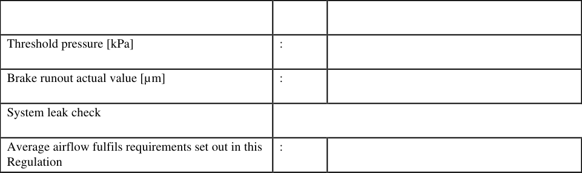
Brake dynamometer and automation system
Measurement equipment fulfils the requirements
:
eq
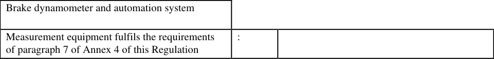
eq
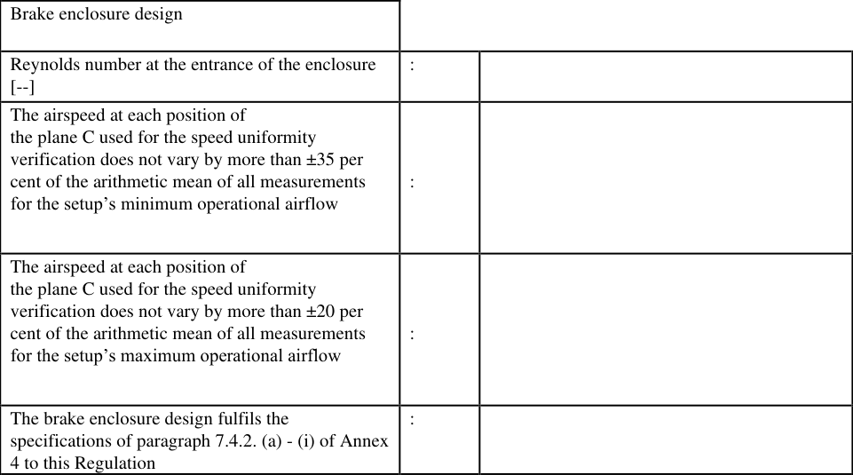
Table 10
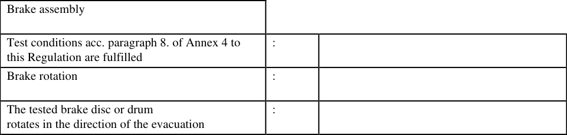
Table 11
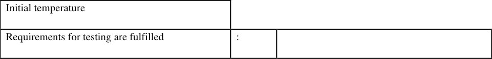
eq
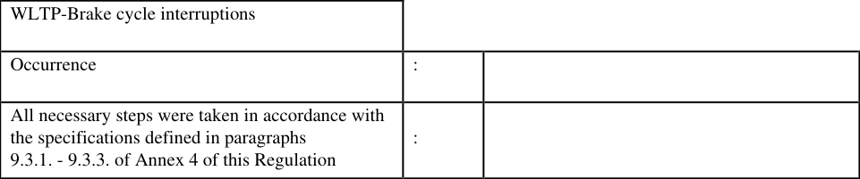
Table 13
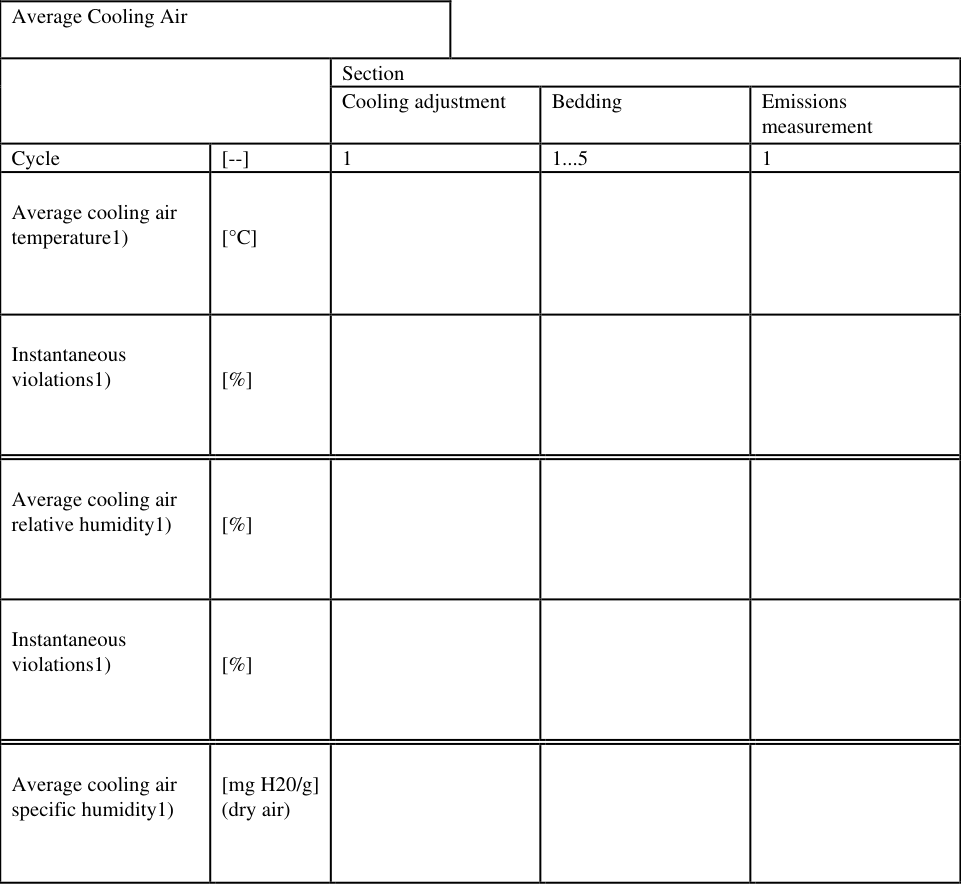
Table 14
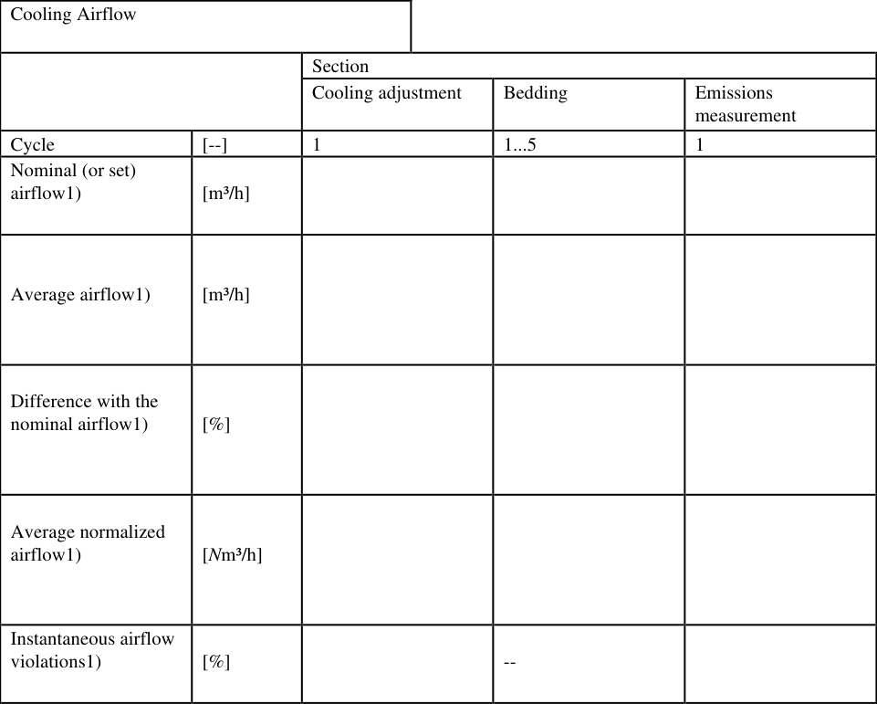
Table 15
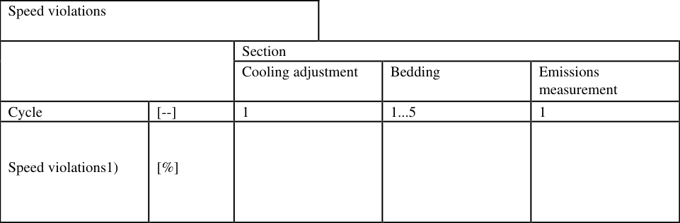
Table 16
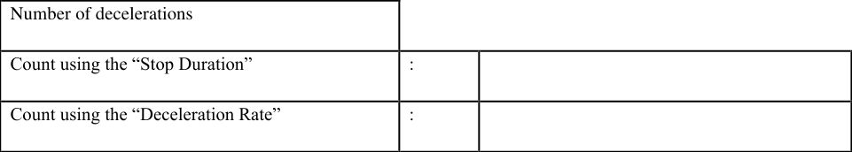
Table 17
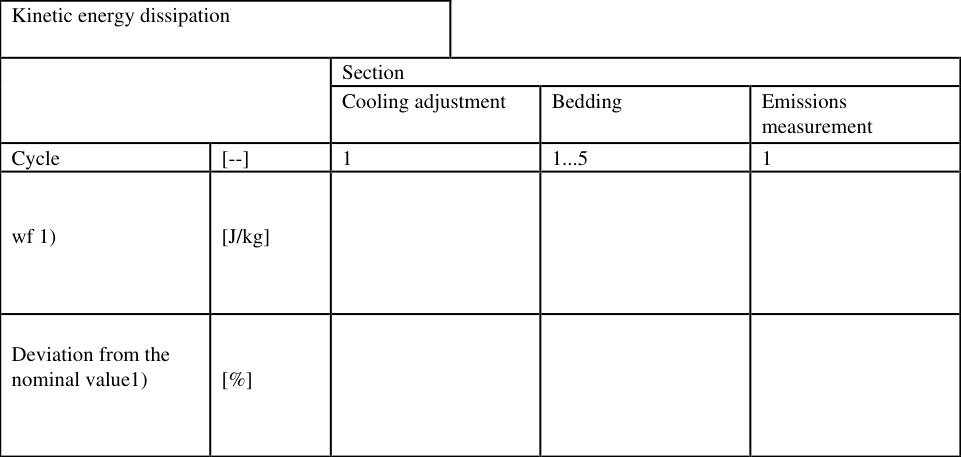
Table 18
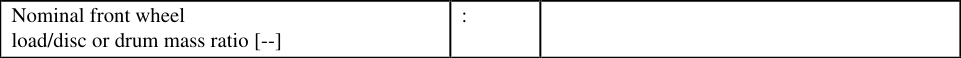
Table 19
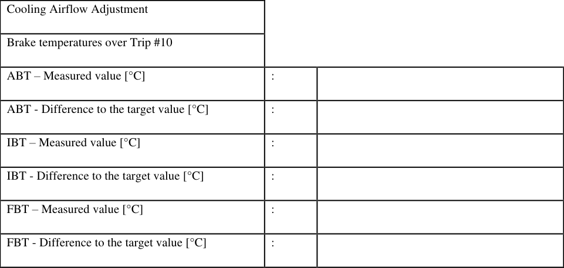
Bedding section
Requirements acc. paragraph 11. of Annex 4 of
:
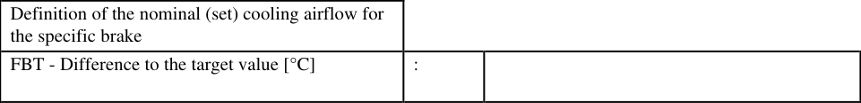
Bedding section
Requirements acc. paragraph 11. of Annex 4 of
:
Table 21
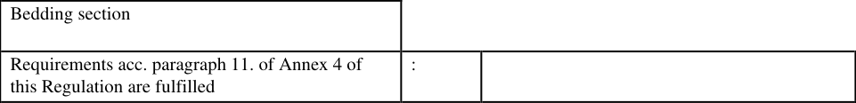
eq
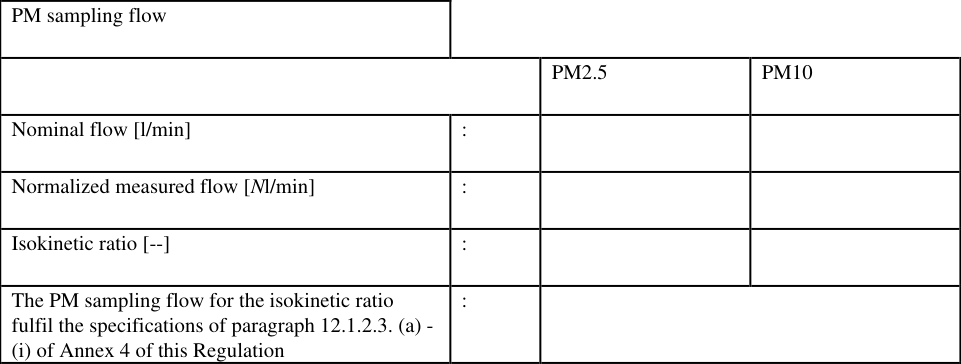
PM / PN sampling
Requirements acc. paragraph 12. of Annex 4 of
:
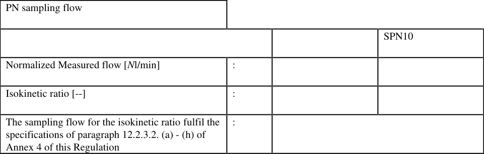
PM / PN sampling
Requirements acc. paragraph 12. of Annex 4 of
:
Table 24
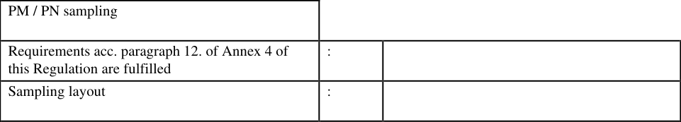
Table 25
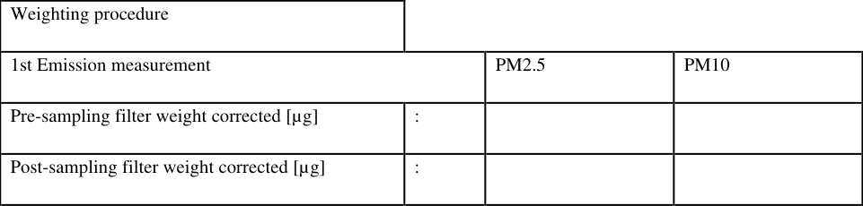
Table 26
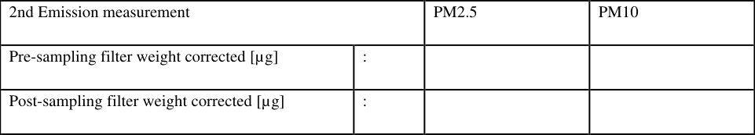
Table 27
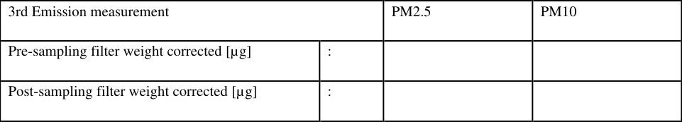
Table 28
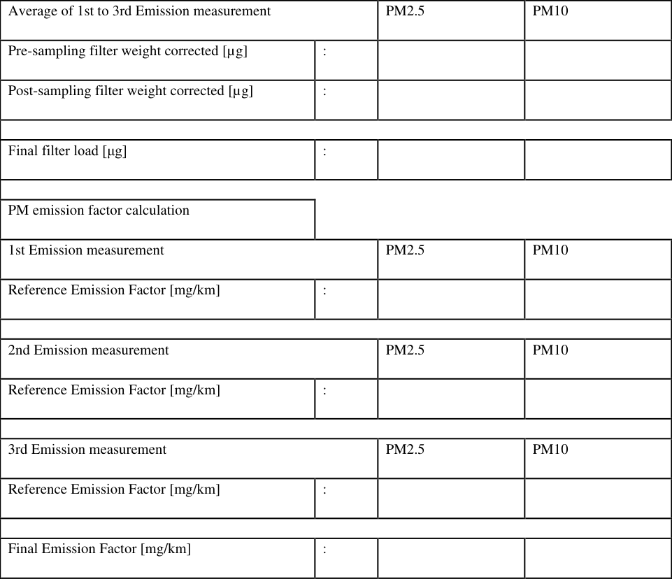
Table 29
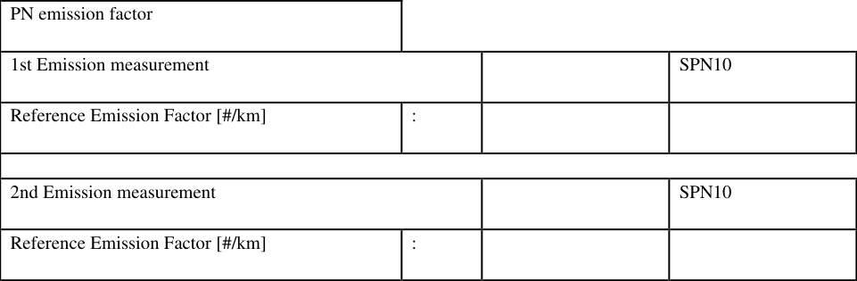
Table 30
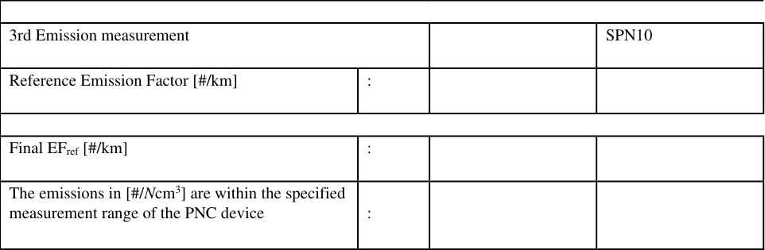
Calibration requirements
Calibration requirements acc. paragraph 14. of
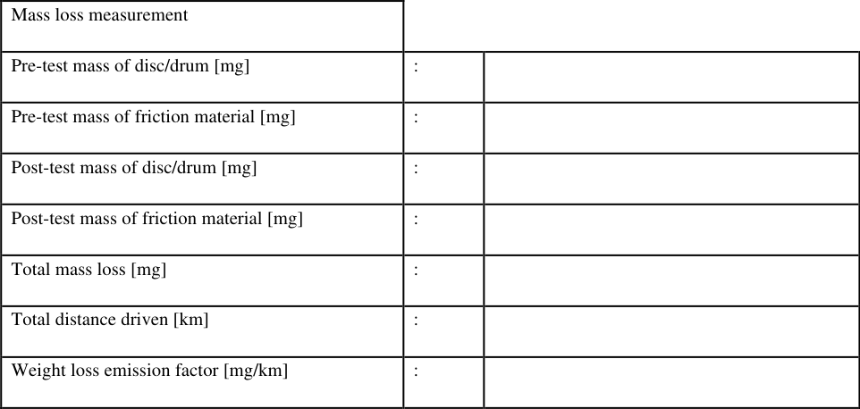
Calibration requirements
Calibration requirements acc. paragraph 14. of
Table 32
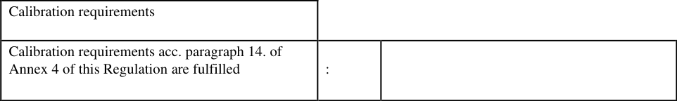
52個別摩擦制動分担係数試験報告書を提出する。Annex 1 - Appendix 2▼
English (Original)
Annex 1 - Appendix 2 Individual Friction Braking Share Coefficient (c-factor) Test Report (repeat as applicable for each individual measurement) Report ⑥ in Figure A1/1 of this Regulation. Test Report No.: Friction braking share coefficient report identifier : Manufacturer : Individual Friction Braking Share Coefficient (c-factor) Test Report UN Regulation No [179]
General Prototype number : VIN : Category : Bodywork : Drive wheels : Friction Brake (For each axle the points below shall be repeated) Type of brake system assembly (front/rear) : Disc or drum (front/rear) : Make of disc(s)/drum(s) (front/rear) : Type of disc(s)/drum(s) (front/rear) : Type of calliper(s) (front/rear) : Construction of calliper(s) (front/rear) : Make of calliper(s) (front/rear) : Type of retraction elements (front/rear) : Type of brake pad(s) or brake shoe(s) (front/rear) : Make of brake pad(s) or brake shoe(s) (front/rear) : Powertrain architecture Vehicle electrification type :
Internal combustion Engine (if applicable) Make : Type : Working principle : Cylinders number and arrangement : Engine capacity [cm3] : Rated engine power : [kW] at [rpm] Maximum net torque : [Nm] at [rpm] Control unit Part reference (same as information document) : Software tested (read via scantool, for example) : Software (data status) : Transmission Gearbox : :
Date of tests (dd.mm.yyyy) : Place of tests (chassis dyno, location, country) : Height of the lower edge above ground of cooling fan [cm] : Lateral position of fan centre (if modified as request by the manufacturer) : Distance from the front of the vehicle [cm] : IWR: Inertial Work Rating [%] : RMSSE: Root Mean Squared Speed Error [km/h] : IPDW: Inertial Power Difference Work [J/kg] : IPDR: Inertial Power Difference Rating [%] :
Annex 1 - Appendix 3 Vehicle Type Compliance Demonstration Report Report ⑧ in Figure A1/1 of this Regulation. Vehicle Type: - Revision / Correction : 00 Manufacturer: - Vehicle Type Compliance Demonstration Report Agreement concerning the adoption of uniform technical prescriptions for the wheeled vehicles, equipment and parts which can be fitted and/or be used on wheeled vehicles and the conditions for reciprocal recognition of approvals granted on the basis of these prescriptions Report : Applicant : Manufacturer : Subject : Determination of friction braking share coefficient and brake emissions Brake corner emission family identifier(s) : C-Factor test report identifier(s) : Object submitted to tests Make : IP identifier : Emission class : - Family Report X Granting type approval no. - Extension to type approval no. : - Correction to type approval no. : - Revision to type approval no. : Conclusion The object submitted to tests complies with the requirements mentioned in the subject.
Vehicle Type: - Revision / Correction : 00 Manufacturer: - List of revisions Rev.no. Date of revision Amended by Reason of revision / correction 00 DD.MM.YYYY First Name Surname First release 0 General 0.1 Make (trade name of manufacturer) : - 0.2 Type : - 0.3 Commercial name(s) : - 0.4 Manufacturer's name and address : - 0.4.1 Name and address of representative : - 0.4.2 Name and address of assembly plants : - 0.5 Information document No. : - Date of issue : - Date of last change : - 0.6 Additional data :
1試験対象物の詳細な説明を記載する。Description of tested object(s)▼
English (Original)
Description of tested object(s)
日本語訳
試験対象物の説明
1.1ブレーキの組み合わせを示す。Brake combination▼
English (Original)
Brake combination
日本語訳
ブレーキの組み合わせ
1.1.1前車軸ブレーキの排出ファミリーと試験報告書。Front axle brake▼
English (Original)
Front axle brake Brake corner emission family : Brake corner emission test report :
日本語訳
前車軸ブレーキ ブレーキコーナー排出ファミリー: ブレーキコーナー排出試験報告書:
1.1.2後車軸ブレーキの排出ファミリーと試験報告書。Rear axle brake▼
English (Original)
Rear axle brake Brake corner emission family : Brake corner emission test report :
日本語訳
後車軸ブレーキ ブレーキコーナー排出ファミリー: ブレーキコーナー排出試験報告書:
1.2摩擦制動分担係数は各試験で繰り返すこと。Friction braking share coefficient (for each test the points below shall be repeated)▼
English (Original)
Friction braking share coefficient (for each test the points below shall be repeated) Tested vehicles (example on how to fill the table is included below. Replace with real data before submitting) IP-family C-Factor test report identifier C-Factor IP 1 Test report identifier 1 IP 3, IP4, IP5 Test report identifier 2
日本語訳
摩擦制動分担係数（各試験について以下の点を繰り返さなければならない） 試験車両（表の記入例を以下に示す。提出前に実際のデータに置き換えなければならない） IPファミリー Cファクター試験報告書識別子 Cファクター IP 1 試験報告書識別子 1 IP 3, IP4, IP5 試験報告書識別子 2
2略語と記号Abbreviations and Symbols
2実施された試験の具体的な結果を記載する。Test results▼
English (Original)
Test results
日本語訳
試験結果
2.2摩擦制動分担係数は実データで記入すること。Friction braking share coefficient (example on how to fill the table is included below. Replace with▼
English (Original)
Friction braking share coefficient (example on how to fill the table is included below. Replace with real data before submitting) IP-family Fixed/Declared C-Factor IP 1 Declared IP 2 Fixed IP 3, IP4, IP5 Declared
日本語訳
摩擦制動分担係数（表の記入例を以下に示す。提出前に実際のデータに置き換えること）IP-ファミリー 固定／宣言 C-係数 IP 1 宣言 IP 2 固定 IP 3, IP4, IP5 宣言
General information Axle Test ID Test Bench Date IP-family Wheel load - front [kg] c * Wheel load - front [kg] IP-family Wheel load - rear [kg] c * Wheel load - rear [kg]
Final results - Whole vehicle IP-family PM10 Total [mg/km]
日本語訳
最終結果 - 全車両 IPファミリー PM10 合計 [mg/km]
2.3特記事項を記載する。Remarks▼
English (Original)
Remarks
日本語訳
備考
3定義Definitions
3試験報告書は記載された試験サンプルが要件に適合することを宣言する。Statement of conformity▼
English (Original)
Statement of conformity This Test Report is only valid for the described test sample. The test sample representative for this type – complies – with the requirements of the above-mentioned test specification with regard to the documented test method. This report includes pages 1 to X and is approved by the signer. Duplication and publishing in extracts of the Test Report is allowed only by written permission of the Test Laboratory. The XXXX Automobil Test Center is a testing laboratory accredited by the YYYY according to DIN EN ISO/IEC 17025. The accreditation is only valid for the scope of accreditation listed in the documented annex XXXX-01-00. Place, Date Title First Name Surname Specialist Tel.: XXXXXXXXXXXX – Fax: XXXXXXXXXXXXX – e-mail: firstname.surname@XXXXX.com End of test report 64
1承認を与えた国の識別番号を記載する。Distinguishing number of the country which has granted/extended/refused/withdrawn approval (see▼
English (Original)
Distinguishing number of the country which has granted/extended/refused/withdrawn approval (see approval provisions in the regulation).
日本語訳
承認を与え/延長し/拒否し/撤回した国の識別番号（規則の承認規定を参照）。
2略語と記号Abbreviations and Symbols
2該当しない項目は抹消しなければならない。Strike out what does not apply▼
English (Original)
Strike out what does not apply 65
日本語訳
該当しないものを抹消すること。
ブレーキ排出試験の手順を定める。Arrangement of the approval mark In the approval mark issued and affixed to a ve▼
English (Original)
Arrangement of the approval mark In the approval mark issued and affixed to a vehicle in conformity with paragraph 7. of this Regulation, the type approval number shall be accompanied by an alphanumeric character reflecting the level that the approval is limited to. This annex outlines the appearance of this mark and gives an example how it shall be composed. The following schematic graphic presents the general lay-out, proportions and contents of the marking. The meaning of numbers and alphabetical character are identified, and sources to determine the corresponding alternatives for each approval case are also referred. Number of country1 granting the approval a/2 a/3 123R – 012439 a/3 a 2 2
日本語訳
ブレーキ排出試験手順
参照段落
附属書 3承認マークの配置Arrangements of the approval mark
Figure 6
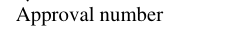
Figure 7
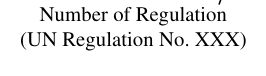
Figure 8
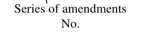
Figure 9
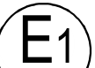
Figure 10
1適用範囲Scope and application
1承認を与えた国の識別番号を記載する。Distinguishing number of the country which has granted/extended/refused/withdrawn approval (see▼
English (Original)
Distinguishing number of the country which has granted/extended/refused/withdrawn approval (see approval provisions in the regulation) 66
日本語訳
承認を与え/延長し/拒否し/撤回した国の識別番号（規則の承認規定を参照）。
ブレーキ排出試験の手順を定める。Brake Emissions Test Procedure▼
English (Original)
Brake Emissions Test Procedure
日本語訳
ブレーキ排出試験手順
1気候調整ユニットは、流量、温度、湿度を制御する。Introduction▼
English (Original)
Introduction This Annex sets out the procedure for undertaking brake emissions testing as set out in paragraphs 7. and 8. of this Regulation. All cross-references within this annex to other paragraphs shall be considered as to being to paragraphs within this Annex, unless specified otherwise, for example, ‘paragraph x. of this Regulation’, or ‘paragraph x of Annex x/Appendix x’. 2. - 6. Reserved
日本語訳
第7.2.1項に従う、可変流量送風機、空気温度、および空気湿度制御を備えた気候調整ユニット。
7一般要件General Requirements
7試験システムの要件を規定する。Test System Requirements▼
English (Original)
Test System Requirements
日本語訳
試験システム要件
7.1ブレーキ粒子排出量測定のため、試験システムは複数のサブシステムを統合しなければならない。Overall Test System Layout▼
English (Original)
Overall Test System Layout This Regulation defines a standard dynamometer test method aiming for repeatable and reproducible measurements of particle emissions from brakes. The technical system to perform brake emissions tests requires a system approach. The execution of a valid brake emissions test requires a robust integration of several subsystems to ensure the drive cycle, cooling air, dynamometer control, brake enclosure, sampling tunnel, aerosol sampling systems, and data collection, altogether meet the requirements specified in this Regulation. Figure A4/1 provides two indicative layouts that include the minimum required subsystems to carry out a brake emissions test using a brake dynamometer. The illustrated layouts feature a climatic conditioning unit with variable flow fan(s) that supplies the setup with conditioned air. The conditioned air enters a brake enclosure designed to fit the entire assembly of the brake under testing. The brake dynamometer enables and controls the testing of the brake. The enclosure is directly connected to the sampling tunnel near the end of which three or four sampling probes are mounted. The sampling probes are used to extract the aerosol from the tunnel towards the PM and PN measurement setup. A flow measurement device is installed in the tunnel downstream of the sampling plane. The positioning and dimensions of the different elements are indicative and are provided for illustration purposes; therefore, exact conformance with Figure A4/1 is not required.
Figure A4/1 Indicative layout for performing brake emissions test in the laboratory (a) Without a bend downstream of the the enclosure and (b) with one 90°-bend downstream of the enclosure
Note: (a) The layout has the sampling tunnel connected directly to the brake enclosure and assumes
four sampling probes. The brake dynamometer is not depicted but only denoted (grey area) – a graphic
Figure
b) The layout has a bend downstream of the enclosure and upstream of the sampling plane an
s four sampling probes. The brake dynamometer is not depicted but only denoted (grey area)
hical representat
68制動排出ガス試験の構成は、表A4/1の要件を満たす必要がある。There are several accepted configurations to lay out the air handling and▼
English (Original)
There are several accepted configurations to lay out the air handling and control subsystems. All designs can use the same (not depicted) brake dynamometer, control software, data acquisition, and brake fixture. However, the testing facility shall ensure that all configurations include at least the subsystems and characteristics laid down in Table A4/1 Details regarding the different elements of the setup are given in the corresponding paragraphs of this Regulation as indicated in Table A4/1. Table A4/1 Subsystems and characteristics required for the brake emissions testing setup as depicted in Figure A4/1 Element Subsystem
9型式認可の変更と拡張Modification and extension of the type approval
9PM・PN測定機器は各段落に従い、SPN10・PM2.5・PM10システムは信号制御・出力を行う。Instruments to collect PM mass and measure PN concentrations per▼
English (Original)
Instruments to collect PM mass and measure PN concentrations per paragraphs 12.1. and 12.2., respectively SPN10 Systems to control, measure, and output the signal of SPN10 per paragraph 12.2. PM2.5, PM10 Systems to control sampling flow, sample brake particulate matter on filters, and output signals per paragraph 12.1.
10気流測定要素は段落7.2.3に従い、各直管長さに規定がある。Airflow measurement element placed downstream of the sampling plane▼
English (Original)
Airflow measurement element placed downstream of the sampling plane per paragraph 7.2.3. Symbol Characteristic 𝐋𝟎 Length of the straight duct downstream of the outlet of the enclosure. L0=L2 when there is no bend downstream of the enclosure and upstream of the sampling plane 𝐋𝟏 Minimum length of the straight duct upstream of the inlet of the brake enclosure per paragraph 7.4.2. 𝐋𝟐 Minimum length of the straight duct from the last disturbance upstream of the sampling plane to the sampling plane per paragraph 7.5. 𝐋𝟑 Minimum length of the straight duct from the sampling plane to the next disturbance downstream of the sampling plane per paragraph 7.5. 𝐋𝟒 Minimum length of the straight duct from the last disturbance upstream of the airflow measurement element to the airflow measurement element per paragraph 7.2.3.
Element Subsystem 𝐋𝟓 Minimum length of the straight duct from the airflow measurement element to the next disturbance downstream of the airflow measurement element per paragraph 7.2.3. 𝐒𝐐, 𝐒𝐏, 𝐒𝐓, 𝐒𝐑𝐇 Output electronic signals for cooling airflow, pressure, temperature, and humidity per paragraphs 7.2.1. and 7.2.3. 𝐝𝐢 Reference duct’s inner diameter. This is the same as the sampling tunnel’s inner diameter 𝐇𝐬, 𝐇𝐞 Points that define the beginning (Hs) and the end (He) of the mandatory horizontal part in the layout (in the direction of the flow) per paragraph 7.4.2.
7.2冷却空気は安定した温度・湿度、清浄度、一定流量で供給されなければならない。Climatic Conditioning Unit and Cooling Air▼
English (Original)
Climatic Conditioning Unit and Cooling Air The conditioned cooling air a) provides clean and continuous cooling to the brake assembly and b) transports the aerosol from the enclosure into the sampling tunnel and the PM/PN sampling probes. The cooling air needs to be under stable conditions for temperature and humidity in accordance with the specifications described in paragraph 7.2.1., clean with low background concentration values as defined in paragraph 7.2.2., and at a constant flow to ensure repeatable and reproducible testing conditions in accordance with the specifications described in paragraph 7.2.3. The conditioned cooling air is supplied to the testing setup by the climatic conditioning unit. A typical system configuration may include cooling devices to cool and dehumidify the air, heating devices to increase the temperature of the air, and steam or water mist generators to increase the humidity in the air. Integral to the unit are the closed-loop proportional integral derivative controls, alarms, and sensors to monitor the condition of all devices and interfaces. The system shall consist of a variable flow blower able to supply the layout with conditioned cooling air over a wide range of airflows. The system shall be defined by its minimum and maximum operational flows. The following specifications apply for the minimum and maximum operational flows: (a) The minimum operational flow shall be defined in the range between 100-300 m3/h; (b) The maximum operational flow shall be at least 5 times the minimum operational flow; (c) The maximum operational flow shall be at least 1000 m3/h greater than the minimum operational flow. The system may also combine two-variable flow blowers (one to push and one to pull) to provide a slight negative pressure inside the sampling tunnel. The climatic conditioning unit control shall be capable of providing the necessary interfaces to the operator and the dynamometer.
7.2.1試験設備は冷却空気の温度と湿度を連続的に監視・制御しなければならない。Cooling Air Conditioning▼
English (Original)
Cooling Air Conditioning The testing facility shall continuously monitor and control the temperature and humidity of the conditioned cooling air. For that reason, the testing facility shall install temperature and humidity sensors upstream of the brake enclosure. Positioning the sensors upstream of the brake enclosure avoids influencing the feedback signals with the thermal load from the brake events. Figure A4/1 provides an indicative position for the temperature and air humidity sensors (element 3). The temperature sensor shall have an accuracy of ±1 °C. The sensor applied for measuring the specific and relative humidity shall have an accuracy of ±5 70 per cent of the nominal value (i.e. 50 per cent). The testing facility shall use the signals from these sensors to assess the stability of the cooling air’s temperature and humidity. Table A4/2 summarises the requirements for the cooling air’s temperature, humidity, and flow. Table A4/2 Summary of cooling air temperature, relative humidity, and flow requirements Cooling air Cooling air Cooling Parameter temperature relative humidity airflow Nominal value 23 ⁰C 50 % Set value (Qset) per paragraph 10. Average value: Maximum permissible tolerance ±2 ⁰C (21 ⁰C ≤ T ≤ 25 ⁰C) ±5 % (45 % ≤ RH ≤ 55 %) ±5 % of Qset Instantaneous values (1Hz): Maximum permissible tolerance ±5 ⁰C (18 ⁰C ≤ T ≤ 28 ⁰C) ±30 % (20 % ≤ RH ≤ 80 %) ±5 % of Qset Instantaneous values (1Hz): Permissible deviation beyond the maximum permissible tolerance Not defined Not defined ±10 % of Qset Instantaneous values (1Hz): Maximum time exceeding the maximum permissible tolerance 10 % of each test section’s duration 10 % of each test section’s duration 5 % of each test section’s duration
7.2.1.1冷却空気温度は23℃に設定し、平均値は±2℃、瞬間値は±5℃を超えてはならない。Cooling Air Temperature▼
English (Original)
Cooling Air Temperature Cooling air temperature at the measurement point shall be constant as defined below. The testing facility shall carry out the following steps: (a) Set the cooling air temperature to 23 °C. The average cooling air temperature shall not deviate more than ±2 °C of the set (nominal) value (i.e. 21 ⁰C ≤ T ≤ 25 ⁰C). Testing facilities shall aim to keep the temperature as close as possible to the nominal value of 23 °C; (b) The average cooling air temperature requirements defined in point (a) of this paragraph apply to all sections of the brake emissions test, including cooling air adjustment, bedding procedure, and emissions measurement (soaking sections not included); (c) Calculate and report the average cooling air temperature in all sections as defined in Table A4/14; (d) The instantaneous cooling air temperature shall not deviate more than ±5 °C of the nominal value (i.e. 18 ⁰C ≤ T ≤ 28 ⁰C). If the instantaneous cooling air temperature deviates more than ±5 °C from the nominal value, the testing facility shall ensure that the provisions described in point (e) of this paragraph are met; (e) The instantaneous cooling air temperature may deviate more than ±5 °C of the nominal value (T < 18 °C or T > 28 °C) for no longer than the 10 per cent duration of the test (soaking sections not included), provided that the average temperature meets the requirements defined in point (a) of this paragraph: (i) The total number of instantaneous cooling air temperature readings (1Hz) with a value lower than 18 °C or higher than 71 28 °C shall be less than 527 during the cooling adjustment section; (ii) The total number of instantaneous cooling air temperature readings (1Hz) with a value lower than 18 °C or higher than 28 °C shall be less than 1,583 for each WLTP-Brake cycle of the bedding section; (iii) The total number of instantaneous cooling air temperature readings (1Hz) with a value lower than 18 °C or higher than 28 °C shall be less than 1,583 for the WLTP-Brake cycle of the emissions measurement section (soaking sections not included). (f) If the average or the instantaneous cooling air temperature falls out of the limits specified in this paragraph, the test shall be invalid.
7.2.1.2冷却空気の相対湿度は50%±5%に維持しなければならない。Cooling Air Humidity▼
English (Original)
Cooling Air Humidity Cooling air relative humidity shall be constant as defined below. The testing facility shall carry out the following steps: (a) Set the relative humidity of the cooling air to a nominal value of 50 per cent. The average cooling air humidity shall not deviate more than ±5 per cent of the nominal value (i.e. 45 per cent ≤ RH ≤ 55 per cent). Testing facilities shall aim to keep the relative humidity as close as possible to the target value of 50 per cent; (b) The average cooling air relative humidity requirements defined in point (a) of this paragraph apply to all sections of the brake emissions test including cooling air adjustment, bedding procedure, and emissions measurement (soaking sections not included); (c) Calculate and report the average relative humidity of the cooling air in all sections as defined in Table A4/14; (d) The instantaneous cooling air relative humidity shall not deviate more than ±30 per cent of the nominal value (i.e. 20 per cent ≤ RH ≤ 80 per cent). If the instantaneous cooling air relative humidity deviates more than ±30 per cent from the nominal value, the testing facility shall ensure that the provisions described in point (e) of this paragraph are met; (e) The instantaneous cooling air relative humidity may deviate more than ±30 per cent of the nominal value (RH < 20 % or RH > 80 %) for no longer than 10 per cent of the duration of the test (soaking sections not included), provided that the average relative humidity meets the requirements defined in point (a) of this paragraph: (i) The total number of instantaneous cooling air relative humidity readings (1Hz) with a value lower than 20 per cent RH or higher than 80 per cent RH shall be less than 527 during the cooling adjustment section; (ii) The total number of instantaneous cooling air relative humidity readings (1Hz) with a value lower than 20 per cent RH or higher than 80 per cent RH shall be less than 1,583 for each WLTP- Brake cycle of the bedding section; (iii) The total number of instantaneous cooling air relative humidity readings (1Hz) with a value lower than 20 per cent RH or higher than 80 per cent RH shall be less than 1,583 for the WLTP-Brake cycle of the emissions measurement section (soaking sections not included). (f) If the average or the instantaneous relative humidity falls out of the predefined limits specified in this paragraph, the test shall be invalid. 72 (g) In addition to the specifications defined for the relative humidity, the testing facility shall ensure that the average specific humidity of the cooling air is kept between 6 gH2O/kg and 11 gH2O/kg dry air throughout the entire brake emissions test (soaking sections during emissions measurement are not included). If the average specific humidity is outside of the limits specified in this paragraph, the test shall be invalid.
7.2.2.1冷却空気はH13以上のフィルターでろ過しなければならない。Cooling Air Filtering▼
English (Original)
Cooling Air Filtering The cooling air entering the test system shall pass through a medium capable of reducing particles of the most penetrating particle size in the filter material by at least 99.95 per cent or through a filter of at least class H13 as specified in EN 1822. Any other type of filter applied to remove volatile organic species (charcoal, activated carbon, or equivalent) shall be installed upstream of the H13 (or equivalent) filter. Figure A4/1 provides an indicative position for the air filtering device (element 2).
Particle Background Verification The particle background in the overall layout shall be defined on a PN concentration basis. The testing facility shall measure the particle background using the same instrumentation used for the PN emissions measurements. Details regarding the PN measurement system are provided in paragraph 12.2. The testing facility shall measure and report SPN10 background concentrations at two levels: system-level and brake emissions test level.
7.2.2.2.1システムレベルでの粒子バックグラウンド検証は、ブレーキなしで実施しなければならない。Particle Background Verification at the System Level▼
English (Original)
Particle Background Verification at the System Level The first level concerns the system background verification upon the installation of the testbed setup, after any major maintenance, or when there are indications of a system malfunction. The testing facility shall apply the following steps for a complete background verification at the system level: (a) Perform the background verification with neither the brake fixture nor any brake components installed inside the brake enclosure; (b) Perform the background verification with the SPN10 measurement system operating at the minimum calibrated PCRF setting; (c) Commence the background verification at least five minutes after stabilising the cooling airflow to the average values per paragraph 7.2.3. for cooling airflow stability and to the average values per paragraph 7.2.1. for cooling air temperature and humidity; (d) Perform the background verification at two different cooling airflow settings. Apply the minimum and maximum operational flow of the system. The testing facility shall sample SPN10 during the system background verification. The testing facility may use a single nozzle size for sampling SPN10 during the system background verification when applying different airflow settings; (e) The background verification procedure shall run for as long as it takes to allow the background concentration to stabilise. The background concentration is considered stable when the averaged PCRF-corrected PN value, calculated as a 5-minute moving average, stays below the maximum permissible level as per paragraph 7.2.2.2.3. The 5-minute moving average shall be derived from 1-second (1Hz) samples.
7.2.2.2.2試験レベルでの粒子バックグラウンド検証を実施しなければならない。Particle Background Verification at the Test Level▼
English (Original)
Particle Background Verification at the Test Level
日本語訳
試験レベルにおける粒子バックグラウンドの検証
73ブレーキ排出ガス試験前後にバックグラウンド検証を実施し、PN濃度が安定するまで行う。The second level concerns the background verification before and after the▼
English (Original)
The second level concerns the background verification before and after the execution of a brake emissions test. The testing facility shall carry out the following steps for the pre-test verification: (a) Perform the regular background pre-test before the bedding section with the brake assembly mounted. The disc/drum shall not rotate and the pads/shoes shall not be disturbed. Do not apply braking during the background verification procedure (zero brake pressure); (b) Perform the pre-test verification with the cooling airflow setting defined for the given brake emissions test. The SPN10 measurement system shall operate at the PCRF setting selected for the brake emissions test of the brake under testing; (c) Commence the background pre-test verification at least five minutes after stabilising the cooling airflow to the average values per paragraph 7.2.3. for cooling airflow stability and to the average values per paragraph 7.2.1. for cooling air temperature and humidity; (d) Perform the background pre-test verification for as long as it takes for the background concentration to stabilise. The background concentration is considered stable when the PCRF-corrected PN value, calculated as a 5-minute moving average, stays below the maximum permissible level as per paragraph 7.2.2.2.3. The 5-minute moving average shall be derived from 1-second (1Hz) samples. Do not switch off the PN system after the end of the pre-test verification and before completing the post-test verification. The testing facility shall carry out the following steps for the post-test verification: (e) Perform the regular background post-test before purging the PN system and with the brake assembly mounted. The disc/drum shall not rotate and the pads/shoes shall not be disturbed. Do not apply braking during the background verification procedure (zero brake pressure); (f) Perform the post-test verification with the cooling airflow setting used for the given brake emissions test. The SPN10 measurement system shall operate at the PCRF setting selected for the brake emissions test; (g) Commence the background post-test verification right after the emissions test and with the cooling airflow stabilised to the average values per paragraph 7.2.3. for cooling airflow stability and to the average values per paragraph 7.2.1. for cooling air temperature and humidity. Do not switch off the PN system after the end of the emissions section and before completing the post-test verification; (h) Perform the background post-test for as long as it takes for the background concentration to stabilise. The background concentration is considered stable when the PCRF-corrected PN value, calculated as a 5-minute moving average, remains below the maximum permissible level as per paragraph 7.2.2.2.3. The 5-minute moving average shall be derived from 1-second (1Hz) samples.
7.2.2.2.3粒子バックグラウンド濃度は標準条件下で測定・報告され、PNCゼロ検証と濃度限度遵守が必須である。Calculation and Reporting of the Particle Background Concentration▼
English (Original)
Calculation and Reporting of the Particle Background Concentration The background shall be measured and reported at a SPN10 concentration basis at standard conditions. The testing facility shall apply the following procedure: (a) Perform a zero verification of the particle number counter (PNC). Apply a filter of appropriate performance at the inlet of the PNC per the equipment manufacturer’s specification and record the PN concentration. The reading shall not exceed 0.2 #/cm³ at the inlet of the PNC. Upon removal of the filter, the PNC shall show an increase in 74 measured concentration and a return to ≤ 0.2 #/cm³ on the replacement of the filter. The PN measurement device shall not report any errors; (b) Measure the average value of SPN10 (SPN10b#) background concentrations at the system and test levels following paragraphs 7.2.2.2.1. and 7.2.2.2.2. Report the background values in normalised particle number concentration (#/Ncm3) as specified in Table A4/14; (c) The 5-minute average background concentration in the tunnel shall not exceed the maximum limit of 20 #/Ncm³ for SPN10. The limit of 20 #/Ncm3 applies to the background concentration at both system and test levels as described in paragraphs 7.2.2.2.1. and 7.2.2.2.2.; (d) Failure to comply with the zero verification of the PNC described in point (a) and with the particle background limits defined in point (c) of this paragraph shall result in an invalid test; (e) The testing facility shall not subtract the background concentration value when reporting the SPN10 concentration value of the brake emissions measurement section per paragraph 12.2.4.
7.2.2.2.4走行距離あたりの粒子バックグラウンドを算出し報告しなければならない。Calculation and Reporting of the Particle Background per Distance Driven▼
English (Original)
Calculation and Reporting of the Particle Background per Distance Driven The testing facility shall also report the background expressed as the number of particles per distance driven to reflect the changes in the cooling air settings when testing different brakes. The calculation of the background per distance driven is determined by Equation[s] 7.1 and 7.2: reserved (Eq. 7.1) SPN10bEF = 106 × SPN10b# × 𝑁Q ÷ VSet (Eq. 7.2) Where: SPN10bEF is the SPN10 background in the sampling tunnel in #/km; SPN10b# is the average normalised and PCRF-corrected SPN10 background concentration in the sampling tunnel in #/Ncm³; 𝑁Q is the average normalised airflow in the sampling tunnel in Nm³/h; VSet is the average nominal linear speed of the WLTP-Brake cycle in km/h. (a) The PN background concentration (SPN10b#) corresponds to the average normalised and PCRF- SPN10 value calculated throughout the background verification from the parameters as specified in Table A4/14; (b) Calculate the normalised average cooling airflow (NQ) during the background verification procedure from the parameters as specified in Table A4/14; (c) The average nominal linear speed of the WLTP-Brake cycle equals to 43.7 km/h (Vset = 43.7 km/h); (d) Calculate and report the background particle concentration values per distance driven only at the test level – both pre- and post-test – as specified in Table A4/14.
Cooling Airflow The testing facility shall measure and report the cooling airflow throughout the entire brake emissions testing procedure. The measurement of the cooling airflow shall meet the following requirements: 75 (a) The method of measuring cooling airflow shall be such that measurement is accurate to ±2 per cent of the set value under all operating conditions; (b) Measure the cooling airflow downstream of the sampling plane. Figure A4/1 provides an indicative position for the flow measurement device (element 10); (c) For a single-point measurement, locate the flow measurement element at the centre of the duct, at least five duct diameters downstream and two duct diameters upstream of any flow disturbance. The flow measurement area may have a different inner diameter from the sampling tunnel. In such a case, duct diameter refers to the inner diameter of the duct where the flow element is located. The installation of the flowmeter shall not introduce significant pressure changes (i.e. the pressure at the flow measurement element shall be within ±1 kPa of ambient pressure). The duct’s inner diameter shall be at least 35 per cent of the sampling tunnel’s inner diameter; (d) For a multi-point measurement, install the flow measurement element perpendicular to the flow direction, at least five duct diameters downstream and two duct diameters upstream of any flow disturbance. Duct diameter refers to the inner diameter of the duct where the flow measurement elements are located. The specifications for the installation of the flowmeter defined in point (c) of this paragraph shall apply when the duct’s inner diameter is different from the sampling tunnel’s inner diameter; (e) Use a flow measurement device calibrated to report airflow at standard conditions. To ensure an appropriate conversion to operating conditions, the temperature sensor shall have an accuracy of ±1 °C and the pressure measurements shall have a precision and accuracy of ±0.4 kPa; (f) When the airflow measurement device is not calibrated to report values at standard conditions, ensure it includes a temperature sensor installed immediately before the measuring device. The temperature sensor shall fulfil the accuracy requirements described in point (e) of this paragraph. Use this measurement to normalise the airflow values; (g) When the airflow measurement device is not calibrated to report values at standard conditions, ensure it includes the measurement of the absolute pressure or the pressure difference from atmospheric pressure taken upstream from the measuring device. The pressure measurements shall fulfil the precision and accuracy requirements described in point (e) of this paragraph. Use this measurement to normalise the airflow values; (h) When using air filters to protect the airflow measurement device from contamination, install the filter at least five duct diameters upstream of the flow measurement device. Continuously monitor the pressure drop and, when necessary, correct the measured airflow accordingly. Follow the recommendations regarding the type and specifications of the protective filter provided by the manufacturer of the flow measurement device. The testing facility shall ensure that the cooling airflow is constant throughout the entire brake emissions test as follows: (i) The set (nominal) value for the cooling airflow (Qset) shall be the same and constant during all sections of a brake emissions test. The same set value shall apply to cooling adjustment, bedding, and emissions measurement (including soaking) sections. This does not apply to the 76 non-successful iterations of the cooling adjustment section, which may have a different cooling airflow set value; (j) During the cooling adjustment section, the average measured cooling airflow shall be within ±5 per cent of the set value defined at the beginning of the test; (k) During the bedding section, the average measured cooling airflow shall be within ±5 per cent of the nominal value defined during the cooling adjustment section for the given brake; (l) During the emissions measurement section, the average measured cooling airflow shall be within ±5 per cent of the nominal value defined during the cooling adjustment section for the given brake; (m) Calculate and report the time-averaged measured cooling airflow in all sections as defined in Table A4/14; (n) In case the average nominal or measured cooling airflow does not meet the requirements defined in this paragraph, the test shall be invalid; (o) The instantaneous cooling airflow can deviate more than ±5 per cent and up to ±10 per cent of the nominal value for no longer than 5 per cent of the duration of the cycle, provided that the average measured cooling airflow meets the requirements defined in this paragraph. This applies to the cooling adjustment and emissions measurement sections: (i) For the cooling adjustment section, the instantaneous cooling airflow can deviate between ±5 and ±10 per cent of the set value for no longer than 264 s; (ii) For the emissions measurement section, the instantaneous cooling airflow can deviate between ±5 and ±10 per cent of the set value for no longer than 792 s (soaking sections not included). (p) In addition to the compliance with the average and instantaneous limits defined in this paragraph, the cooling airflow in combination with the sampling airflow in the PM and PN sampling lines shall meet the isokinetic requirements per paragraphs 12.1.2.3. and 12.2.3.2., respectively; (q) A system leak check covering the ductwork and the enclosure shall be carried out before testing. Set the cooling airflow at the cooling setting defined for testing the given brake and measure for at least 2 min after the flow is stabilised. If the average measured flow is within ±5 per cent of the set value, proceed with the testing. If the flow fluctuates beyond ±5 per cent of the set value cease testing activities, verify the flow measurement device, identify possible sources of the leak(s), take corrective action to resolve the issue, and resume testing by first performing a successful leak check. Alternative methods that follow the system manufacturer’s specifications may be applied for determining the leakage rate of the system; however, the testing facility shall always report the actual level of flow fluctuation from the set value; (r) The testing facility shall report the cooling airflow in the Time-Based file of the brake emissions test. Additionally, the testing facility shall report both actual and normalised airflow as defined in Table A4/14
7.3ブレーキダイナモメータは、試験ブレーキに運動エネルギーを供給する。Brake Dynamometer and Automation Systems▼
English (Original)
Brake Dynamometer and Automation Systems The brake dynamometer is a technical system that provides the controlled kinetic energy to the brake under test. It primarily transforms rotational kinetic energy into thermal energy (Figure A4/2 ‒ S1). Figure A4/2 provides a layout of the test system with the brake dynamometer and shows the interactions with 77 the minimum subsystems required to execute a brake emissions test following this Regulation. Figure A4/2 Brake dynamometer and automation systems in the overall test layout
日本語訳
ブレーキダイナモメータ及び自動化システム
Figure
78自動化システムはブレーキ試験の全機能を実行し、データ記録、制御、監視を行う。The automation, control, and data acquisition system performs all the functions▼
English (Original)
The automation, control, and data acquisition system performs all the functions that enable the brake emissions test. It accelerates the brake during acceleration events, maintains constant speed during cruise events, and modulates the frictional torque during deceleration events to reduce the kinetic energy of the rotating masses. Additionally, the automation, control, and data acquisition system provides an interface to the operator, stores the data from the test, and handles the interfaces with other systems in the testing facility. The automation system shall be capable of using active torque control on the electric motor to increase or decrease the total effective test inertia during deceleration events. The electric motor shall also be capable of absorbing part of the kinetic energy equivalent to the road loads and the non-friction braking from the vehicle’s powertrain. The software that operates the test system shall be capable of performing at least the following functions: (f) Execute the driving cycle automatically by operating all the closed-loop processes (mainly for brake controls, cooling air handling, and emissions measurement instruments); (g) Continuously sample and record data from all relevant sensors to generate the outputs defined in paragraph 13. of this annex; (h) Monitor signals, messages, alarms, or emergency stops from the operator and the different systems connected to the test system.
Brake Enclosure Design The brake enclosure is the test chamber where the brake assembly is installed during brake emissions testing. It is a sealed chamber that prevents untreated air from entering and contaminating the air flowing around the brake assembly. The brake enclosure directs uniform conditioned air to cool the brake and transport aerosol into the sampling tunnel. Design requirements for the enclosure aim to provide general guidelines to ensure systems’ comparability related to brake cooling and particle transport efficiency. Figure A4/1 provides an indicative position for the brake enclosure (element 4).
General Elements An indicative shape of the enclosure is illustrated in Figure A4/3 The enclosure is defined by one horizontal and four vertical planes. Plane A1 represents the horizontal level aligned with the axis of the brake rotation and the axis of the inlet and outlet ducts. Plane A represents the vertical plane aligned with the enclosure’s inlet. Plane B represents the vertical plane at the end of the transition from the inlet duct to the central section of the enclosure. Plane C shall be defined by the largest brake assembly applied on the vehicles that fall under the scope of this Regulation or any brake with similar dimensions (i.e. diameter of 450 mm). Plane D represents the vertical plane aligned with the axis of the brake rotation.
Figure A4/3 Indicative schematic representation of the brake enclosure
日本語訳
図A4/3は、ブレーキエンクロージャの概略図を示す。
Figure
The inlet transition volume (Figure A4/3 – 1) is defined as the section of the
enclosure between Planes A and B and is illustrated with a grey colour. The
transition angle “a” (Figure A4/3 – 2) defi
Design Specifications The following general specifications for the design of the brake enclosure and the verification of proper mixing and flow uniformity therein shall be met: (a) The brake enclosure shall have two conical or trapezoidal sections intersecting with a cylinder at the centre concentric to the axis of the brake rotation; (b) The transition from Plane A to Plane B shall be smooth and continuous with no abrupt changes. The requirements apply to the vertical plane, along the duct axis, and to the horizontal Plane A1 along the enclosure’s cross section (intersecting cylinder); (c) The inlet and outlet cross-sections shall be designed to ensure smooth transition angles (15° ≤ a ≤ 30°) to avoid sudden changes in cross- section shape or size; (d) The transition points between the segments shall not have any imperfections or features that may collect brake particles that could become airborne later during the test; (e) If fasteners are applied at the transition points, they shall not protrude into the enclosure area; (f) The cooling air shall enter and exit the enclosure only in the horizontal direction (i.e. the central axis of the enclosure defined by Plane A1 shall align with the airflow direction). The tunnel shall be horizontal and straight for at least two duct diameters (2∙di) upstream of the enclosure’s inlet. The tunnel ducting shall also be horizontal after the enclosure at least until two duct diameters (2∙di) downstream of the sampling plane as specified in paragraph 7.5.; (g) The surfaces of the brake enclosure that come into contact with the aerosol shall have a seamless construction. Stainless steel with an electropolished finish (or equivalent) shall be used to attain an ultra- clean and ultra-fine surface and to enhance corrosion resistance; (h) Select all materials (including seals) to ensure sufficient protection against the media used (e.g. brake fluid) during setup. All enclosure 80 gaps and interfaces shall be air-tight sealed using gasket linings or equivalent; (i) The airflow at the entrance of the enclosure shall remain turbulent with a Reynolds number of at least 4000 for all airflow testing settings to ensure sufficient mixing. Calculate the Reynolds number Re for a given brake emissions test using Equation 7.3; Re = (𝑈× di) (υ ⁄ × 3.6 × 1000) (Eq. 7.3) Where: Re is the Reynolds number for the given brake emissions test (unitless); U is the average cooling airspeed at the sampling tunnel in km/h; di is the sampling tunnel diameter in mm per Table A4/1; 𝜐 is the kinematic viscosity of air (use a default value of 1.48×10−5 m²/s). The average cooling airspeed at the sampling tunnel can be calculated using the measured airflow and the sampling tunnel’s inner diameter based on Equation 7.4; 𝑈= (4 × 103 × Q) (𝜋× di ⁄ (Eq. 7.4) Where: 𝑄 is the measured cooling airflow in m³/h per Table A4/10; 𝑑𝑖 is the sampling tunnel’s diameter in mm per Table A4/1 (j) Plane C is tangential to an arbitrary disc of a diameter of 450 mm. Design the cross-section area at the enclosure inlet so that the airspeed at Plane C remains below the maximum permissible tolerance for speed uniformity defined in point (l) of this paragraph. If necessary, use flow straighteners or diffusion plates at the inlet’s side upstream of Plane B to ensure the highest possible level of uniform flow at Plane C; (k) Calculate the airspeed values at nine positions in Plane C as defined in Figure A4/4 Divide Plane C into nine equal areas by lines parallel to the sides of the plane (l1 represents plane C’s height – l2 represents plane C’s axial depth). Point C5 shall be the centre of Plane C. The remaining 8 points shall be equally distributed around point C5 and placed in the middle of the imaginary lines between point C5 and the enclosure’s walls at Plane C as demonstrated in Figure A4/4; Figure A4/4 Reference positions for airspeed verification
Dimensions The testing facility shall exercise due diligence to select the brake enclosure such that it fits the largest brake assembly applied to vehicles that fall within the scope of this Regulation. This includes possible additional parts designed to reduce particle emissions (e.g. brake filtering devices) provided their dimensions fit the corresponding wheel dimensions on which the brake is mounted. In addition, the testing facility shall verify that the selection is within the capabilities for speed, brake test inertia, and brake torque expected during the test. Oversized brake enclosures may lead to low-pressure regions, low airspeeds to achieve the target brake temperatures, and longer particle transport times. An indicative layout with the principal dimensions of the enclosure is illustrated in Figure A4/5 Figure A4/5 Indicative schematic representation of the brake enclosure and its main dimensions
The minimum specifications related to the dimensions of the brake enclosure
are described below. In addition to the dimension specifications described in
this paragraph, the testing facility shall e
Brake filtering systems The installation of brake filtering systems or other brake dust collection devices shall not adversely impact the facility performance. Positioning, length and bends of the system hoses shall be representative of real world applications. Parts of the systems may be installed outside the enclosure as long as they do not impact the brake filter system particle collection efficiency. Any extracted flow from the enclosure shall be returned at the inlet of the tunnel, approximately in the center of the cross-section. If an active system is designed to use one or several filter(s) and one blower for more than one brake(s) for vehicle applications, the additional volume flow needed to compensate the volume flow of the other brake(s) shall be extracted by the tunnel upstream of the enclosure (and downstream of the volume flow measurement). If applicable, a new filter shall be used for for bedding and emissions measurement accoring to Figure 2. All requirements of this GTR shall be fulfilled. For example, cooling air flow adjustments shall be done with the system installed and operating as during emission measurements.
7.5サンプリングトンネルは、エンクロージャ出口からサンプリングプローブ入口までの部分をいう。Design of the Sampling Tunnel▼
English (Original)
Design of the Sampling Tunnel The sampling tunnel is defined as the part between the outlet of the brake enclosure and the inlet of the sampling probes. Figure A4/1 provides an indicative position for the sampling tunnel in the overall layout (element 7). There are two possibilities for the design of the sampling tunnel: a layout without a bend (Figure A4/1 (a)) and a layout with one bend (Figure A4/1 (b)). The testing facility shall ensure the design of the sampling tunnel meets the following requirements: (a) The cooling air shall flow through round ducts with no variations in the cross-section between the enclosure exit and the sampling plane; (b) Stainless steel with an electropolished finish (or equivalent) shall be used for the surfaces of the tunnel that come into contact with the aerosol; (c) Any transition between adjacent sectors shall not have imperfections or features that may accumulate brake particulate matter. Whenever this is not feasible, ensure the transitions are engineered to minimise the accumulation of brake particulate matter; 83 (d) Ducts shall have a constant inner diameter di of at least 190 mm and a maximum of 225 mm (190 mm ≤ di ≤ 225 mm). The duct inner diameter di is defined as shown in Figure A4/6; (e) A maximum of one bend of 90° or less may be applied in the sampling tunnel (i.e. downstream of the brake enclosure and upstream of the sampling plane) provided that the specifications described in (f) and (g) are met; (f) If a bend is applied in the sampling tunnel, the bending radius rb shall be at least two times the duct inner diameter (2∙di). The bending radius is defined as shown in Figure A4/6; Figure A4/6 Definition of duct diameter (di) and bending radius (rb)
Sampling Plane The sampling plane is the vertical plane in the sampling tunnel where the inlet of the sampling probes is placed. Figure A4/1 provides an indicative position for the sampling plane in the overall layout (element 8). The following provisions apply to the sampling plane: (a) PM and PN sampling shall take place in the same cross-section area in the sampling tunnel. Reference paragraphs 12.1.1.1. and 12.2.1.1. for PM and PN sampling, respectively; 84 (b) Use a four-probe configuration fulfilling the requirements of this paragraph. Figure A4/7 illustrates the proper positioning of the PM and PN sampling probes. Alternative positioning of the measurement devices in the four-probe layout may be possible when a flow-splitter device for PN is used per paragraph 12.2.1.1.;
Input Parameters The following parameters related to the brake – and the vehicle on which the brake under testing is mounted – shall be available to the testing facility to carry out brake emissions testing following this Regulation.
Table A4/3 Required test parameters Parameters and Inputs Short description Symbol Unit Decim. No.
日本語訳
表A4/3 要求される試験パラメータ パラメータと入力 略称 記号 単位 小数点以下桁数
1適用範囲Scope and application
1試験対象ブレーキ装着車両のメーカーとモデルを特定する。Vehicle make▼
English (Original)
Vehicle make and model The vehicle make and model where the brake under testing is mounted - N/A
日本語訳
車両メーカーおよびモデル 試験対象のブレーキが装着される車両のメーカーおよびモデル。
2略語と記号Abbreviations and Symbols
2試験対象ブレーキ装着車両の電動化タイプを特定する。Vehicle▼
English (Original)
Vehicle electrification type The brake corner emissions family parent vehicle electrification type (PEV, OVC-HEV, NOVC-HEV Cat. 0, NOVC-HEV Cat. 1, NOVC-HEV Cat. 2, ICE) where the brake under testing is mounted - N/A
Vehicle-specific braking share coefficient The brake corner emissions family parent vehicle-specific braking share coefficient c - 2
日本語訳
車両固有の制動分担係数 ブレーキコーナー排出ファミリーの親車両固有の制動分担係数c。
4承認申請Application for approval
4試験対象ブレーキ装着車両の車軸を特定する。Vehicle axle▼
English (Original)
Vehicle axle The axle on the vehicle, front or rear, where the brake under testing is mounted FA or RA - N/A
日本語訳
車両車軸 試験対象のブレーキが装着される車両の車軸、前部または後部。
5承認Approval
5試験対象ブレーキの車両における取り付け位置を特定する。Brake mounting▼
English (Original)
Brake mounting position in the vehicle The location of the brake under testing on the vehicle, right-hand corner or left-hand corner RHC or LHC - N/A
日本語訳
車両におけるブレーキの取り付け位置 試験対象のブレーキの車両における位置、右側または左側。
6表示Markings
6ブレーキダイナモメータでシミュレートする車両試験質量を定める。Vehicle test mass The vehicle mass to be simulated on▼
English (Original)
Vehicle test mass The vehicle mass to be simulated on Mveh kg 0 the brake dynamometer as defined in point (a) in this paragraph
日本語訳
車両試験質量 この段落の(a)で定義される、ブレーキダイナモメータでシミュレートされる車両質量。
7一般要件General Requirements
7各車軸の制動力と総制動力の比率を定める。Brake force▼
English (Original)
Brake force distribution The ratio between the braking force of each axle and the total braking force on the vehicle as described in point (b) in this paragraph FAF or RAF % 0
日本語訳
制動力配分 この段落の(b)に記載される、各車軸の制動力と車両の総制動力との比率。
8概要General overview
8ブレーキアセンブリの支持固定具の形式を定める。Fixture style▼
English (Original)
Fixture style The support fixture of the brake assembly per paragraph 8.4.1. L0-U or L0-P - N/A
日本語訳
固定具の形式 段落8.4.1ごとのブレーキアセンブリの支持固定具。
参照段落
9型式認可の変更と拡張Modification and extension of the type approval
9ディスクまたはドラムの識別コードは製造業者により表示される。Disc or drum▼
English (Original)
Disc or drum identification code The code labelled by the brake manufacturer on the disc/drum - N/A
Friction material identification code The code labelled by the friction manufacturer on the pads/shoes - N/A WLn−f or WLn−r
日本語訳
摩擦材の識別コードとは、摩擦材製造業者によってパッドまたはシューに表示されるコードをいう。
11生産不適合に対する罰則Penalties for non-conformity of production
11公称車輪荷重は、損失考慮前の試験中のブレーキ位置荷重をいう。Nominal Wheel▼
English (Original)
Nominal Wheel Load The load at the brake corner under testing (front or rear) before accounting for vehicle road loads or any other type of losses as defined in point (c) in this paragraph kg
Test (or applied) Wheel Load Load at the brake corner under testing (front or rear) after accounting for vehicle road loads or any other type of losses as defined in point (d) in this paragraph kg 1 rR mm 0
Brake nominal inertia Wheel load with a gyration radius that equals the tyre dynamic rolling radius which imposes the same kinetic energy on the service brake as in the actual vehicle. It is defined in point (f) in this paragraph 1
16ブレーキ試験慣性は、損失による減速力を差し引いた後の公称慣性をいう。Brake test (or▼
English (Original)
Brake test (or applied) inertia Nominal brake inertia after subtracting the decelerating forces induced by vehicle road loads or any other type of losses as defined in point (g) in this paragraph It kg·m 2 1
Disc/Drum maximum outer diameter The largest diameter of the disc or drum under testing OD mm 1
日本語訳
「ディスク/ドラム最大外径」とは、試験中のディスクまたはドラムの最大外径をいう。
18ディスク質量は試験前の質量でブレーキ割り当てに使う。Disc Mass▼
English (Original)
Disc Mass Mass of the disc before testing – It is used for the allocation of the brake under testing to a nominal front wheel load to disc mass group as described in paragraph 10 DM kg 4
Brake calliper or brake drum efficiency Efficiency to account for internal friction losses between sliding interfaces or piston travel if specified by the brake manufacturer. If not specified, use 100 per cent H % 0 pthreshold kPa 1
Threshold pressure Minimum pressure to overcome internal resistance before the onset of brake torque as defined in paragraph 3.1.19. of this Regulation
87試験パラメータ計算には車両試験質量、制動力配分、公称車輪荷重、試験車輪荷重を考慮しなければならない。The following considerations shall be taken into account when calculating▼
English (Original)
The following considerations shall be taken into account when calculating some of the required testing parameters provided in Table A4/3: (a) Vehicle Test Mass (Mveh) is the mass in running order (MRO) plus the mass of the optional fitted equipment of the vehicle (kg) on which the tested brake is mounted plus: (i) 37.5 kg that corresponds to an additional mass of 0.5 passengers, for category 1-1 vehicles; (ii) 25 kg plus 28 per cent of the Maximum Vehicle Load (MVL), for category 2 vehicles with a fully laden mass below 3500 kg. (b) Brake Force Distribution (FAF or RAF) represents the ratio between the braking force of each axle and the total braking force on the vehicle, respectively. FAF represents the share of the braking force applied to the front axle. RAF represents the braking force share applied to the rear axle. The brake force distribution is expressed as a percentage. The brake force distribution for each vehicle (FAF or RAF) is provided by the vehicle manufacturer. The brake force distribution per the default method on UN Regulation No. 90 shall be applied only whenever the vehicle manufacturer’s specific value is not available. This corresponds to: (i) 77 per cent for the front axle and 32 per cent for the rear axle for Category M1 vehicles; (ii) 66 per cent for the front axle and 39 per cent for the rear axle for category 2 vehicles with a fully laden mass below 3,500 kg. (c) Nominal Wheel Load (WLn) represents the load on the brake under testing (front or rear) before accounting for vehicle road loads or any other type of losses. It is a function of the vehicle test mass and the brake force distribution and is calculated from Equations 8.1a and 8.1b. The nominal wheel load is used to calculate the test wheel load. Additionally, it is used to classify the brake under testing into a nominal front wheel load to disc mass group according to its (WLn−f/DM) ratio when adjusting the cooling settings as specified in paragraph 10. WLn−f = 0.5 × Mveh × FAF (Eq. 8.1a) WLn−r = 0.5 × Mveh × RAF (Eq. 8.1b) Where: WLn−f is the nominal front wheel load in kg per Table A4/3; WLn−r is the nominal rear wheel load in kg per Table A4/3; Mveh is the vehicle test mass in kg per Table A4/3; FAF is the front brake force distribution per Table A4/3; RAF is the rear brake force distribution per Table A4/3 (d) Test (or applied) Wheel Load (WLt) represents the load on the brake under testing (front or rear) after accounting for vehicle road loads or any other type of losses. It is a function of the nominal wheel load and is calculated from Equations 8.2a and 8.2b. The WLt is reduced by 13 per cent compared to the WLn to account for the road loads of the vehicle during real-world operation. The WLt is applied during the entire brake emissions test including cooling adjustment, bedding, and emissions measurement sections. WLt−f = 0.87 × WLn−f (Eq. 8.2a)
WLt−r = 0.87 × WLn−r (Eq. 8.2b) (e) Brake Effective Radius (reff) is , for disc brakes, the distance between the centre of rotation and the centreline of the calliper piston(s) when assembled on the fixture. For a drum brake, the effective radius is half of the drum's inner diameter. (f) Brake Nominal Inertia (In) represents the wheel load with a radius of gyration equal to the tyre dynamic rolling radius which imposes the same kinetic energy on the service brake as in the actual vehicle. It is a function of the nominal wheel load and the tyre dynamic rolling radius and is calculated from Equation 8.3: 2 (Eq. 8.3) In = WLn × rR Where: In is the brake nominal inertia in kg·m2 per Table A4/3; WLn is the nominal wheel load in kg per Table A4/3; 2 is the tyre dynamic rolling radius in m per Table A4/3 rR (g) Brake Test (or applied) Inertia (It) represents the brake nominal inertia after subtracting the decelerating forces induced by vehicle road loads or any other type of losses. The brake test inertia is the primary source of kinetic energy during braking. It is a function of the brake nominal inertia and is calculated following Equation 8.4. The brake test inertia is reduced by 13 per cent compared to the brake nominal inertia to account for the vehicle road load losses during real-world operation. The brake test inertia applies to the entire brake emissions test including cooling adjustment, bedding, and emissions measurement sections. It = 0.87 × In (Eq. 8.4) (h) Piston Mean (or hydraulic) Diameter (dpiston) for drum brakes is the wheel cylinder piston diameter. The dpiston for the disc brakes represents the equivalent piston diameter of the brake under testing. If the calliper contains several (n) pistons, the testing facility shall determine the piston hydraulic diameter using the equivalent individual piston diameters acting on one side of the calliper with Equation 8.5: 2 + 𝑑2 2 + ⋯+ 𝑑𝑛2 (Eq. 8.5) dpiston = √𝑑1
Test Setup Preparation The testing facility shall perform the following tasks before commencing a brake emissions test: (a) Verify the availability of all the test documentation, brake information, control program, dynamometer capabilities, and test conditions; (b) Update or upload the corresponding control program, test parameters and conditions, and brake information onto the brake dynamometer control system; (c) Install the brake disc/drum onto the test fixture and the dynamometer tailstock in accordance with the specifications described in paragraph
8.4.1動力計への接続、ブレーキ振れ測定、ゼロレベル確認、エア抜き、検査、ドラッグ測定、システム確認の手順を定める。Connect with the adaptors to the main dynamometer shaft;▼
English (Original)
Connect with the adaptors to the main dynamometer shaft; (d) Measure the brake runout (BRO) by placing the dial gauge tip 10 mm away from the outer edge (OD) on the outboard or inboard surface (disc brakes). For drum brakes, measure the brake runout by placing the dial 89 gauge radially outwards and 10 mm away from the centreline of the inner surface of the drum. Brake pads or shoes shall not be mounted during this measurement. Verify that the BRO is less than 50 μm while manually rotating the disc or drum installed on the dynamometer.Complete drum assembly after the BRO measurement. If brake parts must be detached to complete the brake assembly, verification measurement shall be done to demonstrate correct runout at final assembly. If the BRO is above 50 μm, adjustments to brake fixturing and/or inspection of the brake parts shall be made to reduce BRO to a value below 50 μm. In case the BRO before the start of the test remains above the limit defined in this paragraph, the test shall be invalid. Report the measured (actual) brake runout in Table A4/14; (e) Verify the torque and pressure zero levels before commencing a brake emissions test. The verification shall be carried out with the brake calliper piston(s) and brake pads fully retracted. The brake parts shall not touch the disc and the dynamometer hydraulic apply system shall be in a released state. In this position, the torque and pressure sensors shall each be adjusted per the equipment manufacturers’s specifications to read zero or as close as possible within the tolerances defined in Table A4/18 The reading shall be observed for at least 30 seconds with the brake stationary to confirm stabilisation. In the case of a drum brake, perform the adjustment with the backing plate assembly (with brake shoes) installed but without the rotating part (drum) installed. (f) Install the brake pads or brake shoes and perform a thorough brake bleed to remove air bubbles from the brake lines spanning from the master cylinder up to the brake; (g) Perform a visual inspection of the brake under testing, brake fixture, thermocouple wires, and hydraulic brake lines to ensure proper routing and connections; (h) Ensure all the instruments are available per the standard operating procedure defined by the instrument manufacturers on usage and cleaning. Ensure all filter media are available per the standard operating procedure defined by the filter manufacturer on filter conditioning, handling, and storage; (i) Brake bleeding is important to ensure there are no air bubbles left inside the brake hose. Perform static brake applications at brake pressures in the range of 300-3000 kPa to verify the fluid displacement curve for bleed check and to visually inspect for any fluid leaks inside the enclosure. A brake fluid displacement sensor or alternative evaluation methods may be used for this operation. Retract the brake calliper and pads to ensure no contact between the pads and the disc (in the case of a drum brake, ensure that the shoe to drum clearance is set to the nominal value recommended by the manufacturer). (j) Close the brake enclosure, turn on the environmental conditioning system, and verify the operation of the cooling air system in accordance with the specifications defined in paragraph 7.2.; (k) Apply 2000 kPa of pressure three times (hold pressure for 2 seconds each apply) to re-set the brake (drum brakes may omit this step). Perform measurements at three different linear speeds (5 km/h, 50 km/h, and 135 km/h) by accelerating to the target speed, holding for 120 seconds (at zero brake pressure) to stabilize, and then measuring the torque signal for 30 more seconds. The drag measurement is the time-based average of this torque signal for the 30 second period. An acceleration level of 1 m/s2 for 5 km/h and 2 m/s2 for the other two 90 target speeds shall be applied. Verify that, during the final 30 seconds of each cruise event, the measured brake drag torque (as defined in paragraph 3.3.26. of this Regulation) does not exceed 10 N·m (excluding the torque absorbed by the dynamometer bearings, if applicable, which may be measured separately with the brake not installed). If the drag torque measurement exceeds this value, repeat the procedure after re-checking BRO, clearance between moving and stationary components (including thermocouples wiring), brake bleed and fixture alignment. In case the measured drag torque for the brake assembly on test exceeds 10 N·m, the test shall be invalid; (l) Repeat the first brake event of the WLTP-Brake cycle ten times to verify data collection, test parameters, brake test inertia, and overall system operation; (m) When the cooling airflow for the axle and brake type under test is not known, adjust to a known value used for similar brakes as described in paragraph 10.1.4. Verify that the selected cooling airflow meets the specifications defined in paragraph 10. If not, adjust its value following the instructions in paragraph 10.1.4. until the nominal value is defined; (n) Verify the pre-test background emissions levels are within the acceptable limits as defined in paragraph 7.2.2.2.2. using the nominal cooling airflow; (o) Verify all instruments and devices for brake emissions measurements are enabled and running without any errors or warnings; (p) If no issues arise, continue with the bedding and emissions measurement sections following the procedures defined in paragraphs 11. and 12., respectively. When the cooling airflow for the axle and brake type under test is known, the testing facility shall carry out bedding and emissions measurement with new brake parts and not the ones used for cooling adjustment. In that case, all steps in this paragraph except for point (m) shall apply to the bedding and emissions measurement section. When the cooling airflow for the axle and brake type under test is not known, the testing facility shall carry out the cooling adjustment section, applying all steps in this paragraph except for points (h), (n), (o), and (p). Once the cooling airflow is adjusted, the testing facility shall carry out bedding and emissions measurement with new brake parts, applying all steps in this paragraph except for point (m).
Figure A4/9
Schematic installation of embedded thermocouples for brake drums
Figure
Brake temperature shall be reported in the Time-Based file as described in
Table A4/14 The testing facility shall use these thermocouple readings for
reporting brake temperature during all testing s
8.4.1ブレーキアセンブリに関する規定を定める。Brake Assembly▼
English (Original)
Brake Assembly
日本語訳
ブレーキアセンブリ
92ブレーキアセンブリの取り付け位置は、回転軸とエンクロージャー平面A1、D、Cの位置を定義する。The installing position of the brake assembly defines the axis of rotation of the▼
English (Original)
The installing position of the brake assembly defines the axis of rotation of the brake assembly and at the same time the location of Planes A1 and D of the enclosure. The proper installation position is illustrated in Figure A4/10 (a) with A1 and D perpendicularly intersecting as much as possible the axis of rotation. At the same time, the brake assembly shall be installed using good engineering judgement and ensuring as much as possible that the disc thickness remains within the central section of Plane C (hatched) as shown in Figure A4/10 (b). For drum brakes, the drum friction ring shall be positioned as much as possible within this central section of Plane C. Figure A4/10 Installation position of the brake assembly and the calliper (a) with respect to planes A1 and D, (b) with respect to Plane C
The testing facility shall use a suitable brake fixture
assembly by connecting the tailstock (non-rotating
dynamometer shaft (rotating side). The minimum
Figure
Figure A4/12
Example of allowed fixture styles schematics for drum brakes
Figure
Figure
When the cooling air flows in a direction from right to left (Figure A4/13 left-
hand side), the disc shall rotate in a counter-clockwise direction (CCW). When
the cooling air flows in a direction fr
Calliper Orientation The testing facility shall position the calliper to minimise potential interference with the incoming cooling air. Install the calliper above the disc with the centre of the calliper in a 12-o’clock position as illustrated in Figure A4/13 irrespective of the mounting position on the vehicle. Other calliper orientations (e.g. vehicle’s mounting position) or configurations are not allowed and shall invalidate the test. The parking brake shall not be dismounted for carrying out a brake emissions test. The motor-gear unit shall not be dismounted from the electric parking brake calliper or the e-drum brake to perform a brake emissions test.
General Information The testing cycle for all types of brakes shall be the time-based WLTP-Brake cycle. The WLTP-Brake cycle demands the continuous control of the equivalent linear speed on the brake dynamometer. Figure A4/14 illustrates the time-resolved speed trace of the WLTP-Brake cycle. Figure A4/14 Time-resolved vehicle speed for the WLTP-Brake cycle and classification of trip numbers
Cooling Adjustment Section The cooling air adjustment for testing different brakes shall be carried out using Trip #10 of the WLTP-Brake cycle as described in paragraph 10. of this Annex. Specific provisions related to the brake temperature at the beginning of Trip #10 apply to the cooling adjustment section. The testing facility shall perform the following steps: (a) Set the cooling airflow to the nominal value determined in paragraph 10; (b) Warm the brake to (40±1) °C following a sequence of brake events #1 to #7 of Trip #10 (brake events #190 to #196 when the entire WLTP- Brake cycle is considered) with a subsequent cooling phase down to (40±1) °C; (c) In case the target temperature cannot be reached with the application of the sequence described in (b), select one of the brake events #1 to #7 of Trip #10 and repeat it several times until the brake temperature reaches (40±1) °C; (d) Commence Trip #10 of the WLTP-Brake cycle at a brake temperature of (40±1) °C; (e) Run Trip #10 of the WLTP-Brake cycle without any interruption. Paragraph 9.3.1. describes the necessary actions in the case of interruptions. Failure to comply with the described brake temperature provisions shall result in an invalid cooling adjustment. In such a case, the testing facility shall repeat the cooling adjustment section by applying a different airflow. The same brake parts are allowed to be used for repeating the cooling adjustment.
Bedding Section Bedding and subsequent emissions measurement sections shall be carried out with new parts. The bedding procedure consists of five consecutive runs of the WLTP-Brake cycle as described in paragraph 11. of this Annex. The correct execution of each WLTP-Brake cycle involves the performance of all ten trips in succession. Specific provisions related to the brake temperature at the beginning of each WLTP-Brake cycle apply to the bedding procedure. The testing facility shall carry out the following steps: (a) Set the cooling airflow to the nominal value for the brake under testing, following the procedure described in paragraph 10.; (b) Commence the first run of the WLTP-Brake cycle at a brake temperature of (25 ± 5) °C; (c) Do not apply soaking sections between the individual trips of the WLTP-Brake cycle during the bedding procedure. (d) Apply soaking sections between the five repetitions of the WLTP-Brake cycle. Commence each of the subsequent four WLTP-Brake cycles when the brake temperature decreases to 40 °C; (e) If the brake temperature at the end of the previous WLTP-Brake cycle is between 30 °C and 40 °C, commence the subsequent WLTP-Brake cycle immediately without any intervention to warm the brake; 96 (f) If the brake temperature at the end of the previous WLTP-Brake cycle is below 30 °C, discontinue the bedding section and identify discrepancies in the test execution or repeat the cooling adjustment. After fixing the issue, repeat the bedding section from the beginning; (g) Run the five individual WLTP-Brake cycles consecutively without any interruption. Paragraph 9.3.2. describes the necessary actions in the case of interruptions. The minimum threshold temperature of 30 °C specified in this paragraph applies to all tested brakes. Failure to comply with the described brake temperature provisions shall result in an invalid bedding test and the testing facility shall repeat the bedding section. A new set of brake parts shall be used in the case of repeating the bedding procedure.
Emissions Measurement Section The correct execution of the WLTP-Brake cycle involves the performance of all ten trips in succession. Soaking sections are mandatory between the individual trips of the WLTP-Brake cycle during the execution of the emissions measurement section. Specific provisions related to the brake temperature at the beginning of each trip of the WLTP-Brake cycle apply to the emissions measurement. The testing facility shall carry out the following steps: (a) Set the cooling airflow to the nominal value for the brake under testing following the procedure described in paragraph 10.; (b) Commence Trip #1 of the WLTP-Brake cycle at a brake temperature of (25 ± 5) °C, without conducting any warm-up stops or snubs; (c) Apply soaking sections between the ten trips of the WLTP-Brake cycle. Commence each of Trips #2-10 as soon as the brake temperature decreases to 40 °C; (d) For Trips #2-10, if the brake temperature at the end of the previous trip is between 30 °C and 40 °C, commence the subsequent trip immediately without any intervention to warm the brake disc. For rear brakes the value of 30 °C is lowered to 20 °C; (e) For Trips #2-10, if the brake temperature at the end of the previous trip is below 30 °C (20 °C for rear brakes), discontinue the emissions test and identify discrepancies in the test execution or repeat the cooling adjustment. After fixing the issue, repeat from the beginning of the bedding section using a new set of brake parts; (f) Run the WLTP-Brake cycle without any interruption. Paragraph 9.3.3. describes the necessary actions in the case of interruptions; (g) In case of active brake filtering devices, the testing facility shall use the “Brake Pressure” and “Linear Speed” signals to activate the filtering function at the brake event start time as defined in paragraph 13.1. In such a case, the active filtering function may be deactivated up to maximum 5 seconds after the brake event end time as defined in paragraph 13.1. The minimum threshold temperature of 30 °C specified in this paragraph applies to all brakes. Failure to comply with the described brake temperature provisions shall result in an invalid emissions test. 97
Cooling Adjustment Section If the test is interrupted (or the dynamometer faults) during the cooling adjustment section, the testing facility shall discontinue the test and restart the cooling adjustment procedure from the beginning. In such a case, after performing a data review and a visual inspection without disturbing the brake assembly, the testing facility may use the same brake assembly to proceed with the next iteration of Trip #10 and finalise the cooling adjustment section. If upon inspection there are reasons to compromise the test (loose components, brake fluid leakage, incorrect mounting, excessive vibration, etc.), the testing facility shall mount a new brake assembly and repeat the procedure in accordance with the specifications described in paragraph 8.2.
Bedding Section If the test is interrupted (or the dynamometer faults) during the bedding section, the testing facility shall continue bedding from the point of interruption considering the last recorded timestamp in the Time-Based file with non-zero values for the braking parameters. The testing facility shall not conduct any warm-up stops or snubs to reach 30 °C if the actual brake temperature is lower. The testing facility shall not disassemble the parts. If the brake parts are disassembled after the beginning of the bedding section, they are no longer suitable for completing bedding and the subsequent emissions measurement. In such a case, the testing facility shall replace them with new brake parts and repeat the bedding procedure from the beginning. In the case that the bedding section is interrupted for a second time, the testing facility shall declare the test invalid, discard the used parts, and use new ones to carry out a new test including bedding and emissions sections.
Emissions Measurement Section If the test is interrupted during the emissions measurement section (including soaking), the testing facility shall discontinue the emissions measurement section, declare the test invalid, discard the used parts, and use new ones to carry out a new test including bedding and emissions sections.
WLTP-Brake Cycle Quality Checks The following quality checks shall be carried out to verify the correct execution of the WLTP-Brake cycle. A valid emissions test shall comply with all the criteria described below.
Speed Violations Check The speed violations quality check is necessary to ensure that the brake dynamometer has correctly executed the WLTP-Brake cycle speed trace. A speed violation occurs whenever the actual speed of the dynamometer is outside the speed trace tolerances defined by the prescribed (nominal) speed. (a) Upper-speed tolerance: 2.0 km/h higher than the nominal linear speed trace within ±1.0 second of the given point in time; (b) Lower-speed tolerance: 2.0 km/h lower than the nominal linear speed trace within ±1.0 second of the given point in time; Figure A4/15 depicts the upper and lower speed tolerance limits as applied in the WLTP-Brake cycle.
Figure A4/15 Tolerance limits for speed violations during the WLTP-Brake cycle
日本語訳
図A4/15 WLTP-ブレーキサイクル中の速度違反の許容限界
Figure
9.4.2WLTP-Brakeサイクルの303回の制動イベントがすべて実行されなければならない。Number of Deceleration Events▼
English (Original)
Number of Deceleration Events This quality check examines the number of executed brake events. It is necessary to ensure that all 303 brake events of the WLTP-Brake cycle were applied during the emissions measurement section. A violation of this criterion occurs whenever the actual number of applied brake events is not equal to the nominal value (i.e. 303). The testing facility shall verify the number of applied brake events as defined in Table A4/14 The parameters “Stop Duration” and “Deceleration Rate - Distance Averaged” shall be cross-checked and verified that both include 303 numerical and non-zero values that correspond to the respective 303 brake events of the WLTP-Brake cycle. This quality check applies only to the emissions measurement section. Failure to perform the 303 brake events of the WLTP-Brake cycle during the emissions measurement section as defined in this paragraph shall result in an invalid test. 99
9.4.3運動エネルギー散逸は規定許容範囲内である必要がある。Kinetic Energy Dissipation▼
English (Original)
Kinetic Energy Dissipation The kinetic energy dissipation quality check is necessary to ensure the application of the correct amount of specific friction work (wf) during the execution of the WLTP-Brake cycle. It is also an additional quality check that other input parameters (e.g. brake test inertia) have been calculated and applied correctly. This quality check applies to all brakes equipped on vehicles within the scope of this Regulation. The parameters of the brake corner emissions family parent vehicle shall be used for the calculations when testing non- friction braking. A violation of the kinetic energy dissipation quality check occurs whenever the sum of the calculated specific friction work of all brake events throughout Trip #10 of the WLTP-Brake cycle (for the cooling adjustment section) and the entire WLTP-Brake cycle (for the bedding or emissions measurement sections) is outside the defined tolerances: (a) Trip #10 upper specific friction work tolerance: 278 J/kg higher than the nominal specific friction work value of 5557 J/kg. Thus, the upper specific friction work tolerance is 5835 J/kg; (b) Trip #10 lower specific friction work tolerance: 278 J/kg lower than the nominal specific friction work value of 5557 J/kg. Thus, the lower specific friction work tolerance is 5279 J/kg; (c) WLTP-Brake cycle upper specific friction work tolerance: 799 J/kg higher than the nominal specific friction work value of 15986 J/kg. Thus, the upper specific friction work tolerance is 16785 J/kg; (d) WLTP-Brake cycle lower specific friction work tolerance: 799 J/kg lower than the nominal specific friction work value of 15986 J/kg. Thus, the lower specific friction work tolerance is 15187 J/kg; (e) During the cooling adjustment section, the calculated specific friction work over Trip #10 shall be between 5279 J/kg and 5835 J/kg. This corresponds to ±5 per cent of the nominal value; (f) During the bedding section, the calculated specific friction work over the WLTP-Brake cycle shall be between 15187 J/kg and 16785 J/kg. This corresponds to ±5 per cent of the nominal value and applies to all five repetitions of the WLTP-Brake cycle; (g) During the emissions measurement section, the calculated specific friction work over the WLTP-Brake cycle shall be between 15187 J/kg and 16785 J/kg. This corresponds to ±5 per cent of the nominal value. Soaking sections shall not be included in the calculation; (h) The testing facility shall calculate the specific friction work for each brake event using the fast actual torque signal and the fast rotational speed signal of the test system. The integration shall start 1.0 s before the brake deceleration event starts until 1.0 s after the brake deceleration event ends according to Equation 9.1: 𝑡𝑒𝑛𝑑,𝑛𝑜𝑚,𝑛+1.0𝑠 (Eq. 9.1) wf,n = 2 × 𝜋 60 ∙ 1 𝑊𝐿𝑡 ∙ ∫ 𝑓(𝑡) ∙𝜏(𝑡) ∙𝑑𝑡 𝑡=𝑡𝑠𝑡𝑎𝑟𝑡,𝑛𝑜𝑚,𝑛−1.0𝑠 Where: wf,n is the specific friction work of the nth brake deceleration event in J/kg;
WLt is the test (or applied) wheel load in kg per Table A4/3; tstart,nom,n is the start time of the nth nominal brake deceleration event in s; tend,nom, n is the end time of the nth nominal brake deceleration event in s; f(t) is the fast rotational speed signal in 1/min; τbrake is the fast brake torque signal in N·m; Both, brake deceleration event start time and brake deceleration end time for each event is identified based on fast nominal linear speed. The acceleration is calculated based on the fast nominal speed. A specific brake event starts at the first time this acceleration value exceeds 0.25 m/s2 and ends at the first time this acceleration value falls below 0.25 m/s2. (i) Equation 9.1 provides the specific friction work for each one of the 114 and 303 brake events of Trip #10 and the WLTP-Brake cycle, respectively. The testing facility shall calculate the total specific friction work by summing the calculated specific friction work from the individual brake events. The total specific friction work shall be compared to the prescribed (nominal) specific friction work value as described in points (a)-(c) of this paragraph; (j) Failure to complete any of the sections of the brake emissions test with a total specific friction work within the tolerances defined in this paragraph shall result in an invalid test.
Cooling Airflow Adjustment Different test systems can embody different combinations of brake enclosure design and size, airflow or airspeed levels, and duct system layout and geometry. This paragraph establishes the proper methodology to adjust the airstream speed to provide comparable brake thermal regimes across the testing facilities.
10.1.1ブレーキはWLn-f/DM比に基づき4つのグループに分類される。Definition of Brake Assembly Groups and Verification Parameters▼
English (Original)
Definition of Brake Assembly Groups and Verification Parameters To determine the appropriate cooling airflow for the brake under testing, the testing facility shall first classify the brake into a nominal front wheel load (WLn-f) to disc or drum (in case a drum is used as a front brake) mass (DM) group according to its (WLn-f/DM) ratio. The WLn-f/DM ratio is calculated by dividing the WLn-f (kg) by the pre-test disc or drum (in case a drum is used as a front brake) mass (kg). The testing facility shall determine the WLn-f following the specifications described in paragraph 8.1. (c). Four different groups are defined based on the WLn-f/DM ratio: Group 1 with WLn-f/DM ≤ 45; Group 2 with 45 < WLn-f/DM ≤ 65; Group 3 with 65 < WLn- f/DM ≤ 85; Group 4 with WLn-f/DM > 85. The testing facility shall apply the test wheel load (WLt) described in paragraph 8.1. (d) – and not the nominal wheel load (WLn) – during the execution of all sections of the brake emissions test. Three check parameters have been defined for the cooling air adjustment of the brake under testing. The target values and allowed tolerances for these 101 parameters differ for each WLn-f/DM group. The testing facility shall use the following parameters as a reference against which the cooling adjustment test results shall be compared: (a) Average brake temperature over Trip #10 of the WLTP-Brake cycle (ABT); (b) Average initial brake temperature of six selected brake events from Trip #10 of the WLTP-Brake cycle (IBT); (c) Average final brake temperature of six selected brake events from Trip #10 of the WLTP-Brake cycle (FBT). The brake events referred to (b) and (c) of this paragraph are #46, #101, #102, #103, #104, and #106 of Trip #10. The details of the target brake events are specified in Table A4/4 When the entire WLTP-Brake cycle is considered, the brake events’ corresponding sequence numbers are #235, #290, #291, #292, #293, and #295. Table A4/4 Specific brake events from Trip #10 of the WLTP-Brake cycle
10.1.2.
Verification of Parameters and Tolerances for Brake Temperature
The target values and the corresponding tolerances for the three check
parameters are given in Table A4/5
10.1.2ブレーキ温度の目標値と許容差は表A4/5に規定される。Verification of Parameters and Tolerances for Brake Temperature▼
English (Original)
Verification of Parameters and Tolerances for Brake Temperature The target values and the corresponding tolerances for the three check parameters are given in Table A4/5 Table A4/5 Default temperature metrics and tolerances for brakes during Trip #10 of the WLTP- Brake cycle Group ABT [A1] IBT [A2] ± Tolerance FBT [A3] ± Tolerance WLn-f/DM ≤ 45 ≥ 50 °C 65 ± 25 °C 95 ± 35 °C 45 WLn-f/DM ≤ 65 ≥ 55 °C 75 ± 25 °C 115 ± 35 °C 65 WLn-f/DM ≤ 85 ≥ 60 °C 85 ± 25 °C 130 ± 35 °C WLn-f/DM > 85 ≥ 65 °C 95 ± 25 °C 150 ± 35 °C (a) The target values and the corresponding tolerances for the three check parameters apply to all types of front brakes mounted in all types of vehicles within the scope of this Regulation, except for carbon-ceramic disc brakes. For carbon-ceramic disc brakes, the default temperature metrics apply; however, the ABT [A1] temperature metrics are lowered by 15 °C and the tolerances to the low end of the temperature regime are extended to -40 °C for the IBT [A2] and to -50 °C for the FBT [A3]; (b) For rear disc brakes, the nominal (or set) cooling airflow defined for the corresponding front brake application (i.e. same vehicle data) shall be applied. In this case, the allocation of the brake in a WLn-f/DM category 102 described in paragraph 10.1.1. shall be carried out using the front brake data; (c) For rear drum brakes, the nominal (or set) cooling airflow defined for the corresponding front brake application (i.e. same vehicle data) shall be applied. In this case, the allocation of the brake in a WLn-f/DM category described in paragraph 10.1.1. shall be carried out using the front brake data.
日本語訳
ブレーキ温度のパラメータおよび許容差の検証
3つのチェックパラメータの目標値および対応する許容差は、表A4/5に示されている。表A4/5 WLTP-ブレーキサイクルのトリップ#10におけるブレーキのデフォルト温度指標および許容差
グループ ABT [A1] IBT [A2] ±許容差 FBT [A3] ±許容差
WLn-f/DM ≤ 45 ≥ 50 °C 65 ± 25 °C 95 ± 35 °C
45 < WLn-f/DM ≤ 65 ≥ 55 °C 75 ± 25 °C 115 ± 35 °C
65 < WLn-f/DM ≤ 85 ≥ 60 °C 85 ± 25 °C 130 ± 35 °C
WLn-f/DM > 85 ≥ 65 °C 95 ± 25 °C 150 ± 35 °C
(a) 3つのチェックパラメータの目標値および対応する許容差は、カーボンセラミックディスクブレーキを除く、本規則の範囲内のすべての種類の車両に搭載されるすべての種類のフロントブレーキに適用される。カーボンセラミックディスクブレーキの場合、デフォルトの温度指標が適用されるが、ABT [A1]温度指標は15 °C低下し、IBT [A2]の低温側の許容差は-40 °Cまで、FBT [A3]の低温側の許容差は-50 °Cまで拡張される。
(b) リアディスクブレーキの場合、対応するフロントブレーキ用途（すなわち、同じ車両データ）に対して定義された公称（または設定）冷却気流を適用しなければならない。この場合、段落10.1.1に記載されているブレーキのWLn-f/DMカテゴリへの割り当ては、フロントブレーキデータを使用して実施しなければならない。
(c) リアドラムブレーキの場合、対応するフロントブレーキ用途（すなわち、同じ車両データ）に対して定義された公称（または設定）冷却気流を適用しなければならない。この場合、段落10.1.1に記載されているブレーキのWLn-f/DMカテゴリへの割り当ては、フロントブレーキデータを使用して実施しなければならない。
参照段落
10.1.3WLTP-Brakeサイクルで測定されたブレーキ温度を計算し、目標値と比較する。Computation of Verification Parameters and Acceptance Criteria▼
English (Original)
Computation of Verification Parameters and Acceptance Criteria Once the brake is classified to its WLn-f/DM Group per paragraph 10.1.1., the testing facility shall run Trip #10 of the WLTP-Brake cycle with new brake parts to obtain the values of the check parameters to populate the cells in Table A4/6 The testing facility shall apply the WLt-f as defined in paragraph 8.1. (d) to conduct the cooling air adjustment according to paragraph 10.1.4. The measured values for the check parameters shall be calculated using the produced test report files as follows: (a) Average brake temperature over Trip #10 of the WLTP-Brake cycle (ABT): (i) The target value (A1) depends on the WLn-f/DM Group and is defined in Table A4/5; (ii) The measured value (B1) is calculated from the Time-Based file of the brake emissions test as defined in Table A4/14; (iii) B1 equals the average of all brake temperature entries corresponding to the entire duration of Trip #10 (5272 s). (b) Average initial brake temperature of selected brake events from Trip #10 of the WLTP-Brake cycle (IBT): (i) The target value (A2) and tolerances depend on the WLn-f/DM Group and are defined in Table A4/5; (ii) The measured value (B2) is calculated from the Event-Based file of the brake emissions test as defined in Table A4/14; (iii) B2 equals the average temperature value of the individual IBT values recorded for each of the six selected brake events described in Table A4/4 The testing facility shall calculate B2 following Equation 10.1. B2 = (Y1 + Y2 + Y3 + Y4 + Y5 + Y6) 6 ⁄ (Eq. 10.1) Where: B2 is the average IBT of selected brake events from Trip #10 of the WLTP-Brake cycle in °C; Y1 is the IBT of brake event #46 from Trip #10 of the WLTP-Brake cycle in °C; Y2 is the IBT of brake event #101 from Trip #10 of the WLTP-Brake cycle in °C; Y3 is the IBT of brake event #102 from Trip #10 of the WLTP-Brake cycle in °C; Y4 is the IBT of brake event #103 from Trip #10 of the WLTP-Brake cycle in °C; Y5 is the IBT of brake event #104 from Trip #10 of the WLTP-Brake cycle in °C;
Y6 is the IBT of brake event #106 from Trip #10 of the WLTP-Brake cycle in °C. (c) Average final brake temperature of selected brake events from Trip #10 of the WLTP-Brake cycle (FBT): (i) The target value (A3) and tolerances depend on the WLn-f/DM Group and are defined in Table A4/5; (ii) The measured value (B3) is calculated from the Event-Based file of the brake emissions test as defined in Table A4/14; (iii) B3 equals the average temperature value of the individual FBT values recorded for each of the six selected brake events described in Table A4/4 The testing facility shall calculate B3 following Equation 10.2. B3 = (Z1 + Z2 + Z3 + Z4 + Z5 + Z6) 6 ⁄ (Eq. 10.2) Where: B3 is the average FBT of selected brake events from Trip #10 of the WLTP-Brake cycle in °C; Z1 is the FBT of brake event #46 from Trip #10 of the WLTP-Brake cycle in °C; Z2 is the FBT of brake event #101 from Trip #10 of the WLTP-Brake cycle in °C; Z3 is the FBT of brake event #102 from Trip #10 of the WLTP-Brake cycle in °C; Z4 is the FBT of brake event #103 from Trip #10 of the WLTP-Brake cycle in °C; Z5 is the FBT of brake event #104 from Trip #10 of the WLTP-Brake cycle in °C; Z6 is the FBT of brake event #106 from Trip #10 of the WLTP-Brake cycle in °C. After the execution of the cooling adjustment test with the selected air flow, the testing facility shall compare the recorded temperature values of the check parameters to the corresponding target values defined in Table A4/5 The difference between the target and test results for the check temperature parameters shall be calculated following Equations 10.3, 10.4, and 10.5: C1 = B1 −A1 (Eq. 10.3) Where: C1 is the difference in average brake temperatures over Trip #10 of the WLTP-Brake cycle in °C; B1 is the measured ABT over Trip #10 of the WLTP-Brake cycle in °C; A1 is the target ABT over Trip #10 of the WLTP-Brake cycle in °C per Table A4/5 C2 = |B2 −A2| (Eq. 10.4) Where: C2 is the absolute difference in average IBT of the selected events in °C; B2 is the average IBT of selected brake events from Trip #10 of the WLTP- Brake cycle in °C;
A2 is the target IBT of the selected Trip #10 brake events in °C per Table A4/5 C3 = |B3 −A3| (Eq. 10.5) Where: C3 is the absolute difference in average FBT of the selected events in °C; B3 is the average FBT of selected brake events from Trip #10 of the WLTP-Brake cycle in °C; A3 is the target FBT of the selected Trip #10 brake events in °C per Table A4/5 The testing facility shall compare the obtained results with the acceptance criteria as shown in Table A4/6 Table A4/6 Calculation of brake temperature metrics and acceptance criteria during Trip #10
(d)
All three criteria shall be fulfilled for the successful completion of the
cooling airflow adjustment section. In case the cooling adjustment test
does not meet all metrics from Table A4/5, the
950冷却気流が基準を満たさない場合、特定の条件で試験を実施し、結果を報告する。Nm3/h and meets all requirements defined for isokinetic sampling▼
English (Original)
Nm3/h and meets all requirements defined for isokinetic sampling in paragraph 12.; (e) If there is no suitable cooling airflow meeting all three metrics specified in Table A4/5, the testing facility shall select a suitable cooling airflow that fulfils the acceptable criteria for at least two parameters, one of which shall always be the average Trip #10 temperature (ABT). In such a case, if the measured brake temperature for the failing metric (IBT or FBT) is below the lower threshold value specified in Table A4/5, the testing facility shall demonstrate that a test with the minimum operational flow of the system was performed. If the measured brake temperature for the failing metric (IBT or FBT) is higher than the upper threshold value specified in Table A4/5, the testing facility shall demonstrate that a test with the maximum operational flow of the system was performed. The corresponding Event-Based and Time- Based files for the non-successful cooling adjustment tests shall be included in the test output; 105 (f) If the maximum operational flow is applied and both the IBT and FBT are higher than the upper threshold values specified in Table A4/5, the testing facility shall perform the bedding and emissions measurement section applying the maximum operational flow of the system. In such a case, the reporting data shall include the ABT, IBT, and FBT values derived from the cooling adjustment section with the application of the maximum operational flow. The corresponding Event-Based and Time- Based files shall be included in the test output. If the minimum operational flow is applied and both the IBT and FBT are below the lower threshold values specified in Table A4/5, the testing facility shall perform the bedding and emissions measurement section applying the minimum operational flow of the system. In such a case, the reporting data shall include the ABT, IBT, and FBT values derived from the cooling adjustment section with the application of the minimum operational flow. The corresponding Event-Based and Time-Based files shall be included in the test output; (g) If the minimum operational flow is applied and all three temperature metrics are below the lower threshold values specified in Table A4/5, the cooling air adjustment shall be considered invalid.
10.1.4冷却気流は前車軸で決定し、WLTP-Brakeサイクルで調整する。Brake Dynamometer Testing to Adjust the Cooling Airflow▼
English (Original)
Brake Dynamometer Testing to Adjust the Cooling Airflow The test facility shall use the front axle to determine the cooling airflow for both axles—irrespective of the type or size of the brake mounted on the rear axle. The testing facility shall carry out the following steps to adjust the cooling airflow when testing a brake for the first time on a given dynamometer for a given vehicle: (a) Follow the test setup preparation specifications described in paragraph 8.2.; (b) Adjust the cooling airflow to a known value used for similar brakes. In the absence of a useful reference, use 950 Nm3/h to start the test; (c) Perform one run of Trip #10 of the WLTP-Brake cycle starting at a brake temperature of 40 °C. Warm up the brake to 40 °C following the instructions given in paragraph 9.2.1.; (d) Perform the calculations using paragraph 10.1.3. and assess the results and deviations for the target parameters; (e) If the test run meets all the metrics from Table A4/5, finish the process and prepare the test report in accordance with the specifications described in paragraph 13. In this case, the cooling airflow used in (b) is defined as the nominal airflow for the given brake (Qset); (f) In the case of front brakes, proceed with the subsequent sections of the brake emissions test, ensuring the application of the same dynamometer settings as in the cooling adjustment procedure. The testing facility shall use a new set of brake parts to perform bedding and emissions testingThe testing facility may use the same calliper as during the cooling air adjustment section for both bedding and emissions testing sections; (g) In the case of rear brakes, proceed with the subsequent sections of the brake emissions test ensuring the application of the appropriate dynamometer settings for the rear axle. The required cooling airflow shall be the same as the value determined for the front axle brake of the corresponding vehicle. If different front axle brake cooling airflows meet the requirements for all metrics in Table A4/5, the testing facility shall select the cooling airflow that is closer to 950 Nm3/h provided that it meets the requirements defined for isokinetic sampling in paragraph 12.; 106 (h) If the test run does not meet all the metrics from Table A4/5, use sound engineering judgement to determine a new cooling airflow level and repeat the process from step (a). The same set of brakes may be used for repeating the cooling airflow adjustment section; however, it shall always be replaced by new parts for bedding and emissions measurement sections.
日本語訳
冷却気流を調整するためのブレーキダイナモメータ試験 試験施設は、後車軸に取り付けられるブレーキの種類またはサイズにかかわらず、両車軸の冷却気流を決定するために前車軸を使用しなければならない。試験施設は、特定の車両に対して特定のダイナモメータでブレーキを初めて試験する際に、冷却気流を調整するために以下の手順を実施しなければならない。(a) 第8.2項に記載される試験設定準備仕様に従うこと。(b) 冷却気流を類似のブレーキに使用される既知の値に調整すること。有用な参照がない場合、試験を開始するために950 N m3/hを使用すること。(c) ブレーキ温度40 °Cから開始して、WLTP-Brakeサイクルのトリップ#10を1回実行すること。第9.2.1項に示される指示に従ってブレーキを40 °Cまで暖機すること。(d) 第10.1.3項を使用して計算を実行し、目標パラメータの結果と偏差を評価すること。(e) 試験走行が表A4/5のすべての指標を満たす場合、プロセスを終了し、第13項に記載される仕様に従って試験報告書を作成すること。この場合、(b)で使用された冷却気流は、当該ブレーキの公称気流(Qset)として定義される。(f) 前輪ブレーキの場合、冷却調整手順と同じダイナモメータ設定の適用を確実にして、ブレーキ排出物試験のその後のセクションに進むこと。試験施設は、慣らし及び排出物試験を実施するために新しいブレーキ部品のセットを使用しなければならない。試験施設は、慣らし及び排出物試験セクションの両方で、冷却空気調整セクションと同じキャリパーを使用することができる。(g) 後輪ブレーキの場合、後車軸に適切なダイナモメータ設定の適用を確実にして、ブレーキ排出物試験のその後のセクションに進むこと。必要な冷却気流は、対応する車両の前車軸ブレーキについて決定された値と同じでなければならない。異なる前車軸ブレーキ冷却気流が表A4/5のすべての指標の要件を満たす場合、試験施設は、第12項に定義される等速サンプリングの要件を満たすことを条件として、950 N m3/hに近い冷却気流を選択しなければならない。
Bedding Section The bedding procedure is necessary to appropriately precondition the brake assembly and stabilise its emission behavior before performing the emissions measurement. The bedding procedure shall be carried out with completely new brake parts.
Front Brakes The testing facility shall perform the bedding procedure for all types of brakes equipped at the front axle of the vehicles that fall within the scope of this Regulation in accordance with the specifications described below: (a) Set the cooling airflow according to the adjustment of the cooling settings for the brake under testing as specified in paragraph 10.1.; (b) Define all relevant testing parameters and dynamometer settings (testing wheel load, brake test inertia, etc.) same as in the cooling adjustment and emissions measurement sections; (c) Apply five repetitions of the WLTP-Brake cycle for complete bedding of the front brake under testing; (d) The five WLTP-Brake cycles shall run consecutively without any interruption. If the test is interrupted during the bedding section, the testing facility shall follow the instructions defined in paragraph 9.3.2.; (e) Run each repetition of the WLTP-Brake cycle without the application of soaking sections between the individual trips of the WLTP-Brake cycle. Soaking sections shall apply only between the five repetitions of the WLTP-Brake cycle (i.e. between Trip #10 of a given WLTP-Brake cycle and Trip #1 of the following WLTP-Brake cycle); (f) Commence the first WLTP-Brake cycle of the bedding section at a brake temperature of (23 ± 5) °C. Commence the subsequent four repetitions of the WLTP-Brake cycle in accordance with the temperature provisions described in paragraph 9.2.2.; (g) Perform the bedding section on the same dynamometer as for the emissions measurement section. Do not disassemble the brake parts between the two sections of the test to avoid modifying the contact points. If the brake parts are disassembled after the beginning of the bedding procedure, they are no longer suitable for completing bedding and emissions measurements. In such a case, the testing facility shall replace them with new brake parts and repeat the bedding procedure from the beginning. Failure to comply with any of the provisions described in this paragraph shall result in an invalid bedding procedure. In such a case, it is not possible to proceed with the emissions measurement section. The testing facility shall perform the bedding procedure from the beginning using new brake parts. 107
Rear Brakes The testing facility shall perform the bedding procedure for all types of brakes equipped at the rear axle of the vehicles that fall within the scope of this Regulation in accordance with the specifications described below: (a) Use the cooling airflow according to the adjustment of the cooling settings for the corresponding front brake as specified in paragraph
10.1後輪ブレーキの慣らしはWLTP-Brakeサイクルを5回連続で実施しなければならない。In case of multiple compliant airflows, select the airflow that is▼
English (Original)
In case of multiple compliant airflows, select the airflow that is closer to 950 Nm3/h per paragraph 10.1.4. (g); (b) Define all relevant testing parameters and dynamometer settings (testing wheel load, brake test inertia, etc.) for the rear axle and use the same in the emissions measurement section; (c) Apply five repetitions of the WLTP-Brake cycle for complete bedding of the rear brake under testing; (d) The five WLTP-Brake cycles shall run consecutively without any interruption. If the test is interrupted during the bedding section, the testing facility shall follow the instructions defined in paragraph 9.3.2.; (e) Run each repetition of the WLTP-Brake cycle without the application of soaking sections between the individual trips of the WLTP-Brake cycle. Soaking sections shall apply only between the five repetitions of the WLTP-Brake cycle (i.e. between Trip #10 of a given WLTP-Brake cycle and Trip #1 of the following WLTP-Brake cycle); (f) Commence the first WLTP-Brake cycle of the bedding section at a brake temperature of (23 ± 5) °C. Commence the subsequent four repetitions of the WLTP-Brake cycle following the temperature provisions described in paragraph 9.2.2.; (g) Perform the bedding section on the same dynamometer as for the emissions measurement section. Do not disassemble the brake parts between the two sections of the test to avoid modifying the contact points. If the brake parts are disassembled after the beginning of the bedding procedure, they are no longer suitable for completing bedding and emissions measurements. In such a case, the testing facility shall replace them with new brake parts and repeat the bedding procedure from the beginning. Failure to comply with any of the provisions described in this paragraph shall result in an invalid bedding procedure. In such a case, it is not possible to proceed with the emissions measurement section. The testing facility shall perform the bedding procedure from the beginning using new brake parts.
12.1PM10とPM2.5の質量は個別のサンプリングシステムで測定しなければならない。Measurement of Particulate Matter Mass▼
English (Original)
Measurement of Particulate Matter Mass This paragraph describes the specifications for the particulate matter (PM) emissions measurement during a brake emissions test. The PM sampling system enables the quantification of the PM mass generated by the brake during the test. The PM emissions and the parameters from the test provide the emissions factors for the brake under testing in mass per unit of distance driven. The test system shall measure brake PM10 and PM2.5 emissions gravimetrically using a separate sampling systems for each cut-off diameter (2.5 μm and 10 μm)].Each PM sampling system shall consist of the following elements: (a) One PM sampling probe located in the tunnel. The specifications for the design of the PM sampling probe are described in paragraph 12.1.1.2.; 108 (b) An appropriate sampling nozzle installed at the tip of the PM sampling probe. The specifications for the design of the nozzle are described in paragraph 12.1.1.3.; (c) A cyclone applied as a PM separation device. The specifications for the cyclone are described in paragraph 12.1.2.1.; (d) A particle sampling line to transfer the aerosol from the PM separation device to the filter holder. The specifications for the design of the sampling line are described in paragraph 12.1.2.2.; (e) A filter placed inside the filter holder to collect the particulate matter. The specifications for the filter holder are described in paragraph 12.1.3.1.; (f) One or more pumps with means to control the flow rate in real-time and the corresponding sensors. The specifications for the sampling flow are described in paragraph 12.1.2.3. In general, the setup (separate parts and connections) must be of electrically conductive materials that do not react with the brake particles and electrically grounded to avoid electrical/electrostatic effects. Figure A4/16 illustrates an indicative setup of the PM sampling unit. The positioning and dimensions of the different elements are provided for illustrative purposes; therefore, exact conformance with the figure is not required.
Sampling Plane The design of the sampling plane shall follow the specifications described in paragraph 7.6. The following additional provisions apply to the sampling plane for the installation of the PM sampling probes: 109 (a) Apply two sampling probes with the corresponding sampling nozzles for the PM measurements, one for PM2.5 and one for PM10. White dots in Figure A4/7 indicate the PM sampling probes; (b) Place the two PM sampling probes (PM2.5 and PM10) at the same horizontal plane to the lower part of the tunnel as shown in Figure A4/7; (c) Do not use flow splitters for PM measurements anywhere in the sampling and measurement system.
PM Sampling Probes Appropriate sampling probes shall be used to transport the aerosol from the tunnel to the separation device. The sampling probes shall meet the following design requirements: (a) Probes shall be appropriately designed to minimise particle losses from the nozzle tip to the separation device; (b) Probes shall be made of electrically conductive materials that do not react with brake particles. The probes shall be electrically grounded to avoid electrical/electrostatic effects. Probes shall be made of stainless steel with an electropolished finish (or equivalent) to the inside to attain an ultra-clean and ultra-fine surface; (c) Probes shall have a constant inner diameter (dp) of at least 10 mm and a maximum inner diameter of 18 mm ensuring a laminar flow (10 mm ≤ dp ≤ 18 mm); (d) The sampling probes shall be designed to aim for the shortest possible length to minimise losses and possible tubing contamination. The overall length of the probes from the sampling nozzle tip to the inlet of the PM separation device shall not exceed 1 m; (e) A maximum of one bend of 90° may be applied to the probes provided that the specifications for the design of the bend described in point (f) of this paragraph are met; (f) If a bend is applied to the probes, the bending radius rb shall be at least four times the inner diameter (4∙dp) of the probes. Inspect and clean the inner walls of the sampling probes frequently following the specifications of their manufacturer regarding method and frequency. If no such specifications are provided clean the probes at least once every two months of active use.
PM Sampling Nozzles Appropriate nozzles to ensure isokinetic sampling for PM10 and PM2.5 shall be used. The sampling nozzles shall meet the following requirements: (a) Nozzles shall be compatible with the PM sampling probes used by the testing facility for brake emissions testing; (b) Nozzles shall be made of stainless steel with an electropolished finish (or equivalent) to the inside to attain an ultra-clean and ultra-fine surface; (c) Appropriate nozzles shall be used to achieve an isokinetic ratio (IR) of 1.0 in accordance with the specifications described in paragraph
日本語訳
PM10およびPM2.5の等速サンプリングを確実にするために、適切なノズルを使用しなければならない。サンプリングノズルは以下の要件を満たさなければならない。(a) ノズルは、ブレーキ排出ガス試験のために試験施設が使用するPMサンプリングプローブと互換性があるものでなければならない。(b) ノズルは、超清浄で超微細な表面を得るために、内部が電解研磨仕上げ（または同等品）のステンレス鋼で作られなければならない。(c) 段落12.1.2.4に記載された仕様に従い、等速比（IR）1.0を達成するために適切なノズルを使用しなければならない。ブレーキ排出ガス試験における平均等速比は0.90～1.15（0.90 ≤ IR ≤ 1.15）でなければならない。(d) ノズルサイズは、適用されるサンプリング流量に応じて選択しなければならない。ノズルは、少なくとも4 mmの内径（dn）を有しなければならない。
12.1.2.4等速比は0.90〜1.15とし、ノズルは特定の要件を満たし、清掃を頻繁に行うこと。The average isokinetic ratio in a brake emissions test shall be▼
English (Original)
The average isokinetic ratio in a brake emissions test shall be between 0.90-1.15 (0.90 ≤ IR ≤ 1.15); (d) The nozzle size shall be selected depending on the applied sampling flow. Nozzles shall have an inner diameter (dn) of at least 4 mm; 110 (e) The nozzles shall have a constant inner diameter along a length equal to at least one inner diameter or at least 10 mm from the nozzle tip, whichever is greater; (f) Nozzles shall have a thin wall at the tip to minimise distortion of flow. These shall have an outer to inner diameter ratio lower than 1.1 at the nozzle tip; (g) Any variation in the bore diameter of the nozzles shall be tapered with a conical angle of less than 30°; (h) Nozzles shall be placed with their axis parallel to that of the sampling tunnel making sure that the aspiration angle remains lower or equal to 15°. The testing facility shall clean the nozzles frequently following the specifications of their manufacturer regarding method and frequency. If no such specifications are provided clean the probes before every brake emissions test following the specifications defined by their manufacturer regarding the cleaning means.
PM Sampling Line The testing facility shall ensure that the design of the sampling line that transfers the aerosol from the cyclonic separator to the filter holder meets the specifications described below: (a) The sampling line shall be appropriately designed to minimise particle transport losses between the outlet of the cyclonic separator and the inlet of the filter holder; (b) The sampling line shall be made of conductive stainless steel with the appropriate fittings. Alternatively, flexible antistatic polytetrafluoroethylene (PTFE) sampling lines may be used; (c) The sampling line shall have a constant inner diameter (ds) of at least 10 mm and a maximum of 20 mm (10 mm ≤ ds ≤ 20 mm); (d) The overall length of the sampling line from the outlet of the cyclonic separator to the tip of the filter holder shall not exceed 1 m in total; (e) The PM sampling system’s part outside the tunnel (the part of the PM sampling system that includes the cyclonic separator and the PM sampling line) shall be designed in a way that no condensation of water can occur. The temperature inside the sample train shall always remain above 15 °C; (f) A bend may be applied to the sampling line provided that the bending radius rb is at least twenty-five times the inner diameter (25∙ds) of the sampling line.
PM Sampling Flow The testing facility shall apply the following provisions for the regulation and measurement of the sampling flow: (a) The method of measuring the flow of the sampling system (QPM2.5 and QPM10) shall have a maximum permissible error of ±2.5 per cent of the reading or ±1.5 per cent of the full-scale, whichever is the smallest, under all operating conditions; (b) A flow measurement device calibrated to report flow at standard conditions shall be used. When the flow measurement device is not calibrated to report values at standard conditions, it shall include a temperature sensor installed before the measuring device. To ensure an appropriate conversion, the temperature sensor shall have an accuracy of ±1.0 °C and the pressure measurement shall have an accuracy of ±1.0 kPa; this measurement shall be used to convert flow values; (c) The set (nominal) values for the sampling volumetric flows (QPM2.5-set and QPM10-set) shall be constant during the emissions measurement section of the brake under testing; (d) The average sampling volumetric flow shall be within ±2 per cent of the set value for the given brake emissions test. A device with a flow control feature (e.g. critical orifice, pressure regulator, feedback controller, or other) shall be used to ensure a stable flow through the filter medium; (e) Calculate and report the deviation of the average measured sampling volumetric flow from the set value for both PM10 and PM2.5 using the 112 data of the given parameters in the Time-Based file as defined in Table A4/14; (f) The sampling flow shall be set such that the isokinetic ratio is as close as possible to 1.0. The average isokinetic ratio during the emissions measurement section of a specific brake shall be between 0.90-1.15 (paragraph 12.1.2.4.). Calculate and report the average isokinetic ratio for both PM2.5 and PM10 following the procedure described in paragraph 12.1.2.4.; (g) Checks for possible leaks by sealing the nozzle and starting the suction device shall be undertaken. The flow rate shall be at most 2 per cent of the normal flow rate at the maximum vacuum reached during sampling. Perform the leak check upon the system installation and after every maintenance or upgrade following the manufacturer’s specifications; (h) In case the sampling volumetric flow and/or the isokinetic requirements set out in this paragraph are not met, the test shall be invalid; (i) The PM sampling device shall operate continuously during the brake emissions measurement section. This also includes the soaking sections between the individual trips of the WLTP-Brake cycle where the PM sampling flow shall not be paused or bypass the main sampling line. The PM sampling device shall operate for at least 10 s more after the end of the brake emissions measurement section.
Isokinetic Ratio Sampling is defined as isokinetic when the airspeed in the sampling tunnel and the sampling nozzle are equal. The airspeed is calculated from the airflow values in the tunnel and in the nozzle taking into account their inner diameters (di and dn, respectively). Equations 12.1 and 12.2 apply for the calculation of the airspeed in the sampling tunnel and the sampling nozzle: ⁄ (Eq. 12.1) U = (4 × 1000 × Q) (π × di ⁄ (Eq. 12.2) US = (4 × 1000 × QS) (π × dn Where: U is the average airspeed in the tunnel in km/h; US is the average speed of the sampling air entering the nozzle in km/h; Q is the average airflow in the tunnel in m³/h per Table A4/10; QS is the average airflow in the sampling nozzle in m³/h; dn is the inner diameter at the nozzle tip in mm; di is the sampling tunnel’s inner diameter in mm per Table A4/1 The isokinetic ratio is defined as the ratio of the airspeed in the sampling nozzle to the airspeed in the sampling tunnel. Equation 12.3 provides the means to calculate the isokinetic ratio by combining Equations 12.1 and 12.2. The airflow values in the sampling tunnel and the nozzle shall refer to the same temperature and pressure conditions; therefore, normalised values shall be used to ensure comparability also between different testing facilities: 2 ⁄ ) ⁄ (Eq. 12.3) 2 ⁄ ) (𝑁Q di IR = (𝑁QS dn Where: IR is the isokinetic ratio; 𝑁QS is the average normalised airflow in the sampling nozzle in Nm³/h; 113 𝑁Q is the average normalised airflow in the sampling tunnel in Nm³/h per Table A4/10; dn is the inner diameter at the nozzle tip in mm; di is the sampling tunnel’s inner diameter in mm per Table A4/1 Converting the sampling flow units from [Nm³/h] to [Nl/min] and the inner diameter units from [m] to [mm] to reflect conventional units, Equation 12.3 becomes Equation 12.4. 2 ⁄ ) ⁄ (Eq. 12.4) 2 ⁄ ) (𝑁Q di IR = 0.06 × (𝑁QS dn Where: IR is the isokinetic ratio; 𝑁QS is the average normalised airflow in the sampling nozzle in Nl/min; 𝑁Q is the average normalised airflow in the sampling tunnel in Nm³/h per Table A4/10; dn is the inner diameter at the nozzle tip in mm; di is the sampling tunnel’s inner diameter in mm per Table A4/1 The testing facility shall calculate the average isokinetic ratio during the emissions measurement section of a brake emissions test for both PM2.5 and PM10, separately, using Equation 12.4: (a) Use the corresponding values for the isokinetic nozzle inner diameters for PM2.5 (dn-PM2.5) and PM10 (dn-PM10) sampling; (b) Use the data of the average normalised tunnel flow (NQ) and the average normalised sample flows (NQPM2.5 and NQPM10) in the Time- Based file; (c) Report the calculated values as specified in Table A4/14
日本語訳
等速比サンプリングは、サンプリングトンネル内の気流速度とサンプリングノズル内の気流速度が等しい場合に等速であると定義される。気流速度は、トンネルおよびノズル内の気流値から、それぞれの内径（d i および d n）を考慮して計算される。サンプリングトンネルおよびサンプリングノズル内の気流速度の計算には、式12.1および式12.2が適用される。
U = (4 × 1000 × Q) / (π × d i^2) (式12.1)
U S = (4 × 1000 × Q S) / (π × d n^2) (式12.2)
ここで、
U は、トンネル内の平均気流速度（km/h）をいう。
U S は、ノズルに入るサンプリング空気の平均速度（km/h）をいう。
Q は、表A4/10によるトンネル内の平均気流（m³/h）をいう。
Q S は、サンプリングノズル内の平均気流（m³/h）をいう。
d n は、ノズル先端の内径（mm）をいう。
d i は、表A4/1によるサンプリングトンネルの内径（mm）をいう。
等速比は、サンプリングノズル内の気流速度とサンプリングトンネル内の気流速度の比として定義される。式12.3は、式12.1と式12.2を組み合わせて等速比を計算する手段を提供する。サンプリングトンネルおよびノズル内の気流値は、同じ温度および圧力条件を参照しなければならない。したがって、異なる試験設備間での比較可能性を確保するため、正規化された値を使用しなければならない。
IR = (NQ S × d i^2) / (NQ × d n^2) (式12.3)
ここで、
IR は、等速比をいう。
NQ S は、サンプリングノズル内の平均正規化気流（N m³/h）をいう。
Filter Holder The PM samples shall be collected on 47 mm single filters per test, mounted within a dedicated holder. The filter holder shall be located as close as possible to the cyclonic separator’s outlet. The testing facility shall follow the specifications described below for the filter holder assembly: (a) Select a filter holder made of inert and non-corroding material such as stainless steel or anodised aluminium. All parts of the filter holder in contact with the aerosol and filters shall be electrically conductive and grounded; (b) Use a filter holder suitable for the insertion of circular filters. The diameter of the exposed area through which the sampled air passes (i.e. filter stain area) shall be between 34 mm and 44 mm; (c) Use a filter holder that provides an even flow distribution across the filter stain area; (d) Design the filter holder arrangement in a way that no condensation of water can occur. The temperature at the filter holder shall follow the specification for the entire sample path defined in paragraph 12.1.2.2. and shall remain above 15 °C during the entire brake emissions test. Multi-filter holders may be used for the PM samples collection. Multi filter- holders shall fulfil the following requirements in addition to those defined in points (a)-(d) of this paragraph: 114 (e) All filters shall be placed in the same multi-filter holder device under the same conditions within a closed housing to avoid contamination; (f) Use only one filter at a time for the PM sampling during each section of a given brake emissions test; (g) The use of a multi-filter holder device shall not introduce any change in the flow direction prior to or within the multi-filter holder device. A multi-filter holder that introduces changes in the flow direction is permitted if it proves its equivalency to a filter holder (multi or single) with no flow direction change. Existing design criteria of this Regulation for sampling assembly regarding electropolished surfaces (if applicable), smooth transitions and sampling line bend limits shall be fulfilled. The equivalency shall be proved by performing at least three repetitions with at least two tunnel flowrates with the two filter holders measuring simultaneously. The test shall include repetitions of swapping the sampling position of the two filter holders. The average of the difference between the two filter holders shall be within ±2% and one standard deviation of the differences shall be within ±3%. The criteria shall be fulfilled by both PM2.5 and PM10. It is recommended to assess the multi-filter holders at mass filter loading in the range of 0.3-1.0 mg.
Sampling Filters Fluorocarbon-coated glass fibre filters or fluorocarbon membrane filters shall be used for the PM10 and PM2.5 measurements. All filter types shall have a 0.3 μm DOP (Dioctyl phthalate) or PAO (poly-alpha-olefin) CS 68649-12-7 or CS 68037-01-4 collection efficiency of at least 99 per cent at a gas filter face velocity of 5.33 cm/s measured according to one of the following standards: (a) U.S.A. Department of Defense Test Method Standard, MIL-STD-282 method 102.8: DOP-Smoke Penetration of Aerosol-Filter Element; (b) U.S.A. Department of Defense Test Method Standard, MIL-STD-282 method 502.1.1: DOP-Smoke Penetration of Gas-Mask Canisters; (c) Institute of Environmental Sciences and Technology, IEST-RP-CC021: Testing HEPA and ULPA Filter Media. The efficiency requirements for the sampling media described in this paragraph shall be certified by the filter supplier.
Weighing Procedure Only the filter shall be weighed and not any other part of the measurement equipment. The testing facility shall ensure that the different steps of the weighing procedure are carried out according to the following requirements: (a) Weighing room – The weighing room environment shall be free of any ambient contaminants (such as dust, aerosol, or semi-volatile material) that could contaminate the particle filters. Regulate the weighing room environmental conditions at 22 ± 2 °C and 45 ± 8 per cent RH. Make sure that the air flow for the air exchange does not influence the balance stability; (b) Weighing balance – Use the same microbalance for both pre-sampling and post-sampling weighing for a given brake emission test. Isolate the balance from vibrations, electrostatic forces, and air streams. Place the balance in a controlled environment – the weighing chamber or room – in accordance with the specifications described in point (a) of this paragraph. The balance resolution shall be of at least 1 μg. Use certified calibration weights to verify the stability and the proper function of the microbalance. The microbalance shall fulfil the calibration requirements described in paragraph 14.4.; 115 (c) Static electricity effects – Nullify the effects of static electricity by grounding the balance through placement upon an antistatic mat and neutralising the particle sampling filters before weighing using a polonium neutralizer or a device of similar effect. Alternatively, nullify static effects through equalisation of static charge; (d) Pre-sampling conditioning and weighing – Condition/stabilise the filters at (22 ± 2) °C and (45 ± 8) per cent RH for a minimum of 2 hours before weighing. Weigh the filter at the end of the stabilisation period following the procedure described in (g) of this paragraph and register its weight in all relevant test sheets. No deviation from the conditions specified in this paragraph is permitted during the weighing operation. Store the filter in a closed petri dish (or equivalent) or sealed filter holder until testing. Place the filter in the filter holder within 1h of its removal from the weighing chamber (or room). Use the closed petri dish (or equivalent) or sealed filter holder to transfer the filter to the test rig. Alternatively, mount the filter in the filter holder already in the weighing chamber; (e) Post-sampling conditioning and weighing – Take the filters to the conditioning room within 8 hours after testing is completed. The filters may remain in the testing room (i.e. the room where the filter holder is located) for a longer period of time provided that they remain sealed within the filter holder and that the temperature in the testing room remains within (15-30) °C. Use a closed petri dish (or equivalent) or sealed filter holder to transfer the filter to the conditioning room. Alternatively, transfer the filter without removing it from the filter holder, ensuring that filter holders are not tilted during transfer. Condition/stabilise the filters at (22 ± 2) °C and (45 ± 8) per cent RH for a minimum of 2 hours. Weigh the filter at the end of the stabilisation period following the procedure described in (g) of this paragraph and register its weight in all relevant test sheets. No deviation from the conditions specified in this paragraph is permitted during the weighing operation. Store the filter in a closed petri dish (or equivalent) or sealed filter holder; (f) Reference filter weighing – Use reference filters to validate PM weighing following the procedure shown in Figure A4/17 and described below: (i) At least two unused fluorocarbon coated glass fibre or fluorocarbon membrane reference filters that match each sampled filter media shall be weighed within 12 hours of the sample filter weighing; (ii) If the reference filters are not weighed on a regular (at least daily) basis, they shall be weighed at the beginning and the end of a sample weighing session (before pre-sampling and after post-sampling weighing); (iii) Compare the reference filter specific weights obtained in step (i) or (ii) to the rolling average of that reference filter's specific weights. The rolling average shall be calculated from the specific weights collected in the period since the reference filters were placed in the weighing room, including the weights measured in step (i) or (ii); (iv) The average of the absolute values of the difference between the reference filter weights and their rolling average shall be less than 10 µg. Additionally, in the case of reference filters not weighed regularly, the average difference between the initial and final measurement for the reference filter shall be less than 10 µg; 116 (v) Replace the reference filters at a maximum every 30 days and in such a manner that no sample filter is weighted without comparison to a reference filter that has been present in the weighing chamber (room) for at least two days; (vi) Report only the buoyancy-corrected weights in the Mass Measurement File per paragraph 13.3.2. Figure A4/17 Flowchart describing reference filter weighing procedure
Where: pa is the density of air in the balance room in kg/m³; pb is the atmospheric pressure in the balance room in kPa; Mmix is the molar mass of air in the balance room, 28.836 g mol–1; R is the molar mass constant, 8.3144 J mol–1 K–1; Ta is the air temperature in the balance room in K. (i) Filter load – Subtract the average pre-sampling filter mass measurement from the post-sampling filter mass measurement. Use the buoyance- corrected average filter mass measurements calculated in point (h) of this paragraph. Calculate and report both PM2.5 (Pe(2.5)) and PM10 (Pe(10)) filter loads in the Mass Measurement File. Report the PM2.5 and PM10 filter loads as specified in Table A4/14; (j) Storage and transfer conditions – Keep weighed filters in appositely made filter boxes designed to host the specific filter size. Use stainless steel forceps or tongs for filter handling. Minimise filter movement within the Petri dishes/bags and transport as much as possible. Carefully install the particle sample filter into the filter holder. Rough or abrasive filter handling will result in erroneous weight determination.
日本語訳
ここで、p a はバランス室内の空気密度をkg/m³で表したもの、p b はバランス室内の大気圧をkPaで表したもの、M mix はバランス室内の空気のモル質量を28.836 g mol –1 で表したもの、Rはモル質量定数を8.3144 J mol –1 K –1 で表したもの、T a はバランス室内の空気温度をKで表したものである。(i) フィルター負荷 – サンプリング後のフィルター質量測定値から、サンプリング前のフィルター質量測定値の平均値を減算すること。この段落の(h)で計算された浮力補正済みの平均フィルター質量測定値を使用すること。PM2.5 (Pe (2.5)) およびPM10 (Pe (10)) の両方のフィルター負荷を質量測定ファイルに計算し、報告すること。PM2.5およびPM10のフィルター負荷は、表A4/14に指定されているとおりに報告すること。(j) 保管および移送条件 – 秤量済みのフィルターは、特定のフィルターサイズを収容するように設計された専用のフィルターボックスに保管すること。フィルターの取り扱いにはステンレス製のピンセットまたはトングを使用すること。ペトリ皿/バッグ内でのフィルターの動きを最小限に抑え、可能な限り輸送すること。粒子サンプルフィルターはフィルターホルダーに慎重に取り付けること。粗雑または研磨的なフィルターの取り扱いは、誤った重量測定につながる。
PM Emission Factor Calculation The testing facility shall report the PM emissions in mass per distance driven. Calculate the reference (or initial) PM2.5 and PM10 emission factors of the tested brake (EFref) following Equations 12.7 and 12.8, respectively. PM2.5 EF𝑟𝑒𝑓= [Pe(2.5) × 1000 × (𝑁𝑄60) ⁄ 𝑁QPM2.5 ⁄ ] d ⁄ (Eq. 12.7) PM10 EF𝑟𝑒𝑓= [Pe(10) × 1000 × (𝑁𝑄60) ⁄ 𝑁QPM10 ⁄ ] d ⁄ (Eq. 12.8) Where: PM2.5 EF𝑟𝑒𝑓 is the reference PM2.5 emission factor for the tested brake in mass per distance driven in mg/km; PM10 EF𝑟𝑒𝑓 is the reference PM10 emission factor for the tested brake in mass per distance driven in mg/km; Pe(2.5) is the PM2.5 filter mass load in mg per Table A4/11; Pe(10) is the PM10 filter mass load in mg per Table A4/11; 𝑁Q is the average normalised airflow in the sampling tunnel in Nm³/h per Table A4/10; 𝑁QPM2.5 is the average normalised airflow in the PM2.5 sampling nozzle in Nl/min per Table A4/10; 𝑁QPM10 is the average normalised airflow in the PM10 sampling nozzle in Nl/min per Table A4/10; d is the total distance driven during the WLTP-Brake cycle in km per Table A4/10 (a) Calculate the PM masses (Pe(10) and Pe(2.5)) as specified in paragraph 12.1.4. (i) after correcting the values for buoyancy as specified in paragraph 12.1.4. (h); (b) Calculate the average normalised tunnel flow (NQ), the average normalised sampling flows (NQPM2.5 and NQPM10), and the total distance 119 of the WLTP-Brake cycle (d) over the emissions measurement section from the given parameters in the Time-Based file; (c) Calculate the PM2.5 and PM10 EFref of the tested brake following Equations 12.7 and 12.8, respectively. Then, use the friction braking share coefficient either in Table 4 or measured according to Annex 5 of this Regulation to calculate the final PM2.5 and PM10 EF of the tested brake. In case the friction braking share coefficient is taken from Table 4, apply the friction braking share coefficient that corresponds to the vehicle electrification type of which the parameters were used for testing the brake. Use Equations 12.9 and 12.10 for the calculation of the final PM2.5 and PM10, respectively: PM2.5 EF = PM2.5 EF𝑟𝑒𝑓∗c (Eq. 12.9) PM10 EF = PM10 EF𝑟𝑒𝑓∗c (Eq. 12.10) (d) Report the final PM2.5 and PM10 EF as specified in Table A4/14.
12.2PN濃度測定は、ブレーキ試験中の粒子数排出量を定量化する。Measurement of Particle Number (PN) Concentration▼
English (Original)
Measurement of Particle Number (PN) Concentration This paragraph describes the specifications for the PN emissions measurement during brake emissions testing. The PN sampling and measurement systems enable the quantification of the number of particles generated by the brake during the test. The measured PN emissions along with the parameters from the test provide the emissions factors for the brake under testing in the number of particles emitted per unit of distance driven.
Sampling Plane The design of the sampling plane shall follow the specifications described in paragraph 7.6. The following additional specifications shall be applied to the sampling plane for the installation of the PN sampling probes: (a) Apply one sampling probe for the SPN10 emissions measurement. Black dots in Figure A4/7 indicate the PN sampling probes;
PN Sampling Probes An appropriate PN sampling probe shall be used to extract the sample from the tunnel to the inlet of the particle transfer tube or the PN pre-classifier. The PN sampling probe shall meet the following design requirements: (a) Use probe(s) appropriately designed to minimise particle losses from the nozzle tip to the inlet of the particle transfer tube; (b) Use probe(s) made of electrically conductive materials that do not react with brake particles. The probes shall be electrically grounded to avoid electrical/electrostatic effects. Use probe(s) made of stainless steel with an electropolished finish (or equivalent) to attain an ultra-clean and ultra-fine surface; (c) Select probe(s) with a constant inner diameter (dp) of at least 10 mm and a maximum of 18 mm ensuring a laminar flow (10 mm ≤ dp ≤ 18 mm) under all operating conditions; (d) The overall length of the probe(s) from the sampling nozzle tip to the inlet of the particle transfer tube or the PN pre-classifier shall not exceed 1 m; (e) The residence time from the inlet of the nozzle tip to the inlet of the particle transfer tube or the PN pre-classifier shall be below 3s; 121 (f) A maximum of one bend of 90° may be applied to the probes provided that the bending radius rb is at least four times the inner diameter (4∙dp) of the PN sampling probe(s).
PN Sampling Nozzles Appropriate nozzles to ensure isokinetic sampling based on the total extracted sampling flow and the average cooling airflow shall be used. The testing facility shall select PN sampling nozzles for SPN10 sampling that meet the following requirements: (a) Use nozzles made of stainless steel with an electropolished finish (or equivalent) to the inside to attain an ultra-clean and ultra-fine surface; (b) Use the appropriate nozzles to achieve an isokinetic ratio in the range of 0.6 to 1.5; (c) Select the nozzle size depending on the applied flow to keep the isokinetic ratio (paragraph 12.1.2.4.) within the specifications defined in point (b) of this paragraph. Do not use nozzles with an inner diameter lower than 4 mm; (d) The nozzles shall have a constant internal diameter along a length equal to at least one internal diameter or at least 10 mm from the nozzle tip, whichever is greater; (e) Use nozzles with a thin wall at the tip to minimise distortion of flow. These shall have an outer to inner diameter ratio lower than 1.1 at the nozzle tip; (f) Any variation in the bore diameter of the nozzles shall be tapered with a conical angle of less than 30°; (g) Place the nozzles with their axis parallel to that of the sampling tunnel, making sure that the aspiration angle remains lower than or equal to 15°. The testing facility shall clean the nozzles frequently following the specifications of their manufacturer regarding method and frequency. If no such specifications are provided clean the nozzels before every brake emissions test following the specifications defined by their manufacturer regarding the cleaning means.
12.2.1.4粒子移送チューブは粒子輸送損失を最小限に抑える設計とする。Particle Transfer Tube▼
English (Original)
Particle Transfer Tube When the PN pre-classifier is not directly connected to the probe’s outlet, a suitable particle transfer tube (PTT) shall be used to transfer aerosol from the probe’s outlet to the PN pre-classifier’s inlet. When the PN pre-classifier is directly connected to the probe’s outlet, the PTT shall be used to transfer aerosol from the PN pre-classifier’s outlet to the sample conditioning system’s inlet. In any case, only a single PTT may be used, and its design shall meet the following requirements for SPN10 sampling: (a) Use transfer tubes appropriately designed to minimise particle transport losses between the probe’s outlet and the PN pre-classifier’s inlet or the PN pre-classifier’s outlet and the sample conditioning system’s inlet; (b) When there is a change in diameter between the probe’s outlet and the PN pre-classifier’s inlet or the PN pre-classifier’s outlet and the sample conditioning system’s inlet, use transfer tubes with gradual diameter changes; (c) Use transfer tubes made of electrically conductive materials that do not react with brake aerosol components; 122 (d) Select transfer tubes with an inner diameter (dtt) of at least 4 mm ensuring a laminar flow under all operating conditions; (e) The length of the transfer tubes to sample flow ratio shall be below 60000 s/m²; (f) The particles' residence time inside the transfer tubes shall be below 1 s; (g) A bend may be applied to the transfer tubes provided that the bending radius rb shall be at least twenty-five times the tube diameter (25∙dtt).
PN Pre-classifier The testing facility shall use a cyclonic separator to protect the dilution system and the VPR from possible contamination. The testing facility shall ensure that the PN pre-classifier for SPN10 sampling and measurement meets the following requirements: (a) Reserved; (b) Reserved; (c) Place the cyclonic separator either at the outlet of the sampling probe or at the inlet of the sample conditioning system; (d) Use commercially available cyclonic separators with a 50 per cent cut point particle diameter between 2.5 µm and 10 µm at the volumetric sample flow rate that passes through the cyclonic separator; (e) The cyclone shall achieve a minimum penetration efficiency of 80 per cent for a particle diameter of 1.5 µm;. (f) The cyclone shall be made of electrically conductive materials that do not react with brake particles. It shall be electrically grounded to avoid electrical/electrostatic effects. The testing facility shall inspect and clean the inner walls of the cyclones frequently, following the specifications of the instrument manufacturer regarding the cleaning frequency and means.
Sample Conditioning The aerosol entering the PN system shall undergo conditioning before entering the PNC. The testing facility shall ensure the sample conditioning system meets the following requirements, depending on the measured parameter: (a) to (j) Reserved SPN10 The volatile particle remover (VPR) shall comprise at least one initial particle number diluter (PND1) and an evaporation tube. A second diluter (PND2) may be optionally installed in series with the PND1 and the evaporation tube. The following specifications apply to the VPR for conditioning the aerosol when measuring SPN10: (k) All parts of the VPR that come in contact with the sample shall be made of electrically conductive materials, shall be electrically grounded to prevent electrostatic effects, and shall be designed to minimise deposition of the particles; (l) It shall be capable of diluting the sample in one or more stages to achieve a PN concentration below the upper threshold of the single- particle count mode of the PNC. The overall system shall be capable of providing a dilution factor of at least 10:1; 123 (m) It shall be capable of maintaining the gas temperature below the maximum allowed inlet temperature specified by the PNC manufacturer; (n) It may include an initial heated dilution stage which outputs the sample at a wall temperature between 150 °C and 350 °C. The wall temperature set point shall not exceed the wall temperature of the evaporation tube. The diluter shall be supplied with air filtered through a HEPA filter of at least class H13 (EN 1822:2008), or equivalent performance; (o) It shall include a catalytically active evaporation tube which is controlled to a wall temperature greater than or equal to that of the PND1. The wall temperature of the evaporation tube shall remain at a fixed nominal operating temperature of 350 °C; (p) It shall control heated stages to constant nominal operating temperatures to a tolerance of ±10 °C. Additionally, the VPR system shall indicate whether heated stages are at their correct operating temperatures; (q) It shall achieve a PCRF for particles of 15 nm, 30 nm, and 50 nm electrical mobility diameters per the method and requirements described in paragraph 14.5.2.; (r) It shall monitor the dilution factor variation in real-time to report the arithmetic average PCRF (fr-SPN10) at a frequency of 1Hz. The calculation of the arithmetic average PCRF shall follow the method described in paragraph 14.5.2.; (s) It shall report PCRF-corrected SPN10 concentrations at standard conditions at a reporting frequency equal to or greater than 0.5Hz; (t) It shall achieve more than 99.9 per cent vaporisation of tetracontane (CH3(CH2)38CH3) particles with a count median diameter larger than 50 nm and mass above 1 mg/m³, by means of heating and reduction of partial pressures of the tetracontane; (u) It shall achieve a solid particle penetration efficiency of at least 70 per cent for particles of 100 nm electrical mobility diameter; (v) It shall be capable of operating at sample pressures in the 85 to 105 kPa range and relative pressure differences from ambient in the ±5 kPa range.
12.2.2.3PN内部転送ラインは粒子損失を最小化し、全長1m以下、滞留時間1秒未満でなければならない。PN Internal Transfer Line▼
English (Original)
PN Internal Transfer Line Lines that transfer the aerosol from the VPR to the inlet of the PNC shall meet the specifications described below: (a) Use internal transfer lines appropriately designed to minimise particle transport losses between the VPR and the inlet of the PNC; (b) Use internal transfer lines made of electrically conductive materials that do not react with brake aerosol components; (c) Select internal transfer lines with a constant inner diameter (dtl) of at least 4 mm ensuring a laminar flow under all operating conditions; (d) The overall length of the internal transfer lines from the exit of the VPR to the inlet of the PNC shall not exceed 1 m; (e) The particles’ residence time inside the internal transfer lines shall be below 1 s; (f) A bend may be applied to the PN internal transfer lines provided that the bending radius rb is at least ten times the inner diameter (10∙dtl) of the internal transfer line. 124
12.2.3.1粒子数カウンタは、SPN10濃度測定のため、特定の精度、応答時間、校正要件を満たさなければならない。Particle Number Counter▼
English (Original)
Particle Number Counter Particle Number Counters (PNC) shall be applied for the measurement of the SPN10 concentrations. The testing facility shall ensure that the PNC meets the following requirements for SPN10: (a) Operate under full flow operating conditions; (b) Have a counting accuracy of ±10 per cent across the range from 1 #/cm³ to the upper threshold of the single-particle count mode of the PNC against a traceable standard; (c) Have readability of at least 0.1 #/cm³ at concentrations below 100 #/cm³; (d) Have a linear response to particle concentrations over the full measurement range in single-particle count mode; (e) Have a t90 response time over the measured concentration range of less than 5 s; (f) Incorporate an internal calibration factor from the linearity calibration against a traceable reference which shall be applied to determine the PNC counting efficiency. The counting efficiency shall be reported including the calibration factor according to the specifications provided in paragraph 14.6; (g) The PNC calibration material shall be 4 cSt polyalphaolefin (Emery oil), soot-like particles (e.g. flame generated soot or graphite particles), or silver particles; (h) Have counting efficiencies at nominal particle sizes of 10 nm and 15 nm electrical mobility diameter of (65 ± 15) per cent and above 90 per cent, respectively. These counting efficiencies may be achieved by internal (e.g. control of instrument design) or external (e.g. size pre- classification) means; (i) If the PNC makes use of a working liquid, it shall be replaced at the frequency specified by the instrument manufacturer.
PN Sampling Flow The PN measurement system shall meet the following provisions for the regulation and measurement of the sampling flow (i.e. flow at the PN sampling probe): (a) The method of measuring the flow of the sampling and measurement system shall have a maximum permissible error of ±5 per cent of the reading under all operating conditions; (b) A flow measurement device calibrated to report flow at standard conditions shall be used. When the flow measurement device is not calibrated to report values at standard conditions, it shall include a temperature sensor installed before the measuring device. To ensure an appropriate conversion, the temperature sensor shall have an accuracy of ±1.0 °C and the pressure measurement shall have an accuracy of ±1.0 kPa; this measurement shall be used to convert flow values; (c) The actual normalised sampling flow (NQSPN10) shall not deviate more than ±10 per cent of the average value for the given test. Use a device with a flow control feature (e.g. critical orifice, pressure regulator, feedback controller, or other) to ensure a stable flow; 125 (d) Register the actual normalised sampling flow and report it at a frequency of 1Hz in the Time-Based file. Report the average actual normalised sampling flows as specified in paragraph 13.4.; (e) Ensure the average isokinetic ratio during the emissions measurement section of a specific brake is between 0.60 and 1.50; (f) Use Equation 12.4 to calculate the average isokinetic ratio for SPN10. Use the corresponding values for the isokinetic nozzle inner diameters for SPN10 sampling. Use the data of the average normalised tunnel flow (NQ) and the average normalised sample flows NQSPN10) in the Time-Based file. Report the calculated values as specified in Table A4/14; (g) If the sampling flow or the isokinetic requirements set out in this paragraph are not met, the test shall be invalid; (h) The PN sampling devices shall operate continuously during the brake emissions measurement section. This includes also the cooling sections between the individual trips of the WLTP-Brake cycle where the PN sampling flow shall not be paused or bypass the main sampling line. The PN sampling devices shall operate until the post-test background verification is completed.
PN Emissions Calculation The testing facility shall report PN emissions in the number of particles per distance driven. The calculation of the reference (or initial) SPN10 emission factor for the tested brake (EFref) follows Equation 12.12. Reserved (Eq. 12.11) SPN10 EF𝑟𝑒𝑓= 106 × (SPN10 # × 𝑁Q) V ⁄ (Eq. 12.12) Where: SPN10 EFref is the number of SPN10 per distance driven for the tested brake in #/km; SPN10 # is the average normalised and PCRF-corrected SPN10 emissions in #/Ncm³ per Table A4/10; 𝑁Q is the average normalised airflow in the sampling tunnel in Nm³/h per Table A4/10; V is the average actual velocity of the WLTP-Brake cycle in km/h per Table A4/10 (a) Calculate the average normalised and PCRF-corrected SPN10 emissions from the given parameters in the Time-Based file; (b) Calculate the average normalised tunnel flow (NQ) and the average velocity of the WLTP-Brake cycle (V) over the emissions measurement section from the given parameters in the Time-Based file; (c) Calculate the SPN10 EFref of the tested brake following Equation12.12. Then, use the friction braking share coefficient either in Table 4 or measured according to Annex 5 of this Regulation to calculate the final SPN10 EF of the tested brake. In case the friction braking share coefficient is taken from Table 4, apply the friction braking share coefficient that corresponds to the vehicle electrification type of which the parameters were used for testing the brake. Use Equation12.14 for the calculation of the final SPN10: Reserved (Eq. 12.13)
日本語訳
PN排出ガス計算 試験施設は、走行距離あたりの粒子数でPN排出ガスを報告しなければならない。試験されたブレーキの参照（又は初期）SPN10排出係数（EF ref）の計算は、式12.12に従う。予約済み（式12.11）SPN10 EF ref = 10^6 × (SPN 10 # × NQ) / V（式12.12）ここで、SPN10 EF refは、試験されたブレーキの走行距離あたりのSPN10数（#/km）である。SPN 10 #は、表A4/10による平均正規化及びPCRF補正済みSPN10排出ガス（#/N cm³）である。NQは、表A4/10によるサンプリングトンネル内の平均正規化空気流量（N m³/h）である。Vは、表A4/10によるWLTP-Brakeサイクルの平均実速度（km/h）である。(a) タイムベースファイル内の与えられたパラメータから、平均正規化及びPCRF補正済みSPN10排出ガスを計算しなければならない。(b) タイムベースファイル内の与えられたパラメータから、排出ガス測定セクションにおける平均正規化トンネル流量（N Q）及びWLTP-Brakeサイクルの平均速度（V）を計算しなければならない。(c) 式12.12に従って、試験されたブレーキのSPN10 EF refを計算しなければならない。次に、この規則の表4又は附属書5に従って測定された摩擦制動分担係数を使用して、試験されたブレーキの最終SPN10 EFを計算しなければならない。摩擦制動分担係数が表4から取得される場合、ブレーキの試験に使用されたパラメータに対応する車両の電動化タイプに合致する摩擦制動分担係数を適用しなければならない。最終SPN10の計算には式12.14を使用すること。予約済み（式12.13）
126PNC測定範囲外のSPN10排出量は試験を無効とし、最終SPN10 EFを算出する。SPN10 EF = SPN10 EF𝑟𝑒𝑓∗c▼
English (Original)
SPN10 EF = SPN10 EF𝑟𝑒𝑓∗c (Eq. 12.14) (d) SPN10 EF as specified in Table A4/14; (e) In case the measured SPN10 emissions are out of the specified measurement range of the PNC device, the test shall be invalid.
日本語訳
SPN10 EF = SPN10 EF ref * c（式12.14）(d) 表A4/14に規定するSPN10 EF。(e) 測定されたSPN10排出ガスがPNC装置の指定測定範囲外である場合、試験は無効とする。
12.2.5PNシステムは、流量、ゼロチェック、HEPAフィルターによる背景濃度確認を定期的に実施し、検証しなければならない。PN System Verification Procedures▼
English (Original)
PN System Verification Procedures The testing facility shall apply the following PN system check procedures to verify the whole system is fully operational: (a) The flow into the PNC shall have a measured value within ±5 per cent of the PNC nominal flow rate when checked with a calibrated flow meter. Here the term ‘nominal flow rate’ refers to the flow rate stated in the documentation of the last calibration for the PNC. The testing facility shall perform this check every month; (b) A zero check on the PNC using a filter of appropriate performance at the PNC inlet shall report a concentration of ≤0.2 #/cm³. Upon removal of the filter, the PNC shall show an increase in measured concentration and a return to 0.2 #/cm³ or less on replacement of the filter. The PNC shall not report any errors. The testing facility shall perform this check for every brake emissions test; (c) The PNC shall report a measured concentration of less than 0.5 #/cm³ (without applying any PCRF correction) when a HEPA filter of at least class H13 (EN 1822:2008), or equivalent performance, is attached to the inlet of the sample conditioning system. The testing facility shall perform this check before each brake emissions test; (d) Before the start of each brake emissions test, the testing facility shall confirm that the measurement system indicates that the sample conditioning system has reached its correct operating temperatures.
Mass Loss Measurement The mass loss of the brake under testing provides helpful information regarding the robustness and correctness of the overall test procedure. It can serve as an indicator of potential issues during the brake emissions test execution.
Test Output This section describes the four main outputs of a brake emissions test. These include the Test Report file – which is the core report of the emissions test – and its supporting files (i.e. Event-Based, Time-Based, and Mass Measurement files). The outputs are summarised below: (a) Event-Based file. A detailed description of the file and the required parameters is provided in paragraph 13.1.; (b) Time-Based file. A detailed description of the file and the required parameters is provided in paragraph 13.2.; (c) Mass-Measurement file. A detailed description of the file and the required parameters is provided in paragraph 13.3.; (d) Test Report file. A detailed description of the file and the required parameters is provided in paragraph 13.4. The labs shall keep records of the original measurements, including the relevant information from the soaking between the test events, in order to prove consistency and to be able to recalculate the test results upon request of the responsible authority.
128イベントベースファイルは各制動イベントのデータを記録する。The testing facility shall generate an ODS Event-Based file for the brake▼
English (Original)
The testing facility shall generate an ODS Event-Based file for the brake emissions test. The file shall be named “Test ID_EBF” and shall include the necessary data for each brake deceleration event throughout the entire brake emissions test. This file format is agnostic to the control technology and software. Each section of the brake emissions test shall be reported in a separate tab as follows: (a) Tab 1 titled “Cooling” shall include the data for the parameters specified in this paragraph over the cooling adjustment section. Only data from the successful iteration of Trip #10 shall be reported in this tab when there are multiple iterations of Trip #10. Tab 1 shall include 114 rows with data representing the 114 brake events of Trip #10 of the cooling adjustment section. In the case of rear brakes, the data of the corresponding front brake cooling adjustment shall be reported; (b) Tabs 2-6 titled “Bedding 1-5” shall include the data for the parameters specified in this paragraph over the bedding section. Each tab shall correspond to one repetition of the WLTP-Brake cycle. Each tab shall include 303 rows with data representing the 303 brake events of the WLTP-Brake cycle for each repetition of the bedding section. Tabs 2- 6 shall not include data from the soaking sections applied between the
日本語訳
試験施設は、ブレーキ排出ガス試験のためにODSイベントベースファイルを生成しなければならない。ファイル名は「Test ID_EBF」とし、ブレーキ排出ガス試験全体を通して各ブレーキ減速イベントに必要なデータを含まなければならない。このファイル形式は、制御技術やソフトウェアに依存しない。ブレーキ排出ガス試験の各セクションは、以下のように個別のタブで報告しなければならない。(a) 「Cooling」と題されたタブ1には、冷却調整セクションにおけるこの項に規定するパラメータのデータを含まなければならない。複数のTrip #10の反復がある場合、このタブには成功したTrip #10の反復からのデータのみを報告しなければならない。タブ1には、冷却調整セクションのTrip #10の114回のブレーキイベントを表す114行のデータを含まなければならない。後輪ブレーキの場合、対応する前輪ブレーキの冷却調整のデータを報告しなければならない。(b) 「Bedding 1-5」と題されたタブ2-6には、慣らし運転セクションにおけるこの項に規定するパラメータのデータを含まなければならない。各タブはWLTP-Brakeサイクルの1回の繰り返しに対応しなければならない。各タブには、慣らし運転セクションの各繰り返しにおけるWLTP-Brakeサイクルの303回のブレーキイベントを表す303行のデータを含まなければならない。タブ2-6には、5回のWLTP-Brakeサイクルの間に適用される浸漬セクションのデータを含めてはならない。(c) 「Emissions」と題されたタブ7には、ブレーキ排出ガス測定セクションにおけるこの項に規定するパラメータのデータを含まなければならない。タブ7には、WLTP-Brakeサイクルの個々のトリップの間に適用される浸漬セクションのデータを含めてはならない。タブ7には、排出ガス測定セクションのWLTP-Brakeサイクルの303回のブレーキイベントを表す303行のデータを含まなければならない。試験施設は、表A4/9に記載されているパラメータを連続的かつ自動的にサンプリング及び/又は計算しなければならない。イベントベースファイル内の全てのデータは、生サンプリングデータを使用して計算しなければならない。適用される単位、小数点以下の桁数、及び各パラメータのサンプリングレートに関する詳細は表A4/9に示されている。この規則におけるサンプリングレートとは、自動化システムが様々なパラメータをサンプリングし、記録する頻度をいう。上記のとおりイベントベースファイルを提出しない場合、試験は無効となる。サンプリングレートに関わらず、イベントベースファイルでは、各個別のブレーキ減速イベントについてパラメータを報告しなければならない。EBFファイルで使用するための全ての評価は、摩擦仕事量の計算（9.4.3(h)項参照）を除き、実際のブレーキ減速イベントに基づかなければならない。減速イベントの実際の開始時刻と終了時刻は、高速の実際のブレーキトルクに基づいて特定される。実際のブレーキイベントは、実際のブレーキトルクがブレーキイベントの公称ブレーキトルクの15%を超える最初の時刻に開始する。実際のブレーキイベントは、実際のブレーキトルク値が公称ブレーキトルクの15%を下回る最初の時刻に終了する。公称ブレーキトルクは式13.1に従って計算することができる。1000 ∙ V set,start,n − V set,end,n / 3.6 ∙(t end,nom,n −t start,nom,n) Eq. 13.1 τ brake,nom,n = WL t ∙ r R,b ここで、τ brake,nom,nは、ブレーキイベントnの公称ブレーキトルク（Nm）である。WL tは、試験（又は適用）車輪荷重（kg）である。r R,bは、ブレーキbにおけるタイヤ動的転がり半径（mm）である。V set,start,nは、WLTP-Brakeサイクルのn番目のブレーキイベント開始時の公称線速度（km/h）である。
WLTP-Brake cycles; (c) Tab 7 titled “Emissions” shall include the data for the parameters specified in this paragraph over the brake emissions measurement section. Tab 7 shall not include data from the soaking sections applied between the individual trips of the WLTP-Brake cycle. Tab 7 shall include 303 rows with data representing the 303 brake events of the WLTP-Brake cycle of the emissions measurement section. The testing facility shall continuously and automatically sample and/or calculate the parameters listed in Table A4/9 All data in the Event-Based File shall be calculated using the raw sampled data. Details regarding the applied units, the number of decimals, and the sampling rate of each parameter are given in Table A4/9 Sampling rate in the context of this Regulation is the frequency with which the automation system samples and registers the various parameters. Failure to submit the Event-Based file as described above results in an invalid test. Regardless of the sampling rate, in the Event-Based File the parameters shall be reported for each individual brake deceleration event. All evaluations for use in EBF file - except the calculation of friction work values (see paragraph 9.4.3 (h)) - shall be based on the actual brake deceleration event. Both the actual start time and the actual end time of the deceleration event are identified based on fast actual brake torque. The actual brake event starts at the first time the actual brake torque exceeds 15 % of the nominal brake torque of the brake event. The actual brake event ends at the first time the actual brake torque value falls below 15 % of the nominal brake torque. The nominal brake torque can be calculated according to Eq 13.1. 1000 ∙ Vset,start,n −Vset,end,n 3.6 ∙(𝑡𝑒𝑛𝑑,𝑛𝑜𝑚,𝑛−𝑡𝑠𝑡𝑎𝑟𝑡,𝑛𝑜𝑚,𝑛) Eq. 13.1 𝜏𝑏𝑟𝑎𝑘𝑒,𝑛𝑜𝑚,𝑛= 𝑊𝐿𝑡∙𝑟𝑅,𝑏 Where 𝜏𝑏𝑟𝑎𝑘𝑒,𝑛𝑜𝑚,𝑛 is the nominal brake torque of brake event n in Nm 𝑊𝐿𝑡 is the test (or applied) wheel load in kg 𝑟𝑅,𝑏 is the tyre dynamic rolling radius at brake b in mm Vset,start,n is the nominal linear speed at the beginning of nth brake event of the WLTP-Brake cycle in km/h
Vset,end,n is the nominal linear speed at the end of nth brake event of the WLTP-Brake cycle in km/h 𝑡𝑠𝑡𝑎𝑟𝑡,𝑛𝑜𝑚,𝑛 is the nominal start time of the nth brake event of the analysed cycle in s 𝑡𝑒𝑛𝑑,𝑛𝑜𝑚,𝑛 is the nominal end time of the nth brake event of the analysed cycle in s The value of 𝜏𝑏𝑟𝑎𝑘𝑒,𝑛𝑜𝑚,𝑛 shall be reported in the event-based file, as indicated in Table 13.1, on the corresponding line. Some of the parameters reported in the Event-Based file are defined by the actual brake event start and end time as they represent their instantaneous values at these timestamps (i.e. Time of Stop, Stop Duration, Initial Brake Temperature, Final Brake Temperature). The rest of the parameters shall be averaged (distance- or time-based) over the brake event to report a unique value for each parameter. The averaging of these parameters shall be performed using the 250Hz data sampled between the actual start and end point of the brake event. Table A4/9 Necessary parameters for sampling and reporting at the Event-Based File of a brake emissions test Sampling Rate Column in the File Measurand Symbol Unit Decimals Description Test Section - - N/A A three digits “ABC” identification code for each deceleration event. “A” represents the cycle’s serial number in a given brake emissions test (A=1 for cooling adjustment, A=2-6 for bedding, A=7 for emissions measurement). BC represents the trip’s serial number (B=01-10). It is not sampled but shall be automatically reported at the individual brake event level N/A A Trip Stop Number - - N/A The serial number of the deceleration event within the individual trip (it can take values between 1 and 114). It is not sampled but shall be automatically reported at the individual brake event level N/A B Cycle Stop Number - - N/A The serial number of the deceleration event within the WLTP-Brake cycle (can take values between 1 and 303). It is not sampled but shall be automatically reported at the individual brake event level N/A C Stop Duration tbrake s
日本語訳
V set,end,nは、WLTP-Brakeサイクルのn番目のブレーキイベント終了時の公称線速度（km/h）である。t start,nom,nは、解析されたサイクルのn番目のブレーキイベントの公称開始時刻（s）である。t end,nom,nは、解析されたサイクルのn番目のブレーキイベントの公称終了時刻（s）である。τ brake,nom,nの値は、表13.1に示すとおり、対応する行のイベントベースファイルに報告しなければならない。イベントベースファイルに報告されるパラメータの一部は、これらのタイムスタンプにおける瞬間値（すなわち、停止時刻、停止持続時間、初期ブレーキ温度、最終ブレーキ温度）を表すため、実際のブレーキイベントの開始時刻と終了時刻によって定義される。残りのパラメータは、各パラメータに固有の値を報告するために、ブレーキイベント全体で（距離ベース又は時間ベースで）平均化しなければならない。これらのパラメータの平均化は、ブレーキイベントの実際の開始点と終了点の間でサンプリングされた250Hzデータを使用して実行しなければならない。表A4/9 ブレーキ排出ガス試験のイベントベースファイルでサンプリング及び報告が必要なパラメータ サンプリングレート ファイル内の列 測定量 記号 単位 小数点以下の桁数 説明 試験セクション - - N/A 各減速イベントの3桁の「ABC」識別コード。「A」は所定のブレーキ排出ガス試験におけるサイクルのシリアル番号（冷却調整の場合はA=1、慣らし運転の場合はA=2-6、排出ガス測定の場合はA=7）を表す。BCはトリップのシリアル番号（B=01-10）を表す。サンプリングはされないが、個々のブレーキイベントレベルで自動的に報告されなければならない。N/A A トリップ停止番号 - - N/A 個々のトリップ内の減速イベントのシリアル番号（1から114までの値をとることができる）。サンプリングはされないが、個々のブレーキイベントレベルで自動的に報告されなければならない。N/A B サイクル停止番号 - - N/A WLTP-Brakeサイクル内の減速イベントのシリアル番号（1から303までの値をとることができる）。サンプリングはされないが、個々のブレーキイベントレベルで自動的に報告されなければならない。N/A C 停止持続時間 t brake s 1 減速イベントの総持続時間。減速イベントの開始時刻と終了時刻によって定義される。250Hz D 停止時刻 - hh:mm:ss N/A ブレーキダイナモメーターによって記録された減速イベントの開始時刻。250Hz E
1減速イベント終了時の公称線速度は自動報告される。The total duration of the deceleration▼
English (Original)
The total duration of the deceleration event. It is defined by the time at the beginning and by the time at the end of the deceleration event 250Hz D Time of Stop - hh:mm:ss N/A Time at the beginning of the deceleration event registered by the brake dynamometer 250Hz E
日本語訳
WLTP-ブレーキサイクルで定義された減速イベント終了時（解放時）の公称線速度。サンプリングはされないが、個々のブレーキイベントレベルで自動的に報告されなければならない 該当なし I 実際の解放速度 - km/h
130減速イベントの開始日は個々のブレーキイベントレベルで報告される。Sampling▼
English (Original)
Sampling Rate Column in the File Measurand Symbol Unit Decimals Description Date of Stop - yyyy-mm- dd N/A Date at the beginning of the deceleration event registered by the brake dynamometer. It shall be automatically reported at the individual brake event level N/A F Initial Brake Speed Setpoint - km/h
日本語訳
ファイル内のサンプリングレート列 測定量 記号 単位 小数点以下の桁数 説明 停止日 - 年:月:日 該当なし ブレーキダイナモメーターによって登録された減速イベントの開始日。個々のブレーキイベントレベルで自動的に報告されなければならない 該当なし F 初期ブレーキ速度設定値 - km/h
1減速イベント終了時の公称線速度は自動報告される。The nominal linear speed at the▼
English (Original)
The nominal linear speed at the beginning of the deceleration event as defined in the WLTP-Brake cycle. It is not sampled but shall be automatically reported at the individual brake event level N/A G Actual Initial Speed - km/h
日本語訳
WLTP-ブレーキサイクルで定義された減速イベント終了時（解放時）の公称線速度。サンプリングはされないが、個々のブレーキイベントレベルで自動的に報告されなければならない 該当なし I 実際の解放速度 - km/h
2回転ブレーキ速度は時間平均され、個々のブレーキイベントで報告される。The measured linear speed at the▼
English (Original)
The measured linear speed at the beginning of the actual brake deceleration event as defined in paragraph 3.4.16. of this Regulation 250Hz H Release Speed Setpoint - km/h
日本語訳
ブレーキダイナモメーターによって登録された時間平均回転ブレーキ速度。ブレーキイベント中に250Hzでサンプリングされた回転速度は、個々のブレーキイベントレベルで時間平均として報告されなければならない。平均化は、減速イベントの実際の開始時刻と終了時刻の間で実行されなければならない 250Hz K - m/s2
参照段落
1減速イベント終了時の公称線速度は自動報告される。The nominal linear speed at the end▼
English (Original)
The nominal linear speed at the end (release) of the deceleration event as defined in the WLTP-Brake cycle. It is not sampled but shall be automatically reported at the individual brake event level N/A I Actual Release Speed - km/h
日本語訳
WLTP-ブレーキサイクルで定義された減速イベント終了時（解放時）の公称線速度。サンプリングはされないが、個々のブレーキイベントレベルで自動的に報告されなければならない 該当なし I 実際の解放速度 - km/h
2回転ブレーキ速度は時間平均され、個々のブレーキイベントで報告される。The measured linear speed at the end▼
English (Original)
The measured linear speed at the end (release) of the actual brake deceleration event as defined in paragraph 3.4.16. of this Regulation 250Hz J Rotational Speed f rpm
日本語訳
ブレーキダイナモメーターによって登録された時間平均回転ブレーキ速度。ブレーキイベント中に250Hzでサンプリングされた回転速度は、個々のブレーキイベントレベルで時間平均として報告されなければならない。平均化は、減速イベントの実際の開始時刻と終了時刻の間で実行されなければならない 250Hz K - m/s2
Time-averaged rotational brake speed registered by the brake dynamometer. The rotational speed sampled during the brake event at 250Hz shall be reported at the individual brake event level as time averaged. Averaging shall be performed between the actual start and end time of the deceleration event 250Hz K - m/s2
日本語訳
ブレーキダイナモメーターによって登録された時間平均回転ブレーキ速度。ブレーキイベント中に250Hzでサンプリングされた回転速度は、個々のブレーキイベントレベルで時間平均として報告されなければならない。平均化は、減速イベントの実際の開始時刻と終了時刻の間で実行されなければならない 250Hz K - m/s2
3距離平均摩擦係数はパラメータから算出され報告される。Nominal deceleration rate of the event▼
English (Original)
Nominal deceleration rate of the event as defined in the WLTP-Brake cycle. It is not sampled but shall be automatically reported at the individual brake event level Deceleration Rate Setpoint N/A L - m/s2
日本語訳
制動トルク、有効ブレーキ半径、およびピストン面積の関数としての距離平均摩擦係数。これらのパラメータから算出された摩擦係数は、距離平均として個々のブレーキ事象レベルで報告されなければならない。平均化は減速事象の実際の開始時刻と終了時刻の間で実施されなければならない。該当なし P 初期ブレーキ温度 IBT °C
4所与のブレーキ事象の減速度はパラメータから算出される。Deceleration rate of the given brake▼
English (Original)
Deceleration rate of the given brake event as calculated from parameters in columns D, H, and J Deceleration Rate Calculated N/A M
日本語訳
列D、H、Jのパラメータから算出される、所与のブレーキ事象の減速度。減速度算出値 該当なし M
131サンプリングレート列にはブレーキトルクの距離平均が示される。Sampling▼
English (Original)
Sampling Rate Column in the File Measurand Symbol Unit Decimals Description Brake Torque – Distance Averaged - Nm
Distance averaged brake torque registered by the brake dynamometer. The brake torque sampled during the brake event at 250Hz shall be reported at the individual brake event level as distance averaged. Averaging shall be performed between the actual start and end time of the deceleration event 250Hz N Brake Pressure – Distance Averaged - kPa
日本語訳
8.3.項で定義されるように測定された、減速事象のピークブレーキ温度。250Hz S wf,n J/kg
Distance averaged brake pressure registered by the brake dynamometer. The brake pressure sampled during the brake event at 250Hz shall be reported at the individual brake event level as distance averaged. Averaging shall be performed between the actual start and end time of the deceleration event 250Hz O Brake effectiveness μ or C* -
日本語訳
8.3.項で定義されるように測定された、減速事象のピークブレーキ温度。250Hz S wf,n J/kg
Distance averaged friction coefficient as a function of braking torque, effective brake radius, and the piston area. The friction coefficient calculated from these parameters shall be reported at the individual brake event level as distance averaged. Averaging shall be performed between the actual start and end time of the deceleration event N/A P Initial Brake Temperature IBT °C
日本語訳
制動トルク、有効ブレーキ半径、およびピストン面積の関数としての距離平均摩擦係数。これらのパラメータから算出された摩擦係数は、距離平均として個々のブレーキ事象レベルで報告されなければならない。平均化は減速事象の実際の開始時刻と終了時刻の間で実施されなければならない。該当なし P 初期ブレーキ温度 IBT °C
2減速事象のピークブレーキ温度は定義に従い測定される。Brake temperature at the beginning of▼
English (Original)
Brake temperature at the beginning of the deceleration event measured as defined in paragraph 3.4.22. of this Regulation 250Hz Q Final Brake Temperature FBT °C
日本語訳
8.3.項で定義されるように測定された、減速事象のピークブレーキ温度。250Hz S wf,n J/kg
参照段落
2減速事象のピークブレーキ温度は定義に従い測定される。Brake temperature at the end of the▼
English (Original)
Brake temperature at the end of the deceleration event measured as defined in paragraph 3.4.23. of this Regulation 250Hz R Peak Brake Temperature PBT °C
日本語訳
8.3.項で定義されるように測定された、減速事象のピークブレーキ温度。250Hz S wf,n J/kg
参照段落
2減速事象のピークブレーキ温度は定義に従い測定される。Peak brake temperature of the▼
English (Original)
Peak brake temperature of the deceleration event measured as defined in paragraph 8.3. 250Hz S wf,n J/kg
日本語訳
8.3.項で定義されるように測定された、減速事象のピークブレーキ温度。250Hz S wf,n J/kg
参照段落
1ブレーキ減速事象の比摩擦仕事は定義に従い算出される。Specific friction work of the brake▼
English (Original)
Specific friction work of the brake deceleration event calculated as defined in paragraph 9.4.3. (h) Specific Friction Work N/A T 𝜏𝑏𝑟𝑎𝑘𝑒,𝑛𝑜𝑚,𝑛 Nm
日本語訳
9.4.3. (h)項で定義されるように算出された、ブレーキ減速事象の比摩擦仕事。比摩擦仕事 該当なし T 𝜏𝑏𝑟𝑎𝑘𝑒,𝑛𝑜𝑚,𝑛 Nm
参照段落
2実線形速度は制動動力計で登録される。Nominal Brake Torqe of the brake▼
English (Original)
Nominal Brake Torqe of the brake deceleration event calculated as defined in equation 13.1 Nominal Brake Torque 1Hz U Deceleration Rate - Distance Averaged - m/s²
Distance averaged deceleration rate calculated at the individual brake event level. N/A V
日本語訳
距離平均減速度は、個々の制動事象レベルで計算される。N/A V
13.2タイムベースファイルは試験中のパラメータを記録する。Time-Based File▼
English (Original)
Time-Based File
日本語訳
時間ベースファイル
132タイムベースファイルは試験中のパラメータを記録する。The testing facility shall generate an ODS Time-Based file for the brake▼
English (Original)
The testing facility shall generate an ODS Time-Based file for the brake emissions test. The file shall be named “Test ID_TBF” and shall include information about specific testing parameters sampled throughout the entire brake emissions test. Each section of the brake emissions test shall be reported in a separate tab as follows: (a) Tab 1 titled “Pre-test BG” shall include the reported data for the parameters specified in this paragraph over the pre-test background verification procedure. Although the template is the same as for other sections of the brake emissions test, the testing facility may report only the relevant parameters necessary for the calculation of the background emissions as specified in paragraph 7.2.2.; (b) Tab 2 titled “Cooling” shall include the reported data for the parameters specified in this paragraph over the cooling adjustment section. Only data from the successful iteration of Trip #10 shall be reported in this tab when there are multiple iterations of Trip #10. Tab 2 shall include 5272 rows with data representing the 5272 seconds of the Trip #10 of the cooling adjustment section. In the case of rear brakes, the data of the corresponding front brake cooling adjustment shall be reported; (c) Tabs 3-7 titled “Bedding 1-5” shall include the reported data for the parameters specified in this paragraph over the bedding section. Each tab shall correspond to one repetition of the WLTP-Brake cycle. Tabs 3-7 shall not include data from the soaking sections applied between the individual trips of the WLTP-Brake cycle. Each tab shall include 15826 rows with data representing the 15826 seconds of the WLTP- . Tabs 3- 7 shall not include data from the soaking sections applied between the
WLTP-Brake cycles; (d) Tab 8 titled “Emissions” shall include the reported data for the parameters specified in this paragraph over the brake emissions measurement section. Tab 8 shall not include data from the soaking sections applied between the individual trips of the WLTP-Brake cycle. Tab 8 shall include 15826 rows with data representing the 15826 seconds of the WLTP-Brake cycle of the emissions measurement section; (e) Tab 9 titled “Post-test BG” shall include the reported data for the parameters specified in this paragraph over the post-test background verification procedure. Although the template is the same as for other sections of the brake emissions test, the testing facility is requested to report only the relevant parameters necessary for the calculation of the background emissions as specified in paragraph 7.2.2. The testing facility shall continuously and automatically sample and/or calculate the parameters listed in Table A4/10 All data in the Time-Based File shall be calculated using the raw sampled data. Details regarding the applied units, the number of decimals, and the sampling rate of each parameter are given in Table A4/10 Sampling rate in the context of this Regulation is the frequency with which the automation system samples and registers the various parameters. Failure to submit the Time-Based file as described above results in an invalid test. Regardless of the sampling rate, in the Time-Based File the parameters shall be reported at 1Hz. Therefore, the sampled values are averaged to calculate the 1Hz reported values. Table A4/10 also provides a short description of each parameter and the symbol used throughout the text.
Table A4/10 Necessary parameters for sampling and reporting at the Time-Based File of a brake emissions test Sampling Rate Column in the File Measurand Symbol Unit Decimals Description Timestamp - sec 0 Timestamp in the brake emissions test 10Hz A Linear Speed Nominal Vset km/h
日本語訳
表A4/10 制動排出ガス試験の時間ベースファイルにおけるサンプリングおよび報告に必要なパラメータ ファイル内のサンプリングレート列 測定量 記号 単位 小数点以下の桁数 説明 タイムスタンプ - 秒 0 制動排出ガス試験におけるタイムスタンプ 10Hz A 公称線形速度 設定値 km/h
1制動圧力は制動動力計で登録される。Nominal linear speed at the given▼
English (Original)
Nominal linear speed at the given point in time as defined in the WLTP-Brake cycle. It is not sampled but shall be reported at 1Hz N/A B Linear Speed Actual V km/h
日本語訳
所与の時点において制動動力計によって登録された制動圧力 10Hz G 制動有効性 μまたはC* -
2実線形速度は制動動力計で登録される。Actual linear speed registered by the▼
English (Original)
Actual linear speed registered by the brake dynamometer at the given point in time 10Hz C Driven Distance d km
日本語訳
所与の時点において制動動力計によって登録された実線形速度 10Hz C 走行距離 d km
3減速度は制動動力計で登録される。Total distance driven in the cycle▼
English (Original)
Total distance driven in the cycle until the given point in time 10Hz D Deceleration Rate α m/s2
日本語訳
所与の時点において制動動力計によって登録された減速度 10Hz E 制動トルク τbrake N·m
3減速度は制動動力計で登録される。Deceleration rate registered by the▼
English (Original)
Deceleration rate registered by the brake dynamometer at the given point in time 10Hz E Brake Torque τbrake N·m
日本語訳
所与の時点において制動動力計によって登録された減速度 10Hz E 制動トルク τbrake N·m
1制動圧力は制動動力計で登録される。Brake torque registered by the brake▼
English (Original)
Brake torque registered by the brake dynamometer at the given point in time 10Hz F Brake Pressure pbrake kPa
日本語訳
所与の時点において制動動力計によって登録された制動圧力 10Hz G 制動有効性 μまたはC* -
1制動圧力は制動動力計で登録される。Brake pressure registered by the▼
English (Original)
Brake pressure registered by the brake dynamometer at the given point in time 10Hz G Brake effectiveness μ or C* -
Instantaneous friction coefficient calculated at the given point in time 10Hz H Brake Temperature Tbrake °C
日本語訳
ある時点において計算された瞬間摩擦係数。
1PM2.5サンプリング流量は1Hzで報告される。Brake temperature at the given point▼
English (Original)
Brake temperature at the given point in time 10Hz I Qset m3/h 0 Set (nominal) cooling airflow for the given brake emissions test. It is not sampled but shall be reported at 1Hz Cooling Airflow Set N/A J Q m3/h
Set (nominal) PM2.5 sampling flow for the given brake emissions test. It is not sampled but shall be reported at 1Hz N/A Q PM2.5 Sampling Flow Actual QPM2.5 l/min
Set (nominal) PM10 sampling flow for the given brake emissions test. It is not sampled but shall be reported at 1Hz N/A T PM10 Sampling Flow Actual QPM10 l/min
日本語訳
SPN10正規化濃度は、所与の時点においてPNCによって測定され、粒子濃度低減係数について補正された標準状態におけるものである。SPN10濃度正規化 - 粒子濃度低減係数補正済み 10Hz AD 135
2SPN10サンプリング流量は標準状態で報告される。PM10 sampling flow measured at the▼
English (Original)
PM10 sampling flow measured at the given point in time 10Hz U PM10 Sampling Flow Actual Normalised NQPM10 Nl/min
Normalised PM10 sampling flow at standard conditions at the given point in time 10Hz V Reserved W Reserved X Reserved Y Reserved Z SPN10 Sampling Flow Set QSPN10-set l/min
Set (nominal) SPN10 sampling flow for the given brake emissions test. It is not sampled but shall be reported at 1Hz N/A AA SPN10 Sampling Flow Actual Normalised NQSPN10 Nl/min
日本語訳
SPN10正規化濃度は、所与の時点においてPNCによって測定され、粒子濃度低減係数について補正された標準状態におけるものである。SPN10濃度正規化 - 粒子濃度低減係数補正済み 10Hz AD 135
SPN10-related sampling flow measured at the given point in time and reported at standard conditions. The testing facility shall specify if the sampling rate is different than the nominal 10Hz AB SPN10 - Average PCRF fr-SPN10 -
SPN10 normalised concentration at standard conditions measured by the PNC and corrected for the PCRF at the given point in time SPN10 Concentration Normalised - PCRF Corrected 10Hz AD 135
日本語訳
SPN10正規化濃度は、所与の時点においてPNCによって測定され、粒子濃度低減係数について補正された標準状態におけるものである。SPN10濃度正規化 - 粒子濃度低減係数補正済み 10Hz AD 135
Mass Measurement File The testing facility shall generate an ODS Mass Measurement file for the entire test. The file shall be named “Test ID_MMF” and shall include information about weighing the filters as specified in paragraph 12.1. as well as for weighing the brake parts as specified in paragraph 12.3. PM mass data shall be reported in one tab as specified in Table A4/11 Information about the reference filters shall be reported in a different tab as specified in Table A4/12 Finally, information regarding mass loss of the brake parts shall be reported in a separate tab as specified in Table A4/13
日本語訳
質量測定ファイル 試験施設は、試験全体のためにODS質量測定ファイルを生成しなければならない。ファイルは「試験ID_MMF」と命名されなければならず、12.1.項で指定されるフィルタの計量に関する情報、および12.3.項で指定されるブレーキ部品の計量に関する情報を含まなければならない。PM質量データは表A4/11で指定される1つのタブで報告されなければならない。参照フィルタに関する情報は表A4/12で指定される別のタブで報告されなければならない。最後に、ブレーキ部品の質量損失に関する情報は表A4/13で指定される個別のタブで報告されなければならない。 PM測定データ 試験施設は、表A4/11に記載されているPM質量測定に関連するパラメータを報告および計算しなければならない。適用される単位および各パラメータの小数点以下の桁数に関する詳細は表A4/11に示されている。さらに、各パラメータの簡単な説明が与えられている。PM計量データは、質量測定ファイルの「PM質量」と題されたタブで報告されなければならない。 表A4/11 ブレーキ排出ガス試験の質量測定ファイルで報告するために必要なPM質量測定手順に関連するパラメータ ファイル内の列 測定量 単位 小数点以下桁数 説明 試験ID - 該当なし 試験施設が試験されたブレーキを識別するための固有のコード。「試験ID」は表A4/14と同じでなければならない。 A フィルタ材料 - 該当なし 12.1.3.2.項に従ってPMサンプリングに使用されるフィルタの種類を指定する。 B PM2.5 - 該当なし 入力データがPM2.5サンプリングおよび測定を指すかどうかを指定する。 C PM10 - 該当なし 入力データがPM10サンプリングおよび測定を指すかどうかを指定する。 D 計量日 yyyy-mm-dd 該当なし 無負荷フィルタの計量が行われる日付。 E 計量時刻 hh:mm 該当なし 無負荷フィルタの計量が行われる時刻。 F 計量前の安定化時間 hh:mm 該当なし 12.1.4.項に従って、計量およびサンプリングに使用される前の無負荷フィルタの安定化時間。 G 計量から試験開始までの経過時間 hh:mm 該当なし 12.1.4.項に従って、無負荷フィルタの計量から排出ガス試験開始までの経過時間。 H 無負荷測定値1 mg 4 12.1.4.項に従って、最初の計量で測定された無負荷フィルタの重量。 I 無負荷測定値2 mg 4 12.1.4.項に従って、2回目の計量で測定された無負荷フィルタの重量。 J 無負荷測定値3 K (必要な場合) mg 4 12.1.4.項に従って、3回目の計量で測定された無負荷フィルタの重量（最初の2回の測定値間の偏差が10μgを超える場合のみ）。
PM Measurement Data The testing facility shall report and calculate the parameters related to the PM mass measurement listed in Table A4/11 Details regarding the applied units and the number of decimals of each parameter are provided in Table A4/11 Additionally, a short description of each parameter is given. PM weighing data shall be reported in the tab titled “PM Mass” of the Mass Measurement file. Table A4/11 Necessary parameters related to the PM mass measurement procedure for reporting at the Mass Measurement file of a brake emissions test Column in the File Measurand Unit Decimals Description Test ID - N/A A unique code that allows the testing facility to identify the tested brake. Shall be the same as in “Test ID” in Table A4/14 A Filter Material - N/A Specifies the type of filter used for PM sampling per paragraph 12.1.3.2. B PM2.5 - N/A Specifies whether the input data refer to PM2.5 sampling and measurement C PM10 - N/A Specifies whether the input data refer to PM10 sampling and measurement D Weighing Date yyyy-mm- dd N/A Date on which weighing of the unloaded filter takes place E Weighing Time hh:mm N/A Time at which weighing of the unloaded filter takes place F Stabilisation time before weighing hh:mm N/A Stabilisation time of the unloaded filter before being weighed and used for sampling per paragraph 12.1.4. G Elapsed time from weighing to test start hh:mm N/A Elapsed time from weighing the unloaded filter to the beginning of the emissions test per paragraph 12.1.4. H Unloaded Measurement 1 mg
日本語訳
試験施設は、図A4/11に記載されているPM質量測定に関連するパラメータを報告し、計算しなければならない。適用される単位および各パラメータの小数点以下の桁数の詳細は、図A4/11に示されている。さらに、各パラメータの簡単な説明も記載されている。PM計量データは、質量測定ファイルの「PM質量」というタブに報告しなければならない。図A4/11 ブレーキ排出ガス試験の質量測定ファイルに報告するためのPM質量測定手順に関連する必要なパラメータ。ファイル内の列 測定量 単位 小数点以下の桁数 説明 試験ID - N/A 試験施設が試験されたブレーキを識別できる一意のコード。図A4/14の「試験ID」と同じでなければならない。 A フィルタ材料 - N/A 12.1.3.2項に従ってPMサンプリングに使用されるフィルタの種類を特定する。 B PM 2.5 - N/A 入力データがPM 2.5サンプリングおよび測定を参照するかどうかを特定する。 C PM 10 - N/A 入力データがPM 10サンプリングおよび測定を参照するかどうかを特定する。 D 計量日 yyyy-mm-dd N/A 無負荷フィルタの計量が行われる日付。 E 計量時刻 hh:mm N/A 無負荷フィルタの計量が行われる時刻。 F 計量前の安定化時間 hh:mm N/A 12.1.4項に従って、計量およびサンプリングに使用される前の無負荷フィルタの安定化時間。 G 計量から試験開始までの経過時間 hh:mm N/A 12.1.4項に従って、無負荷フィルタの計量から排出ガス試験開始までの経過時間。 H 無負荷測定1 mg 4 12.1.4項に従って、最初の計量で測定された無負荷フィルタの質量。 I 無負荷測定2 mg 4 12.1.4項に従って、2回目の計量で測定された無負荷フィルタの質量。 J mg 4 12.1.4項に従って、3回目の計量で測定された無負荷フィルタの質量（最初の2回の測定間の偏差が10 μgを超える場合のみ）。 無負荷測定3 K（必要な場合）
参照段落
4無負荷フィルターの重量は最初の計量で測定される。Weight of the unloaded filter measured at the▼
English (Original)
Weight of the unloaded filter measured at the first weighing per paragraph 12.1.4. I Unloaded Measurement 2 mg
日本語訳
段落12.1.4に従い、最初の計量で測定された無負荷フィルターの重量。I 無負荷測定2 mg
参照段落
4負荷フィルターの補正済み平均重量はX、周囲空気温度は°C。Weight of the unloaded filter measured at the▼
English (Original)
Weight of the unloaded filter measured at the second weighing per paragraph 12.1.4. J mg
日本語訳
第12.1.4項に従って浮力補正を適用した後の負荷フィルターの補正済み平均重量（Pe(補正済み)）X 周囲空気温度 °C
参照段落
4負荷フィルターの補正済み平均重量はX、周囲空気温度は°C。Weight of the unloaded filter measured at the▼
English (Original)
Weight of the unloaded filter measured at the third weighing per paragraph 12.1.4. (only if the deviation between the first two measurements is higher than 10 μg) Unloaded Measurement 3 K (if necessary)
日本語訳
第12.1.4項に従って浮力補正を適用した後の負荷フィルターの補正済み平均重量（Pe(補正済み)）X 周囲空気温度 °C
参照段落
136ファイル列は測定量、単位、小数点、説明、無負荷測定4 mg。Column in the▼
English (Original)
Column in the File Measurand Unit Decimals Description Unloaded Measurement 4 mg
日本語訳
ファイル内の列 測定量 単位 小数点以下桁数 説明 無負荷測定4 mg
4負荷フィルターの補正済み平均重量はX、周囲空気温度は°C。Weight of the unloaded filter measured at the▼
English (Original)
Weight of the unloaded filter measured at the fourth weighing per paragraph 12.1.4.(only if the deviation between the first two measurements is higher than 10 μg) L (if necessary) Unloaded Mean Value – Corrected mg
日本語訳
第12.1.4項に従って浮力補正を適用した後の負荷フィルターの補正済み平均重量（Pe(補正済み)）X 周囲空気温度 °C
参照段落
4負荷フィルターの補正済み平均重量はX、周囲空気温度は°C。The corrected average weight of the unloaded▼
English (Original)
The corrected average weight of the unloaded filter after applying the buoyancy correction per paragraph 12.1.4. (Pe(Corrected)) M Ambient Air Temperature °C
日本語訳
第12.1.4項に従って浮力補正を適用した後の負荷フィルターの補正済み平均重量（Pe(補正済み)）X 周囲空気温度 °C
Weighing room relative humidity – Report the average relative humidity of the room during the last hour before the weighing procedure O Weighing Date yyyy-mm- dd N/A Date on which weighing of the loaded filter takes place P Weighing Time hh:mm N/A Time at which weighing of the loaded filter takes place Q Stabilisation time before weighing hh:mm N/A Stabilisation time of the loaded filter after sampling and before being weighed per paragraph 12.1.4. R Elapsed time from end test to weighing hh:mm N/A Elapsed time from the end of the emissions tests to weighing the loaded filter per paragraph 12.1.4. S Loaded Measurement 1 mg
日本語訳
計量室相対湿度 – 計量手順前の最後の1時間における室内の平均温度を報告すること。Z
参照段落
4負荷フィルターの補正済み平均重量はX、周囲空気温度は°C。Weight of the loaded filter measured at the▼
English (Original)
Weight of the loaded filter measured at the third weighing per paragraph 12.1.4. (only if the deviation between the first two measurements is higher than 10 μg) V (if necessary) mg
日本語訳
第12.1.4項に従って浮力補正を適用した後の負荷フィルターの補正済み平均重量（Pe(補正済み)）X 周囲空気温度 °C
参照段落
4負荷フィルターの補正済み平均重量はX、周囲空気温度は°C。Weight of the loaded filter measured at the▼
English (Original)
Weight of the loaded filter measured at the fourth weighing per paragraph 12.1.4. (only if the deviation between the first two measurements is higher than 10 μg) Loaded Measurement 4 W (if necessary) Loaded Mean Value – Corrected mg
日本語訳
第12.1.4項に従って浮力補正を適用した後の負荷フィルターの補正済み平均重量（Pe(補正済み)）X 周囲空気温度 °C
参照段落
4負荷フィルターの補正済み平均重量はX、周囲空気温度は°C。The corrected average weight of the loaded▼
English (Original)
The corrected average weight of the loaded filter after applying the buoyancy correction per paragraph 12.1.4. (Pe(Corrected)) X Ambient Air Temperature °C
日本語訳
第12.1.4項に従って浮力補正を適用した後の負荷フィルターの補正済み平均重量（Pe(補正済み)）X 周囲空気温度 °C
Weighing room relative humidity – Report the average temperature of the room during the last hour before the weighing procedure Z
日本語訳
計量室相対湿度 – 計量手順前の最後の1時間における室内の平均温度を報告すること。Z
137ファイル内の列は負荷質量をmgで示す。Column in the▼
English (Original)
Column in the File Measurand Unit Decimals Description Loaded Mass mg
日本語訳
ファイル内の列 測定量 単位 小数点以下桁数 説明 負荷質量 mg
4セッション終了時の第1参照フィルター補正質量を報告する。Pe(2.5) and Pe(10): The difference between the▼
English (Original)
Pe(2.5) and Pe(10): The difference between the mean corrected value of the loaded and unloaded filter – Subtract the value in column M from the value in column X AA
Reference Filters Data The testing facility shall report the parameters related to the reference filters used for the PM mass measurement of a given brake. Details regarding the parameters, the applied units, and the number of decimals of each parameter are provided in Table A4/12 The reference filter data shall be reported in the tab titled “Reference Filters” of the Mass Measurement file. Table A4/12 Necessary parameters related to the reference filters used at the PM mass measurement procedure for reporting at the Mass Measurement file of a brake emissions test Column in the File Measurand Unit Decimals Description Test ID - N/A A unique code that allows the testing facility to identify the tested brake – Shall be the same as in “Test ID” in Table A4/14 A Filter Material - N/A Type of filter used as reference per paragraph 12.1.4. – Shall be the same as the filter used in the emissions test B Weighing Date yyyy-mm- dd N/A Date on which the weighing of the reference filters takes place. In case of reference filters not weighed on a regular basis, report the date on which the initial weighing of the filter takes place C Weighing Time hh:mm N/A Time at which weighing of the reference filter takes place. In case of reference filters not weighed on a regular basis, report the time on which the initial weighing of the filter takes place D mg
日本語訳
参照フィルターデータ 試験施設は、特定のブレーキのPM質量測定に使用される参照フィルターに関連するパラメータを報告しなければならない。パラメータ、適用される単位、および各パラメータの小数点以下の桁数に関する詳細は、表A4/12に規定されている。参照フィルターデータは、質量測定ファイルの「参照フィルター」と題されたタブに報告しなければならない。表A4/12 ブレーキ排出ガス試験の質量測定ファイルに報告するためのPM質量測定手順で使用される参照フィルターに関連する必要なパラメータ ファイルの列 測定量 単位 小数点以下の桁数 説明 試験ID - N/A 試験施設が試験されたブレーキを識別することを可能にする一意のコード – 表A4/14の「試験ID」と同じでなければならない A フィルター材料 - N/A 段落12.1.4.に従って参照として使用されるフィルターの種類 – 排出ガス試験で使用されるフィルターと同じでなければならない B 秤量日 yyyy-mm-dd N/A 参照フィルターの秤量が行われる日付。参照フィルターが定期的に秤量されない場合は、フィルターの初期秤量が行われる日付を報告する C 秤量時間 hh:mm N/A 参照フィルターの秤量が行われる時間。参照フィルターが定期的に秤量されない場合は、フィルターの初期秤量が行われる時間を報告する D 第1参照フィルター質量 mg 4 サンプル秤量の12時間以内、または段落12.1.4.で定義されているセッション開始時に測定された第1参照フィルターの補正質量 E 第1参照フィルター移動平均 mg 4 段落12.1.4.に従って秤量室に設置されて以来の第1参照フィルターの特定質量の移動平均 F 第2参照フィルター質量 mg 4 サンプル秤量の12時間以内、または段落12.1.4.で定義されているセッション開始時に測定された第2参照フィルターの補正質量 G 第2参照フィルター移動平均 mg 4 段落12.1.4.に従って秤量室に設置されて以来の第2参照フィルターの特定質量の移動平均 H
参照段落
4セッション終了時の第1参照フィルター補正質量を報告する。Corrected weight of the 1st reference filter▼
English (Original)
Corrected weight of the 1st reference filter measured within 12-h of sample weighing or at the beginning of the session as defined in paragraph 12.1.4. First Reference Filter Weight E mg
4セッション終了時の第1参照フィルター補正質量を報告する。Rolling average of the 1st reference filter▼
English (Original)
Rolling average of the 1st reference filter specific weights since its placement in the weighing room per paragraph 12.1.4. First Reference Filter Rolling Average F mg
4セッション終了時の第1参照フィルター補正質量を報告する。Corrected weight of the 2nd reference filter▼
English (Original)
Corrected weight of the 2nd reference filter measured within 12-h of sample weighing or at the beginning of the session as defined in paragraph 12.1.4. Second Reference Filter Weight G mg
4セッション終了時の第1参照フィルター補正質量を報告する。Rolling average of the 2nd reference filter▼
English (Original)
Rolling average of the 2nd reference filter specific weights since its placement in the weighing room per paragraph 12.1.4. Second Reference Filter Rolling Average H
Column in the File Measurand Unit Decimals Description Average Difference With Rolling Average mg
日本語訳
ファイル内の列 測定量 単位 小数点以下桁数 説明 ローリング平均との平均差 mg
4セッション終了時の第1参照フィルター補正質量を報告する。Average difference between the reference▼
English (Original)
Average difference between the reference filter weights and their rolling average. Use weights reported in Columns E, F, G, and H to calculate the average difference. In case of reference filters not weighed on a regular basis, this measurement reflects the difference between the pre-test weighing and its rolling average per paragraph 12.1.4. (iii) I Ambient Air Temperature Before Session °C
Weighing room relative humidity – Average RH of the room during the last hour before the weighing procedure K Weighing Date End Session yyyy-mm- dd N/A Date on which the final weighing of the reference filter takes place in the case of reference filters not weighed on a regular basis. Report N/A in case reference filters are weighed on a regular basis L Weighing Time End Session hh:mm N/A Time at which the final weighing of the reference filter takes place in the case of reference filters not weighed on a regular basis. Report N/A in case reference filters are weighed on a regular basis M First Reference Filter Weight End Session mg
4セッション終了時の第1参照フィルター補正質量を報告する。Corrected weight of the first reference filter▼
English (Original)
Corrected weight of the first reference filter measured at the end of the session as defined in paragraph 12.1.4. Report N/A in case reference filters are weighed on a regular basis N Second Reference Filter Weight End Session mg
4参照フィルタの初期と最終秤量の平均差を算出する。Corrected weight of the second reference filter▼
English (Original)
Corrected weight of the second reference filter measured at the end of the session as defined in paragraph 12.1.4. Report N/A in case reference filters are weighed on a regular basis O Average Difference With Rolling Average End Session mg
日本語訳
参照フィルタが定期的に秤量されない場合における、参照フィルタの初期秤量と最終秤量との平均差。平均差を算出するためには、列E、N、G、およびOに報告された質量を使用しなければならない。この測定値は、第12.1.4項(iv)に従い、試験前と試験後の秤量との差を反映する。参照フィルタが定期的に秤量される場合は「該当なし」と報告しなければならない。Q 外気温度 セッション終了時 °C
参照段落
4参照フィルタの初期と最終秤量の平均差を算出する。Average difference between the reference▼
English (Original)
Average difference between the reference filter weights and their rolling average at the end of the session in case of reference filters not weighed on a regular basis. Use weights reported in Columns O, F, P, and H to calculate the average difference. This measurement reflects the difference between the post-test weighing and its rolling average per paragraph 12.1.4. (iii). Report N/A in case reference filters are weighed on a regular basis P
日本語訳
参照フィルタが定期的に秤量されない場合における、参照フィルタの初期秤量と最終秤量との平均差。平均差を算出するためには、列E、N、G、およびOに報告された質量を使用しなければならない。この測定値は、第12.1.4項(iv)に従い、試験前と試験後の秤量との差を反映する。参照フィルタが定期的に秤量される場合は「該当なし」と報告しなければならない。Q 外気温度 セッション終了時 °C
参照段落
139ファイル内の列の測定量、単位、小数点以下の桁数、説明を示す。Column in the▼
English (Original)
Column in the File Measurand Unit Decimals Description Average Difference Initial And Final Measurement mg
日本語訳
ファイル内の列 測定量 単位 小数点以下の桁数 説明 初期および最終測定の平均差 mg
4参照フィルタの初期と最終秤量の平均差を算出する。Average difference between the initial and▼
English (Original)
Average difference between the initial and final weighings of the reference filters in case of reference filters not weighed on a regular basis. Use weights reported in Columns E, N, G, and O to calculate the average difference. This measurement reflects the difference between the pre- and the post-test weighing per paragraph 12.1.4. (iv). Report N/A in case reference filters are weighed on a regular basis Q Ambient Air Temperature End Session °C
日本語訳
参照フィルタが定期的に秤量されない場合における、参照フィルタの初期秤量と最終秤量との平均差。平均差を算出するためには、列E、N、G、およびOに報告された質量を使用しなければならない。この測定値は、第12.1.4項(iv)に従い、試験前と試験後の秤量との差を反映する。参照フィルタが定期的に秤量される場合は「該当なし」と報告しなければならない。Q 外気温度 セッション終了時 °C
参照段落
2秤量室の平均相対湿度と初期秤量を示す。Weighing room temperature – Average▼
English (Original)
Weighing room temperature – Average temperature of the room during the last hour before the weighing procedure. Report N/A in case reference filters are weighed on a regular basis R Ambient Air Relative Humidity End Session %
日本語訳
秤量室相対湿度 – 秤量手順前の最終1時間における室内の平均相対湿度。E 初期秤量 インナーパッド／リーディングシュー g
Weighing room relative humidity – Average RH of the room during the last hour before the weighing procedure. Report N/A in case reference filters are weighed on a regular basis S
日本語訳
秤量室相対湿度 – 秤量手順前の最終1時間における室内の平均相対湿度。E 初期秤量 インナーパッド／リーディングシュー g
13.3.3試験施設は、試験されたブレーキの総質量損失に関連するパラメータを報告しなければならない。Mass Loss Measurement Data▼
English (Original)
Mass Loss Measurement Data The testing facility shall report the parameters related to the total mass loss of the tested brake in a separate tab as specified in paragraph 12.3. Details regarding the parameters, the applied units, and the number of decimals of each parameter are provided in Table A4/13 The mass loss measurement data shall be reported in the tab titled “Mass Loss” of the Mass Measurement file. Table A4/13 Necessary parameters related to the total mass loss of the brake for reporting at the Mass Measurement file of a brake emissions test Column in the File Measurand Unit Decimals Description Test ID - N/A A unique code that allows the testing facility to identify the tested brake – Shall be the same as in “Test ID” in Table A4/14 A Disc Brake - N/A Specifies whether the testing brake couple consists of a disc and a pair of pads B Drum Brake - N/A Specifies whether the testing brake couple consists of a drum and a pair of shoes C Ambient Air Temperature Before Session °C
日本語訳
質量損失測定データ 試験施設は、段落12.3に規定されているように、試験されたブレーキの総質量損失に関連するパラメータを別のタブに報告しなければならない。パラメータ、適用される単位、および各パラメータの小数点以下の桁数に関する詳細は、表A4/13に規定されている。質量損失測定データは、質量測定ファイルの「質量損失」と題されたタブに報告しなければならない。表A4/13 ブレーキ排出ガス試験の質量測定ファイルに報告するためのブレーキの総質量損失に関連する必要なパラメータ ファイルの列 測定量 単位 小数点以下の桁数 説明 試験ID - N/A 試験施設が試験されたブレーキを識別することを可能にする一意のコード – 表A4/14の「試験ID」と同じでなければならない A ディスクブレーキ - N/A 試験ブレーキカップルがディスクと一対のパッドで構成されているかどうかを指定する B ドラムブレーキ - N/A 試験ブレーキカップルがドラムと一対のシューで構成されているかどうかを指定する C セッション前の外気温度 °C 2 秤量室温度 – 秤量手順前の最後の1時間における室内の平均温度 D セッション前の外気相対湿度 % 2 秤量室相対湿度 – 秤量手順前の最後の1時間における室内の平均相対湿度 E 初期秤量 インナーパッド/リーディングシュー g 1 慣らし運転セクション開始前のインナーパッドまたはリーディングシューの質量 – リーディングシューとは、車輪の回転方向においてホイールシリンダーの後の最初のシューをいう F
Weighing room relative humidity – Average RH of the room during the last hour before the weighing procedure E Initial Weighings Inner pad / Leading shoe g
日本語訳
秤量室相対湿度 – 秤量手順前の最終1時間における室内の平均相対湿度。E 初期秤量 インナーパッド／リーディングシュー g
1慣らし運転前のアウターパッドまたはトレーリングシューの質量を測定する。Weight of the inner pad or the leading shoe▼
English (Original)
Weight of the inner pad or the leading shoe before the beginning of the bedding section - Leading shoe is the first shoe after the wheel cylinder in the direction of the wheel rotation F
日本語訳
慣らし運転区間の開始前のアウターパッドまたはトレーリングシューの質量 – トレーリングシューとは、車輪の回転方向においてホイールシリンダーの後ろのシューをいう。G 初期秤量 ディスク／ドラム g
140ファイル内の列の測定量、単位、小数点以下の桁数、説明を示す。Column in the▼
English (Original)
Column in the File Measurand Unit Decimals Description Initial Weighings Outer pad / Trailing shoe g
日本語訳
ファイル内の列 測定量 単位 小数点以下の桁数 説明 初期秤量 アウターパッド／トレーリングシュー g
1慣らし運転前のアウターパッドまたはトレーリングシューの質量を測定する。Weight of the outer pad or the trailing shoe▼
English (Original)
Weight of the outer pad or the trailing shoe before the beginning of the bedding section - Trailing shoe is the shoe behind the wheel cylinder in the direction of the wheel rotation G Initial Weighings Disc / Drum g
日本語訳
慣らし運転区間の開始前のアウターパッドまたはトレーリングシューの質量 – トレーリングシューとは、車輪の回転方向においてホイールシリンダーの後ろのシューをいう。G 初期秤量 ディスク／ドラム g
1慣らし運転前のディスク・ドラム質量を測定する。Weight of the disc or drum before the▼
English (Original)
Weight of the disc or drum before the beginning of the bedding section H Final Weighings Inner pad / Leading shoe g
1排出セクションI後のパッド重量を測定する。Weight of the inner pad or the leading shoe▼
English (Original)
Weight of the inner pad or the leading shoe after the end of the emissions section I Final Weighings Outer pad / Trailing shoe g
日本語訳
排出セクションIの終了後のインナーパッドまたはリーディングシューの重量 最終計量 アウターパッド／トレーリングシュー g
1排出セクション終了後のパッドまたはシューの最終重量を測定する。Weight of the outer pad or the trailing shoe▼
English (Original)
Weight of the outer pad or the trailing shoe after the end of the emissions section J Final Weighings Disc / Drum g
日本語訳
排出セクションJの終了後のアウターパッドまたはトレーリングシューの重量 最終計量 ディスク／ドラム g
1排出セクション後のディスク・ドラム質量を測定する。Weight of the disc or drum after the end of the▼
English (Original)
Weight of the disc or drum after the end of the emissions section K Mass Loss Inner pad / Leading shoe g
日本語訳
排出セクション終了後のディスクまたはドラムの質量 K 質量損失 インナーパッド／リーディングシュー グラム
1内側パッドの加重値差は、外側パッドの質量損失から算出する。Difference between the weighted value of the▼
English (Original)
Difference between the weighted value of the inner pad or the leading shoe– Subtract the value in column F from the value in column I L Mass Loss Outer pad / Trailing shoe g
1アウターパッド等の重み付け値の差を算出する。Difference between the weighted value of the▼
English (Original)
Difference between the weighted value of the outer pad or the trailing shoe– Subtract the value in column G from the value in column J M Mass Loss Disc / Drum g
日本語訳
アウターパッドまたはトレーリングシューの重み付けされた値の差 — 列Jの値から列Gの値を減算する。M 質量損失 ディスク/ドラム g
1ディスクまたはドラムの加重値の差を算出する。Difference between the weighted value of the▼
English (Original)
Difference between the weighted value of the disc or the drum– Subtract the value in column H from the value in column K N Mass Loss Total g
日本語訳
ディスクまたはドラムの加重値の差 — 列Kの値から列Hの値を減算する。N質量損失合計グラム。
1ブレーキアセンブリの総質量損失はL,M,N列の値を加算する。Total mass loss of the brake assembly– Add▼
English (Original)
Total mass loss of the brake assembly– Add the values in columns L, M, and N O Total Distance km
日本語訳
ブレーキアセンブリの総質量損失 — L列、M列、N列の値を加算すること。O 総走行距離 km
3慣らし運転と排出ガス測定中の総走行距離と質量減少率の平均。Total distance covered during bedding and▼
English (Original)
Total distance covered during bedding and emission sections P Mass Loss Rate Averaged mg/km
日本語訳
慣らし運転および排出ガス測定区間中に走行した総距離P質量減少率平均（ミリグラム毎キロメートル）
2ブレーキアセンブリの平均質量損失率を算出する。Averaged mass loss rate of the brake▼
English (Original)
Averaged mass loss rate of the brake assembly– Divide the values in columns O/Q Q 141
Test Report File The testing facility shall create a unique, complete, and traceable dataset as an input file for the generation of the test report for the specific brake under testing. Table A4/14 contains all the necessary information to include in the report. All data in the Test Report File shall be calculated directly using the raw sampled data. Numerical data shall be reported as such and not as inequalities. All information in the report shall be correlated to the specific brake. The testing facility shall submit the report in a *.pdf or equivalent format. Each index (1, 2, 3, …) listed in the first column (No.) of Table A4/14 corresponds to a line in the report, letters (a, b, c, …) correspond to separate columns in the corresponding line. Table A4/14 Testing parameters to report after a brake particle emissions test No. Paragraph Parameters and Inputs Short description Unit Decimals 1
Brake emissions test ID A unique code attributed by the testing facility to the brake emissions test for the brake under testing – this value is used in all output files - N/A 2
Brake orientation (mounting position in the vehicle) Report the location of the brake under testing on the vehicle, right-hand corner or left-hand corner (RHC or LHC) - N/A 7
Vehicle test mass Report the vehicle mass simulated on the brake dynamometer during all sections of the brake emissions test (Mveh). In the case of non-friction braking, report the Mveh of the brake corner emissions family parent as applied during the brake emissions test kg 0 8
Brake force distribution Report the ratio of the braking force on the brake’s under testing axle and the total braking force on the vehicle (FAF or RAF). In the case of non-friction braking, report the FAF or RAF of the brake corner emissions family parent as applied during the brake emissions test % 0 9
No. Paragraph Parameters and Inputs Short description Unit Decimals Equation 8.1. In the case of non-friction braking, use the parameters of the brake corner emissions family parent to calculate and report the nominal wheel load 13
8.1試験中のブレーキの公称慣性モーメントを計算し報告する。Test (or applied) wheel load Calculate and report the test wheel load applied on▼
English (Original)
Test (or applied) wheel load Calculate and report the test wheel load applied on kg 1 the brake dynamometer (WLt-f or WLt-r) following Equation 8.2. In the case of non-friction braking, use the parameters of the brake corner emissions family parent to calculate and report the test wheel load 14
8.3非摩擦制動では親のパラメータで公称慣性モーメントを計算し報告する。In the case of non-friction braking, use the▼
English (Original)
In the case of non-friction braking, use the parameters of the brake corner emissions family parent to calculate and report the nominal moment of inertia kg·m2 1 17
Minimum operational flow of the system m3/h 0 Report the minimum cooling airflow that the testing facility layout can achieve while fulfilling all relevant cooling air conditioning and measurement requirements defined in this Regulation m3/h 0 28
Maximum operational flow of the system Report the maximum cooling airflow that the testing facility layout can achieve while fulfilling all relevant cooling air conditioning and measurement requirements defined in this Regulation 29
Average cooling air temperature – Cooling adjustment section Calculate and report the average cooling air temperature measured during the successful iteration of the cooling adjustment section. Use the 1Hz data of the parameter “Cooling Air Temperature” in the Time-Based File to calculate the average over Trip #10 °C 2 30
Average cooling air temperature – Bedding section Calculate and report the average cooling air temperature measured during the bedding section. Report the average cooling air temperature for all five WLTP-Brake cycles separately. Use the 1Hz data of the parameter “Cooling Air Temperature” in the Time-Based File to calculate the averages over the 5 WLTP-Brake cycles °C 2 a
Average cooling air temperature – Emissions measurement section Calculate and report the average cooling air temperature measured during the emissions measurement section. Use the 1Hz data of the parameter “Cooling Air Temperature” in the Time- Based File to calculate the average over the WLTP-Brake cycle °C 2 32
Average cooling air temperature – Overall compliance Verify that all parts of the test fulfil the specifications for the average cooling air temperature defined in this Regulation Y/N N/A 33
Instantaneous air temperature violations – Cooling adjustment section Calculate and report the percentage of the instantaneous cooling air temperature readings (1Hz) with a value lower than 18 °C or higher than 28 °C during the successful iteration of the cooling adjustment section. Use the 1Hz data of the parameter “Cooling Air Temperature” in the Time- % 1
No. Paragraph Parameters and Inputs Short description Unit Decimals Based File to calculate the number of such occurrences and their percentage over Trip #10 34
Instantaneous air temperature violations – Bedding section Calculate and report the percentage of the instantaneous cooling air temperature readings (1Hz) with a value lower than 18 °C or higher than 28 °C during the bedding section. Report the percentage for all five WLTP-Brake cycles separately. Use the 1Hz data of the parameter “Cooling Air Temperature” in the Time-Based File to calculate the number of such occurrences and their percentage over the 5 WLTP-Brake cycles % 1 a
Instantaneous air temperature violations – Emissions measurement section Calculate and report the percentage of the instantaneous cooling air temperature readings (1Hz) with a value lower than 18 °C or higher than 28 °C during the emissions measurement section. Use the 1Hz data of the parameter “Cooling Air Temperature” in the Time-Based File to calculate the number of such occurrences and their percentage over the WLTP-Brake cycle % 1 36
Instantaneous cooling air temperature – Overall compliance Verify that all parts of the test fulfil the specifications for the instantaneous cooling air temperature defined in this Regulation Y/N N/A 37
7.2.1.2慣らし運転セクションの平均冷却空気相対湿度を報告する。Average cooling air relative▼
English (Original)
Average cooling air relative humidity – Cooling adjustment section Calculate and report the average cooling air relative humidity measured during the successful iteration of the cooling adjustment section. Use the 1Hz data of the parameter “Cooling Air Relative Humidity” in the Time-Based File to calculate the average over Trip #10 % 2 38
7.2.1.2慣らし運転セクションの平均冷却空気相対湿度を報告する。Average cooling air relative▼
English (Original)
Average cooling air relative humidity – Bedding section Calculate and report the average cooling air relative humidity measured during the bedding section. Report the average cooling air relative humidity for all five WLTP-Brake cycles separately. Use the 1Hz data of the parameter “Cooling Air Relative Humidity” in the Time- Based File to calculate the averages over the 5 WLTP-Brake cycles % 2 a
7.2.1.2慣らし運転中の瞬間空気相対湿度違反割合を報告する。Average cooling air relative▼
English (Original)
Average cooling air relative humidity Bedding cycle 1 % 2
日本語訳
瞬間空気相対湿度違反 – 慣らし運転セクション 慣らし運転セクション中に、20パーセント未満または80パーセントを超える値を持つ瞬間冷却空気相対湿度測定値（1Hz）の割合を計算し、報告しなければならない。5つのWLTP-Brakeサイクルすべてについて、その割合を個別に報告しなければならない。「冷却空気相対湿度」パラメータの1Hzデータを時間ベースファイルから使用し、そのような発生回数と5つのWLTP-Brakeサイクルに対するその割合を計算しなければならない。% 1 a
7.2.1.2慣らし運転中の瞬間空気相対湿度違反割合を報告する。Average cooling air relative▼
English (Original)
Average cooling air relative humidity Bedding cycle 2 % 2 c
日本語訳
瞬間空気相対湿度違反 – 慣らし運転セクション 慣らし運転セクション中に、20パーセント未満または80パーセントを超える値を持つ瞬間冷却空気相対湿度測定値（1Hz）の割合を計算し、報告しなければならない。5つのWLTP-Brakeサイクルすべてについて、その割合を個別に報告しなければならない。「冷却空気相対湿度」パラメータの1Hzデータを時間ベースファイルから使用し、そのような発生回数と5つのWLTP-Brakeサイクルに対するその割合を計算しなければならない。% 1 a
7.2.1.2慣らし運転中の瞬間空気相対湿度違反割合を報告する。Average cooling air relative▼
English (Original)
Average cooling air relative humidity Bedding cycle 3 % 2 d
日本語訳
瞬間空気相対湿度違反 – 慣らし運転セクション 慣らし運転セクション中に、20パーセント未満または80パーセントを超える値を持つ瞬間冷却空気相対湿度測定値（1Hz）の割合を計算し、報告しなければならない。5つのWLTP-Brakeサイクルすべてについて、その割合を個別に報告しなければならない。「冷却空気相対湿度」パラメータの1Hzデータを時間ベースファイルから使用し、そのような発生回数と5つのWLTP-Brakeサイクルに対するその割合を計算しなければならない。% 1 a
7.2.1.2慣らし運転中の瞬間空気相対湿度違反割合を報告する。Average cooling air relative▼
English (Original)
Average cooling air relative humidity Bedding cycle 4 % 2 e
日本語訳
瞬間空気相対湿度違反 – 慣らし運転セクション 慣らし運転セクション中に、20パーセント未満または80パーセントを超える値を持つ瞬間冷却空気相対湿度測定値（1Hz）の割合を計算し、報告しなければならない。5つのWLTP-Brakeサイクルすべてについて、その割合を個別に報告しなければならない。「冷却空気相対湿度」パラメータの1Hzデータを時間ベースファイルから使用し、そのような発生回数と5つのWLTP-Brakeサイクルに対するその割合を計算しなければならない。% 1 a
7.2.1.2慣らし運転中の瞬間空気相対湿度違反割合を報告する。Average cooling air relative▼
English (Original)
Average cooling air relative humidity Bedding cycle 5 % 2 39
日本語訳
瞬間空気相対湿度違反 – 慣らし運転セクション 慣らし運転セクション中に、20パーセント未満または80パーセントを超える値を持つ瞬間冷却空気相対湿度測定値（1Hz）の割合を計算し、報告しなければならない。5つのWLTP-Brakeサイクルすべてについて、その割合を個別に報告しなければならない。「冷却空気相対湿度」パラメータの1Hzデータを時間ベースファイルから使用し、そのような発生回数と5つのWLTP-Brakeサイクルに対するその割合を計算しなければならない。% 1 a
7.2.1.2慣らし運転中の瞬間空気相対湿度違反割合を報告する。Average cooling air relative▼
English (Original)
Average cooling air relative humidity – Emissions measurement section Calculate and report the average cooling air relative humidity measured during the emissions measurement section. Use the 1Hz data of the parameter “Cooling Air Relative Humidity” in the Time-Based File to calculate the average over the WLTP-Brake cycle % 2 40
日本語訳
瞬間空気相対湿度違反 – 慣らし運転セクション 慣らし運転セクション中に、20パーセント未満または80パーセントを超える値を持つ瞬間冷却空気相対湿度測定値（1Hz）の割合を計算し、報告しなければならない。5つのWLTP-Brakeサイクルすべてについて、その割合を個別に報告しなければならない。「冷却空気相対湿度」パラメータの1Hzデータを時間ベースファイルから使用し、そのような発生回数と5つのWLTP-Brakeサイクルに対するその割合を計算しなければならない。% 1 a
7.2.1.2慣らし運転中の瞬間空気相対湿度違反割合を報告する。Average cooling air relative▼
English (Original)
Average cooling air relative humidity – Overall compliance Verify that all parts of the test fulfil the specifications for the average cooling air relative humidity defined in this Regulation Y/N N/A 41
日本語訳
瞬間空気相対湿度違反 – 慣らし運転セクション 慣らし運転セクション中に、20パーセント未満または80パーセントを超える値を持つ瞬間冷却空気相対湿度測定値（1Hz）の割合を計算し、報告しなければならない。5つのWLTP-Brakeサイクルすべてについて、その割合を個別に報告しなければならない。「冷却空気相対湿度」パラメータの1Hzデータを時間ベースファイルから使用し、そのような発生回数と5つのWLTP-Brakeサイクルに対するその割合を計算しなければならない。% 1 a
7.2.1.2慣らし運転中の瞬間空気相対湿度違反割合を報告する。Instantaneous air relative▼
English (Original)
Instantaneous air relative humidity violations – Cooling adjustment section Calculate and report the percentage of the instantaneous cooling air relative humidity readings (1Hz) with a value lower than 20 per cent or higher than 80 per cent during the successful iteration of the cooling adjustment section. Use the 1Hz data of the parameter “Cooling Air Relative Humidity” in the Time-Based File to calculate the number of such occurrences and their percentage over Trip #10 % 1 42
日本語訳
瞬間空気相対湿度違反 – 慣らし運転セクション 慣らし運転セクション中に、20パーセント未満または80パーセントを超える値を持つ瞬間冷却空気相対湿度測定値（1Hz）の割合を計算し、報告しなければならない。5つのWLTP-Brakeサイクルすべてについて、その割合を個別に報告しなければならない。「冷却空気相対湿度」パラメータの1Hzデータを時間ベースファイルから使用し、そのような発生回数と5つのWLTP-Brakeサイクルに対するその割合を計算しなければならない。% 1 a
7.2.1.2慣らし運転中の瞬間空気相対湿度違反割合を報告する。Instantaneous air relative▼
English (Original)
Instantaneous air relative humidity violations – Bedding section Calculate and report the percentage of the instantaneous cooling air relative humidity readings (1Hz) with a value lower than 20 per cent or higher than 80 per cent during the bedding section. Report the percentage for all five WLTP- Brake cycles separately. Use the 1Hz data of the parameter “Cooling Air Relative Humidity” in the Time-Based File to calculate the number of such occurrences and their percentage over the 5 WLTP- Brake cycles % 1 a
日本語訳
瞬間空気相対湿度違反 – 慣らし運転セクション 慣らし運転セクション中に、20パーセント未満または80パーセントを超える値を持つ瞬間冷却空気相対湿度測定値（1Hz）の割合を計算し、報告しなければならない。5つのWLTP-Brakeサイクルすべてについて、その割合を個別に報告しなければならない。「冷却空気相対湿度」パラメータの1Hzデータを時間ベースファイルから使用し、そのような発生回数と5つのWLTP-Brakeサイクルに対するその割合を計算しなければならない。% 1 a
7.2.1.2慣らし運転区間の平均冷却空気絶対湿度を計算し報告する。Instantaneous air relative▼
English (Original)
Instantaneous air relative humidity violations Bedding cycle 1 % 1 b
日本語訳
平均冷却空気絶対湿度 – 慣らし運転区間 慣らし運転区間中に測定された平均冷却空気絶対湿度を計算し、報告しなければならない。5つのWLTP-Brakeサイクルすべての平均冷却空気相対湿度を個別に報告しなければならない。「冷却空気絶対湿度」パラメータの1Hzデータを時間ベースファイルで使用し、5つのWLTP-Brakeサイクル全体の平均を計算しなければならない。mg H20/g乾燥空気 2 a
7.2.1.2慣らし運転区間の平均冷却空気絶対湿度を計算し報告する。Instantaneous air relative▼
English (Original)
Instantaneous air relative humidity violations Bedding cycle 2 % 1 c
日本語訳
平均冷却空気絶対湿度 – 慣らし運転区間 慣らし運転区間中に測定された平均冷却空気絶対湿度を計算し、報告しなければならない。5つのWLTP-Brakeサイクルすべての平均冷却空気相対湿度を個別に報告しなければならない。「冷却空気絶対湿度」パラメータの1Hzデータを時間ベースファイルで使用し、5つのWLTP-Brakeサイクル全体の平均を計算しなければならない。mg H20/g乾燥空気 2 a
7.2.1.2慣らし運転区間の平均冷却空気絶対湿度を計算し報告する。Instantaneous air relative▼
English (Original)
Instantaneous air relative humidity violations Bedding cycle 3 % 1 d
日本語訳
平均冷却空気絶対湿度 – 慣らし運転区間 慣らし運転区間中に測定された平均冷却空気絶対湿度を計算し、報告しなければならない。5つのWLTP-Brakeサイクルすべての平均冷却空気相対湿度を個別に報告しなければならない。「冷却空気絶対湿度」パラメータの1Hzデータを時間ベースファイルで使用し、5つのWLTP-Brakeサイクル全体の平均を計算しなければならない。mg H20/g乾燥空気 2 a
7.2.1.2慣らし運転区間の平均冷却空気絶対湿度を計算し報告する。Instantaneous air relative▼
English (Original)
Instantaneous air relative humidity violations Bedding cycle 4 % 1 e
日本語訳
平均冷却空気絶対湿度 – 慣らし運転区間 慣らし運転区間中に測定された平均冷却空気絶対湿度を計算し、報告しなければならない。5つのWLTP-Brakeサイクルすべての平均冷却空気相対湿度を個別に報告しなければならない。「冷却空気絶対湿度」パラメータの1Hzデータを時間ベースファイルで使用し、5つのWLTP-Brakeサイクル全体の平均を計算しなければならない。mg H20/g乾燥空気 2 a
7.2.1.2慣らし運転区間の平均冷却空気絶対湿度を計算し報告する。Instantaneous air relative▼
平均冷却空気絶対湿度 – 慣らし運転区間 慣らし運転区間中に測定された平均冷却空気絶対湿度を計算し、報告しなければならない。5つのWLTP-Brakeサイクルすべての平均冷却空気相対湿度を個別に報告しなければならない。「冷却空気絶対湿度」パラメータの1Hzデータを時間ベースファイルで使用し、5つのWLTP-Brakeサイクル全体の平均を計算しなければならない。mg H20/g乾燥空気 2 a
7.2.1.2慣らし運転区間の平均冷却空気絶対湿度を計算し報告する。Instantaneous air relative▼
English (Original)
Instantaneous air relative humidity violations – Calculate and report the percentage of the instantaneous cooling air relative humidity % 1
日本語訳
平均冷却空気絶対湿度 – 慣らし運転区間 慣らし運転区間中に測定された平均冷却空気絶対湿度を計算し、報告しなければならない。5つのWLTP-Brakeサイクルすべての平均冷却空気相対湿度を個別に報告しなければならない。「冷却空気絶対湿度」パラメータの1Hzデータを時間ベースファイルで使用し、5つのWLTP-Brakeサイクル全体の平均を計算しなければならない。mg H20/g乾燥空気 2 a
146排出ガス測定区間は20%〜80%の範囲内でなければならない。No.▼
English (Original)
No. Paragraph Parameters and Inputs Short description Unit Decimals Emissions measurement section readings (1Hz) with a value lower than 20 per cent or higher than 80 per cent during the emissions measurement section. Use the 1Hz data of the parameter “Cooling Air Relative Humidity” in the Time-Based File to calculate the average over the WLTP-Brake cycle 44
Instantaneous cooling air relative humidity – Overall compliance Verify that all parts of the test fulfil the specifications for the instantaneous cooling air relative humidity defined in this Regulation Y/N N/A 45
日本語訳
平均冷却空気絶対湿度 – 慣らし運転区間 慣らし運転区間中に測定された平均冷却空気絶対湿度を計算し、報告しなければならない。5つのWLTP-Brakeサイクルすべての平均冷却空気相対湿度を個別に報告しなければならない。「冷却空気絶対湿度」パラメータの1Hzデータを時間ベースファイルで使用し、5つのWLTP-Brakeサイクル全体の平均を計算しなければならない。mg H20/g乾燥空気 2 a
7.2.1.2慣らし運転区間の平均冷却空気絶対湿度を計算し報告する。Average cooling air specific▼
English (Original)
Average cooling air specific humidity – Cooling adjustment section Calculate and report the average cooling air specific humidity measured during the successful iteration of the cooling adjustment section. Use the 1Hz data of the parameter “Cooling Air Specific Humidity” in the Time-Based File to calculate the average over Trip #10 mg H20/g dry air 2 46
日本語訳
平均冷却空気絶対湿度 – 慣らし運転区間 慣らし運転区間中に測定された平均冷却空気絶対湿度を計算し、報告しなければならない。5つのWLTP-Brakeサイクルすべての平均冷却空気相対湿度を個別に報告しなければならない。「冷却空気絶対湿度」パラメータの1Hzデータを時間ベースファイルで使用し、5つのWLTP-Brakeサイクル全体の平均を計算しなければならない。mg H20/g乾燥空気 2 a
7.2.1.2慣らし運転区間の平均冷却空気絶対湿度を計算し報告する。Average cooling air specific▼
English (Original)
Average cooling air specific humidity – Bedding section Calculate and report the average cooling air specific humidity measured during the bedding section. Report the average cooling air relative humidity for all five WLTP-Brake cycles separately. Use the 1Hz data of the parameter “Cooling Air Specific Humidity” in the Time- Based File to calculate the averages over the 5 WLTP-Brake cycles mg H20/g dry air 2 a
日本語訳
平均冷却空気絶対湿度 – 慣らし運転区間 慣らし運転区間中に測定された平均冷却空気絶対湿度を計算し、報告しなければならない。5つのWLTP-Brakeサイクルすべての平均冷却空気相対湿度を個別に報告しなければならない。「冷却空気絶対湿度」パラメータの1Hzデータを時間ベースファイルで使用し、5つのWLTP-Brakeサイクル全体の平均を計算しなければならない。mg H20/g乾燥空気 2 a
7.2.1.2試験は平均冷却空気絶対湿度の仕様に適合することを確認する。Average cooling air specific▼
English (Original)
Average cooling air specific humidity Bedding cycle 1 mg H20/g dry air 2 b
7.2.1.2試験は平均冷却空気絶対湿度の仕様に適合することを確認する。Average cooling air specific▼
English (Original)
Average cooling air specific humidity – Emissions measurement section Calculate and report the average cooling air specific humidity measured during the emissions measurement section. Use the 1Hz data of the parameter “Cooling Air Specific Humidity” in the Time-Based File to calculate the average over the WLTP-Brake cycle mg H20/g dry air 2 48
7.2.1.2試験は平均冷却空気絶対湿度の仕様に適合することを確認する。Average cooling air specific▼
English (Original)
Average cooling air specific humidity – Overall compliance Verify that all parts of the test fulfil the specifications for the average cooling air specific humidity defined in this Regulation Y/N N/A
7.2.2.1冷却空気は本規則のろ過仕様に適合することを確認する。Cooling air filtering –▼
English (Original)
Cooling air filtering – Overall compliance Verify that the cooling air entering the system complies with the filtering specifications defined in this Regulation Y/N N/A
Reserved #/Ncm3 1 51 7.2.2.2.1 . System background verification – SPN10 at minimum operational airflow Report the SPN10 background concentration of the setup measured at the minimum operational airflow
Reserved #/Ncm3 1 53 7.2.2.2.1 . System background verification – SPN10 at maximum operational airflow Report the SPN10 background concentration of the setup measured at the maximum operational airflow 54 7.2.2.2.3 . System background verification – Overall compliance Verify that the SPN10 background concentration measured at different airflows are below the maximum allowed limit defined in point (c) of paragraph 7.2.2.2.3. Y/N N/A
Reserved 56 7.2.2.2.2 . Test level background verification – SPN10 PCRF setting Report the certified value of the PCRF-setting applied during the pre- and post-test background verification for SPN10 - 1
Reserved #/Ncm3 1 58 7.2.2.2.2 . Pre-test background – SPN10 concentration Calculate and report the SPN10 background concentration measured during the pre-test background verification (SPN10b#). Use the 1Hz data of the parameter “SPN10 Concentration Normalized - PCRF Corrected” in the Time-Based File (Pre-test Background) to calculate the 5- minutes average as described in 7.2.2.2.2. (d)
Reserved #/Ncm3 1 60 7.2.2.2.2 . Post-test background – SPN10 concentration Calculate and report the SPN10 background concentration measured during the post-test background verification (SPN10b#). Use the 1Hz data of the parameter “SPN10 Concentration Normalized - PCRF Corrected” in the Time-Based File (Post-test Background) to calculate the 5- minutes average as described in 7.2.2.2.2. (h) 61 7.2.2.2.3 . Test level background verification – Overall compliance Verify that the SPN10 background concentration measured at the airflow setting defined for the brake under testing are below the maximum permissible limit defined in point (c) of paragraph
Airflow measurement device – Overall compliance Verify the compliance of the airflow measurement element with all the requirements defined in 7.2.3. (a)-(h) Y/N N/A m3/h 0 67
Cooling airflow – Nominal (or set) value Verify that the same nominal cooling airflow has been applied during all brake emissions test sections Y/N N/A m3/h 2 69
Cooling airflow – Average value (cooling adjustment section) Calculate and report the average measured cooling airflow during the cooling adjustment section. Use the 1Hz data of the parameter “Cooling Airflow Actual” in the Time-Based File to calculate the average over Trip #10. In the case of multiple iterations of the cooling adjustment section, report only the one that resulted in the definition of the Qset 70
Cooling airflow – Difference with the nominal flow (cooling adjustment section) Calculate and report the per cent difference between the average measured cooling airflow and the nominal cooling airflow during the cooling adjustment section %
Cooling airflow – Average normalized value (cooling adjustment section) Calculate and report the average normalized measured cooling airflow during the cooling adjustment section. Use the 1Hz data of the parameter “Cooling Airflow Actual Normalized” in the Time-Based File to calculate the average over Trip #10. In the case of multiple iterations of the cooling adjustment section, report only the one that resulted in the definition of the Qset m3/h 2 72
日本語訳
冷却気流 – 平均値 73
7.2.3冷却気流の平均値73を報告する。Cooling airflow – Average▼
English (Original)
Cooling airflow – Average value (bedding section) Calculate and report the average measured cooling airflow during the bedding section. Report the average measured cooling airflow for all five WLTP-Brake cycles seperately. Use the 1Hz data of the parameter “Cooling Airflow Actual” in the Time-Based File to calculate the averages over the
日本語訳
冷却気流 – 平均値 73
5WLTP-ブレーキサイクル慣らし運転サイクル1のデータ。WLTP-Brake cycles.▼
English (Original)
WLTP-Brake cycles. Bedding cycle 1 m3/h 2 a
日本語訳
WLTP-ブレーキサイクル。慣らし運転サイクル1 m3/h 2 a
7.2.3冷却気流の平均値73を報告する。Cooling airflow – Average▼
English (Original)
Cooling airflow – Average value Bedding cycle 2 m3/h 2 b
日本語訳
冷却気流 – 平均値 73
7.2.3冷却気流の平均値73を報告する。Cooling airflow – Average▼
English (Original)
Cooling airflow – Average value Bedding cycle 3 m3/h 2 c
日本語訳
冷却気流 – 平均値 73
7.2.3冷却気流の平均値73を報告する。Cooling airflow – Average▼
English (Original)
Cooling airflow – Average value
日本語訳
冷却気流 – 平均値 73
7.2.3冷却気流の平均値73を報告する。Cooling airflow – Average▼
English (Original)
Cooling airflow – Average value Bedding cycle 4 m3/h
Cooling airflow – Difference with the nominal flow (bedding section) Calculate and report the per cent difference with the nominal cooling airflow during the bedding section. Report the per cent difference for all five WLTP-Brake cycles seperately % 1 a
Cooling airflow – Average normalized value (bedding section) Calculate and report the average normalized measured cooling airflow during the bedding section. Report the average normalized measured cooling airflow for all five WLTP-Brake cycles seperately. Use the 1Hz data of the parameter “Cooling Airflow Actual Normalized” in the Time- Based File to calculate the averages over the 5 WLTP-Brake cycles Bedding cycle 1 Nm3/h 2 a
Cooling airflow – Average value (emissions measurement section) Calculate and report the average measured cooling airflow during the emissions measurement section. Use the 1Hz data of the parameter “Cooling Airflow Actual” in the Time-Based File to calculate the average over the WLTP-Brake cycle (soaking sections not included)
Cooling airflow – Difference with the nominal flow (emissions measurement section) Calculate and report the per cent difference with the nominal cooling airflow during the emissions measurement section %
Cooling airflow – Average normalized value (emissions measurement section) Calculate and report the average normalized measured cooling airflow during the emissions measurement section. Use the 1Hz data of the parameter “Cooling Airflow Actual Normalized” in the Time-Based File to calculate the average over the WLTP-Brake cycle (soaking sections not included) 78
Average cooling airflow – Overall compliance Verify that all parts of the test comply with the requirements set out in this Regulation regarding the difference between the nominal cooling airflow and the average measured cooling airflow Y/N N/A 79
Instantaneous airflow violations – Cooling adjustment section Calculate and report the number of the cooling airflow readings (1Hz) with a difference between 5 per cent and 10 per cent compared to the nominal value during the successful iteration of the cooling adjustment section. Use the 1Hz data of the parameter “Cooling Airflow Actual” in the Time- Based File to calculate the number of such occurrences over Trip #10 - 0 80
Instantaneous airflow violations – Emissions measurement section Calculate and report the number of the cooling airflow readings (1Hz) with a difference between 5 per cent and 10 per cent compared to the nominal value during the emissions measurement section. Use the 1Hz data of the parameter “Cooling Airflow Actual” in the Time-Based File to calculate the number of such occurrences over the WLTP-Brake cycle (soaking sections not included) - 0 81
Instantaneous cooling airflow – Overall compliance Verify that the cooling adjustment and emissions measurement sections comply with the maximum allowed number of the instantaneous cooling airflow readings (1Hz) with a difference between 5 per cent and 10 per cent compared to the nominal value defined in this Regulation Y/N N/A 82
Instantaneous cooling airflow – Overall compliance Verify that the instantaneous cooling airflow readings (1Hz) do not exceed a 10 per cent difference compared to the nominal cooling airflow value at any point of the cooling adjustment and emissions measurement sections Y/N N/A m3/h 2 83
System leak check – Overall compliance Verify that the average measured airflow during the leak check meets the requirements set out in this Regulation Y/N N/A 85
Brake dynamometer and automation system – Overall compliance Verify that the mandatory specifications for the brake dynamometer set out in paragraph 7.3. (a)-(e) are met Y/N N/A
Brake dynamometer and automation system – Overall compliance Verify that the mandatory specifications for the automation, control, and data acquisition system set out in paragraph 7.3. (f)-(h) are met Y/N N/A 87
Brake enclosure design – Reynolds number at the entrance of the enclosure Calculate and report the Reynolds number of the airflow at the entrance of the enclosure for the brake under testing. Calculate the Reynolds number only during the emissions measurement section following Equation 7.3. - 88
Brake enclosure design – Speed uniformity verification at the minimum operational airflow Verify that the airspeed at each position of the plane C used for the speed uniformity verification does not vary by more than ±35 per cent of the arithmetic mean of all measurements for the setup’s minimum operational airflow Y/N N/A 89
Brake enclosure design – Speed uniformity verification at the maximum operational airflow Verify that the airspeed at each position of the plane C used for the speed uniformity verification does not vary by more than ±35 per cent of the arithmetic mean of all measurements for the setup’s maximum operational airflow Y/N N/A 90
Brake enclosure design – Overall compliance Verify the compliance of the brake enclosure with all the specifications defined in paragraph 7.4.2. (a)-(l) Y/N N/A 91
Brake enclosure dimensions – Overall compliance Verify the compliance of the brake enclosure dimensions with all the specifications defined in paragraph 7.4.3. (a)-(g) Y/N N/A 99
7.5サンプリングトンネルのダクト内径と曲がりの有無を報告する。Design of the sampling▼
English (Original)
Design of the sampling tunnel – Duct inner diameter Report the inner diameter (di) of the duct in the sampling tunnel mm 1 100 7.5. Design of the sampling tunnel –Presence of a bend Report if a bend is applied in the sampling tunnel (downstream of the brake enclosure’s outlet and upstream of the sampling plane) Y/N N/A
No. Paragraph Parameters and Inputs Short description Unit Decimals 101 7.5. Design of the sampling tunnel –Bend’s specifications (angle) When a bend is applied in the sampling tunnel, report the bend’s angle. If there is no bend report “NA” ° 0 102 7.5. Design of the sampling tunnel –Bend’s specifications (bending radius) When a bend is applied in the sampling tunnel, report the bending radius as defined in Figure A4/6 If there is no bend report “NA” #·di 1 103 7.5. Design of the sampling tunnel – Overall compliance Verify the compliance of the sampling tunnel with all the specifications defined in paragraph 7.5. (a)- (i) Y/N N/A 104 7.6. Design of the sampling plane – Number of probes Report the number of sampling probes used for the brake emissions test - 0 105 7.6. Design of the sampling plane – Distance between the probes Report the minimum distance between the probes (a1) as specified in Figure A4/7 mm 1 106 7.6. Design of the sampling plane – Distance between probes and walls Report the minimum distance between the probes and the tunnel wall (a2) as specified in Figure A4/7 mm 1 107 7.6. Design of the sampling plane – Overall compliance Verify the compliance of the sampling plane with all distance and placement specifications defined in paragraph 7.6. (a)-(g) Y/N N/A 108 8.3. Brake temperature measurement – Thermocouples overall compliance Verify the compliance of the used thermocouples with all the requirements defined in paragraph 8.3. (a)-(f) Y/N N/A 109 8.3. Brake temperature measurement – Friction material temperature measurement Report whether brake pads or shoes temperature was also measured in addition to the brake disc or drum temperature Y/N N/A 110 8.4.1. Brake assembly – Overall compliance Verify that the installation position and the type of support fixture used for the brake assembly meet the requirements specified in paragraph 8.4.1. Y/N N/A 111 8.4.1. Brake assembly – Brake rotation Report the rotation direction of the brake disc or drum (CW or CCW) with respect to the direction of evacuation CW or CCW N/A 112 8.4.1. Brake assembly – Brake rotation Verify that the tested brake disc or drum rotates in the direction of the evacuation Y/N N/A 113 8.4.2. Calliper orientation – Overall compliance Verify that the calliper orientation of the brake under testing meets the requirements specified in paragraph 8.4.2. Y/N N/A 114 9.2.1. Initial temperature – Cooling adjustment section Report the initial brake temperature of the successful cooling adjustment iteration. Use the corresponding value of the parameter “Brake Temperature” in the Time-Based File (i.e. use the entry for brake temperature at the beginning of Trip #10) °C 2
No. Paragraph Parameters and Inputs Short description Unit Decimals 115 9.2.2. Initial temperature – Bedding section Report the initial brake temperature during the bedding section. Report the initial brake temperature for all five WLTP-Brake cycles separately. Use the corresponding values of the parameter “Brake Temperature” in the Time-Based File (i.e. use the entries for brake temperature at the beginning of each one of the five WLTP-Brake cycles) °C 2 a
Initial temperature Bedding cycle 5 °C 2 116 9.2.3. Initial temperature – Emissions measurement section Report the initial brake temperature in all ten trips of the WLTP-Brake cycle during the emissions measurement section as defined in paragraph 9.2.3. Use the corresponding values of the parameter “Brake Temperature” in the Time-Based File (i.e. use the entries for brake temperature at the beginning of Trips #1 to #10 of the WLTP-Brake cycle) °C 2 a
日本語訳
初期温度 慣らし運転サイクル5 °C 2 116 9.2.3. 初期温度 – 排出ガス測定セクション 排出ガス測定セクション中のWLTP-ブレーキサイクルにおける全10トリップの初期ブレーキ温度を、段落9.2.3に定義されているとおり報告しなければならない。時間ベースファイル内のパラメータ「ブレーキ温度」の対応する値を使用すること（すなわち、WLTP-ブレーキサイクルのトリップ#1から#10の開始時のブレーキ温度のエントリを使用すること）。°C 2 a
Initial temperature Trip #10 of WLTP-Brake Cycle °C 2 117 9.2.1., Initial temperature – Overall compliance Verify that the initial brake temperature in all testing sections complies with the criteria defined in paragraphs 9.2.1., 9.2.2., and 9.2.3. Y/N N/A 9.2.2., 9.2.3. 118 9.3.1., WLTP-Brake cycle interruptions – Occurrence Report whether any interruption occurred during any part of the brake emissions test Y/N N/A 9.3.2., 9.3.3. 119 9.3.1., WLTP-Brake cycle interruptions – Overall compliance When an interruption occurred, verify that all necessary steps were taken to resume testing in accordance with the specifications defined in paragraphs 9.3.1. and 9.3.2. Y/N N/A 9.3.2., 9.3.3.
No. Paragraph Parameters and Inputs Short description Unit Decimals 120 9.3.1., WLTP-Brake cycle interruptions – Overall compliance Verify that the brake under testing was not disassembled at any point of the overall brake emissions test Y/N N/A 9.3.2., 9.3.3. 121 9.4.1. Speed violations – Cooling adjustment section Calculate and report the percentage of speed violations during the successful iteration of the cooling adjustment section. Use the 1Hz data of the parameters “Linear Speed Actual” and “Linear Speed Nominal” in the Time-Based File. Compare the 1Hz data of the two parameters to calculate the number and the overall percentage of speed violations over Trip #10 % 1 122 9.4.1. Speed violations – Bedding section Calculate and report the percentage of speed violations during the bedding section. Perform the calculation for all five WLTP-Brake cycles separately. Use the 1Hz data of the parameters “Linear Speed Actual” and “Linear Speed Nominal” in the Time-Based File. Compare the 1Hz data of the two parameters to calculate the number and the overall percentage of speed violations over the 5 WLTP-Brake cycles % 1 a
Speed violations Bedding cycle 5 % 1 123 9.4.1. Speed violations – Emissions measurement section Calculate and report the percentage of speed violations during the emissions measurement section. Use the 1Hz data of the parameters “Linear Speed Actual” and “Linear Speed Nominal” in the Time-Based File. Compare the 1Hz data of the two parameters to calculate the number and the overall percentage of speed violations over the WLTP- Brake cycle % 1 124 9.4.1. Speed violations – Overall compliance Verify that all sections of the brake emissions test comply with the speed violations criteria defined in paragraph 9.4.1. (a)-(g) Y/N N/A 125 9.4.2. Number of deceleration events – Count using the “Stop duration” Report the number of numerical and non-zero values of the parameter “Stop Duration” in the Event-Based File over the emissions measurement section - 0 126 9.4.2. Number of deceleration events – Count using the “Deceleration rate” Report the number of numerical and non-zero values of the parameter “Deceleration Rate - Distance Averaged” in the Event-Based File over the emissions measurement section - 0 127 9.4.3. Kinetic energy dissipation – wf during the cooling adjustment section Calculate and report the kinetic energy dissipation (wf) during the successful iteration of the cooling adjustment section following Equation 9.1. Sum the actual specific friction work from the individual brake events to report the total specific friction J/kg 1
No. Paragraph Parameters and Inputs Short description Unit Decimals work over Trip #10 of the cooling adjustment section 128 9.4.3. Kinetic energy dissipation – Deviation from the nominal value (cooling adjustment section) Calculate and report the per cent difference from the nominal friction work value during the successful iteration of the cooling adjustment section % 1 129 9.4.3. Kinetic energy dissipation – wf during the bedding section Calculate and report the kinetic energy dissipation (wf) during the bedding section following Equation
9.1各WLTP-ブレーキサイクルの総比摩擦仕事を報告する。Report the kinetic energy dissipation for all▼
English (Original)
Report the kinetic energy dissipation for all five WLTP-Brake cycles separately. Sum the actual specific friction work from the individual brake events to report the total specific friction work over each WLTP-Brake cycle of the bedding section J/kg 1 a
9.4.3慣らし運転サイクル3の公称値からの偏差を報告する。Kinetic energy dissipation –▼
English (Original)
Kinetic energy dissipation – wf Bedding cycle 1 J/kg 1 b
日本語訳
運動エネルギー散逸 – 公称値からの偏差 慣らし運転サイクル3。単位は%で小数点以下1桁とする。
9.4.3慣らし運転サイクル3の公称値からの偏差を報告する。Kinetic energy dissipation –▼
English (Original)
Kinetic energy dissipation – wf Bedding cycle 2 J/kg 1 c
日本語訳
運動エネルギー散逸 – 公称値からの偏差 慣らし運転サイクル3。単位は%で小数点以下1桁とする。
9.4.3慣らし運転サイクル3の公称値からの偏差を報告する。Kinetic energy dissipation –▼
English (Original)
Kinetic energy dissipation – wf Bedding cycle 3 J/kg 1 d
日本語訳
運動エネルギー散逸 – 公称値からの偏差 慣らし運転サイクル3。単位は%で小数点以下1桁とする。
9.4.3慣らし運転サイクル3の公称値からの偏差を報告する。Kinetic energy dissipation –▼
English (Original)
Kinetic energy dissipation – wf Bedding cycle 4 J/kg 1 e
日本語訳
運動エネルギー散逸 – 公称値からの偏差 慣らし運転サイクル3。単位は%で小数点以下1桁とする。
9.4.3慣らし運転サイクル3の公称値からの偏差を報告する。Kinetic energy dissipation –▼
English (Original)
Kinetic energy dissipation – wf Bedding cycle 5 J/kg 1 130 9.4.3. Kinetic energy dissipation – Deviation from the nominal value (bedding section) Calculate and report the per cent difference from the nominal friction work value during the bedding section. Report the deviation from the nominal value for all five WLTP-Brake cycles of the bedding section separately % 1 a
日本語訳
運動エネルギー散逸 – 公称値からの偏差 慣らし運転サイクル3。単位は%で小数点以下1桁とする。
9.4.3慣らし運転サイクル3の公称値からの偏差を報告する。Kinetic energy dissipation –▼
English (Original)
Kinetic energy dissipation – Deviation from the nominal value Bedding cycle 1 % 1 b
日本語訳
運動エネルギー散逸 – 公称値からの偏差 慣らし運転サイクル3。単位は%で小数点以下1桁とする。
9.4.3慣らし運転サイクル3の公称値からの偏差を報告する。Kinetic energy dissipation –▼
English (Original)
Kinetic energy dissipation – Deviation from the nominal value Bedding cycle 2 % 1 c
日本語訳
運動エネルギー散逸 – 公称値からの偏差 慣らし運転サイクル3。単位は%で小数点以下1桁とする。
9.4.3慣らし運転サイクル3の公称値からの偏差を報告する。Kinetic energy dissipation –▼
English (Original)
Kinetic energy dissipation – Deviation from the nominal value Bedding cycle 3 % 1 d
日本語訳
運動エネルギー散逸 – 公称値からの偏差 慣らし運転サイクル3。単位は%で小数点以下1桁とする。
9.4.3排出ガス測定区間の運動エネルギー散逸を計算し報告する。Kinetic energy dissipation –▼
English (Original)
Kinetic energy dissipation – Deviation from the nominal value Bedding cycle 4 % 1 e
9.4.3排出ガス測定区間の運動エネルギー散逸を計算し報告する。Kinetic energy dissipation –▼
English (Original)
Kinetic energy dissipation – Deviation from the nominal value Bedding cycle 5 % 1 131 9.4.3. Kinetic energy dissipation – wf during the emissions measurement section Calculate and report the kinetic energy dissipation (wf) during the emissions measurement section following Equation 9.1. Sum the actual specific friction work from the individual brake events to J/kg 1
No. Paragraph Parameters and Inputs Short description Unit Decimals report the total specific friction work over the WLTP-Brake cycle of the emissions measurement section 132 9.4.3. Kinetic energy dissipation – Deviation from the nominal value (emissions measurement section) Calculate and report the per cent difference from the nominal friction work value during the emissions measurement section % 1 133 9.4.3. Kinetic energy dissipation – Overall compliance Verify that all sections of the brake emissions test comply with the kinetic energy dissipation criteria specified in paragraph 9.4.3. (a)-(j) Y/N N/A 134 9.4.4. Brake torque application – Number of violations Report the number of brake events during emissions testing that failed to fulfil the requirement for the brake torque application specified in paragraph 9.4.4. - 0 135 9.4.4. Brake torque application – Overall compliance Verify that the emissions section of the brake emissions test comply with the brake torque application criteria specified in paragraph 9.4.4. Y/N N/A 136 10.1.1. Nominal front wheel load/disc or drum mass ratio (WLn-f/DM) Calculate and report the nominal front wheel load to disc mass (or drum mass in the case of front drum brakes) ratio (WLn-f/DM) for the brake under testing. In the case of non-friction braking, use the parameters of the brake corner emissions family parent to calculate and report the nominal front wheel load to disc mass - 1 137 10.1.3. ABT over Trip #10 of the WLTP-Brake cycle – Measured value (cooling adjustment section) Calculate and report the average brake temperature during the successful iteration of the cooling adjustment section for the brake under testing (B1). Use the 1Hz data of the parameter “Brake Temperature” in the Time-Based File to calculate the average brake temperature over Trip #10 °C 2 138 10.1.3. ABT over Trip #10 of the WLTP-Brake cycle – Difference to the target value (cooling adjustment section) Calculate and report the difference between the average brake temperature during the successful iteration of the cooling adjustment section to the target average brake temperature for the brake under testing (C1) following Equation 10.3 °C 2 139 10.1.3. Average IBT of selected brake events from Trip #10 of the WLTP-Brake cycle – Measured value (cooling adjustment section) Calculate and report the average IBT of the selected brake events during the successful iteration of the cooling adjustment section of the brake under testing (B2). Use the corresponding data of the parameter “Initial Brake Temperature” for the target events in the Event-Based File to calculate the average IBT according to 10.1.3. (b) °C 2 140 10.1.3. Average IBT of selected brake events from Trip #10 of the WLTP-Brake cycle – Difference to the target value (cooling adjustment section) Calculate and report the difference between the average IBT of the selected brake events during the successful iteration of the cooling adjustment section to the target average IBT for the brake under testing (C2) following Equation 10.4 °C 2 141 10.1.3. Average FBT of selected brake events from Trip #10 Calculate and report the average FBT of the selected brake events during the successful °C 2
No. Paragraph Parameters and Inputs Short description Unit Decimals of the WLTP-Brake cycle – Measured value (cooling adjustment section) iteration of the cooling adjustment section of the brake under testing (B3). Use the corresponding data of the parameter “Final Brake Temperature” for the target events in the Event-Based File to calculate the average FBT according to 10.1.3. (c) 142 10.1.3. Average FBT of selected brake events from Trip #10 of the WLTP-Brake cycle – Difference to the target value (cooling adjustment section) Calculate and report the difference between the average FBT of the selected brake events during the successful iteration of the cooling adjustment section to the target average FBT for the brake under testing (C3) following Equation 10.5 °C 2 143 10.1.2., Definition of the nominal (set) cooling airflow for the specific brake – Overall compliance Verify that the temperatures of the target parameters measured during the cooling adjustment section for the brake under testing are compliant with the target values defined in Table A4/5 Y/N N/A 10.1.3. 144 11.1., Bedding section – Number of complete WLTP-Brake cycles Report the number of complete WLTP-Brake cycles carried out during the bedding section - 0 11.2. 145 11.1., Bedding section – Overall compliance Verify that the bedding section was carried out and completed fulfilling all the specifications described in paragraphs 11.1. (a)-(g) or 11.2. (a)-(g) Y/N N/A 11.2. 146 12.1.1.1. PM sampling plane – Verify that the design of the sampling plane and the placement of the [PM2.5 and ]PM10 sampling probe[s] fulfil the specifications described in paragraph 12.1.1.1. (a)-(c) Y/N N/A Overall compliance 147 12.1.1.2. PM sampling probes – Report the PM2.5 sampling probe inner diameter (dp) used for the brake under testing mm
PM2.5 probe dimensions (inner diameter) 148 12.1.1.2. PM sampling probes – PM10 Report the PM10 sampling probe inner diameter (dp) used for the brake under testing mm 2 probe dimensions (inner diameter) 149 12.1.1.2. PM sampling probes – Report the PM2.5 sampling probe’s overall length from the sampling nozzle tip to the inlet of the PM separation device mm
PM2.5 probe dimensions (length) 150 12.1.1.2. PM sampling probes – PM10 Report the PM10 sampling probe’s overall length from the sampling nozzle tip to the inlet of the PM separation device mm 2 probe dimensions (length) 151 12.1.1.2. PM sampling probes – Report if a bend is applied to the [PM2.5 and/or ]PM10 sampling probes used for the brake under testing Y/N N/A Application of a bend 152 12.1.1.2. PM sampling probes – When a bend is applied to the PM2.5 sampling probe report its bending radius in probe diameters. If there is no bend report “0” #·dp
1PM10ノズル吸引角度を報告し、PM分離装置のカットオフサイズを報告する。PM2.5 probe application of a▼
English (Original)
PM2.5 probe application of a bend (bending radius) 153 12.1.1.2. PM sampling probes – PM10 When a bend is applied to the PM10 sampling probe report its bending radius in probe diameters. If there is no bend report “0” #·dp 1 probe application of a bend (bending radius) 154 12.1.1.2. PM sampling probes – Verify that the [PM2.5 and ]PM10 sampling probe[s] used for the brake under testing meet all the Y/N N/A Overall compliance
No. Paragraph Parameters and Inputs Short description Unit Decimals requirements specified in paragraph 12.1.1.2. (a)- (f) 155 12.1.1.3. PM sampling nozzles – Report the PM2.5 sampling nozzle inner diameter (dn) used for the brake under testing mm
PM2.5 nozzle dimensions (inner diameter) 156 12.1.1.3. PM sampling nozzles – Report the PM10 sampling nozzle inner diameter (dn) used for the brake under testing mm
PM10 nozzle aspiration angle 159 12.1.1.3. PM sampling nozzles – Verify that the [PM2.5 and ]PM10 sampling nozzle[s] used for the brake under testing meet all the requirements specified in paragraph 12.1.1.3. (a)-(h) Y/N N/A Overall compliance 160 12.1.2.1. PM separation device – Report the PM2.5 cyclonic separator cut-off size used for the brake under testing μm
PM10 cyclone cut-off size 162 12.1.2.1. PM separation device – Verify that the [PM2.5 and ]PM10 cyclonic separators used for the brake under testing meet all the requirements specified in paragraph 12.1.2.1. (a)-(d) Y/N N/A Overall compliance 163 12.1.2.2. PM sampling line – PM2.5 Report the PM2.5 sampling line inner diameter (ds) used for the brake under testing mm 2 line dimensions (inner diameter) 164 12.1.2.2. PM sampling line – PM10 Report the PM10 sampling line inner diameter (ds) used for the brake under testing mm 2 line dimensions (inner diameter) 165 12.1.2.2. PM sampling line – PM2.5 Report the PM2.5 sampling line overall length from the cyclone to the tip of the filter holder used for the brake under testing mm 1 line dimensions (length) 166 12.1.2.2. PM sampling line – PM10 Report the PM10 sampling line overall length from the cyclone to the tip of the filter holder used for the brake under testing mm 1 line dimensions (length) 167 12.1.2.2. PM sampling line – Report if a bend is applied to the [PM2.5 and/or ]PM10 sampling line[s] used for the brake under testing Y/N N/A Application of a bend 168 12.1.2.2. PM sampling line – PM2.5 When a bend is applied to the PM2.5 sampling line report its bending radius in sampling line diameters. If there is no bend report “NA” #·ds 1 line bending radius 169 12.1.2.2. PM sampling line – PM10 When a bend is applied to the PM10 sampling line report its bending radius in sampling line diameters. If there is no bend report “NA” #·ds 1 line bending radius
No. Paragraph Parameters and Inputs Short description Unit Decimals 170 12.1.2.2. PM sampling line – Overall Verify that the[ PM2.5 and ]PM10 sampling line[s] used for the brake under testing meet all the requirements specified in paragraph 12.1.2.2. (a)- (f) Y/N N/A compliance 171 12.1.2.3. PM sampling flow – PM2.5 Report the set (nominal) flow value for PM2.5 sampling for the brake under testing (QPM2.5-set) l/min 1 nominal flow 172 12.1.2.3. PM sampling flow – PM10 Report the set (nominal) flow value for PM10 sampling for the brake under testing (QPM10-set) l/min 1 nominal flow 173 12.1.2.3. PM sampling flow – PM2.5 Report the average normalized measured PM2.5 sampling flow over the emissions measurement section for the brake under testing (NQPM2.5). Use the 1Hz data of the parameter “PM2.5 Sampling Flow Actual Normalized” in the Time-Based File to calculate the average measured flow over the WLTP-Brake cycle (cooling sections not included) Nl/min 2 normalized measured flow 174 12.1.2.3. PM sampling flow – PM10 Report the average normalized measured PM10 sampling flow over the emissions measurement section for the brake under testing (NQPM10). Use the 1Hz data of the parameter “PM10 Sampling Flow Actual Normalized” in the Time-Based File to calculate the average measured flow over the WLTP-Brake cycle (cooling sections not included) Nl/min 2 normalized measured flow 175 12.1.2.3. PM sampling flow – PM2.5 isokinetic ratio Calculate and report the average isokinetic ratio for PM2.5 sampling over the emissions measurement section for the brake under testing. Apply Equation 12.4 and use the PM2.5 nozzle diameter and the 1Hz data of the parameters “Cooling Airflow Actual Normalized” and “PM2.5 Sampling Flow Actual Normalized” in the Time-Based File to calculate the average isokinetic ratio over the WLTP-Brake cycle (cooling sections not included) - 3 , 12.1.2.4. 176 12.1.2.3. PM sampling flow – PM10 isokinetic ratio Calculate and report the average isokinetic ratio for PM10 sampling over the emissions measurement section for the brake under testing. Apply Equation 12.4 and use the PM10 nozzle diameter and the 1Hz data of the parameters “Cooling Airflow Actual Normalized” and “PM10 Sampling Flow Actual Normalized” in the Time-Based File to calculate the average isokinetic ratio over the WLTP-Brake cycle (cooling sections not included) - 3 , 12.1.2.4. 177 12.1.2.3. PM sampling flow – Overall Verify that all the specifications for the PM2.5 and PM10 sampling flow as well as for the PM2.5 and PM10 isokinetic ratio defined in paragraph 12.1.2.3. (a)-(i) for the brake under testing are fulfilled Y/N N/A compliance 178 12.1.3.1. PM filter holder – PM2.5 Verify that the PM2.5 filter holder meets all the requirements defined in paragraph 12.1.3.1. (a)-(g) Y/N N/A filter holder overall compliance 179 12.1.3.1. PM filter holder – PM10 Verify that the PM10 filter holder meets all the requirements defined in paragraph 12.1.3.1. (a)-(g) Y/N N/A filter holder overall compliance
No. Paragraph Parameters and Inputs Short description Unit Decimals 180 12.1.3.2. PM sampling filters – Type Specify the type of filter (filter material) used for PM2.5 sampling for the brake under testing - N/A of filter for PM2.5 sampling 181 12.1.3.2. PM sampling filters – Type Specify the type of filter (filter material) used for PM10 sampling for the brake under testing - N/A of filter for PM10 sampling 182 12.1.3.2. PM sampling filters – Verify that the filters used for PM2.5 and PM10 sampling for the brake under testing meets all the requirements defined in paragraph 12.1.3.2. Y/N N/A Overall compliance 183 12.1.4. Weighing procedure – Climatic room Verify that the weighing balance has been stored in an appropriate room fulfilling all the requirements described in paragraph 12.1.4. Y/N N/A 184 12.1.4. Weighing procedure – Balance resolution Report the resolution of the weighing balance used for weighing the PM10 and PM2.5 filters μg 1 185 12.1.4. Weighing procedure – Pre- sampling date and time Report the pre-sampling weighing date and time of the PM2.5 and PM10 filters used for the brake under testing - N/A 186 12.1.4. Weighing procedure – Pre- sampling room’s temperature Report the pre-sampling weighing room’s average temperature during the measurement of the PM10 and PM2.5 filter weights °C 2 187 12.1.4. Weighing procedure – Pre- sampling room’s RH Report the pre-sampling weighing room’s average relative humidity during the measurement of the PM10 and PM2.5 filter weights % 2 188 12.1.4. Weighing procedure – Pre- sampling PM2.5 filter weight corrected Report the corrected pre-sampling PM2.5 filter weight for the brake under testing (Pe(Corrected)). Use Equation 12.5 to calculate the corrected mass measurement mg 4 189 12.1.4. Weighing procedure – Pre- sampling PM10 filter weight corrected Report the corrected pre-samplingPM10 filter weight for the brake under testing (Pe(Corrected)). Use Equation 12.5 to calculate the corrected mass measurement mg 4 190 12.1.4. Weighing procedure – Post- sampling date and time Report the post-sampling weighing date and time of the PM2.5 and PM10 filters used for the brake under testing - N/A 191 12.1.4. Weighing procedure – Post- sampling room’s temperature Report the post-sampling weighing room’s average temperature during the measurement of the PM10 and PM2.5 filter weights °C 2 192 12.1.4. Weighing procedure – Post- sampling room’s RH Report the post-sampling weighing room’s average relative humidity during the measurement of the PM10 and PM2.5 filter weights % 2 193 12.1.4. Weighing procedure – Post- sampling PM2.5 filter weight corrected Report the corrected post-samplingPM2.5 filter weight for the brake under testing (Pe(Corrected)). Use Equation 12.5 to calculate the corrected mass measurement mg 4 194 12.1.4. Weighing procedure – Post- sampling PM10 filter weight corrected Report the corrected post-samplingPM10 filter weight for the brake under testing (Pe(Corrected)). Use Equation 12.5 to calculate the corrected mass measurement mg 4
No. Paragraph Parameters and Inputs Short description Unit Decimals 195 12.1.4. Weighing procedure – PM2.5 final filter load Report the PM2.5 filter mass loading for the brake under testing (Pe(2.5)). Use the corrected pre-testing and post-testing PM2.5 filter measurements for the calculation as specified in point 12.1.4. (g) mg 4 196 12.1.4. Weighing procedure – PM10 final filter load Report the PM10 filter mass loading for the brake under testing (Pe(10)). Use the corrected pre-testing and post-testing PM10 filter measurements for the calculation as specified in point 12.1.4. (g) mg 4 197 12.1.4. Weighing procedure – Overall compliance Verify that all requirements defined in paragraph 12.1.4. for conditioning, handling, and weighing of the [PM2.5 and ]PM10 filters used for the brake under testing have been fulfilled Y/N N/A 198 12.1.4. Weighing procedure – PM reference filters – Difference with rolling average Report the average difference between the reference filter weights and their rolling average. Use column I of the Mass Measurement File. In case of reference filters not weighed on a regular basis, this measurement reflects the difference between the pre-test weighing and its rolling average per paragraph 12.1.4. (iii) mg 4 199 12.1.4. Weighing procedure – PM reference filters – Difference with rolling average (end of session) Report the average difference between the reference filter weights and their rolling average at the end of the session. Use column P of the Mass Measurement File. Report N/A in case reference filters are weighed on a regular basis mg 4 200 12.1.4. Weighing procedure – PM reference filters – Difference between initial and final weighing Report the average difference between the initial and final weighings of the reference filters in case of reference filters not weighed on a regular basis. Use column Q of the Mass Measurement File. Report N/A in case reference filters are weighed on a regular basis mg 4 201 12.1.4. Weighing procedure – Overall compliance of reference filters weighing procedure Verify that the weighing of PM reference filters was carried out according to the specifications defined in paragraph 12.1.4. (f) Y/N N/A 202 12.1.5. PM emission factor calculation – Reference PM2.5 Emission Factor Report the PM2.5 emission factor in mass per distance driven for the brake under testing as specified in paragraph 12.1.5. (PM2.5 EFref). Use the PM2.5 filter mass loading for the brake under testing (Pe(2.5)) calculated in the Mass Measurement File. Use the data of the parameters “Cooling Airflow Actual Normalized”, “PM2.5 Sampling Flow Actual Normalized”, and “Driven Distance” in the Time-Based File over the WLTP-Brake cycle of the emissions measurement section mg/km 3 203 12.1.5. PM emission factor calculation – Final PM2.5 Emission Factor Report the final PM2.5 emission factor in mass per distance driven for the vehicle on which the brake under testing is mounted (PM2.5 EF). Perform the calculation in accordance with Equation 12.9 as specified in paragraph 12.1.5. mg/km 3
No. Paragraph Parameters and Inputs Short description Unit Decimals 204 12.1.5. PM emission factor calculation – Reference PM10 Emission Factor Report the PM10 emission factor in mass per distance driven for the brake under testing as specified in paragraph 12.1.5. (PM10 EFref). Use the PM10 filter mass loading for the brake under testing (Pe(10)) calculated in the Mass Measurement File. Use the data of the parameters “Cooling Airflow Actual Normalized”, “PM10 Sampling Flow Actual Normalized”, and “Driven Distance” in the Time- Based File over the WLTP-Brake cycle of the emissions measurement section mg/km 3 205 12.1.5. PM emission factor calculation – Final PM10 Emission Factor Report the final PM10 emission factor in mass per distance driven for the vehicle on which the brake under testing is mounted (PM10 EF). Perform the calculation in accordance with Equation 12.10 as specified in paragraph 12.1.5. mg/km 3
Reserved 207 12.2.1.1. PN sampling plane – PN Verify that the design of the sampling plane and the placement of the SPN10 sampling probe fulfil the specifications described in paragraph 12.2.1.1. (a) Y/N N/A sampling probes positioning
SPN10 probe dimensions (inner diameter) 212 12.2.1.2. Reserved 213 12.2.1.2. PN sampling probes – Report the SPN10 sampling probe’s overall length from the sampling nozzle tip to the inlet of the particle transfer tube used for the brake under testing mm
SPN10 probe dimensions (length) 214 12.2.1.2. PN sampling probes – Report if a bend is applied to SPN10 sampling probe used for the brake under testing Y/N N/A Application of a bend
Reserved 216 12.2.1.2. PN sampling probes – When a bend is applied to the SPN10 sampling probe report its bending radius in probe diameters. If there is no bend report “NA” #·dp
SPN10 bending radius 217 12.2.1.2. PN sampling probes – Verify that the SPN10 sampling probe used for the brake under testing meet all the requirements specified in paragraph 12.2.1.2. (a)-(f) Y/N N/A Overall compliance 218 12.2.1.3. Reserved 219 12.2.1.3. PN sampling nozzles – Report the SPN10 sampling nozzle inner diameter (dn) used for the brake under testing mm
No. Paragraph Parameters and Inputs Short description Unit Decimals 221 12.2.1.3. PN sampling nozzles – Report the SPN10 sampling nozzle aspiration angle applied for the brake under testing °
SPN10 aspiration angle 222 12.2.1.3. PN sampling nozzles – Verify that the SPN10 sampling nozzle used for the brake under testing meet all the requirements specified in paragraph 12.2.1.3. (a)-(g) Y/N N/A Overall compliance
PTT dimensions (inner diameter) 225 12.2.1.4. PN transfer tube – Report if a bend is applied to the SPN10 particle transfer tube used for the brake under testing Y/N N/A Application of a bend
Reserved 227 12.2.1.4. PN transfer tube – SPN10 When a bend is applied to the SPN10 particle transfer tube report its bending radius in sampling transfer tube diameters #·dtt 1 bending radius 228 12.2.1.4. PN transfer tube – Overall Verify that the SPN10 particle transfer tube used for the brake under testing meet all the requirements specified in paragraph 12.2.1.4. (a)- (g) Y/N N/A compliance
SPN10 cut-off size 231 12.2.2.1. PN separation device – Verify that the PN cyclonic separator(s) used for the brake under testing meets all the requirements specified in paragraph 12.2.2.1. (a)-(f) Y/N N/A Overall compliance
Reserved 233 12.2.2.2. PN sample conditioning – Report the arithmetic average PCRF applied for the SPN10 sampling and measurement for the brake under testing. Use the 1Hz data of the parameter “SPN10 - Average PCRF” in the Time-Based File to calculate the arithmetic average PCRF over the WLTP-Brake cycle of the emissions measurement section -
Reserved 235 12.2.2.2. PN sample conditioning – Verify that the volatile particle removal system applied for the SPN10 sampling and measurement for the brake under testing meets all the requirements defined in paragraph 12.2.2.2. (k)-(v) Y/N N/A SPN10 overall compliance
No. Paragraph Parameters and Inputs Short description Unit Decimals 239 12.2.2.3. PN internal transfer line – Report the SPN10 internal transfer line length from the exit of the VPR to the inlet of the PNC for the brake under testing mm
SPN10 line dimensions (length) 240 12.2.2.3. PN internal transfer line – Report if a bend is applied to the SPN10 internal transfer line used for the brake under testing. If there is no bend report “NA” Y/N N/A Application of a bend
Reserved 242 12.2.2.3. PN internal transfer line – When a bend is applied to the SPN10 internal transfer line report its bending radius in transfer line diameters. If there is no bend report “NA” #·dtl
SPN10 bending radius 243 12.2.2.3. PN internal transfer line – Verify that the SPN10 internal transfer line used for the brake under testing meet all the design requirements specified in paragraph 12.2.2.3. Y/N N/A Overall compliance
Reserved 245 12.2.3.1. Particle number counter – Verify that the particle number counter used for the measurement of SPN10 for the brake under testing meets all the requirements specified in paragraph 12.2.3.1. (a)-(i) Y/N N/A SPN10 PNC overall compliance
Reserved 247 12.2.3.2. PN sampling flow – SPN10 Report the average normalized PN sampling flow value for SPN10 for the brake under testing. Use the 1Hz data of the parameter “SPN10 Sampling Flow Actual Normalized” in the Time-Based File to calculate the average sampling flow over the WLTP-Brake cycle of the emissions measurement section Nl/min 3 measured flow
Reserved 249 12.2.3.2. PN sampling flow – SPN10 Report the average isokinetic ratio for SPN10 sampling for the brake under testing. Use the SPN10 nozzle diameter and the 1Hz data of the parameters “Cooling Airflow Actual Normalized” and “SPN10 Sampling Flow Actual Normalized” in the Time-Based File (over the WLTP-Brake cycle of the emissions measurement section) for the calculation following Equation 12.4 - 3 isokinetic ratio 250 12.2.3.2. PN sampling flow – Overall Verify that all the specifications for the SPN10 sampling flow as well as for the SPN10 isokinetic ratio defined in paragraph 12.2.3.2. (a)-(h) for the brake under testing are fulfilled Y/N N/A compliance
Reserved 254 12.2.4. PN emission factor calculation – Reference SPN10 EFref Report the SPN10 emission factor (SPN10 EFref) in the number of particles per distance driven for the brake under testing as specified in paragraph 12.2.4. #/km 1
日本語訳
予約済み 254 12.2.4. PN排出係数計算 – 参照SPN10 EF ref 12.2.4.に規定されるとおり、試験中のブレーキについて、走行距離あたりの粒子数でSPN10排出係数（SPN10 EF ref）を報告しなければならない。#/km 1
参照段落
165最終SPN10排出係数を式12.14に従い算出・報告する。No.▼
English (Original)
No. Paragraph Parameters and Inputs Short description Unit Decimals 255 12.2.4. PN emission factor calculation – Final SPN10 EF Report the final SPN10 emission factor in number of particles per distance driven for the vehicle on which the brake under testing is mounted. Perform the calculation in accordance with Equation 12.14 as specified in paragraph 12.2.4. #/km
1SPN10排出量はPNC測定範囲内である必要があり、質量損失測定は規定に従う。Verify that the SPN10 emissions in #/Ncm3 are▼
English (Original)
Verify that the SPN10 emissions in #/Ncm3 are within the specified measurement range of the PNC device. Use the 1Hz data of the parameter “SPN10 Concentration Normalized - PCRF Corrected” in the Time-Based File for performing the verification over the WLTP-Brake cycle of the emissions measurement section 256 12.2.4. PN emission factor calculation – SPN10 measurement range verification Y/N N/A 257 12.2.5. PN system verification procedures – Overall compliance Verify that the PN system verification procedures defined in paragraph 12.2.5. (a)-(d) have been applied successfully for the brake under testing Y/N N/A 258 12.3. Mass loss measurement – Disc or drum pre-test mass Report the pre-test mass of the disc or drum with the thermocouple installed and the thermocouple connector removed g 1 259 12.3. Mass loss measurement – Friction material pre-test mass Report the total pre-test mass of the brake friction material including the anti-noise shims, pad-shim springs, and other elements when part of the product assembly. Use the data from the Mass Measurement File to report the sum of the pre-test masses for the brake friction material g 1 260 12.3. Mass loss measurement – Disc or drum post-test mass Report the post-test mass of the disc or drum with the thermocouple installed and the thermocouple connector removed g 1 261 12.3. Mass loss measurement – Friction material post-test mass Report the total post-test mass of the brake friction material including the anti-noise shims, pad-shim springs, and other elements when part of the product assembly. Use the data from the Mass Measurement File to report the sum of the post-test masses for the brake friction material g 1 262 12.3. Mass loss measurement – Total mass loss Report the total mass loss of the brake under testing following the procedure defined in Table A4/13 and paragraph 12.3. (j) g 1 263 12.3. Mass loss measurement – Total distance driven Calculate and report the total distance driven during bedding and the emissions measurement section (soaking sections not included) km 3 264 12.3. Mass loss measurement – Weight loss emission factor Report the averaged weight loss emission factor of the brake under testing following the procedure defined in Table A4/13 and paragraph 12.3. (k) mg/km 2 265 12.3. Mass loss measurement – Overall compliance Verify that the mass loss measurement of the brake under testing has been conducted following all the specifications described in paragraph 12.3. (a)-(k) Y/N N/A 266 14.2. Calibration requirements – Inertia dynamometer Verify that the calibration requirements defined for the brake dynamometer in Table A4/15 and paragraph 14.2. are met and that a valid calibration Y/N N/A
No. Paragraph Parameters and Inputs Short description Unit Decimals certificate is available at the time of the brake emissions test 267 14.3. Calibration requirements – Airflow measurement device Verify that the calibration requirements defined for the cooling airflow measurement device in Table A4/15 and paragraph 14.3. are met and that a valid calibration certificate is available at the time of the brake emissions test Y/N N/A 268 14.1. Calibration requirements – Cyclonic separators Verify that the calibration requirements defined for the PM and PN cyclonic separators in Table A4/15 and paragraphs 12.1. and 12.2. are met Y/N N/A 269 14.4. Calibration requirements – Weighing balance Verify that the calibration requirements defined for the microgram balance in Table A4/15 and paragraph 14.4. are met and that a valid calibration certificate is available at the time of the brake emissions test Y/N N/A 270 14.1. Calibration requirements – PM sampling flow measurement device Verify that the calibration requirements defined for the PM sampling flow measurement device in Table A4/15 and paragraph 12.1. are met and that a valid calibration certificate is available at the time of the brake emissions test Y/N N/A 271 14.1. Calibration requirements – PN sampling flow measurement device Verify that the calibration requirements defined for the PN sampling flow measurement device in Table A4/15 and paragraph 12.2. are met and that a valid calibration certificate is available at the time of the brake emissions test Y/N N/A 272 14.5. Calibration requirements – Sample treatment and conditioning devices Verify that the calibration requirements defined for the SPN10 volatile particle remover in Table A4/15 and paragraph 14.5. are met and that valid calibration certificates are available at the time of the brake emissions test Y/N N/A 273 14.6. Calibration requirements – Particle number counter Verify that the calibration requirements defined for the particle number counter in Table A4/15 and paragraph 14.6. are met and that a valid calibration certificate is available at the time of the brake emissions test Y/N N/A 274 14.4. Calibration requirements – Brake parts balance Verify that the calibration requirements defined for the brake parts balance in Table A4/15 and paragraph 14.4. are met and that a valid calibration certificate is available at the time of the brake emissions test Y/N N/A 167
General Calibration Requirements This paragraph summarises the minimum calibration requirements for the equipment used for brake emissions testing. Table A4/15 summarises the calibration criteria and the intervals for the main equipment defined in this Regulation. Table A4/15 Calibration requirements for main equipment for emissions measurements Instrument Interval Criterion Paragraph Brake dynamometer Upon initial installation, yearly, and at major maintenance Table A4/17 Paragraph 14.2. Torque measurement device Upon initial installation, yearly, and at major maintenance Table A4/18 Paragraph 14.2. Cooling airflow measurement device Upon initial installation, yearly, and at major maintenance Table A4/19 Paragraph 14.3. Cooling airflow temperature sensor Yearly ±1°C Paragraph 14.3. Cooling airflow atmospheric pressure sensor Yearly ±0.4 kPa Paragraph 14.3. Cooling air temperature sensor Yearly ±1°C Paragraph
PM10 Cyclonic separator Certificate of compliance supplied by cyclone manufacturer upon initial installation Table A4/7 Paragraph 12.1. PM2.5 Cyclonic separator Certificate of compliance supplied by cyclone manufacturer upon initial installation Table A4/8 Paragraph 12.1. Microgram balance for PM10 and PM2.5 Upon initial installation, yearly, and at major maintenance Table A4/20 Paragraph 14.4. PM sampling flow measurement device Upon initial installation, yearly, and at major maintenance ±2.5 per cent of reading or ±1.5 per cent of full scale (whichever is the least) Paragraph 12.1. PM sampling flow temperature sensor Yearly ±1°C Paragraph 12.1. PM sampling flow pressure sensor Yearly ±1 kPa Paragraph 12.1. PN Cyclonic separator Certificate of compliance supplied by cyclone manufacturer upon initial installation Penetration efficiency of ≥80 per cent for a particle electrical mobility diameter of 1.5 µm Paragraph 12.2.
Instrument Interval Criterion Paragraph PN sampling flow measurement device 13 months ±5 per cent of reading under all operating conditions Paragraph 12.2. PN sampling flow temperature sensor Yearly ±1°C Paragraph 12.2. PN sampling flow pressure sensor Yearly ±1 kPa Paragraph 12.2. Volatile Particle Remover for SPN10 6 months or 13 months depending on the specific instrument Per paragraph 14.5.2. Paragraph 14.5. Particle Number Counter 13 months and at major maintenance Per paragraph 14.6. Paragraph 14.6. Brake parts balance Upon initial installation, yearly, and at major maintenance Table A4/20 Paragraph 14.4. Any other sensor or auxiliary equipment used to determine temperature, atmospheric pressure, and ambient humidity in the facilities room or the balance room shall fulfil the requirements prescribed in Table A4/16 Table A4/16 Calibration requirements for auxiliary equipment Instrument Interval Criterion Temperature sensor Yearly ±1°C Atmospheric pressure sensor Yearly ±1 kPa Relative humidity sensor Yearly ±5 per cent of nominal Specific humidity sensor Yearly ±10 per cent of reading or 1 gH2O/kg dry air (whichever is greater)
Brake Dynamometer Table A4/17 summarises the calibration criteria and the intervals for the brake dynamometer defined in this Regulation. The rotational speed, brake torque, and brake pressure measurement devices shall comply with the linearity requirements of Table A4/18 Table A4/17 Calibration requirements for the brake dynamometer Instrument Interval Criterion Rotational speed device Upon initial installation, yearly, and at major setup maintenance Table A4/18 Brake torque sensor Upon initial installation, yearly, and at major setup maintenance Table A4/18 Brake pressure sensor Upon initial installation, yearly, and at major setup maintenance Table A4/18
Instrument Interval Criterion Brake fluid displacement sensor (optional) Upon initial installation, yearly, and at major setup maintenance According to the manufacturer’s specifications. Temperature data acquisition Upon initial installation, yearly, and at major setup maintenance ±0.25 per cent maximum Table A4/18 Linearity requirements of rotational speed, brake torque, and brake pressure measurement devices Standard error of estimate (SEE) Coefficient of determination r² Measurement system Intercept a0 Slope a1 Brake Rotational Speed ≤ 0.05 per cent maximum 0.98 – 1.02 ≤ 0.25 per cent maximum ≥ 0.990 Brake Torque ≤ 0.05 per cent maximum 0.98 – 1.02 ≤ 0.5 per cent maximum ≥ 0.990 Brake pressure ≤ 0.05 per cent maximum 0.98 – 1.02 ≤ 0.5 per cent maximum ≥ 0.990 Apart from the calibrations of the systems listed in Tables A4/17 and A4/18, the testing facility shall verify the torque zero level and pressure zero level every time before commencing a brake emissions test. The verification shall be carried out following the methodology described in paragraph 8.2.
Cooling Airflow Measurement Device The calibration of the flow measurement device used for the determination of the cooling airflow shall be traceable to national or international standards. The flow measurement device shall comply with the linearity requirements of Table A4/19 with at least four equally spaced reference flows applying a linear regression between the minimum and maximum operational flow rate of the setup. In addition, each flow measurement point shall be within ±2 per cent of the measured reference flow. The testing facility shall perform the calibration of the airflow measurement device upon the initial installation, yearly, and at every major maintenance of the setup. Table A4/19 Linearity requirements of the flow measurement device Standard error of estimate (SEE) Coefficient of determination r² Measurement system Intercept a0 Slope a1 Flow meter ≤ 1 per cent maximum 0.98 – 1.02 ≤ 2 per cent maximum ≥ 0.990 The testing facility shall use a flow measurement device calibrated to report airflow at standard conditions. To ensure an appropriate conversion to operating conditions, the temperature sensor shall have an accuracy of ±1 °C and the pressure measurements shall have a precision and accuracy of ±0.4 kPa. The testing facility shall carry out the calibration of both sensors yearly. 170
14.4.1PMフィルター計量用マイクロバランスは、国家または国際標準にトレーサブルな校正と直線性要件を満たさなければならない。Microbalance for PM Filter Weighting▼
English (Original)
Microbalance for PM Filter Weighting The calibration of the microgram balance used for PM mass filter weighing according to paragraph 12.1.4. shall be traceable to national or international standards. The balance shall comply with the linearity requirements of Table A4/20 with at least four equally spaced reference weights applying linear regression. This implies a precision of at least ±2 μg and a resolution of at least 1 μg (1 digit = 1 μg). The testing facility shall use certified calibration weights to verify the stability and the proper function of the microbalance, regularly (Table A4/15). The testing facility shall perform the calibration of the microgram balance upon the initial installation, yearly, and at every major maintenance of the setup.
14.4.2ブレーキ部品計量用天びんは国家標準にトレーサブルでなければならない。Balance for Brake Parts Weighting▼
English (Original)
Balance for Brake Parts Weighting The calibration of the balance used for the brake parts weighing according to paragraph 12.3. shall be traceable to national or international standards. The balance shall comply with the linearity requirements of Table A4/20 with at least four equally spaced reference weights applying linear regression. This implies a precision of at least ±1 g and a resolution of at least 0.1 g. The testing facility shall use certified calibration weights to verify the stability and the proper function of the balance, regularly (Table A4/15). The testing facility shall perform the calibration of the balance upon the initial installation, yearly, and at every major maintenance of the setup. Table A4/20 Verification criteria for microgram and brake parts balance Standard error of estimate (SEE) Coefficient of determination r² Measurement system Intercept a0 Slope a1 PM balance ≤ 1 μg 0.99 – 1.01 ≤ 1 per cent maximum ≥ 0.998 Brake parts balance ≤ 0.3 g 0.99 – 1.01 ≤ 1 per cent maximum ≥ 0.998
14.5.2VPRのPCRF校正は新品時と主要メンテ後に実施し、定期検証も必要。Volatile Particle Removal for SPN10 Measurement▼
English (Original)
Volatile Particle Removal for SPN10 Measurement The calibration of the VPR’s PCRF across its full range of dilution settings shall be carried out at the instrument’s fixed nominal operating temperatures when the unit is new and following any major maintenance. The periodic validation requirement for the VPR’s PCRF shall be limited to a check at a single setting typical of that used for emissions testing of any typical brake 171 available in the market. The Technical Service shall ensure the existence of a calibration or validation certificate within a 6-month period before the emissions test. A 13-month validation interval shall be permissible when the VPR incorporates temperature monitoring alarms. The VPR shall be characterised for PCRF with solid particles of 15 nm, 30 nm, 50 nm, and 100 nm electrical mobility diameters. PCRFs for particles of 15 nm, 30 nm, and 50 nm electrical mobility diameters shall be no more than 100 per cent, 30 per cent, and 20 per cent higher respectively, and no more than 5 per cent lower than that for particles of 100 nm electrical mobility diameter (Table A4/21). For validation, the mean PCRF shall be within ±10 per cent of the arithmetic mean particle concentration reduction factor (fr) determined during the last calibration of the VPR. The test aerosol for these measurements shall be solid particles of 15 nm, 30 nm, 50 nm, and 100 nm electrical mobility diameters. The minimum concentration at the dilution system inlet shall be 3000 #/cm³ for particles of 15 nm electrical mobility diameter and 5000 #/cm³ for particles of 30 nm, 50 nm, and 100 nm electrical mobility diameters. Particle concentrations shall be measured upstream and downstream of the components. The PCRF at each monodisperse particle size (fr (dx)) shall be calculated following Equation 14.1. The arithmetic average particle concentration reduction (fr) at a given dilution setting shall be calculated using Equation 14.2. It is recommended that the VPR is calibrated and validated as a complete unit. The volatile particle removal efficiency of a VPR needs to be proven only once for the instrument family measuring SPN10. The instrument manufacturer must provide the maintenance or replacement interval that ensures that the removal efficiency of the VPR does not drop below the technical requirements. If such information is not provided, the volatile removal efficiency has to be checked yearly for each instrument. The VPR used for SPN10 measurements shall demonstrate greater than 99.9 per cent removal efficiency of Tetracontane (CH3(CH2)38CH3) particles with count median electrical mobility diameter > 50 nm and mass > 1 mg/m3 when operated at its minimum dilution setting and the manufacturers recommended operating temperature. The instrument manufacturer shall prove the particle penetration Pr(dx) by testing one unit for each system model. A system model here covers all systems with the same hardware, i.e. same geometry, conduit materials, flows, and temperature profiles in the aerosol path. The particle penetration Pr(dx) at a particle size, dx, shall be calculated using Equation 14.3.
14.6粒子数カウンタは校正証明書を有し、トレーサブルな標準に適合しなければならない。Particle Number Counter▼
English (Original)
Particle Number Counter The type approval authority shall ensure the existence of a calibration certificate for the PNC demonstrating compliance with a traceable standard within a 13-month period before the emissions test. Between calibrations, either the counting efficiency of the PNC shall be monitored for deterioration, or the PNC wick shall be routinely changed every 6 months if recommended by the instrument manufacturer. The PNC shall also be recalibrated and a new calibration certificate issued following any major maintenance. Calibration shall be traceable to a standard calibration method. The testing facility shall use one of the two following methods for the calibration of the PNC: (a) Comparison of the response of the PNC under calibration with that of a calibrated aerosol electrometer when simultaneously sampling electrostatically classified calibration particles; (b) Comparison of the response of the PNC under calibration with that of a second PNC that has been directly calibrated by the above method.
172PNCの校正は6つ以上の標準濃度で行い、直線性要件を満たす必要がある。The calibration shall be undertaken using at least six standard concentrations▼
English (Original)
The calibration shall be undertaken using at least six standard concentrations across the PNC’s measurement range. Five of these standard concentrations shall be as uniformly spaced as possible between the standard concentration of 3000 #/cm³ or below and the maximum of the PNC’s range in single-particle count mode. The six standard concentration points shall include a nominal zero concentration point produced by attaching HEPA filters of at least Class H13 of EN 1822:2008 (or equivalent performance) to the inlet of each instrument. The gradient from a linear least-squares regression of the two data sets shall be calculated and recorded. A calibration factor equal to the reciprocal of the gradient shall be applied to the PNC under calibration. The linearity of response is calculated as the square of the Pearson product-moment correlation coefficient (r) of the two data sets and shall be equal to or greater than 0.97. In calculating both the gradient and R2, the linear regression shall be forced through the origin (zero concentration on both instruments). The calibration factor shall be between 0.9 and 1.1. Each concentration measured with the PNC under calibration shall be within ±5 per cent of the measured reference concentration multiplied by the gradient, with the exception of the zero point. The calibration shall also include a check against the requirements for the PNC’s detection efficiency with particles of 10 nm electrical mobility diameter. A check of the counting efficiency with 15 nm particles is not required during periodical calibration.
Purpose This annex describes the procedure to determine vehicle-specific friction braking share coefficients. The method described in this annex may be used as an alternative to the friction braking share coefficients given in Table 4 of this Regulation.
日本語訳
標準レンチ角ドライブ（基準センサーに適合するもの）
2非摩擦制動能力を持つ車両の摩擦制動分担係数決定方法を規定する。Scope and Application▼
English (Original)
Scope and Application The method described in this annex may be applied to all vehicle electrification types with non-friction braking capabilities, except for NOVC-HEV Cat. 0. It is meant as an enhancement for Table 4 of this Regulation. and describes the methodology for establishing the vehicle-specific friction braking share coefficients for specific vehicle electrification types (i.e. NOVC-HEV Cat. 1, NOVC-HEV Cat. 2, NOVC-FCHV, OVC-HEV, OVC-FCHV, and PEV). This annex describes the method setup and procedures for running the WLTP- Brake cycle - or Trip #10 of the WLTP-Brake cycle - on a chassis dynamometer and how to determine the vehicle-specific friction braking share coefficient. Furthermore, it states a procedure and acceptance criteria for the use of alternative methods.
3摩擦制動分担係数はWLTP-ブレーキサイクルで決定する。Reference Method and Calculation▼
English (Original)
Reference Method and Calculation The vehicle-specific friction braking share coefficient shall be determined applying the WLTP-Brake cycle on a fully UN Regulation No. 154 compliant chassis dynamometer. All brakes shall be equipped with external sensors to determine the brake torque at each of the wheels. Alternatives and acceptance criteria are described in paragraph 5 of this annex.
3.1摩擦制動分担係数は、摩擦制動エネルギーと総減速エネルギーから算出する。Calculation of the Vehicle-Specific Friction Braking Share Coefficient c▼
English (Original)
Calculation of the Vehicle-Specific Friction Braking Share Coefficient c The friction braking share coefficient is calculated dividing the “deceleration energy dissipated by the friction brakes” by the “total deceleration energy reduced by 13 per cent to account for the road loads” as shown in Equation 1: 𝑐= 𝑊𝑏𝑟𝑎𝑘𝑒 𝑊𝑟𝑒𝑓 (Eq. 1) Where: 𝑐 is the vehicle-specific friction braking share coefficient; 𝑊𝑏𝑟𝑎𝑘𝑒 is the sum of the friction work dissipated in the friction brake systems of the vehicle during all braking events over the used cycle in J; 𝑊𝑟𝑒𝑓 is the normalization reference for the cycle over which the friction work was measured in J. Depending on the tested cycle, the value of the normalization reference 𝑊𝑟𝑒𝑓 is given according to Table A5/1.
Table A5/1 Normalization reference values for different tested cycles Tested Cycle Normalization Reference WLTP-Brake cycle 𝑊𝑟𝑒𝑓= 0.87 ⋅𝑀𝑉𝑒ℎ⋅ 𝑤𝑡𝑜𝑡𝑎𝑙,𝑏𝑐 Trip #10 of the WLTP-Brake cycle 𝑊𝑟𝑒𝑓= 0.87 ⋅𝑀𝑉𝑒ℎ⋅𝑤𝑡𝑜𝑡𝑎𝑙,𝑡𝑟𝑖𝑝#10 Where: 𝑤total,bc is the sum of the mass specific kinetic energy variation of the vehicle during all braking events of the WLTP-Brake cycle (15986 𝐽/𝑘𝑔). 𝑤total,trip#10 is the sum of the mass specific kinetic energy variation of the vehicle during all braking events of Trip #10 of the WLTP- Brake cycle (5557 𝐽/𝑘𝑔). The overall friction work is the sum of the friction work of all brakes installed as shown in Equation 2: (Eq. 2) 𝑊𝑏𝑟𝑎𝑘𝑒= ∑ 𝑊𝑏𝑟𝑎𝑘𝑒,𝑏 𝑏=[𝐹𝐿,𝐹𝑅,𝑅𝐿,𝑅𝑅] Where: 𝑊𝑏𝑟𝑎𝑘𝑒 is the sum of the friction brake work of all brakes installed in the vehicle during all braking events in the used cycle in J; 𝑊𝑏𝑟𝑎𝑘𝑒,𝑏 is the friction brake work of brake b during all braking events in the used cycle in J; 𝑏 is the index of the brake (FL: front left, FR: front right, RL: rear left, RR: rear right).
3.2摩擦仕事は、摩擦動力の積分として算出される。Method to Determine the Friction Work▼
English (Original)
Method to Determine the Friction Work The method described in this paragraph shall be applied by the testing facility to determine the vehicle-specific friction braking share coefficient. For the determination and validation of the c-factor during type approval, the testing facility shall apply one of the methods described in paragraphs 3.2.2.1., 3.2.2.2., 3.2.2.3., or 3.2.2.4 of this annex. The friction work per brake is computed as the integral of the friction power over the whole duration of the reference cycle following Equation 3: 𝑡𝑒𝑛𝑑 (Eq. 3) 𝑊𝑏𝑟𝑎𝑘𝑒,𝑏= ∫𝑃𝑏𝑟𝑎𝑘𝑒,𝑏(𝑡) d𝑡 𝑡𝑠𝑡𝑎𝑟𝑡 Where: 𝑊𝑏𝑟𝑎𝑘𝑒,𝑏 is the friction brake work of brake b during all braking events in the used cycle in J; 𝑃𝑏𝑟𝑎𝑘𝑒,𝑏 is the friction brake power of brake b in W; 𝑡𝑠𝑡𝑎𝑟𝑡 is the start time setpoint of the analysed cycle in s; 𝑡𝑒𝑛𝑑 is the end time setpoint of the analysed cycle in s. The trapezoidal method shall be applied to perform the numerical integration of the sampled signals at time 𝑡𝑖 following Equation 4: 197 𝑁𝑡 𝑊𝑏𝑟𝑎𝑘𝑒,𝑏= ∑𝑡𝑖+1 −𝑡𝑖 (Eq. 4) 2 ⋅(𝑃𝑏𝑟𝑎𝑘𝑒,𝑏(𝑡𝑖) + 𝑃𝑏𝑟𝑎𝑘𝑒,𝑏(𝑡𝑖+1)) 𝑖=1 Where: 𝑊𝑏𝑟𝑎𝑘𝑒,𝑏 is the friction brake work of brake b during all braking events in the used cycle in J; 𝑡𝑖 is the time stamp of the ith sample of the measured signals in s; 𝑁𝑡 is the number of time samples 𝑡𝑖 during the used cycle (𝑡𝑖∈ [𝑡𝑠𝑡𝑎𝑟𝑡, 𝑡𝑒𝑛𝑑]); 𝑃𝑏𝑟𝑎𝑘𝑒,𝑏 is the friction brake power of brake b in W. As an intermediate step, the friction work increments for each time sample 𝑡𝑖 shall be computed following Equation 5: 𝑊𝑏𝑟𝑎𝑘𝑒,𝑏,𝑖= 𝑡𝑖+1 −𝑡𝑖 2 ⋅(𝑃𝑏𝑟𝑎𝑘𝑒,𝑏(𝑡𝑖) + 𝑃𝑏𝑟𝑎𝑘𝑒,𝑏(𝑡𝑖+1)) (Eq. 5)
3.2.1摩擦動力は、摩擦制動トルクと車輪回転速度から算出する。Method to Determine the Friction Power▼
English (Original)
Method to Determine the Friction Power The friction power is computed from the friction brake torque of each brake and the measured rotational wheel velocity at each brake during the deceleration phases of the reference cycle at each brake following Equation 6: 𝜏𝑏𝑟𝑎𝑘𝑒,𝑏(𝑡) ⋅𝜔𝑏(𝑡) for 𝑎𝑟𝑒𝑓(𝑡) < 0 (Eq. 6) 𝑃𝑏𝑟𝑎𝑘𝑒,𝑏(𝑡) = { 0 otherwise Where: 𝑃𝑏𝑟𝑎𝑘𝑒,𝑏 is the friction brake power of brake b in W; 𝜏𝑏𝑟𝑎𝑘𝑒,𝑏 is the friction brake torque at brake b in N·m; 𝜔𝑏 is the measured rotational wheel velocity at brake b in rad/s; 𝑎𝑟𝑒𝑓 is the setpoint acceleration of the test cycle in m/s2. The rotational wheel velocity can be computed from the rotational dyno roll velocity at that wheel following Equation 7: 𝜔𝑏= 𝑟𝐷,𝑏 𝜔𝐷,𝑏 (Eq. 7) 𝑟𝑅,𝑏 Where: 𝜔𝑏 is the measured rotational wheel velocity at brake b in rad/s; 𝜔𝐷,𝑏 is the measured rotational velocity of the dyno roller at brake b in rad/s; 𝑟𝐷,𝑏 is the dyno roller radius on which the tyre at brake b is rotating in m; 𝑟𝑅,𝑏 is the tyre dynamic rolling radius at brake b in m.
3.2.2摩擦制動トルクの決定方法を定める。Methods to Determine the Friction Brake Torque▼
English (Original)
Methods to Determine the Friction Brake Torque
日本語訳
摩擦制動トルクの決定方法
3.2.2.1トルクベース法は、実際の制動トルクを直接測定する。Torque Based Method▼
English (Original)
Torque Based Method The torque-based method requires the direct measurement of the actual braking-torque (𝜏𝑏𝑟𝑎𝑘𝑒,𝑏) at the respective brake-systems following Equation
8正のトルクは制動活動を示し、摩擦ブレーキトルクを定義する。A positive sign of the measured torque shall indicate braking activity.▼
English (Original)
A positive sign of the measured torque shall indicate braking activity. 198 𝜏𝑚𝑒𝑎𝑠,𝑏(𝑡) for 𝜏𝑚𝑒𝑎𝑠,𝑏(𝑡) > 0 (Eq. 8) 𝜏𝑏𝑟𝑎𝑘𝑒,𝑏(𝑡) = { 0 otherwise Where: 𝜏𝑏𝑟𝑎𝑘𝑒,𝑏 is the friction brake torque at brake b in N·m; 𝜏𝑚𝑒𝑎𝑠,𝑏 is the measured brake torque at brake b in N·m.
3.2.2.2圧力ベース法は、油圧摩擦制動システムの圧力を測定する。Pressure Based Method▼
English (Original)
Pressure Based Method The pressure-based method requires the determination of the pressure in the hydraulic friction brake systems as close to the wheel as possible in terms of safety, handling, and measurement quality. The brake torque at hydraulic friction brakes is calculated from the measured brake pressure (𝑝𝑏𝑟𝑎𝑘𝑒,𝑏) multiplied by the torque to pressure ratio (𝐶𝑝,𝑏) at the respective brake during the brake applications of the driving cycle according to Equations 9 and 10. 𝜏𝑏𝑟𝑎𝑘𝑒,𝑏(𝑡) = 𝐶𝑝,𝑏⋅𝑝𝑏𝑟𝑎𝑘𝑒,𝑏(𝑡) (Eq. 9) 𝑝𝑚𝑒𝑎𝑠,𝑏(𝑡) for 𝑝𝑚𝑒𝑎𝑠,𝑏(𝑡) > 𝑝𝑡ℎ𝑟𝑒𝑠ℎ𝑜𝑙𝑑,𝑏 (Eq. 10) 𝑝𝑏𝑟𝑎𝑘𝑒,𝑏(𝑡) = { 0 otherwise Where: 𝜏𝑏𝑟𝑎𝑘𝑒,𝑏 is the friction brake torque at brake b in N·m; 𝐶𝑝,𝑏 is the torque to pressure ratio in of the considered brake b in N·m/kPa; 𝑝𝑏𝑟𝑎𝑘𝑒,𝑏 is the effective brake pressure at brake b which causes a brake torque in kPa; 𝑝𝑚𝑒𝑎𝑠,𝑏 is the measured brake pressure at brake b in kPa; 𝑝𝑡ℎ𝑟𝑒𝑠ℎ𝑜𝑙𝑑,𝑏 is the threshold pressure of brake b required to develop braking torque in kPa as defined in paragraph 3.1.19. of this Regulation.
Alternative Methods The brake torque and signals provided by electronic buses (e.g. CAN-Bus signals and/or On-Board Diagnostics) of the vehicle that allow the calculation of the brake torque based on the methods from paragraphs 3.2.2.1., 3.2.2.2., or 3.2.2.3. of this annex may be used. The equivalency criterion of the alternative method against the reference method is described in paragraph 5.3 of this annex. The equivalence of the signals with the chosen reference method shall be confirmed by the type approval authority.
3.3Cp値はWLTP-Brakeサイクルで決定される。Determination of 𝑪𝒑 Values▼
English (Original)
Determination of 𝑪𝒑 Values The 𝐶𝑝,𝑏 value for the pressure-based method for a specific brake system is determined by running the WLTP-Brake cycle on a brake dynamometer fully compliant to this Regulation. The 𝐶𝑝,𝑏 of a specific brake system shall be assumed to be representative for all members of the same brake emission family as defined in paragraph 7.2.1. of this Regulation.
3.3.1ブレーキダイナモメータは附属書4に従い準備する。Preparation of Brake Dynamometer▼
English (Original)
Preparation of Brake Dynamometer The brake dynamometer and all testing equipment shall be setup and operated according to the specifications described in Annex 4. 199
Operation The testing facility shall follow the steps described below: (a) Install the brake system following the procedure described in paragraph 8.2. of Annex 4; (b) Run the WLTP-Brake cycle following the procedure described in paragraphs 9.2.1., 9.2.2., and 9.2.3. of Annex 4; (c) Record the brake torque and brake pressure for hydraulic or electro- hydraulic brakes; (d) Use data from the brake emissions measurement section as defined in paragraph 9.2.3. of Annex 4 for the calculation of the 𝐶𝑝,𝑏 values.
Calculation of 𝑪𝒑 The 𝐶𝑝,𝑏 value describes the relationship between brake pressure and brake torque and is calculated following Equation 11: 𝐶𝑝,𝑏(𝑡) = 𝜏𝑏𝑟𝑎𝑘𝑒,𝑏(𝑡) 𝑝𝑏𝑟𝑎𝑘𝑒,𝑏(𝑡) (Eq. 11) For a given friction material, 𝐶𝑝,𝑏 may depend on vehicle speed, applied brake pressure, brake rotor, and pad temperature. It may vary among different brake applications during the execution of the test. To reduce the influence of 𝐶𝑝,𝑏 variability on brake energy calculation in the test cycle, the “energy weighted 𝐶𝑝,𝑏 value” given in Equation 12 shall be used: ∫ 𝜏𝑏𝑟𝑎𝑘𝑒,𝑏⋅𝜔𝑏(𝑡) d𝑡 𝑡𝑒𝑛𝑑 𝑡𝑠𝑡𝑎𝑟𝑡 ∫ ⋅𝑝𝑏𝑟𝑎𝑘𝑒,𝑏(𝑡) ⋅𝜔𝑏(𝑡) d𝑡 𝑡𝑒𝑛𝑑 𝑡𝑠𝑡𝑎𝑟𝑡 (Eq. 12) 𝐶𝑝,𝑏= Additionally, to avoid the usage of invalid signals the following applies for the correct calculation of the brake pressure and brake torque according to Equation 13 and 14. Value for 𝑝𝑡ℎ𝑟𝑒𝑠ℎ𝑜𝑙𝑑, shall be applied according to paragraph 3.1.19. of this Regulation: 𝜏𝑚𝑒𝑎𝑠,𝑏 for 𝑝𝑚𝑒𝑎𝑠,𝑏(𝑡) > 𝑝𝑡ℎ𝑟𝑒𝑠ℎ𝑜𝑙𝑑,𝑏 𝑎𝑛𝑑 𝜏𝑚𝑒𝑎𝑠,𝑏> 0 (Eq. 13) 𝜏𝑏𝑟𝑎𝑘𝑒,𝑏(𝑡) = { 0 otherwise 𝑝𝑚𝑒𝑎𝑠,𝑏 for 𝑝𝑚𝑒𝑎𝑠,𝑏(𝑡) > 𝑝𝑡ℎ𝑟𝑒𝑠ℎ𝑜𝑙𝑑,𝑏 𝑎𝑛𝑑 𝜏𝑚𝑒𝑎𝑠,𝑏> 0 (Eq. 14) 𝑝𝑏𝑟𝑎𝑘𝑒,𝑏(𝑡) = { 0 otherwise When the vehicle-specific friction braking share coefficient is calculated on the chassis dynamometer over Trip #10 of the WLTP-Brake cycle, the 𝐶𝑝 value shall be evaluated using the data of the corresponding test performed with the same brake system over Trip #10 of the WLTP-Brake cycle on the brake dynamometer.
4試験設定と仕様について規定する。Testing Setup and Specifications▼
English (Original)
Testing Setup and Specifications
日本語訳
試験設定および仕様
4.1文書番号ECE/TRANS/WP.29/2026/36。Vehicle Selection▼
English (Original)
Vehicle Selection Each vehicle shall be attributed a vehicle-specific friction braking share coefficient. When a vehicle features different driver-selectable modes, it shall be tested over the mode that results in the lowest recuperation as this represents the worst-case version in terms of the specific friction braking share coefficient. The measured specific friction braking share coefficient shall be 200 attributed to all driver-selectable modes of this vehicle. Operating strategies applied for optimization of the brake function (e.g. anti-corrosion measures) shall not be de-activated or omitted during testing, as long as the safe operation of the vehicle on the chassis dynamometer is not affected. On the basis of technical evidence provided by the manufacturer and with the agreement of the type approval authority, the dedicated driver-selectable modes for very special limited purposes (e.g. Sand, Snow/Alpine, Crawler, discharge modes for safety reasons) may be exempted from fulfilling the declared specific friction braking share coefficient. For the purposes of this Regulation, upon the request of the manufacturer, only one vehicle of each interpolation family may be tested to determine the vehicle- specific friction braking share coefficient of the entire interpolation family. The vehicle with the lowest recuperation capability (i.e. the vehicle with the highest specific friction braking share coefficient) in the interpolation family shall be selected and tested. In this case, all vehicles within the same interpolation family shall be attributed the same vehicle-specific friction braking share coefficient regardless of the variant, version, and option configuration. The manufacturer shall be able to demonstrate compliance with the approved braking share coefficient for every vehicle in the interpolation family. For the purposes of this Regulation, upon the request of the manufacturer when a specific vehicle model comes in different configurations that belong in more than one interpolation families, the worst-case vehicle in terms of the specific friction braking share coefficient in each vehicle electrification type according to Table 4 of this Regulation may be tested (i.e. the vehicle with the highest specific friction braking share coefficient). In such a case, the measured vehicle-specific friction braking share coefficient shall be attributed to all vehicles in each vehicle electrification type according to Table 4 of this Regulation. In this case, the manufacturer shall be able to demonstrate compliance with the approved braking share coefficient for every configuration within the vehicle model.
Piezoelectric sensors The brake torque sensor is a sensor capable to measure the true amount of brake torque directly at the position where the torque occurs – between the calliper and the knuckle. Brake torque sensors are typically tailored to fit into the individual brake systems. Typically, depending on the mounting bolt diameter, the thickness is between 3.5 mm to 5.0 mm. For the purposes of the current methodology, external torque sensor(s) shall be mounted to the calliper for each brake corner of the vehicle. Figure A5/1 provides a schematic example of brake torque sensor mounting. Depending on the technical layout of the brake and the sensor, one sensor per mounting hole or the integration in a single tool is required. The calliper or pad may be re- machined to allow the application of the sensor(s). However, great care shall be taken not to damage the brake and ensure that the calliper is still able to fulfil the intended requirements of the WLTP-Brake cycle without any safety risk or negative impact on the braking behaviour (e.g. due to deformation). This applies to the entire operation range of the sensor as specified by the sensor manufacturer. The measured torque over time shall be converted to friction brake work according to paragraph 3.2. of this annex. Due to the functional principle of the sensor, it is required to check the zero stability before and after the test and take any drift into account.
8センサの直線性、残留値、温度補償、校正を規定する。System Cable with Connector to data acquisition system▼
English (Original)
System Cable with Connector to data acquisition system The linearity of the sensor shall be checked according to the recommendation of the measurement system manufacturer. It shall not show residuals larger than 2 per cent of full-scale or ±5 N·m, whichever is greater at any point of the operational range above zero. The measurement system shall be compensated for temperature influence according to the manufacturer specifications. The reference calibration sensor shall be calibrated according to ISO 17025 within the last 12 month of usage.
4.2.2各ブレーキに外部圧力センサーを取り付け、ブレーキトルクに変換しなければならない。Pressure Transducers and Sensors▼
English (Original)
Pressure Transducers and Sensors Αn external pressure sensor shall be mounted to the brake fluid path for each brake corner of the vehicle. Preferably, it shall be mounted to the venting screw of the respective brake corner. If this is not possible due to space limitations or other issues, alternative mounting locations are allowed; however, they shall be located as close as possible to the respective brake corner. Figure A5/4 provides a schematic representation on how to mount brake pressure sensors at the brake pipes of the tested vehicle. The measured pressure over time shall be converted to brake torque according to Equation 9 and to a friction braking share coefficient as described in paragraphs 3.1. and 3.2. of this annex.
Figure A5/4 Examples of mounting of brake pressure sensors (P) at brake pipes of the tested vehicles. The use of a pressure sensor capable of measuring in the range of 0 – 6000 kPa is recommended, while the maximum range of the sensor shall be chosen according to the expected maximum pressure conditions during the tests. The combined uncertainty of non-linearity, hysteresis, and repeatability for pressure measurement shall be at 0.5 per cent of reading or 0.3 per cent of full scale, whichever is greater (entire uncertainty budget).
Chassis Dynamometer Data Dedicated data recording systems shall be used to log the raw data from the chassis dynamometer as well as from the vehicle and its instrumented components during testing. Data recording is recommended to be carried out following the specifications described in the Annex B5 of UN Regulation No. 154 (Paragraph 2 Chassis Dynamometer). In addition to the data requested in UN Regulation No. 154, the foundation brake related parameters shall be recorded per Table A4/3 of Annex 4. This includes at least the parameters chosen by the main method and the reference method. The measurement shall be carried out with a frequency of not less than 10Hz. The vehicle mass shall be defined according to paragraph 3.1.9. of this Regulation, regardless of the tested cycle. Moreover, the torque to pressure ratio 𝐶𝑝 values shall be documented (if applicable). The data recording shall be initiated before or at the same time as the actual chassis dynamometer test. The data recording of the chassis dynamometer and the vehicle shall ensure synchronized data meaning that the signals shall refer to the same time trace. It is recommended to record the signals time-aligned on a single file. Alternatively, the vehicle speed signal shall be recorded together with the brake information and be used for time alignment if the data is recorded on different systems. Recorded data shall be provided in a common and open access data format. 204
Chassis Dynamometer Settings The test setup and method shall fulfil the requirements of UN Regulation No. 154 in the currently valid version at the time of testing. No deviations, except the provisions in this document, are allowed. The tests shall be performed at 23±5 °C with the vehicle, brake systems, and measurement systems soaked for 6-36 h. The road load simulation shall be fully compliant to UN Regulation No. 154 regardless the testing cycle. Soaking, pre-conditioning, and road loads shall be set according to UN Regulation No. 154. This means that the road load coefficients (f0, f1, f2) of the road load equation shall be taken into account for the test execution.
Test Sequence The test vehicle shall be run-in in accordance with the requirements defined in paragraphs 2. to 2.3. of Annex B8 to UN Regulation No. 154. In addition to that, the brakes of the test vehicle shall be adequately bedded. Upon the request of the type approval authority technical evidence shall be provided by the manufacturer. Generally, the test is carried out by applying the sequence of preconditioning, soaking, and (for OVC-HEV, OVC-FCHV and PEV) recharging. This shall be followed by the performance test to derive the friction braking share coefficients (see Figure A5/5). These procedures are set out in Annex B8 of UN Regulation No. 154 unless specified otherwise as below. Figure A5/5 Principle structure of chassis dyno testing according to this section.
The vehicle shall be set and tested over the driver-selectable mode that results
in the lowest recuperation (i.e. worst-case in terms of specific friction braking
share coefficient) as described in
4.6シャシダイナモ試験は品質基準を全て満たす必要がある。Chassis Dynamometer Test Quality Criteria▼
English (Original)
Chassis Dynamometer Test Quality Criteria The following quality checks shall be carried out to verify the correct execution of the WLTP-Brake cycle over a chassis dynamometer test. A valid chassis dynamometer test shall comply with all the criteria described below. In case the vehicle cannot comply with all the criteria or follow the speed trace of any of the tested cycles, the friction braking share coefficients in Table 4 of this Regulation shall be used by default.
4.6.1品質チェックに使用する信号を算出する。Computation of Signals used for Quality Checks▼
English (Original)
Computation of Signals used for Quality Checks
日本語訳
品質チェックに使用される信号の計算
4.6.1.1品質チェックのため、実測速度と目標速度を使用する。Driven and Target Velocity▼
English (Original)
Driven and Target Velocity Velocity signals shall be used for the computation of the quality check criteria. The measured and reference velocity shall be postprocessed to obtain the target and driven velocity signals, which are utilized to perform the quality checks.
205速度信号は0.5秒移動平均フィルタで平滑化する。The measured and reference velocity shall be smoothed using a symmetric▼
English (Original)
The measured and reference velocity shall be smoothed using a symmetric moving average filter with a length of 0.5 seconds. To apply the discrete moving average filter, the number of samples to consider is obtained as the odd number of samples that fit into the 0.5-second interval. The number of samples to be considered in both directions is given as (Equation 15): 𝑚= ⌊0.25 s ⌋ (Eq. 15) 𝑡𝑠 Where 𝑡𝑠 is the sampling interval of the velocity signal in sec; ⌊ ⌋ is the operator for rounding down. For a sampling rate of 10Hz this results in a width of 2𝑚+ 1 = 5 samples. The moving average of signal 𝑥 with a length of 2𝑚+ 1 samples is denoted by the operation mavg(𝑥) and computed according to Equation 16: 𝑗=𝑖+𝑚 1 2𝑚+ 1 ∑𝑥𝑖 for 𝑚< 𝑖< 𝑁−𝑚 (Eq. 16) mavg(𝑥) = 𝑗=𝑖−𝑚 { 0 otherwise Where 𝑁 is the number of time samples of the signal for the whole test; 𝑥𝑖 is the ith time sample of the signal to be smoothed. The driven and target velocity for the computation of quality checks are obtained by applying the 0.5 sec moving average filter to the reference velocity and the measured vehicle velocity on the dynamometer two consecutive times (Equations 17 and 18): 𝑣𝑇= mavg (mavg(𝑣𝑟𝑒𝑓)) (Eq. 17) 𝑣𝐷= mavg (mavg(𝑣𝑑𝑦𝑛𝑜)) (Eq. 18) Where 𝑣𝑟𝑒𝑓 is the set point velocity of the test cycle in m/s; 𝑣𝑑𝑦𝑛𝑜 is the velocity of the vehicle in m/s; 𝑣𝐷 is the driven velocity used for quality checks in m/s; 𝑣𝑇 is the target velocity used for quality checks in m/s.
4.6.1.2加速度は速度信号から対称有限差分で算出する。Driven and Target Acceleration▼
English (Original)
Driven and Target Acceleration For the computation of quality checks, the acceleration shall be computed from the velocity signals. This is done using the symmetric finite difference according to Equations 19 and 20: 𝑣𝑇,𝑖+1 −𝑣𝑇,𝑖−1 for 1 < 𝑖< 𝑁−1 2𝑡𝑠 (Eq. 19) 𝑎𝑇,𝑖= { 0 otherwise 206 𝑣𝐷,𝑖+1 −𝑣𝐷,𝑖−1 for 1 < 𝑖< 𝑁−1 2𝑡𝑠 (Eq. 20) 𝑎𝐷,𝑖= { 0 otherwise Figure A5/6 Example of the smoothed signals with aref being the set point acceleration signal.
4.6.1.3品質チェックのため、慣性パワーを算出する。Driven and Target Specific Inertial Power▼
English (Original)
Driven and Target Specific Inertial Power For the computation of quality checks, the specific inertial power of the inertial force acting during the respective velocities shall be computed according to Equations 21 and 22: 𝑃̃𝑇,𝑖= 𝑣𝑇,𝑖⋅𝑎𝑇,𝑖 (Eq. 21) 𝑃̃𝐷,𝑖= 𝑣𝐷,𝑖⋅𝑎𝐷,𝑖 (Eq. 22) Where 𝑃̃𝑇,𝑖 is the ith sample of the target specific inertial power signal in W/kg; 𝑃̃𝐷,𝑖 is the ith sample of the driven specific inertial power signal in W/kg.
4.6.2試験品質は二乗平均平方根速度誤差で確認する。Root Mean Squared Speed Error▼
English (Original)
Root Mean Squared Speed Error To check the quality of the test, the root mean squared speed error (RMSSE) in km/h shall be computed according to Equation 23: 2 𝑁 RMSSE = 3.6 km/h 1.0 m/s √1 (Eq. 23) 𝑁∑(𝑣𝐷,𝑖−𝑣𝑇,𝑖) 𝑖=1 For a valid test the Equation 24 criterion shall be fulfilled:
4.6.3減速時の慣性仕事評価（IWR-）は15%未満でなければならない。Inertial Work Rating for Deceleration▼
English (Original)
Inertial Work Rating for Deceleration To check the quality of the test, the inertial work rating for deceleration (IWR−) shall be computed according to Equation 25: −−𝑤𝑇 − IWR−= 100% ⋅𝑤𝐷 − (Eq. 25) 𝑤𝑇 Where − is the driven specific inertial work during deceleration in J/kg; 𝑤𝐷 − is the target specific inertial work during deceleration in J/kg. 𝑤𝑇 The specific inertial work during deceleration is computed as the numerical integral of the specific inertial power only during deceleration (Equations 26 and 27): 𝑁𝑡−1 −= ∑𝑡𝑖+1 −𝑡𝑖 (Eq. 26) 2 ⋅(𝑃̃𝑇,𝑖 −+ 𝑃̃𝑇,𝑖+1 − ) 𝑤𝑇 𝑖=1 𝑁𝑡−1 −= ∑𝑡𝑖+1 −𝑡𝑖 (Eq. 27) 2 ⋅(𝑃̃𝐷,𝑖 −+ 𝑃̃𝐷,𝑖+1 − ) 𝑤𝐷 𝑖=1 Where 𝑃̃𝐷 − is the driven specific inertial power during deceleration in J/kg, 𝑃̃𝑇 − is the target specific inertial power during deceleration in J/kg. The specific inertial power during deceleration is defined as follows (Equations 28 and 29): −= {𝑃̃𝑇,𝑖 for 𝑃̃𝑇,𝑖< 0 0 otherwise (Eq. 28) 𝑃̃𝑇,𝑖 −= {𝑃̃𝐷,𝑖 for 𝑃̃𝐷,𝑖< 0 0 otherwise (Eq. 29) 𝑃̃𝐷,𝑖 For a valid test the Equation 30 criterion shall be fulfilled: |IWR−| < 15% (Eq. 30)
4.6.4慣性仕事差分（IPDW）は所定の式で算出する。Inertial Power Difference Work▼
English (Original)
Inertial Power Difference Work The inertial power difference work (IPDW) is the effective work done by the difference of the specific inertial power between the driven and the target specific inertial power signals in J/kg. In general, the effective specific inertial work of the difference of two specific inertial power signals shall be defined according to Equation 31: 2 𝑡𝑒𝑛𝑑 𝑤Δ𝑃2 = √(𝑡𝑒𝑛𝑑−𝑡𝑠𝑡𝑎𝑟𝑡) ⋅∫ (𝑃̃𝐷−𝑃̃𝑇) d𝑡 (Eq. 31) 𝑡𝑠𝑡𝑎𝑟𝑡 To apply it to the WLTP-Brake cycle, the IPDW is computed for each brake deceleration event 𝑘 , during the interval from 1 sec before the start of the brake deceleration event until 1 sec after the end the brake deceleration event, according to Equations 32 and 33:
IPDWk = √(𝑡𝑒𝑛𝑑,𝑘−𝑡𝑠𝑡𝑎𝑟𝑡,𝑘+ 2s) ⋅∑𝑡𝑖+1 −𝑡𝑖 2 + Δ𝑃̃𝑖+1 2 ) (Eq. 32) 2 (Δ𝑃̃𝑖 𝑖∈Ik Δ𝑃̃𝑖= 𝑃̃𝐷,𝑖−𝑃̃𝑇,𝑖 (Eq. 33) Where 𝑘 is the index for each brake deceleration event; 𝑖 is the index of the time sample; 𝑡𝑠𝑡𝑎𝑟𝑡,𝑘 is the set point start time of the brake deceleration event according to the reference in sec; 𝑡𝑒𝑛𝑑,𝑘 is the set point end time of the brake deceleration event according to the reference in sec; 𝑡𝑖 is the ith time sample; Δ𝑃̃𝑖 is the difference of the driven and target specific inertial power signal in W/kg; Ik is the set of sample time points inside the brake deceleration event. The set of sample points from 1 sec before to 1 sec after the kth brake deceleration event is defined in Equation 34: Ik = {𝑖∈ℕ | 𝑡𝑠𝑡𝑎𝑟𝑡,𝑘−1s ≤𝑡𝑖< 𝑡𝑒𝑛𝑑,𝑘+ 1s} (Eq. 34) The IPDW for the whole WLTP Brake is computed as the root-mean-square value of the IPDWk of all brake deceleration events (Equation 35): 𝐾 IPDW = √1 (Eq. 35) 2 𝐾∑IPDW𝑘 𝑘=1 Where 𝐾 is the number of stops in the cycle, which is 303 for the whole WLTP Brake or 114 for WLTP Brake Trip 10. For a valid test the Equation 36 criterion shall be fulfilled: IPDW < 30 𝐽 kg (Eq. 36)
4.6.5慣性仕事差分評価（IPDR）は所定の式で算出する。Inertial Power Difference Rating▼
English (Original)
Inertial Power Difference Rating The inertial power difference rating (IPDR) is the ratio between the IPDW of every brake deceleration event compared to the reference inertial work of the according brake deceleration event in percent. The IPDRk of each k-th brake deceleration event is defined in Equation 37: IPDRk = IPDWk (Eq. 37) 𝑤𝑟𝑒𝑓,𝑘 Where 𝑤𝑟𝑒𝑓,𝑘 is the reference specific inertial work of the brake deceleration event k as indicated in the “Specific KE” column of the table in Appendix 2 to Annex 4.
209慣性仕事差分評価（IPDR）は50%未満でなければならない。The IPDR for the whole WLTP Brake is computed as the root-mean-square▼
English (Original)
The IPDR for the whole WLTP Brake is computed as the root-mean-square value of the IPDRk of all brake deceleration events (Equation 38): 𝐾 IPDR = 100% ⋅√1 (Eq. 38) 2 𝐾∑IPDR𝑘 𝑘=1 Where 𝐾 is the number of brake deceleration event in the cycle, which is 303 for WLTP Brake or 114 for only Trip 10. For a valid test the Equation 39 criterion shall be fulfilled: IPDR < 50% (Eq. 39)
Speed Violations Check The speed tolerance criteria of paragraph 9.4.1. of Annex 4 shall apply. The 3% approach as defined in that paragraph shall apply to Trip #10 of the WLTP- Brake cycle when it is chosen as the applicable test cycle.
5製造者の要請と等価性基準充足で代替方法を使用できる。Equivalency of Methods▼
English (Original)
Equivalency of Methods An alternative method as described in paragraph 3.2.2.4. of this annex may be used for the determination of the individual friction braking share coefficient instead of the reference methods described in paragraphs 3.2.2.1., 3.2.2.2. or 3.2.2.3. of this annex upon request of the manufacturer and provided that the equivalence criteria described in paragraph 5.3. of this annex are fulfilled.
5.1代替方法の同等性証明には各電動化タイプで1台以上の車両を使用する。Selection of Vehicle for Proof of Equivalence▼
English (Original)
Selection of Vehicle for Proof of Equivalence The manufacturer shall demonstrate the equivalency of an alternative method for those vehicle electrification types of paragraph 2 of this annex for which the alternative method is requested to be applied. At least one vehicle for each vehicle electrification type shall be used for such a demonstration.
5.2同等性証明のため車両はWLTP-Brakeサイクル試験を受ける。Testing of the Alternative Method.▼
English (Original)
Testing of the Alternative Method. To demonstrate equivalency, the vehicle shall be equipped with brake torque meters, brake pressure transducers, and/or sensors according to paragraph 4.2. of this annex and shall be subjected to the WLTP-Brake cycle according to the test sequence defined in paragraph 4.5. of this annex.
Equivalency Criterion The alternative method shall be deemed to be equivalent to the reference method if any of the following conditions is fulfilled (Equations 40 and 41): |𝑐𝑎𝑙𝑡−𝑐 𝑐 | ≤10 per cent (Eq. 40) |𝑐𝑎𝑙𝑡−𝑐| ≤0.02 (Eq. 41) Where: 𝑐𝑎𝑙𝑡 is the vehicle-specific friction braking share coefficient measured through the alternative method.
210WLTP-Brakeサイクル代替で摩擦制動分担係数を計算できる。As an alternative to derive the vehicle-specific friction braking share▼
English (Original)
As an alternative to derive the vehicle-specific friction braking share coefficient from WLTP-Brake cycle, the manufacturer may choose to calculate it executing Trip #10 of the WLTP-Brake cycle according to the procedure defined in paragraph 4.5. of this annex. In such a case, the vehicle-specific friction braking share coefficient calculated on Trip #10 of the WLTP-Brake cycle shall be deemed equivalent to that of the WLTP-Brake cycle and shall be reported. In case of discrepancy between the measured c-factors, the c- factor determined on the WLTP-Brake cycle shall be decisive.
Test Output The reference measurement method for the determination and validation of the vehicle-specific friction braking share coefficient used for type approval by the vehicle manufacturer shall be noted (see paragraph 3.2. of this annex for details).
7.1摩擦制動分担係数のオフセット（宣言）について規定する。Offset of the Friction Braking Share Coefficient (“Declaration”)▼
English (Original)
Offset of the Friction Braking Share Coefficient (“Declaration”)
日本語訳
摩擦制動分担係数のオフセット（「宣言」）
7.1.1摩擦制動分担係数は最大50%または0.05まで増加できる。The vehicle-specific friction braking share coefficient calculated according to▼
English (Original)
The vehicle-specific friction braking share coefficient calculated according to this annex may be increased by the manufacturer by up to 50 per cent of the measured value or 0.05 absolute value, whichever is greater.
7.1.2製造者は承認を得て摩擦制動分担係数を増加できる。At the request of the manufacturer and the approval of the approval authority▼
English (Original)
At the request of the manufacturer and the approval of the approval authority manufacturers may increase the friction braking share coefficient calculated according to this annex up to the values indicated in Table 4 of this Regulation for the respective vehicle electrification type, or up to the values indicated in paragraph 7.1.1 of this annex, whichever is greater. 211